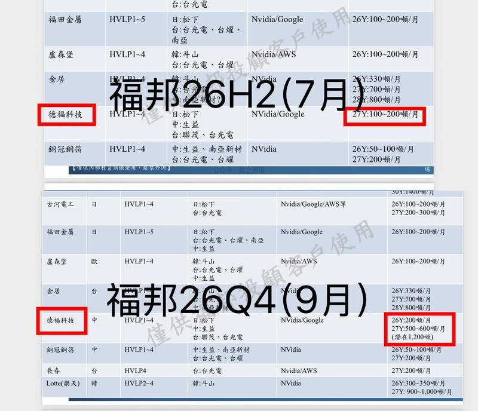
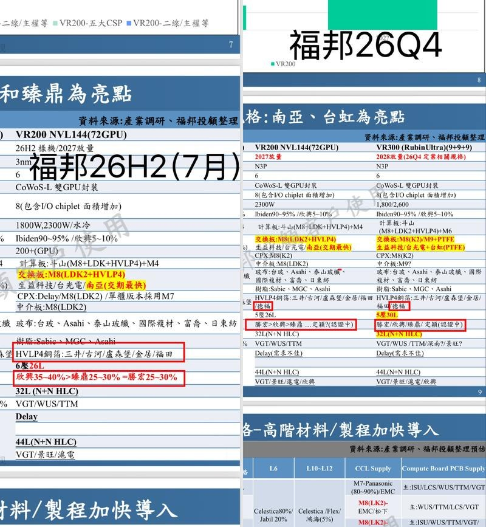
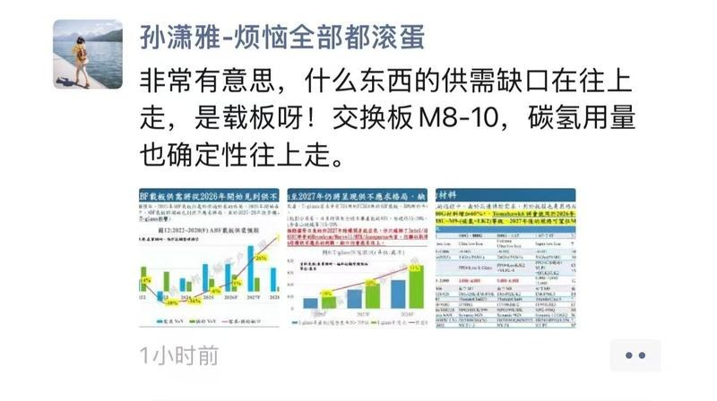
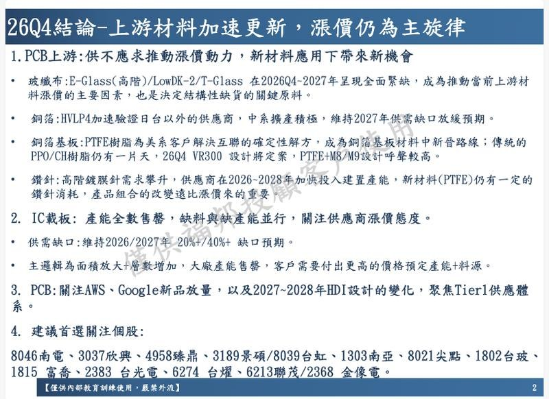
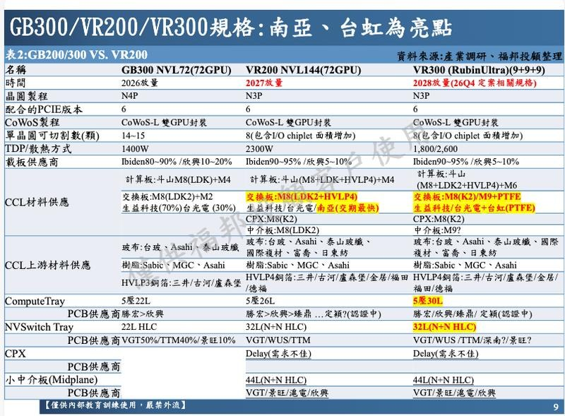
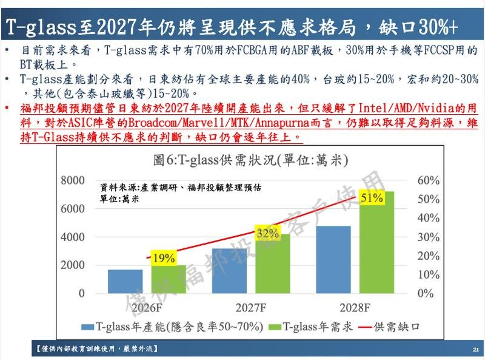
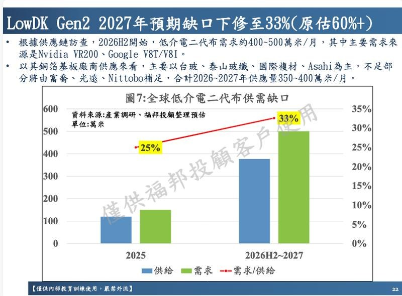

调研纪要 · 2026-09-21 新闻日报
星球 ID: 28855458518111 | 共 343 条帖子 | 精华 98 条
| 查看研究积累
强制同步到研究积累
全部 电子 计算机 机械设备 其他 电力设备 非银金融 医药生物 基础化工 宏观策略 汽车 家用电器 房地产 交通运输 有色金属 建筑材料 国防军工 传媒 石油石化 通信 农林牧渔 食品饮料 轻工制造 银行 公用事业 商贸零售 建筑装饰 社会服务 钢铁
书签
Nscale 的数据中心交易依赖于两大人工智能巨头（Anthropico 和微软）
Nscale 的数据中心交易依赖于两大人工智能巨头（Anthropico 和微软）
📈GS HK MARKET WRAP 高盛香港市场综述
📈GS HK MARKET WRAP 高盛香港市场综述
💡恒生指数上涨 1.2%｜国企指数上涨 1.4%｜恒生科技指数上涨 0.4%｜成交额 2027 亿港元
📌领涨板块：医疗保健 + 4.9%，数据中心 + 3.3%，电子元件 + 2.9%，综合零售 + 2.8%
📌领跌板块：黄金 - 3.9%，家用耐用消费品 - 3.5%，铝 - 1.8%，电动汽车 - 1.5%，人工智能供应链 - 1.4%
💡恒生指数上涨 1.2%，收于高位区间，重新站上 25000 点关键关口。恒生科技指数上涨 0.4%，表现落后于周五 2.2% 的反弹势头。
💡官方媒体正式确认相关外事访问安排。贝森特表示，与何立峰的会谈 “非常成功”。高盛认为美元兑人民币汇率低于 6.7 预示着更为积极的背景。人工智能、贸易、稀土以及可能的伊朗问题均为关键议题。调查解读显示，约三分之二受访者预期此次为象征性访问，三分之一预期取得渐进式进展，且成果更可能出现在贸易政策领域，而非两岸关系或跨境投资方面。
💡医疗保健板块上涨 4.9%，成为表现最突出的行业主线，主要受两大因素驱动：1）北京发布的医药产业 “十五五” 规划；2）有报道称美国财政部规则可能允许大多数中美药品授权交易继续开展，同时限制敏感的生物技术相关交易。
💡互联网板块上涨 2.5% 提供助力。阿里巴巴上涨 3.0% 领涨，因明日（9 月 22 日至 24 日）将在杭州举行阿里云栖大会，主题为 “AI 赋能实际应用”。
💡人工智能供应链板块下跌 1.4%，其中联想下跌 4.9%，此前一周曾大涨 20%；据报 AMD 计划从第四季度起将部分产品价格上调 10%，这可能构成成本压力。
💡MiniMax 下跌 1.7%，Iluvatar CoreX 下跌 3.8%，在富时指数再平衡前录得超过 10% 的涨幅后稍作休整。
💡壁仞科技再次上涨 12%，继上周五大涨 12% 之后延续升势。公司宣布向普通员工（不包括董事、首席执行官、主要股东及其联系人）授予 8239.8 万股股份，作为员工激励计划的一部分，分四年归属，旨在使员工利益与公司保持一致，并留住 GPU 研发人才。
💡中国房地产板块上涨 2.3%。近期市场情绪受益于政策支撑预期的回升，而高盛专家电话会议仍指出，由于销售模式改革以及第四季度需求动能强劲，自 2027 年 3 月起新房供应将出现为期 12 至 18 个月的短缺，但更广泛的稳定局面可能要到 2030 年才会到来。
💡黄金矿业股下跌 3.9%，受美元走强及美联储鹰派立场影响。高盛仍维持 2027 年底金价每盎司 5400 美元的预测；美联储加息放缓了短期上行路径，但预计 2026 至 2027 年央行每月购金量达 60 吨，将支撑 2026 年底每盎司 4650 美元的公允价值。
💡电动汽车股下跌 1.5%；据报道，丰田、通用汽车和福特已加入一个联盟，敦促特朗普维持禁止中国汽车进入美国的禁令。
💡宁德时代下跌 1.3%，尽管当地当局已重启其江西锂矿的环境影响评估流程，同时交易员也在关注锂电池消费税的实施及相关订单波动的评论。
💡小米上涨 4.5%。1）高内存成本时期似乎已结束，宏碁表示内存短缺已消失，而长鑫存储称已达到先进 DRAM 的大规模生产。2）雷军表示，小米 18 Pro 系列将于周三晚上 7 点发布，周二的直播将更新 SUV “鹏程” 的进展。
⚡GS 韩国收盘点评 —— 股指重回 7000 点关口
⚡GS 韩国收盘点评 —— 股指重回 7000 点关口
💡市场核心数据：KOSPI 指数上涨 1.65%，收盘 7007.7 点，成交金额 143 亿美元，外资净卖出 1.25 亿美元。
💡市场核心数据：KOSDAQ 指数上涨 1.11%，收盘 836.3 点，成交金额 53 亿美元，外资净卖出 0.72 亿美元。
📌市场回顾
💡KOSPI 指数全天持续走高，最终收盘站上 7000 点关口。市场行情分化明显，涨幅高度集中在两家芯片制造公司，三星电子 (005930) 上涨 5.0%，SK 海力士 (000660) 上涨 0.6%，市场呈现结构性风险偏好抬升的特征。
💡外资盘中小幅净卖出，但在科技板块仍然为净买入，科技板块外资净买入 1.37 亿美元，其中主要为买入三星电子，买入金额 7.75 亿美元；本土机构是主要净买入方，本土机构净买入科技板块 10 亿美元，同时净买入其他公司板块 12 亿美元。
💡散户投资者选择获利了结，卖出集中在科技板块，合计卖出 23 亿美元。
💡存储板块多条利好消息，例如 9 月前 20 日芯片出口数据强劲，带动半导体板块今日走强，叠加周五费城半导体指数上涨 2.8%。
💡KOSPI 成交额相较 20 日均值下降 7.8%。韩元升值 52 个基点，汇率来到 1 美元兑 1378.4 韩元。
📌主要市场消息
💡半导体板块（上涨）：三星电子 (005930) 上涨 5.0%，SK 海力士 (000660) 上涨 0.6%，主要受周五费城半导体指数上涨 2.8% 带动。
💡多重因素支撑三星电子以及三星电子优先股 (005935) 上涨 6.1%，跑赢大盘：1）韩国本地报道指出，①三星电子计划扩大 HBM4 与 HBM4E 产能，预计明年产能增幅超一倍，玻璃载板用量提升 2.5 倍；即便考虑良率波动与复用情况，依旧代表大规模扩产；②三星电子 HBM 战略重心，已经从 “技术追赶” 切换到 “产能扩张”，其第六代 HBM4 良率，从量产初期不足 60%，提升至接近 80% 的黄金良率水平；2）韩国 9 月前 20 日工作日出口环比提升 7.4%，芯片出口增长 16%，贡献了整体环比增量的约 60%；3）三星电子三季度股息登记日临近；4）9 月 18 日线上会议传递的核心观点，管理层强化存储周期向好的判断。
💡资金流向方面，外资结束连续 8 日净卖出三星电子，今日净买入 7.75 亿美元；外资在 SK 海力士为净卖出，金额 5.87 亿美元。本土机构两家公司均为净买入，买入三星电子 8.18 亿美元，买入 SK 海力士 1.22 亿美元。散户投资者进行获利了结。
💡造船 / 核电板块（持平）：GS 韩国造船板块标的 (GSXAKSIB) 下跌 1.9%；斗山能源 (034020) 上涨 0.5%，早盘高开 2.2% 后回落。
💡板块承压的消息为：美韩 2000 亿美元投资协议谈判遭遇阻碍。与此同时韩国本地报道称，美韩战略投资公司运营委员会将于今日召开会议，审议并有望批准赴美战略投资项目。
💡SEMCO (009150) 上涨 3.0%：根据韩国本地报道，SEMCO 正与一家全球公司洽谈 MLCC 长期供货合同，谈判进入最终阶段，交易规模预计达数千亿韩元。
💡资金层面，本土机构是 SEMCO 今日唯一净买入方，买入金额 0.93 亿美元；外资小幅净卖出，金额 0.11 亿美元；散户投资者获利了结，卖出 0.92 亿美元。
【开源地产】9·21地产大涨点评
【开源地产】9·21地产大涨点评
[玫瑰]从交易层面看，地产股本身低配置、低预期，短期不看重业绩兑现，而更看重政策边际变化。从历史上看，9·30前后也确实是地产政策高发期：2014、2015、2022、2024年，都曾在9月底出台房地产宽松政策。
[玫瑰]从基本面看，前期8·28现房制度利空逐步消化，各城市细则仍在研判反馈阶段。从各地过程稿看，仍有局部松绑的空间。目前看，8·28新政降低了房企周转效率，但是拿地端竞争减少，地价下行有望充分对冲（例如今天建发摘的静安大宁地块，较隔壁大华在25年3月摘地低2.3W/平米，地价下降25%）。
[呲牙]建议积极布局产品力强、核心城市深度布局的品质房企：中国金茂、建发国际、华润置地、招商蛇口、中国海外发展、滨江集团。
⭕我们发布前沿观察【MFC、空白掩膜版、静电卡盘：半导体设备零部件国产化斜率最高方向】 #中信建投电新
⭕我们发布前沿观察【MFC、空白掩膜版、静电卡盘：半导体设备零部件国产化斜率最高方向】 #中信建投电新
🚀#核心观点：
本轮半导体景气周期由AI需求驱动，扩产力度显著超过以往；供给端国内设备整机与主产业链已具备全球影响力，细分零部件与材料成为最后攻坚堡垒，叠加各国出口管控升级，供给紧张程度加剧；我们认为MFC、空白掩膜版、静电卡盘产业链需求属于半导体“三阶导”，同时具备更高国产化斜率。
🚀#主要内容
1️⃣需求端：全球DRAM销售额达1547亿美元，环增60%，晶圆厂高盈利下大幅规划资本开支；国内随着 “两长”陆续上市并规划大额资本开支，设备整机在手订单大幅增长，进而传导至关键设备零部件及耗材的采购需求。
2️⃣供给端：#半导体整机国产化率已约35%，核心设备零部件与材料成为“最后一公里”；国际政治环境愈发复杂，各国出口管制升级；其中，中国稀土管控收紧，使得海外相关材料交期拉长；大基金三期3440亿元约70%投向设备与核心材料。
3️⃣#半导体设备零部件均兼备扩产与存量替换需求，我们以国产化剪刀差、日本垄断程度为标准，锁定景气度较高的环节：
①#质量流量控制器（MFC）。日本 Horiba、美国 MKS、Brooks 垄断90%+、交期长达 1 年，#高凯技术 、华丞等加速放量、#万讯自控等 验证推进中；上游压电陶瓷被京瓷、NEC 等垄断95%+，供应不断收紧，星源材质收购邦瓷电子成为国内唯一量产半导体压电陶瓷厂商。
②#空白掩膜版（Blank Mask）。日本豪雅、信越、AGC等垄断90%+，#聚和材料 收购韩国 SKE相关资产成为国内唯一量产PSM厂商；随着晶圆厂in-house、第三方Mask Shop产能相继释放，带动本土替代需求。
③#静电卡盘（ESC）。美系设备厂捆绑设备销售；单独销售的日本NGK、新光电气、TOTO、NTK等垄断全球85%+；国产#珂玛科技、江丰电子 率先验证；上游氮化铝等陶瓷粉体被日本德山、住友等垄断，由于氧化钇等稀土管控升级，国产化斜率陡峭。
【国盛区块链】SEC发布股票上链“创新豁免”征求意见稿，加密资产板块迎利好
【国盛区块链】SEC发布股票上链“创新豁免”征求意见稿，加密资产板块迎利好
事件：9月17日，美国证监会（SEC）发布了一些针对股票上链的豁免规定，有效期五年，并公开征求意见，旨在通过加速股票上链交易，推动美国资本市场进入数字时代。该规定主要内容是：1）免于将“使用许可式AMM与流动性池提供代币化股票交易的平台”认定为需要遵守1934年《
证券交易法 ↗ 》的“交易所”，而将其定义为“代币化股票服务商（TSV，Tokenized Securities Venues）”；2）免于将“使用自有资金”认定为需要遵守1934年《
证券交易法 ↗ 》的“经销商”。
规定对TSV做了若干限制：1）相关代币化股票与传统股票附着的权利相同；2）上架代币化股票前必须取得该股票发行人的同意；3）代币化股票在公链交易；4）相关代币化股票只能在传统股票的可交易时段交易。
点评：我们注意到，SEC新规发布时间紧挨着9月15日《
Clarity法案（数字资产清晰法案） ↗ 》被参议院投票拒绝正式审议，体现出作为联邦金融监管机构的自主性和对加密市场的支持。我们预计，在特朗普支持加密资产的总体背景下，中期选举前，SEC和CFTC（美国商品期货交易所）将推动更多加密友好新规出台。
投资建议：建议关注：1）拥有公链的合规交易所与加密资产基础设施：Coinbase（拥有Base）、Robinhood（拥有Robinhood Chain）、Circle（拥有Arc）等；2）公链以太坊的DAT：Bitmine（BMNR）、Sharplink（SBET）等；3）公链Solana的DAT：Defi Development（DFDV）等；4）RWA服务商：Securitize等。
风险提示：股票上链市场规模不及预期，美联储加息。
联系人：国盛区块链 宋嘉吉/孙爽（15910247256）
京东方：主业企稳筑底，玻璃基先进封装打开成长空间
京东方：主业企稳筑底，玻璃基先进封装打开成长空间
1️⃣高端产品占比提升，显示业务盈利修复：2026年H1显示器件业务毛利率12.75%，同比提升0.34个百分点。LCD产品结构持续优化，高端旗舰产品取得突破，柔性OLED出货进一步提升。产品结构升级支撑盈利改善，为新业务培育提供基础。
2️⃣技术能力向先进封装延伸，布局AI算力新方向：依托显示技术、玻璃基加工及规模制造积累，公司已实现玻璃基封装载板全流程工艺拉通，完成大尺寸20层载板样品开发和送样；同时与康宁签署合作备忘录，探索材料与制造工艺协同。看好既有技术积累向先进封装领域拓展。
3️⃣试验线通线叠加客户验证，产业化取得阶段性进展：公司玻璃基封装载板试验线设计产能1000片/月，2026年上半年实现全自动化设备通线，部分国内客户已通过概念认证并进入技术测试阶段。后续重点关注客户验证、良率提升及量产订单落地。
我们认为，主业企稳与玻璃基封装突破是公司两条核心逻辑，看好产品升级带来的盈利改善，以及制造能力向先进封装延伸的中长期成长潜力。
风险提示：需求不及预期、面板价格波动、客户验证及量产进度不及预期。
【中粮科技】：丙交酯投产打开PLA产业链第二成长曲线
【中粮科技】：丙交酯投产打开PLA产业链第二成长曲线
[红包]近期海正生材、金丹科技持续走强，核心交易的是3D打印需求爆发带动PLA产业链景气提升。我们认为，#中粮科技当前最大的预期差，在于市场仍主要按玉米深加工、燃料乙醇等传统业务定价，而公司3万吨/年丙交酯项目已进入投产窗口。
[红包]产业链看，玉米→乳酸→丙交酯→PLA→3D打印耗材，其中丙交酯是两步法PLA的关键中间体。随着消费级3D打印快速增长，PLA正从传统“可降解塑料”向高频耗材场景延伸，产业链景气有望继续向乳酸、丙交酯上游传导。
[红包]中粮科技本身具备玉米深加工基础，叠加丙交酯项目落地，有望进一步完善生物材料产业链布局。若后续项目顺利达产，公司有望从传统农产品加工企业，逐步向玉米生物制造+丙交酯+PLA产业链重新定价。
🔥重要！【上海电气】重大推荐：国内唯一重型燃机出海主机厂，有望受益于全球燃机供需缺口【浙商新兴产业吴婷婷/钟凯锋团队】20260921
🔥重要！【上海电气】重大推荐：国内唯一重型燃机出海主机厂，有望受益于全球燃机供需缺口【浙商新兴产业吴婷婷/钟凯锋团队】20260921
#一句话逻辑：国内唯一重燃出海主机厂，全球燃机供需缺口下，有望实现估值与盈利双重提升。
🌹市场认为
1）燃气轮机长期被海外巨头垄断，国内企业出海空间与竞争力有限。
2）公司作为传统综合装备制造国企，主业增速平稳，缺乏高增长的爆发力。
🌹我们认为
1️⃣2025年全球燃机存在30-40GW供需缺口，公司为国内唯一重燃出海主机厂有望充分受益。
👉AI算力扩张下，全球燃机供需严重失衡状态，海外巨头通用、西门子、三菱交付周期普遍排至2028-2030年，国产燃机出海迎来黄金发展窗口期。
👉公司是国内唯一具备重燃全生命周期供货+服务能力的供应商，具备70MW至300MW、E级/小F级/F级/H级燃机自主设计能力，拥有在#东南亚+大洋洲+南美等区域的自主出口权，#北美等市场可参与生产分包。
👉2026年9月8日宣布首台套燃机中标马来西亚500MW级联合循环项目，验证公司作为国内唯一重燃出海主机厂逻辑。
2️⃣主业在手订单饱满，新旧能源协同发力，人形机器人打开成长空间
#检验指标与催化剂
1）检验指标：海外燃气轮机项目中标情况及订单落地；核电项目设备排产交付节奏与收入确认。
2）催化剂：海外区域燃机大单签署；北美AIDC扩建下全球电力设备出海需求超预期。
#盈利预测与估值
预计2026-2028年营业总收入分别为1378/1502/1644亿元，同比增长9%/10%/9%；营业收入分别为1371/1494/1636亿元，同比增长9%/9%/9%；归母净利润分别为16/20/24亿元，同比增长31%/27%/22%。2026年9月21日收盘价对应的PE分别为64/50/41倍，维持“买入”评级。
#风险提示
海外工程业务及汇率风险；燃机订单交付或中标不及预期；核电排产节奏依赖风险；人形机器人商业化不确定性风险。
☎欢迎联系浙商新兴产业团队吴婷婷13472717082或者对口销售
💡方正科技调研反馈 2609
💡方正科技调研反馈 2609
【1】#结构：AI占比提升牵引ASP向上_净利率进入环比上行通道
——25A/26E/27E AI算力业务收入占比约50%/60+%/70+%。其中26E看，光模块/交换机/服务器/收入占比约25%/25%/10%。
——订单单价由去年同期约500元/平方英尺提升至7M26月接近1,300元/平方英尺。26H1综合毛利率约32%，净利率接近16%，Q2净利率约18%。
【2】#产能：爬产进行时_1.6T光模块PCB已进入批量交付阶段
——F8计划于11M26建成，27H2逐步爬满；重庆相关扩产和技改项目分批释放1.6T交换机增量（产能排期至27年）；F6扩建项目预计27年开始贡献产能；泰国基地仍处于爬坡和客户导入阶段，预计27年逐步爬升。
——1.6T光模块方面，F3已有一条相关产线实现批量交付，另一条预计11M26设备到位；F8规划三条相关产线。
——26年单月平均有效产能80-90w平方英尺；预计27H2单月有效产能100-120w。其中，每条1.6T产线理论产能约为每月400K，考虑良率（目前已从早期30%提升至75%，目标80+%），5条产线对应月产能约160-200KK。
【3】#壁垒：mSAP产线涉及近百道工序_单条产线设备投入2+亿元
——从压合、电镀、清洗等前序环节开始，一条完整产线涉及接近100道工序；一块板在生产过程中可能反复周转约60至70次，主要流程包括前处理、贴膜、曝光、显影、蚀刻、电镀、清洗和后续检测。
——从零建设并覆盖全部前后工序的完整PCB产线，设备投资至少约2亿元，部分激光钻孔、曝光、电镀等核心设备单台价值可能达到数千万元。
🔥【GSDZ】力芯微调研反馈：微能量收集迎放量，存储电源打开成长空间
🔥【GSDZ】力芯微调研反馈：微能量收集迎放量，存储电源打开成长空间
#微能量收集批量出货
公司微能量收集芯片已开始出货，海外多家客户已有订单。当前主要用于遥控器，后续拓展电子价签、门锁等IoT场景，遥控器+电子价签潜在需求每年约20亿颗。当前产品ASP约0.5-1美金，毛利率约60%-70%，放量有望带动利润释放。【公司2026年出货预计2000-3000万颗，2027年目标2亿颗】
#存储电源由验证转向出货
SSD电源产品2025Q4完成验证，2026H1小批量供货、下半年持续爬坡，主要竞对为MPS、TI。公司争取2027年成为相关韩国客户第三供应商，【若达到20%份额目标，对应约6亿元收入空间】。国内已通过国内模组验证，国内存储大厂客户拓展持续推进。
[玫瑰]基本盘7月初启动涨价、涨幅约20%，预计Q4逐步体现。我们认为，公司【微能量收集放量+存储电源突破】有望形成持续催化，后续仍有更多业务值得期待，新业务有望持续贡献业绩增量。
国机精工高管交流要点
国机精工高管交流要点
#超硬材料业务架构
针对金刚石功能化应用、金刚石工业化应用成立专门工作组，设立功能金刚石研究院承接相关材料研发工作，同时启动三大国际金刚石产业园建设，今年研发投入规模较大，预计金额同比翻倍。
第一产业园交付时间为2027年底，相关产能预计2027-2028年逐步释放。第二产业园规划产能定位为半导体领域高精密陶瓷配件、吸盘类大配件生产。
新疆生产基地定位为金刚石产业化生产基地，将布局MPCVD、HTHP产线，郑州定位为研发中心，针对客户需求打造定制化方案做测试验证。目前已和新疆当地签订人才合作协议，派驻郑州员工赴新疆工作给予最高40%的区域系数补贴。
#技术进展
公司目前可量产6英寸单晶金刚石光学片，大尺寸金刚石生产不能仅看尺寸，需兼顾翘曲率、加工良率、晶面均匀度等指标，目前行业内8英寸、12英寸金刚石多数无法实现稳定加工。
2450的10千瓦MPCVD设备是当前主流机型，15千瓦设备经济性不足暂不成熟；915的30-36千瓦设备处于试验阶段，长大尺寸金刚石有优势，但长晶效果不及2450。
#下游应用进展
金刚石散热应用需求增长明显，2025年公司主动寻找客户，2026年已转变为客户主动对接，新型芯片企业需求最为积极。当前金刚石散热性能远高于下游实际需求，只要热导率稳定达到700-800W/mK即可满足入场要求。
金刚石铜：有几个客户打样，有的已通过测试。联想笔记本为第一个落地订单，两个型号均通过测试，小量订单，明年会量产。曙光在测试中。金刚石铜预计量产毛利率在20-30%不会太高，主要看量的增长。
纯金刚石：海光、华为通过测试，随时可以启动，小米送样测试中。
#MPCVD扩产计划
目前产能500台CVD设备，今年计划新增300台，进度在于第三产业园基建，计划10月底第三产业园第一栋厂房建设完成，后面根据市场情况再向集团申报投资项目。最终产业园可容纳10kw设备5000台。
郑州三磨所园区预计中试项目投资100-200台，专门针对客户打样，测完去新疆签战略合作协议。
已有的产能中约20%-30%用于功能金刚石相关业务，其余主要用于培育钻石生产
[红包]【XB中小盘】国机精工交流反馈‼️：半导体超硬材料加大投入，金刚石功能化应用落地在即
[红包]【XB中小盘】国机精工交流反馈‼️：半导体超硬材料加大投入，金刚石功能化应用落地在即
#半导体耗材，稀缺先进封装耗材供应商。2025年相关收入4.2e，核心布局封装刀/减薄砂轮，受益先进封装产能提升。26/27目标继续大幅提升。远期规划超硬材料产能20e，半导体占比不低于70%。陶瓷制品今年收入预计2e，远期增量为静电卡盘，产品已向下游发货。
#金刚石：散热产品国内头部客户持续送样，等待最终方案落地，26年底有望形成批量。金刚石持续降本，芯片材料替换经济性迎来拐点，关注钻针边际变化。年底MPCVD设备达到700台，新疆产能留有较大冗余，等待客户落地。
#金刚石加工能力：4英寸以下达到1nm，整体加工良率达到8成。
☎️详细内容联系xb gwj ，
🔥【国金机械】中国船舶：盈利能力长期向上，把握当前低位布局机会
🔥【国金机械】中国船舶：盈利能力长期向上，把握当前低位布局机会
#高价船舶订单陆续交付，#盈利能力有望持续提升。 1H26公司毛利率17.37%，较1H25提升4.79pcts，主要系公司26H1交付的是23-24年的相对高价的订单。24-25年船价维持高位，26年Q2以来船价恢复上涨通道，对应28-29年盈利能力有望进一步提升，后续毛利率仍有较大上涨空间。
#存量产能持续优化，#造船产能取得实质性攀升。 公司产能提升主要依靠：1）效率提升，通过调整船坞串联、并联建造模式，增加开坞门次数提升交付量；2）硬件能力升级，大连船厂和外高桥正在新建1600和2200吨龙门吊，通过减少船体分段数量缩短建造周期。3）智能化升级：推广焊接自动化、智能切割、涂装、除砂等机器人应用。1H22-1H26公司半年度交付量从600万DWT提升到956DWT，1H23-1H26公司交付艘数从59艘提升到102艘，接近翻倍，产能实现连续攀升。
#业绩已进入爆发期，#关注低估值造船龙头。 公司在26H1进入业绩爆发期，1H26归母净利润99.54亿，预计26年利润208亿，27-28年利润302/381亿元，当前市值对应26-28年PE仅14/10/8X，本轮上行周期可持续到2032年之后，当前正处于景气度二次拐点向上时刻，当前市值显著低估，建议把握当前低位布局机会。
☎国金机械：满在朋/房灵聪18361753245
新华文轩：拟收购民族社，强化主业竞争力可期【中泰传媒互联网】
新华文轩：拟收购民族社，强化主业竞争力可期【中泰传媒互联网】
[玫瑰]事件：公司拟以自有资金（支付现金方式）收购控股股东四川新华出版发行集团旗下民族社100%股权。
[玫瑰]点评：
⭐民族社深耕藏文、彝文等少数民族文字出版、民族古籍整理及主题出版等领域，具备较强的内容资源积累、专业编辑能力和出版资质优势。民族社2025年实现营收1.85亿元、净利润0.22亿元；2026Q1营收0.70亿元、净利润0.16亿元，盈利稳健。本次交易以收益法评估结果为定价依据，评估收购价值为3.46亿元，对应2025年PE约15.9X，并同时设置2026年4月-2029年业绩承诺期，其中2026年4-12月、2027年、2028年承诺净利润分别为0.11亿元、0.17亿元、0.17亿元。
⭐本次收购一方面，解决了控股股东层面潜在的同业竞争问题；另一方面，将民族社的专业资质、内容积淀与公司成熟的出版发行体系深度融合，丰富内容供给矩阵，强化主题出版与民族出版的细分优势；同时依托公司全渠道发行网络，放大民族类图书的市场覆盖与运营效率，助力主业高质量发展。另外，公司以自有资金完成收购与资源整合，有利于提升资源配置效率，依托充裕现金流整合优质内容资产，强化出版主业核心竞争力。
⚡风险提示：文化监管端的政策风险；国有传媒企业优惠政策变动；短视频直播电商图书折扣力度加大；研报使用的信息数据更新不及时的风险。
☎欢迎交流&派点请支持中泰传媒互联网团队
康雅雯 18521305887
李昱喆 18939881981
[红包]【国金金属】AI金属月度供需更新0921：钼锡消费景气，钨进口高增
[红包]【国金金属】AI金属月度供需更新0921：钼锡消费景气，钨进口高增
✨锡：8月锡表观消费量15,447吨，当月同比-1.0%，累计同比+5.9%；锡测算终端消费量为18,975吨，当月同比+5.8%，累计同比+9.0%，维持较高景气。
✨钼：8月钼表观消费量13,938吨，当月同比+18.7%，累计同比+13.2%，单月增速继续上行；钼测算终端消费量15,820吨，当月同比+10.2%，累计同比+8.5%，维持较高景气。
✨钨：8月钨进口金属量2,950吨，当月同比+132.2%，累计同比+84.8%，增量主要来自东南亚、非洲及拉美；钨出口金属量954吨，当月同比-38.8%，累计同比-23.8%，降幅进一步走扩。
✨钽：8月铌、钽、钒矿砂及其精矿进口量1,686吨，当月同比+46.5%，累计同比+28.2%，增速有所上行；片式钽电容器出口量64.84吨，当月同比+13.5%，累计同比+22.4%，维持较高增速。
风险提示：商品价格大幅波动；下游需求不及预期；统计口径差异。
国金金属王钦扬/吴晋恺/宁柯
🔥【国联民生电子】华为超节点搭配npo出货
🔥【国联民生电子】华为超节点搭配npo出货
🚀9月17日，华为在2026年9月17日的全联接大会上发布了昇腾960超节点（产品型号Atlas 960E），#首次在超节点中采用近封装光学（NPO）技术，取代传统可插拔光模块。
📌整机采用5,500个自研Hi-ONE光引擎，替代原本所需的4.8万只800G可插拔光模块，总容量达39.6 Pbps（可插拔方案为38.4 Pbps），实现超节点内可插拔光模块数量“归零”。
📌采用线性直驱，移除光引擎内高功耗DSP芯片，将均衡功能整合至主芯片SerDes，时延从100 ns降至10 ns。#光源内置（耐高温高可靠CW激光器），引擎支持单独更换，系统级光路保护切换达百纳秒级。
[玫瑰]我们认为：我们在光博会中了解到：1）明年国内800G和1.6t开始起量。2）#国内NPO进展快于海外，但是明后年海外量级更大；根据nv的新架构，#可以推算出明年nv至少200w只的量，叠加META、AWS等NPO方案，总体预期在500-1000w只，后年放量。3）#NV的NPO方案目前大概率也是选择内置光源，建议持续关注散热和NPO进展。
[玫瑰]建议持续关注：
NPO：华工科技、光库科技、源杰科技、长盈通、联讯仪器、中际旭创、优迅股份
CPO：天孚通信、炬光科技
风险提示：扩产节奏不及预期，产业竞争加剧
☎ 国联民生电子薛宏伟/袁妲
【财通地产】板块异动点评
【财通地产】板块异动点评
#地产板块继续大涨本质是已充分反映最悲观政策预期后的超跌反弹。板块自828新政落地后，经历了两轮大幅下跌，当前跌幅已基本反映新政的最悲观预期，故近期个别城市较为宽松的细则文件流出，在边际上修复预期。
#各传闻仅公积金利率调整是有机会的。贴息传闻无论从资金来源还是执行力度都不可信，公积金贷款利率则由于920后决策机构调整为国务院，确实有机会实现下降，且当前对市场企稳最有效的政策亦为利率政策。
#旺季基本面如期回升同样助推预期。9月以来，15城二手房成交面积同比+8%，核心城市价格也恢复企稳态势。
#行情持续性取决于三大预期的兑现情况。1、各地细则是否会较为宽松（但预计各地细则落地会在10月后）；2、贴息传闻（一定会miss）&公积金利率（当前情绪无论落地与否都不会继续构成上涨的催化）；3、核心城市市场企稳与否（大概率只有上海能够企稳）。
#当前市场情绪已包含一定乐观预期。由于各城市细则及核心城市的价格企稳仍需更多时间观察，拐点级别行情仍需耐心等待，反弹行情中推荐有持有资产安全垫的华润置地。
【基本面接近见底，底部推荐消费建材】
【基本面接近见底，底部推荐消费建材】
今日房地产指数、装修建材指数分别上涨4%、3%，科顺股份、三棵树、坚朗五金、兔宝宝、东方雨虹分别大涨8%、8%、6%、4%、4%。
[太阳]地产成交存量化，二手房成交增长对冲新房下滑；公积金用途新增装修自住住房、支付物业费等提取情形
房地产进入存量时代，二手房交易占比从2020年的27%提高至2025年的46%，今年前8个月已达52%。1-8月份，新建商品房销售面积49880万平方米，同比下降12.1%；其中住宅销售面积下降13.0%。新建商品房销售额47470亿元，下降13.0%；其中住宅销售额下降13.1%。根据住房城乡建设部数据，1-8月份，二手房交易网签面积54923万平方米，同比增长10.6%。
新修订的《
住房公积金管理条例 ↗ 》自9月20日起正式施行，提取情形从6种增加到9种，新增装修自住住房、支付物业费等提取情形，灵活就业人员也可自愿缴存住房公积金。《
城市更新“十五五”规划 ↗ 》明确，期间将改造城镇危旧房约50万套（间）、新开工改造城镇老旧小区约11.5万个、改造城中村约4000个。
[太阳]装修建材指数近期虽有所上涨，但仍处于924以来的底部位置。
[太阳]板块基本面接近见底，强alpha公司收入有韧性
从需求端来看，强alpha公司收入有韧性，东方雨虹、三棵树Q2收入同比增速持平附近，兔宝宝、悍高集团Q2收入增速9%、18%。从成本端来看，油价近期虽有所上涨，但布伦特原油期货价格没有超过Q2高点。大部分公司坏账计提水平25~26年持续下降。
[太阳]复盘此前4轮政策驱动的建材反弹行情，消费建材指数涨幅略低于房地产指数；子版块中，消费建材领涨，水泥次之
复盘22年至今4轮政策驱动的建材反弹行情，22/11/1~23/2/21（防疫政策优化、房地产金融16条）；23/7/10~23/7/31（政治局会议：供求关系发生重大变化）；24/4/17~24/5/20（地产517新政）；24/9/18~24/11/7（924地产新政），建筑材料指数平均涨幅26%，略低于房地产指数（平均涨幅30%）。子版块中，消费建材指数平均涨幅33%，在建材板块中领涨，水泥子版块涨幅次之。
相比于水泥玻璃等周期股，消费建材估值弹性更大。过去4轮建材反弹行情中，涨幅居前的公司包括：【三棵树】（4次反弹平均涨幅63%，三大新业态持续增长，高业绩增速）、【兔宝宝】（4次反弹平均涨幅54%，Q3、Q4业绩快速增长，计划更新中长期分红规划）、【科顺股份】（4次反弹平均涨幅50%，防水涨价，坏账拖累接近尾声）、【东方雨虹】（4次反弹平均涨幅48%，防水涨价，坏账拖累接近尾声）
[太阳]推荐消费建材东方雨虹、兔宝宝、三棵树
【东方雨虹：成本端压力传导顺畅，看好海外业务发力】
预计公司26~27年归母净利润分别为11.90、23.24亿元，同比增长951%、95%，对应估值22、11倍。其中，假设26年收入同比增长8%，不算坏账的利润率8%（Q1、H1分别为8.6%、8.8%），坏账计提12亿（上半年资产减值+坏账计提7亿）。公司上半年成本端压力传导顺畅，计提拖累业绩，预计26年整体计提较充分。26年全年海外收入预算为40多亿元（2025年全年海外约16亿，2024年约8亿多）。长期目标为10年左右海外占集团整体收入的一半，海外远期利润率超过10%，有望成为核心增长点。按分部估值测算，今年国内经营业绩（不算坏账）恢复到20亿以上，假设给15倍估值；海外业务3年内有望达到百亿，利润贡献10亿以上，假设给15倍估值，合计目标市值450亿，80%涨幅空间。
【兔宝宝：本部稳健增长，高股息率】
预计26年业绩7.74亿元，同比增长10%，对应估值12倍。根据公司分红规划，26年年度分红5.5亿元，对应股息率5.8%。上半年本部扣非业绩增长3%，其中Q2增速7%。依托渠道下沉和中小家具厂持续发力，预计26年全年本部扣非业绩增长8%。
【三棵树：短期受到成本端压力，三大新业态驱动C端持续增长】
预计公司26、27年归母净利润分别为7.3、10.3亿元，同比增长-5%、41%，对应估值27、19倍。预计26年收入同比增长4%，达到130亿，考虑坏账计提1.5亿，利润率提升到5.4%（不算坏账的利润率6.8%）。Q2到8月发货中，零售增速较好，10%~15%，工程这边有拖累。
怎样判断这次访问是否真有成果？
怎样判断这次访问是否真有成果？
不要看接机、国宴和讲话，要看五个可验证结果：
11月10日到期的关税休战是否延长；
300亿美元非敏感商品降税是否公布清单；
H200等芯片的配额和批准客户是否扩大；
稀土、农产品、飞机订单是否写明数量和期限；
AI对话是否只有通知机制，还是涉及算力、模型和云服务规则。
礼仪是政治信号，文件是政策，订单和交付才是经济结果。
最终判断
我看这轮互访标志着一个阶段变化：
中美已经从“谁能迅速制服谁”的试探，进入“谁能在长期相持中更好发展自己”的竞争。
不是新蜜月，也不是谁向谁投降；不是竞争消失，而是双方都承认竞争必须有边界。
对中国而言，最大的机会不是美国突然变成朋友，而是通过稳定外部环境获得几年宝贵时间，解决内部需求和关键技术问题。最大的风险，则是把别人暂时递来的工具，当成自己已经拥有的能力。
PCB更新下：
PCB更新下：
1、RUBIN确实在出货起量，但也是逐步爬坡，前期进度影响了胜宏6、7月份量，8月起来了，9月进一步起来。生产周期8周，大的量在Q4。RUBIN目前在TSMC的量在上修，TPU稍微下修。
2、Q4胜宏谷歌的量和份额也会很可观，所以Q4对整个PCB是MSAP、RUBIN、谷歌三叠加，胜宏Q3不用特别乐观，段子传的H2问题不大，Q4不错。
3、背板目前看还是在的，PTFE方案最近整体测试不太好，估计又要看后面测试。台光M10为主。
#重要‼️‼️
#重要‼️‼️
福邦26Q4（9月）对比26H2（7月）有两个非常大的变化：
1.ComputeTray 胜宏重新获得最大份额，SwitchTray（32L）、Midplane（44L）仍保持一供，未来Nvidia体系下总份额仍有望50%
2.德福HVLP-4产能上修非常明显，且已明确进入VR200/VR300供应链


2 图
AI资本开支及信用市场更新
AI资本开支及信用市场更新
[玫瑰]AI Capex及相关信用市场更新（2026.09.21）
边际变化：1）各家企业CDS整体回升，上涨幅度0.3%-4.9%；2）30年期美债收益率5.34%，环比+0.05pct。
SpaceX（+0.44bp），微软（+0.58bp），亚马逊（+1.14bp），谷歌（+1.48bp），英伟达（+1.99bp），Meta（+2.89bp），甲骨文（+3.79bp），博通（+4.94bp）。
【光大高端制造团队】黄帅斌 / 庄晓波 / 陈奇凡
【中信证券前瞻】海外AI产业链景气度全景式跟踪，最新一周（截至9/21）较上一周：
【中信证券前瞻】海外AI产业链景气度全景式跟踪，最新一周（截至9/21）较上一周：
本周，Token价格降幅较此前显著收窄，同时算力硬件租赁价格继续温和上行、四大云厂10Y信用利差同步大幅收窄，指向底层算力需求与市场信用预期同步改善。
1、模型：Token价格指数均值-0.9%，降幅较此前几周大幅收窄，我们认为主要由ChatGPT 6 Astra上线带来的高端模型需求带动，近期模型有望密集发布，关注：1）Anthropic IPO进展及Opus 5.5；1）OpenAI开发者大会（9月29日）；2）Meta Connect大会（9月23日）等。
2、Hypercaler：H100/B200租赁价格均值分别+0.2%/+0.6%；META/ORCL/CRWV 5Y CDS分别-2.1/-2.0/+34.6bps，走势与上周持平，CRWV CDS仍维持高位。AMZN/MSFT/GOOGL/META 10Y信用利差（Z-Spread）均值分别-7.0/-6.5/-7.6/-8.7bps，云厂信用状况继续改善。
3、半导体&硬件：DDR4 16Gb(2Gx8)3200、DDR5 16Gb(2Gx8)4800/5600均价分别变化-4.7%/+1.8%，DDR4现货价格走弱，DDR5延续温和上行。
GS地产：9.21地产大涨
GS地产：9.21地产大涨
[太阳]市场在传什么政策？
市场在传小作文主要有三：
1、公积金利率降10bps（递上去了，能不能批看情况）
2、财政部贴息（已经传了好几次了、好几次）
3、救助万科（银行贷款展期和完全的救助之间是有壁的）
其余就是发文、专家会等等情绪面烘托
[太阳]市场在炒什么？
驱动不是基本面，而是按照惯例的政策博弈。这个时间点小作文多变，本质上是博弈”930“出大政策的一个惯性。那为什么资金能炒起来呢？因为地产的机构持仓很低，拉升阻力不是很大，配合消息传播的拉升是最快的方式。所以，定位上仍然是反弹而不是反转。
【华创AI新材料&化工】氟化工更新17：8月制冷剂出口数据公布，R32出口量环增，短期出口仍有所承压
【华创AI新材料&化工】氟化工更新17：8月制冷剂出口数据公布，R32出口量环增，短期出口仍有所承压
[庆祝]根据海关总署数据，8月制冷剂主要品种出口数据如下：
①R32：8月出口量2560吨（同比-64.9%，环比+23.0%），均价56831元/吨（同比+19.9%，环比-1.3%）
②R125混配：8月出口量3760吨（同比-35.7%，环比-21.2%），均价53721元/吨（同比+17%，环比-0.9%）
③R134a：8月出口量7366吨（同比-33.3%，环比-24.1%），均价55413元/吨（同比+22.6%，环比-0.4%）
④R143a混配：8月出口量2975吨（同比-22.2%，环比-13.9%），均价34928元/吨（同比+16.8%，环比+0.6%）
⑤R22：8月出口量7037吨（同比+10.3%，环比-10.2%），均价15692元/吨（同比-33.5%，环比-0.3%）
⑥R142b：8月出口量2290吨（同比+74.4%，环比+80.5%），均价15695元/吨（同比+15.7%，环比+2.5%）
[玫瑰]中东地缘局势及运输扰动对8月实际出货仍形成一定压制。考虑到库存低位和海外配额期最后一年，预计10-11月份会有好转；若后续地缘及航运扰动缓和，前期延后的采购需求有望集中释放，制冷剂出口量或迎来较快修复。
[烟花]建议持续关注#巨化、永和、三美、昊华、东岳等；#欢迎深度交流
[蛋糕]联系人：孙维容/徐思博
【东方食饮】黄酒产业趋势分析
【东方食饮】黄酒产业趋势分析
基本结论：黄酒产业尚未进入“S曲线”最陡峭阶段，“微寒”而非“过热”。
从产业阶段看，我们认为2026年黄酒产业趋势加速崛起，但当下黄酒在酒精消费的渗透率处于低位，需求侧尚未进入“S”曲线斜率最陡阶段：
1）短期内，市场对黄酒的消费属性及定价体系认知仍模糊，黄酒在高端价位的定价权仍相对匮乏，产业需要寻找“最大公约数”，通过合适的价值链分配体系形成渠道合力，引导产品结构提升，以高带低，拉动黄酒消费属性从饮食配套的消费品向具备社交属性的消费品变迁；
2）黄酒产地、格局相对分散，头部品牌效应尚不明晰，仍存在过度竞争，产业对于黄酒行业的消费标准、定价理念等方面共识有待完善。考虑到当下行业供给、需求逐步优化，黄酒在2027年有望进入加速发展阶段，高端黄酒有望迎来渗透率快速提升。
9月重点提示黄酒，当下位置，按顺序，继续提示古越龙山、会稽山等黄酒标的！
东方证券 李耀/张馨予
🐱🐶【申万农业】8月宠物食品出口数据跟踪
🐱🐶【申万农业】8月宠物食品出口数据跟踪
#出口额、出口量均同比上升，环比下降；#出口均价同比下降，环比上升
#26年8月 中国宠物食品出口金额为9.7亿元（1.4亿美元），环比-5.0%（-4.7%），同比+16.7%（+23.0%）；宠物食品出口量3.8万吨，环比-5.2%，同比+29.6%。出口均价为2.5万元/吨，同比-10.0%，环比+0.3%。
#26年1-8月 中国宠物食品累计出口金额为75.2亿元（10.9亿美元），同比+11.2%（+15.8%），出口量30.1万吨，同比+30.4%，出口均价2.5万元/吨，同比-10.0%。
#8月对美国出口额同环比均提升 8月出口额为1.2亿元，同比+16.2%（25年8月为1.0亿），环比+2.3%；出口量同比+20.4%，环比-2.4%。1-8月对美合计出口额8.1亿元，同比-15.1%，对美合计出口量1.7万吨，同比-11.4%。
#德国仍然为中国宠物食品第一大出口国 8月对德国出口额为1.4亿，同比+10.9%，环比-22.9%，出口量0.3万吨，同比+25.9%，环比-17.9%。25年起德国成为中国宠物食品第一大出口国，26年1-8月出口额占比为16.5%，继续增长。
#其他国家： 对韩国、日本出口额及出口量同环比均上升；对英国出口额及出口量同比上升、环比下降。
曹柳龙：美债风险尚未解除
曹柳龙：美债风险尚未解除
1⃣️ 如果油价未明显回落or特朗普中期选举失利，美债可能发生流动性冲击
2⃣️ 如果这种流动性冲击能够倒逼美联储QE，国内政策空间将彻底打开，“消费核心资产牛”有望接棒
3⃣️ 短期配置低位的地产和消费“防冲击”，待美债流动性冲击过去后，中期布局地产消费/港股互联网/黄金有色
[玫瑰]联系人：曹柳龙/缪一宁
HVDC电源维谛专家交流信息探讨9.21
HVDC电源维谛专家交流信息探讨9.21
听了维谛专家的交流，感觉目前市场有几点信息存在落差，以HVDC目前的推进进度，相信也很快得到印证。
以维谛专家的口径：
1、市场认为HVDC28年才有订单，但实际上是26年第四季度就有，台达维谛麦米都会有小批量订单。这里如果麦米系统内可以印证Q4小批量订单，基本也能证明HVDC量产的进度应该比市场认可的要快，26年底小批量，27年大批量生产预期。
2、市场认为麦米是RUBIN二供，但实际上一供是台达二供是维谛，一般来说一供60-70%份额，二供20-30%份额，三供5-10%。台达同时布局电源和系统，在PSU市场成本优势更突出；维谛优势在于系统领域，未来系统端份额预计更高。
3、市场认为RUBIN大部分是采用415V电源，但实际上RUBIN电源90%的份额采用HVDC。英伟达Rubin机型单机柜功率达240千瓦，单模组可达4.2兆瓦，对应电流达6300安培，已触及交流低压元件的电流承载极限，800V HVDC成为必然技术路线。这不是选项是刚需。
4、Rubin阶段处于交直流切换期，早期批次约10%-20%使用交流供电，80%-90%切换为直流供电；到Rubin Ultra阶段将实现全直流800V供电。当前800V CE认证已完成，北美UL认证在立项和标准制定阶段，将边推进边完善规范。（这里补充个个人验证，HVDC检测设备UL认证已通过，目前在订单落地中。）
5、第一批次直流模块总体订单金额预计约30亿美金，维谛公司预计三年可获得设备订单金额约20-25亿美金，目前确定性订单以头部厂商为主，订单落地节奏完全取决于北美客户的建设规模和下单速度。
6、北美市场高压直流产品毛利率保底40%起步，显著高于国内HVDC产品10%左右的毛利率，也高于国内UPS产品20%-30%的毛利率，与海外UPS产品45%左右的毛利率接近。
7、行业延展关注方向
• 锂电需求爆发：供电系统向兆瓦级升级，传统铅酸电池并机数量多、密度低，无法满足需求，锂电池在海外市场呈现5-10倍的增长，且锂电池价值量通常高于电源本身。
• 小母线需求提升：AI机柜功率密度提升，传统列车位配电无法满足需求，高密度小母线（Busway）应用将快速增长，价值量不低于HVDC。
• 电网仿真与微网领域：供电系统从单个电源向园区级电源系统演进，微网、电网仿真相关业务需求提升，行业内已出现相关收购动作
AlphaSense专家访谈纪要，AMD高级软件系统设计师，谈SK海力士的HBM领先地位及其长期挑战
AlphaSense专家访谈纪要，AMD高级软件系统设计师，谈SK海力士的HBM领先地位及其长期挑战
（关于中国厂商良率的评价可能过于悲观了）
专家视角：客户方（AMD，高级软件系统设计师）
分析师视角：买方机构投资者
要点：
- SK海力士之所以能够在HBM领域取得领先，是因为它率先完成了HBM3/HBM3E的商业化落地，并且与英伟达开展深度联合认证；并非本身拥有一套根基性、难以撼动的技术优势。
- 在通用服务器DRAM以及传统存量DRAM市场上，三星凭借规模与产能依旧是实力更强的厂商；LPDDR赛道上三星、SK海力士、美光三家形成实打实的三方竞争格局。
- 至少到2028年，HBM市场仍将处于供给紧张的状态，三星、SK海力士、美光三家寡头的格局仍将维持；长鑫存储与长江存储大约要到2028‑2029年之后，才会在全球范围内形成有威胁的竞争力。
- 长鑫现阶段HBM裸片良率低于行业三巨头的60‑65%水平，悲观的预估不足30%；主要瓶颈在于硅通孔互连技术以及芯片键合工艺
- 如果SK海力士将晶圆产能转向HBM生产，有可能造成传统DRAM与LPDDR的供货收紧；前提是海力士不新增采购设备，而是直接改造现有产线。
- SK海力士面临的最大隐患在于业务集中风险：大约50%的HBM收入来自这一轮AI超级景气周期；扩产同时还会受到设备交付周期长、封装工程人才紧缺的制约。
- 和英伟达这类客户开展更深层次的联合设计，一方面降低了HBM的大宗商品属性，巩固了SK海力士的竞争护城河；但另一方面，也加深了它对少数云厂商、AI加速器客户的业务依赖。
SK海力士的HBM行业地位
这位专家认为，SK海力士的优势来源于较早完成产品认证，并且和英伟达形成紧密的反馈迭代闭环；这一点进一步帮助企业拿到了更好的良率，并且在一代代HBM产品迭代过程当中锁定客户。
“SK海力士过去的优势来自较早完成产品认证以及量产成熟度；这并不是一项永久性的技术优势。”
没有哪家厂商拥有与生俱来、可以永久保持的技术优势。各家厂商的领先只是局限于特定产品世代；究竟哪家供应商率先完成对应标准的大规模认证（例如HBM4、DDR6）才是关键。客户后续也有可能根据供货情况、产品路线规划、报价，或是某一代产品的功耗、散热表现转而选择三星或者美光。
传统DRAM与LPDDR
撇开HBM业务不谈，凭借庞大的产能规模，三星在通用服务器DRAM以及传统存量DRAM领域明显处于领先地位；该专家认为SK海力士在未来五年之内很难追上这部分差距。与之形成对比的是LPDDR市场。随着包括英伟达Vera Rubin系统在内越来越多的服务器平台开始采用低功耗内存，LPDDR赛道是实打实的三方竞争市场。
中国厂商
长鑫存储可以视作通用DRAM与LPDDR市场当中一位实力不容小觑、报价富有进攻性的第四家供应商。现阶段它还无法在HBM赛道形成有力竞争；难点在于大规模量产条件下掌握硅通孔（TSV）互连以及裸片键合技术。
“我的猜测是长鑫存储的HBM裸片良率不到30%”，而行业三巨头的良率预估为60‑65%。
产能、约束条件以及风险
扩张HBM产能，需要和传统DRAM、LPDDR争夺相同的前端半导体生产设备。因此，如果激进地扩大HBM产能建设，又没有额外投入新的设备资本、只是改造原有旧产线，就有可能造成其他存储产品供货紧张。光刻设备漫长的交付周期，再加上中国台湾以外地区封装工程人才缺口，进一步加大了扩产的难度。
“倘若SK海力士退出LPDDR赛道……三星就将形成垄断。”
该专家提出的核心风险观点：SK海力士大约一半的HBM营收来自本轮AI驱动的景气上行；而历史上这类由AI催生的需求周期本身就存在放缓回落的可能性。与此同时，它与英伟达等客户开展深度联合设计是一把双刃剑：既加固了SK海力士的竞争护城河，也让它更加深度依赖这部分客户
股息率≥5%、pb≤1的标的汇总
股息率≥5%、pb≤1的标的汇总
【申万银行郑庆明团队】持续首推苏州银行：扩表逻辑再兑现，年度业绩确定性最强标的
【申万银行郑庆明团队】持续首推苏州银行：扩表逻辑再兑现，年度业绩确定性最强标的
#聊苏州银行找申万郑庆明团队。全市场独家推荐最早、跟踪最紧密，#7月以来上涨31%板块第1、今日继续领涨。5年5篇深度+高频跟踪+数次电话会，全方位剖析苏州银行战略演变、成长驱动、核心看点，坚定看好估值再抬升。
#进门财经电话会回放#
9月4日，苏州银行：聚焦成长确定性，重申首推
7月19日，苏州银行：向万亿征程进位，兼具成长与价值的优秀城商行
5月31日，苏州银行：金股电话会
#5年5篇深度、今年5月底再度首推#
申万银行团队，感谢您的认可和支持：郑庆明/林颖颖/冯思远/李禹昊
【国联民生计算机】智谱底部推荐：Zcode影响消除，ARR进入高速增长黄金期
【国联民生计算机】智谱底部推荐：Zcode影响消除，ARR进入高速增长黄金期
[Sun]安全治理：产品整改推进，MaaS数据治理能力进一步完善
1）智谱MaaS宣布近期上线“数据内容不留存”功能，开通后常规模型调用的用户输入、输出不进行静态存储，仅用于完成当次调用
2）针对ZCode此前的数据安全争议，智谱已完成相关整改，移除Repo Wiki，并切断本地仓库快照生成与上传链路
3）中国信通院、绿盟科技参与安全审查，确认相关云端数据已清理，新版客户端未发现原有仓库快照及文件外发路径
4）ZCode已正式开源，智谱表示后续将建立常态化安全漏洞反馈机制；对于此前涉及的代码数据，公司称未留存、未用于模型训练
[Sun]商业化：ARR与Co-work持续提速
1）海内外头部CSP分成协议逐步落地，相关收入预计10月起确认
2）当前全业务ARR约18e美金，年底指引上调至30e美金
3）Co-work目前ARR 10e人民币，网安率先放量，金融、法律、制造等专业场景有望复制
[Sun] 算力端：约400亿元年化收入空间可测
1）300亿元算力投入对应约10万P，训练/推理预计4:6配置
2）推理业务理论毛利率上限约80%，可推导出推理410亿元ARR
3）50亿美元新融资落地，短期算力供给约束进一步缓解
核心变化：智谱安全治理能力快速补齐，或成为下一阶段企业级商业化放量的重要催化，叠加CSP分发、Co-work落地及算力扩张，企业级商业化闭环进一步完善。
欢迎联系国联民生计算机吕伟/白青瑞
【浙商AI战队冯翠婷】智谱：ZCode开源落地、开源把"相信公司"变成"可以自己验证"
【浙商AI战队冯翠婷】智谱：ZCode开源落地、开源把"相信公司"变成"可以自己验证"
🚀 事件：
1️⃣ 9月21日，智谱宣布ZCode正式开源，并就此前社区关注的数据安全问题完成整改。
2️⃣中国信息通信研究院与绿盟科技分别开展安全审计，确认zcode-prod（阿里云对象存储存储桶）全部数据对象已删除，处于云端零数据状态；ZCodev3.14.0版本已移除RepoWiki（智能项目知识库功能）及本地仓库快照上传链路。
3️⃣智谱同时承诺加强数据保护，MaaS（模型及服务）平台近期将上线“数据内容不留存”功能，用户输入输出原则上不作静态持久化保存，仅用于当次模型调用。公司将持续发布安全报告并建立漏洞反馈和奖励机制。
⭐我们认为：
1️⃣蒸馏非当前主矛盾；主矛盾是环境搭建 + 专业环境标注（中美场景异构）。隐式思维链导致蒸馏无法开展问题本质是loop transformer技术早期缺陷，首先影响原厂安全对齐，非蒸馏本身。
2️⃣本次智谱宣布ZCode正式开源，并就此前社区关注的数据安全问题完成整改。本次数据安全问题影响已充分释放。
3️⃣我们维持模型端能力阶梯判断不变： Chat -Coding-Agent -Cowork -Autonomous AI。独立基模需证明“能力-产品-可再投入研究的收入利润”。建议持续关注公司ARR、API业务数据，Agentic Work安全场景商业化进度、海内外头部云服务商签署收入分成协议落地节奏
☎️详询浙商AI战队冯翠婷17317141123、张泓源13303232316。
【个股观点】智谱：快速补齐数据安全机制，零留存+开源+第三方审计强化企业级信任【建投通信&人工智能】
【个股观点】智谱：快速补齐数据安全机制，零留存+开源+第三方审计强化企业级信任【建投通信&人工智能】
[太阳]事件：针对近期ZCode代码数据安全争议，智谱连续推出三项整改措施：①MaaS平台上线“数据内容不留存”机制，开通后不再对用户模型调用的输入、输出进行静态存储；②ZCode完成整改并宣布开源，将代码交由社区监督；③引入中国信通院、绿盟科技等第三方机构开展安全审计，目前云端相关数据已删除、Repo Wiki及仓库快照上传链路已移除。公司从产品机制、代码透明度、外部审计三个层面集中回应市场关注。
[玫瑰]零留存是最重要的整改，直接解决企业客户最核心的数据安全顾虑。对于金融、政企、代码等高敏感场景，客户真正关注的并不是模型有没有“拿数据训练”，而是原始Prompt、模型Output和代码是否会在平台侧长期保存。此次MaaS进一步提供数据不留存选项，相当于从制度承诺升级为产品级能力，有望降低大客户采购API和Agent产品时的数据合规门槛。
[玫瑰]ZCode开源的意义是把此前无法验证的安全承诺变成可验证。此次事件的核心争议之一，是用户无法判断客户端到底读取、上传了哪些代码。开源后，开发者可以直接检查数据调用、网络请求以及本地代码处理逻辑，产品从“相信公司”转向“可以自己验证”。对于Coding Agent而言，代码安全本身就是产品竞争力的一部分，短期是危机整改，中长期反而可能推动ZCode建立更高的透明度标准。
[玫瑰]第三方审计进一步补上企业客户需要的“可信背书”。公司不仅自行整改，同时邀请中国信通院、绿盟科技等机构进行安全审查，确认云端数据删除以及相关上传链路移除。第三方技术审计对于金融、央国企、政府等客户极具有价值，后续如果能够形成常态化审计和公开披露机制，对Cowork、Cyber以及企业级Agent商业化都有正面意义。
[玫瑰]此次事件短期影响更多集中在开发者信任和舆情层面，但公司响应速度较快，而且整改方向比较彻底。从“默认上传存在争议”到“零留存+代码开源+第三方审计”，核心风险点正在快速收敛。更重要的是，事件没有改变模型能力、调用量、算力投入以及企业级商业化的中期逻辑，反而倒逼公司提前补齐企业级AI必须具备的数据安全基础设施。
【Bloom Energy】从替补到标配，从买需求到买供给弹性，今日纳入标普500指数
【Bloom Energy】从替补到标配，从买需求到买供给弹性，今日纳入标普500指数
#大型AI数据中心建设限制/禁令陆续出台，小型neocloud同步崛起，sofc有望升级为主力电源
7月14日，纽约州州长签署行政令，暂停一年审批5000万瓦（50兆瓦）以上的大型数据中心项目，并取消算力税收优惠，成为美国首个实施全州禁令的州。随后，弗吉尼亚、怀俄明等地也有开发商主动暂停或终止项目。一
SOFC正在从数据中心供电的“备选方案”快速升级为主力电源乃至行业标配候选
#供给端：Power Connect 系统把现场安装再压缩 40%+，时间即金钱
8月， Bloom Energy 发布Power Connect， 系统，在部署效率上正通过「模块化设计迭代」与「工厂预制化」两条路径持续提速，可将现场安装时间再压缩 40% 以上，从90天降低到30-60天。
同时，EPC服务目前是日益凸显的行业瓶颈，成本持续上行。通过将更大比例的电气安装工序转移至工厂内完成，BE能够削减成本、缓解EPC瓶颈并加快部署节奏。我们估计，EPC安装成本占Bloom Energy Corporation燃料电池总成本的约10%-15%，
#总结：1）sofc与燃气轮机成本差收敛驱同，2）对于1GW约等于200亿美金收入、ROIC25%的数据中心业务时间即金钱。综上，需求加速景气，供给端产品扩产瓶颈较低，power connect系统有望贡献超额弹性。保守预计26-28年收入分别为43.29/166.8/268.91亿美元，yoy+113.9%/+285.3%/+61.2%。营业利润分别为9.21/39.56/69.72亿美金，yoy+327%/+329%/76%，对应营业利润率分别为21.3%/23.7%/25.9%，对应PE为84X/20/11.21X，布局正当时。
【国金电新】Bloom Energy正式纳入标普500，Meta 1.2GW项目开工，SOFC产业落地加速_260921
【国金电新】Bloom Energy正式纳入标普500，Meta 1.2GW项目开工，SOFC产业落地加速_260921
[太阳]Bloom Energy于今日开盘前纳入标普500指数，替代Molson Coors。纳入后将被全球被动指数基金及ETF强制配置，SOFC龙头进入主流资本市场视野。
#Meta Project Phoenix 1.2GW项目开工。位于宾夕法尼亚州Shippingport的2GW数据中心园区由Aligned Data Centers开发，Meta为核心租户，已于9月10日正式动工。项目采用自有现场电源而非电网供电，RBC与Mizuho均指向Bloom Energy为其SOFC供应商。据监管材料，项目计划配置约1.2GW Bloom SOFC。
#800V DC原生架构获系统性验证。9月16日，BE发布《The New Rules of AI Power》报告，量化800V DC-native架构优势——1GW AI数据中心可减少非计算CAPEX约36亿美元（-27%），5年TCO减少55亿美元（-9%），同时消除变压器、开关柜及部分AC/DC转换设备需求。
我们认为SOFC在AI缺电的刚性叙事下已成为核心方向。 BE是当前唯一拿到美国AI数据中心SOFC规模化订单的企业，是这条链上最快兑现业绩的公司。Meta Project Phoenix开工标志着BE客户覆盖从Oracle、AEP进一步扩展至Meta体系。#聚焦增长最快、能兑现业绩的BE及其供应链是当前SOFC赛道确定性最强的策略。
#BE供应链逻辑将逐步强化、首推振华股份。公司已打入BE供应链，卡位优势显著。银河20万吨铬盐项目被叫停后，行业新增供给高度集中于振华，叠加SOFC需求持续落地+收储，铬盐及金属铬价格弹性可期。
[玫瑰]投资建议： 振华股份（金属铬）、春晖智控（温度控制器）、三环集团（电解质隔膜）、德昌电机（连接体）、壹连科技（电连接组件）、京泉华（磁性器件）等。
联系人：姚遥/唐雪琪
🔗振华深度：
【国金电新】振华股份：铬盐全球龙头，卡位SOFC上游核心资源环节，景气大周期开启 ↗
🔗SOFC深度：
【国金电新】电力缺口催生刚性替代，SOFC跃升为AI数据中心电源新标配 ↗
[礼物]台达电子交流更新——260921
[礼物]台达电子交流更新——260921
1️⃣业绩释放进入加速阶段
根据公司近期电话会议交流预计，26Q3公司营收将环比增长10%；且26Q4/27Q1将继续加速业绩释放。近期的PSU召回事件损失将由供应商承担，且替换供应商已推进落地；召回事件再次验证AI电源技术难度及进入壁垒较高。
2️⃣短期材料涨价可传导、长期将受益于经营杠杆
短期看，原材料短缺导致涨价或将持续至27H1，台达已于9月对部分产品提价，26Q4将传导大部分成本上涨压力，验证总装单位议价能力；长期看，台达毛利率将稳定，净利率将受益于经营杠杆。
3️⃣Rubin ultra的HVDC渗透率将提升至100%
±400V于9月开始生产，Q4出货交付；26年订单履约率可能只有50%，需求旺盛供不应求。Rubin Ultra受功率密度限制，公司明确将100%普及HVDC侧挂柜。
4️⃣SOFC试点生产顺利推进
SOFC生产按计划推进，台达预计27年重点为良率和成本优化，28年技术路径及落地将更加明确。
[玫瑰]持续重点推荐AI电源板块：新雷能、中富电路、宗申动力、威尔高
☎ 欢迎联系【国联民生军工团队】吴爽/叶鑫
【中信新材料/电子】立昂微调研更新20260921
【中信新材料/电子】立昂微调研更新20260921
【硅片】
价格：第一波涨价在7月开始体现了一部分，8月开始明显体现，预计10.1进行今年第二波涨价，Q3产出环比也有提升，Q3业绩环比增长会比较显著。
订单和客户：低电阻率硅片交期3-4个月，订单饱满可以挑选客户，价格优先。重掺有望切入欧洲功率大厂，12英寸轻掺外延供应上海积塔和芯联集成，台积电来找过公司探讨测试片供应。
产能：12英寸重掺通过技改新增3万片/月达到18万片/月，明年春节前15万片/月新产线拉通开始逐步爬坡；12英寸轻掺15万片/月（8万片/月外延）预计年底或者明年初满产，20万片/月（12万片/月外延）新产能未来两年逐步落地。
【功率】
10.1也会涨价，预计全年毛利率超去年，预计明年一季度碳化硅MOS量产。
【化合物半导体】
光通信VCSEL配合H做机柜内方案验证。
——————————————
中信证券新材料
李超/郭柯宇15811531856/陈旺/俞腾/何鑫圣/陈健/杨博钧
0921惠科股份：面板‑TGV 玻璃基板‑先进封测先锋，对标英特尔‑友达转型路径，布局 Micro‑LED光电融合算力基座
0921惠科股份：面板‑TGV 玻璃基板‑先进封测先锋，对标英特尔‑友达转型路径，布局 Micro‑LED光电融合算力基座
#国内少数复用 G8.6 面板大板工艺切入 TGV 玻璃载板，价值系统性重估
■英特尔最新专利提出 Micro‑LED 嵌入玻璃基板，实现光电深度融合；联合友达依托面板厂大玻璃制程沉淀打造 TGV 玻璃载板，瞄准 AI 机柜短距并行光互联、抢夺 CoWoS 外溢先进封装订单，走出一条#显示面板企业跨界算力先进封装的转型路径。
■惠科股份同样基于自有 G8.6 高世代面板大板工艺基础向上游半导体环节延伸；两大半导体子公司分工清晰：成都惠芯主攻 TGV 玻璃载板研发试产，走和友达一致的路线，依托面板大板工艺开发玻璃通孔基板；绍兴惠芯40 亿 12 英寸混合芯片封测项目尚处于前期筹备，开展 Bumping‑COF 显示驱动封测业务；远期绍兴惠芯可以承接自家 TGV 玻璃基板后端的封测集成工序，实现基板 + 后端封测的内部打通。Micro‑LED 方面公司以显示 Micro‑LED 研发储备为主；搭建国内版基板 + 后端封测的产业拼图。
#面板‑TGV 玻璃基板‑先进封测三大业务平台，多基地扩产中，主业打底，玻璃先进封装开辟远期期权曲线
■23‑25 年营收 358.24/402.82/476.31 亿元，归母净利 25.82/33.20/38.01 亿元、CAGR 约 21%；26H1 营收 205.16 亿元、+7.99%，归母净利 18.57 亿元、‑14.07%（境外毛利率承压叠加研发投入增加）；存量业务巩固超大尺寸 LCD 面板基本盘，85 英寸以上 TV 面板出货面积全球第一；
■新增两大半导体平台：成都惠芯（总投资 35.72 亿元）定位研发试产，开展 TGV 玻璃通孔载板研发送样；绍兴浙江惠芯（40 亿）筹建 12 英寸先进封测产线，规划一期月产能 2000 万颗，面向显示驱动 Bumping/COF 封测；两家子公司现阶段均为研发、前期筹备阶段，尚未量产贡献营收；
■扩产重心：存量显示业务稳住基本盘；TGV 玻璃基板 + 后端封测作为两层远期期权抓手，兼顾显示驱动封测降本与 CPO 玻璃基光电融合的远期可能性；同时继续布局 Mini/Micro‑LED 显示、车载等高附加值面板业务。
#存量面板主业叠加玻璃基板 + 封测远期叙事，复合逻辑重构估值锚
■惠科 26H1 营收 205.16 亿元；存量面板业务对标京东方；新业务整体复刻友达的转型思路：一方面开发 TGV 玻璃载板，另一方面自建配套后端封测能力；当前总市值约 1785 亿元；当前市值主要由 LCD 面板主业定价；绍兴封测业务、成都 TGV 玻璃基板业务全部属于远期期权价值；新业务参考友达玻璃业务尚处在研发阶段暂无独立市值；假设后续封测产能逐步落地，TGV 送样验证顺利 #保守预估中期看 2100‑2300 亿元（面板对标京东方中枢基础上，叠加内部封测业务期权溢价，TGV 玻璃叙事暂不计入确定性估值）。
【中泰电新】#振江股份：卡位欧洲四大整机龙头，“零部件—组装—铸造—海工”整合推进
【中泰电新】#振江股份：卡位欧洲四大整机龙头，“零部件—组装—铸造—海工”整合推进
#公司基于领先的客户渠道卡位，从给客户提供单一零部件，到逐步拿到欧洲头部客户风机组装业务卡位，再同步导入其他新增风电品类、持续打开空间
#第一阶段主要给欧洲西门子等风机企业销售定转子等各类风电零部件，一年25亿收入2亿左右业绩
#第二阶段风机组装正在兑现：西门子海上风机14MW组装从去年底逐步交付，Nordex Q2也开始交付，两者在手框架订单可达200E。同时，Vestas+Enercon框架基本定好，Vestas8月落地、Enercon未来4年120E框架，进一步贡献增量
#第三四阶段—风电铸件、海上塔桩加快推进：
#基于风机组装的卡位优势，公司继续导入此前没做的铸造主轴、轴承座等铸件。全球5-6家头部公司全部认证推进中，规划20万吨产能，后续2-3年陆续释放利润
#基于在欧洲和风机及业主长期合作，商务和渠道关系很深，后续有望给业主供应塔桩产品。目前已获越南项目海塔订单，系中电建在越南唯一供应商，27年贡献利润；同时，单桩产品也与沃旭等业主陆续报价
#投资建议：公司零部件主业稳定受国内装机波动的影响小；公司卡位欧洲四大整机龙头，风机组装业务放量，26全年经营利润预计呈逐季向上态势；同时，公司产业链延伸至风电铸造以及海工领域，进一步释放业绩弹性。持续推荐
📩风险提示：需求不及预期、竞争加剧等
【集智股份】推荐！
【集智股份】推荐！
1、公司简介：AI机柜内部空间紧凑程度提升，对柜内液冷零部件的精确度要求更加严格，#液冷服务器运行过程中普遍出现盲插接口错位、液体渗漏问题。例如#大Manifold 直线度和平整度；#不锈钢波纹管 与QD接头处；#冷板 表面形状等。公司是目前❗️行业内可以做到的精度最高（1um）的矫直设备企业，与台湾头部散热厂商，国内代工产业链均已开展合作。
2、❗️核心逻辑：
1）高功率机柜对零部件精度的要求大幅提升；
2）精度提高、设备asp提升：传统行业矫直机价值量40w/台，液冷目前已经提升到65-70w/台
3）产品迭代或不同型号，矫直机同步迭代：每一代产品迭代需要配合新的矫直机，不同机柜需要的矫直机也不同，属于定制化产品。
2、基础假设：
2027年液冷市场空间3000亿→manifold~300亿/需求量60万根，不锈钢波纹管~100亿/需求量3500万根，冷板~630亿/需求量3600万块。
1）Manifold-矫直机：四道工序校验总时长60-80min/根、8-10根/天，年化设备需求~200台。
2）不锈钢波纹管-矫扭机：检测节拍10-15min/1根、80-100根/天，年化设备需求~1200台。
3）冷板-矫型机：检测节拍4-5min/1块、180-200块/天，年化设备需求~600台。
4、空间测算：
1）考虑：检测良率90%+扩产冗余1倍，液冷矫直机年化总需求~4500台，平均单台asp 60w，净利率40%，10.8亿利润空间。
2）假设公司份额50%，对应~5-6亿利润、给25xPE，对应125-150亿市值，叠加主业27年40亿，整体看175-190亿，当前市值76亿。
🌹近期与【集智股份】有深度交流，需求爆发背景/矫直机应用场景/技术细节/产能规划/客户情况等，感兴趣的领导欢迎私戳交流！
【华泰科技消费&家电】创想三维近况更新
【华泰科技消费&家电】创想三维近况更新
📣#重磅新品i8即将开启众筹，海外售价289美金，是其主打高速度与极低废料损耗的四色3D打印产品，主要参数如下：
1️⃣打印速度：最高可达500mm/s，最高加速度可达10000 mm/s²，切换耗材时间小于1秒，整体多色打印速度可提升5倍
2️⃣多色技术：原生支持四色耗材切换，采用极短的共享耗材路径（小于1mm），实现打印时近乎“零”清洗废料，大幅降低耗材浪费
📝与当下主流产品相比，i8最大的亮点在于其多色耗材流转逻辑，#通过近乎“零”路径交汇的设计，消除了传统多色打印极度浪费耗材（吐废料）和频繁退拔料的痛点，四色打印的速度损耗极低。
🧧继续重点推荐，年度新品密集发布，股价迎来催化。搭载自研KliTek™多喷嘴技术的K3、儿童专用打印机、耗材回收机M1&R1及新款扫描仪、雕刻机等将先后推出。公司构建“硬件+耗材+平台”生态矩阵，技术+供应链优势显著，受益于消费级3D打印市场快速发展趋势，看好后续经营弹性持续释放。
☎️近期我们组织了创想三维的业绩说明会、多场反路演及调研，欢迎索取纪要、数据库~樊俊豪/周衍峰/徐子恒/王森泉
关于【飞速创新】三大认知差/预期差@GLMS
关于【飞速创新】三大认知差/预期差@GLMS
1）关于业绩：市场预期今明年业绩10/15e元，实际可能会超（今年上半年就4.7e元），主要来自neocloud和本地化部署超预期，并购博达后有望带来1+1>2的协同效应；
2）关于商业模式：市场此前认知公司是纯粹渠道商，FCC政策影响业务；实际：公司已经蜕变成方案一体化解决商，平台上50w客户，复购率超8成，100%自有品牌；收购博达后以交换机为中轴夯实一体化服务能力；全球供应链搭建（供应链&产能全球化）提升抗风险能力；
3）筹码结构：市场担忧解禁影响，实际：公司回购托底（入通以来持续回购，昨天回购40w股彰显信心），且本轮基石减持有限。
【中泰电子&机械丨联讯仪器】：回调无忧，坚定看好！
【中泰电子&机械丨联讯仪器】：回调无忧，坚定看好！
[红包]今日联讯回调幅度较大，市场担忧8月海关“其他示波器”出口额环比下滑（2.98亿元，环比下滑21%）。我们认为无需担心，业绩趋势不变，坚定推荐：
1️⃣8月海关数据系出口结构变化。7月海外订单基本由国内发货，计入海关出口统计，8月开始，部分海外订单切换至海外基地发货，不纳入国内海关数据，这是8月海关“其他示波器”金额环比变化主要因素。公司订单和业绩趋势并未改变。
2️⃣核心推荐观点再重申：
①半导体：18G FT测试机在存储大厂验证顺利，预计26-27年放量；soc测试机自研ASIC芯片，且专门针对GPU测试研发设备，放量可期；
②光通信：光芯片KGD设备市占率超50%，订单持续高增；1.6T示波器全球领先，正迎爆发增长，2.4t下月给客户送测，3.2t随后推出；CPO测试环节全覆盖，其中OE环节，测试效率较行业平均水平提升2倍，正对接全球头部客户。
[玫瑰]欢迎交流公司具体情况~
[闪电]风险提示：市场拓展进度不及预期
拿下北美大客户70%正交背板订单？千亿PCB龙头胜宏科技：具体客户合作细节保密
拿下北美大客户70%正交背板订单？千亿PCB龙头胜宏科技：具体客户合作细节保密
9月21日丨据财闻，千亿市值的PCB龙头胜宏科技大涨，当日报收248元/股，涨幅9.23%，总市值达到2373亿元。当日有传言称：“北美大客户下单正交背板订单，胜宏拿下70%份额，谷歌TPU PCB业绩指引上调两倍。”同时还有部分关于胜宏科技下半年业绩增长的传闻流出。对此，胜宏科技接线工作人员称：“我们跟具体客户的合作细节保密，没办法讨论。”对于下半年业绩环比增长超50%等传闻数据和股价上涨情况，该工作人员表示：“公司没有对后面业绩做出预期或承诺，具体以披露的定期报告为准。”“股价影响因素有很多，今天整个PCB和科技板块都涨的还可以。”该工作人员提到。
【浙商大消费】马莉/钟烨晨-三年一倍股：古茗（1364.HK)
【浙商大消费】马莉/钟烨晨-三年一倍股：古茗（1364.HK)
——全所级别重大推荐
——掘金消费成长股
推荐起始日期：8月16日
一、推荐逻辑
（1）供应链能力断层领先，市占率逆势提升，稳居行业第二。
（2）咖啡早餐新品类延展，长期同店有望持续增长。
（3）对标瑞幸咖啡，长期开店仍有翻倍以上空间。
二、业务看点
1、基本面最新的变化
1） 全国首家“鲜享店”落地南京，开业首日实收超10.5w元，创历史新高。
2） 南京首店首月持续高景气，全月流水超310w元。
3） 中报业绩略超预期，彰显韧性！
2、有别于市场的认识
市场担心：2025年外卖大战高基数下同店持续有压力。
我们认为：
（1）外卖加速格局出清，市占率逆势提升。
（2）公司大面积拓展咖啡/早餐业务，有望成为长期同店增长重要增量。
市场担心：年初至今开店增速偏缓，开店触及天花板。
我们认为：
（1）开店放缓是短期主动决策，短期蓄势更利于长期拓店。
（2）对标瑞幸，古茗门店数量仍有翻倍以上空间。
三、目标空间
业绩具有非常大成长空间，同时估值具有较大修复空间。我们预计26-28年经调净利润31.39/37.65/45.12亿元，同比增长22%/20%/20%，对应PE为15/13/11倍。中长期视角，我们预计公司开店仍有翻倍以上空间，净利润增速中枢超20%，中长期成长确定性强。
四、跟踪检验
同店销售额增速及日出杯量变化、咖啡、早餐新品类销售占比、开店节奏及区域等。
五、风险提示
行业竞争加剧；食品安全；股东减持等
欢迎联系 浙商消费 马莉 /钟烨晨 /王宇阳
【天风轻纺】昂立教育：关注三季报行情
【天风轻纺】昂立教育：关注三季报行情
观点延续今年为业绩反转年；公司结束多年内外部干扰拖累今年起交付规模化利润。三季度为教培传统旺季，我们预计业绩将大幅释放；建议积极关注。
过去几年亏损持续收窄，26H1营收6.9亿、扣非2.5KW同比扭亏；我们全年延续预期扣非净利1.5亿+、净利率10%左右；预计26Q3受益旺季规模效应+降本控费、单季业绩有望延续倍增以上。
旺季三条主线：营收端提速（带班量+10%，产能利用率+5%）、费用率系统性下降（26H1销管费率合计-5.4pct）、预收款高增（合同负债6.89亿/+16%）。
两条长期叙事：未分配利润转正打开分红预期、银发经济拓展第二曲线（快乐公社+昂阳OnYoung+上海乐游一体化落地）。
教培行业模式成熟，昂立近两年优化业务体系、严控总部成本费用；业绩反转积极关注；26-27年净利分别1.5亿+、2.3亿+、当前25亿市值明年约10xPE+；建议积极关注。
欢迎交流|天风轻纺
孙海洋/于梦鸽
【华创交运】密尔克卫：持续看好半导体物流业务成为公司市占率提升与业绩增长的新引擎
【华创交运】密尔克卫：持续看好半导体物流业务成为公司市占率提升与业绩增长的新引擎
1、All in AI"战略引领，半导体物流构筑第二成长曲线：
#业绩贡献显著提升：2026年上半年，新能源及芯片半导体客户合计贡献收入占比已达21%，毛利占比达29%，成为驱动公司盈利能力提升的核心动力。
#核心壁垒与先发优势：公司拥有覆盖9类危化品的全品类资质和全国最大的化学品仓储网络（逾70万平米），并于2023年投运了全国首个半导体专业危化品物流基地（天津西青仓），构筑了难以复制的竞争壁垒。
#客户与业务深度拓展：公司已与中芯国际、长鑫科技、长江存储等150余家行业头部企业建立长期合作关系。业务模式也从单一的仓储运输，向上游的设备物流和下游的废酸资源化利用等高附加值环节延伸，首个资源化利用工厂已投产。
2、传统化工物流基本盘受益于行业景气修复：随着化工行业进入补库周期，公司各业务板块货量显著提升。Q2海运货量创历史新高，超12万箱；罐箱业务货量同比大增41%；运输业务集运货量同比翻倍。
3、密尔克卫传统化工物流基本盘稳固复苏，以半导体物流为代表的新兴业务正加速放量，成为驱动公司高质量增长的核心引擎。随着高毛利业务占比持续提升及财务结构优化，公司盈利能力有望进入上行通道，其作为化工及半导体产业链核心"卖水人"的价值将进一步凸显。
欢迎联系 华创交运 张梦婷 吴一凡
【燕麦科技】硅光晶圆检测设备已有出海订单
【燕麦科技】硅光晶圆检测设备已有出海订单
半导体测试业务加速突破，硅光与MEMS检测业务逐步打开成长空间。1）＃公司硅光晶圆检测设备已实现海外晶圆厂交付，有望逐步贡献业绩增量。
＃硅光晶圆检测核心在于亚微米尺度下实现高精度耦合与高速测试统一，壁垒集中于运动控制精度、光电信号同步及系统一致性。
技术上，公司已完成关键能力布局：六轴平台重复定位精度达0.2–0.3μm并通过长期验证，耦合控制系统实现约3s节拍及0.3dB重复性，具备批量应用基础，后续有望随技术优化逐步贡献增量。
【天风电子】#高凯技术：半导体零部件最缺环节（全球龙头日本厂商Horiba断供、公司为国内供应链首选！！！），MFC国产龙头加速放量，布局真空类打开成长天花板，...
【天风电子】#高凯技术：半导体零部件最缺环节（全球龙头日本厂商Horiba断供、公司为国内供应链首选！！！），MFC国产龙头加速放量，布局真空类打开成长天花板，#近期月度订单环比大幅增长也在反应下游设备厂厂商开始大批量采购
[玫瑰]MFC国产化率极低，紧缺下替代加速
-- 以MFC为代表的流体控制部件是小而精的半导体零部件赛道，#初步估算当前国内市场60-80亿、未来有望成长到150亿的市场，市场主要由Horiba（60%份额）、MKS、Brooks等垄断。其壁垒高，具备稳定规模量产能力的国产厂商稀缺，#国产化率不足5%。
-- 公司21年推出首款国产自主研发的半导体级压电式MFC，陆续通过国内头部设备厂商及晶圆厂等客户验证并批量供货，在出口管制催化下持续快速放量。公司部分产品可用于7nm及以下先进制程，主要性能指标达到甚至部分优于国际龙头，#技术和规模在国内厂商中占据优势地位。
-- 今年以来半导体扩产高景气，#MFC等产品极度紧缺、出现涨价，成为设备交期拉长的核心瓶颈零部件之一。下游客户加速验证、采购国产零部件，公司作为国产龙头预计加速放量增长。
[玫瑰]拓展真空类业务，布局第二增长曲线
#公司开发磁悬浮涡轮分子泵、真空阀等真空类零部件，不同产品已处于中试、小批量阶段。其市场规模更为可观，24年国内真空类零部件市场103亿元，未来有望达到200亿的市场空间，且磁悬浮分子泵和真空阀同样国产化率极低，随着公司产品有序验证放量，有望成为第二增长曲线。
当前半导体扩产大周期，零部件为紧缺瓶颈环节，MFC紧缺程度较深，且国产化率低、盈利能力高，最新月度订单持续创新高，未来还将持续快速增长，#我们判断公司3-4年将达到30亿收入体量、净利润达到12亿，#中长期看有望在150亿的MFC市场拿到30-40%份额叠加分子泵&真空阀200亿市场中拿到15%份额、总计70亿收入、35%净利率、25亿净利润，#600亿中长期市值目标，建议积极关注国产龙头#高凯技术。
hcdx 万讯自控：＃小高凯、国产MFC弹性标的
hcdx 万讯自控：＃小高凯、国产MFC弹性标的
🍁＃受海外MFC断供压力、国产MFC替代加速中。先进制程对应的高端压电MFC受美日荷联盟+FDP长臂约束，许可难获批。海外大厂仅成熟制程型号可正常供货，且交期超过1年+提价，形成实质性断货。产业反馈8月龙头公司订单爆发，行业国产替代迎历史性机遇。
🍁＃成功转型半导体领域、压差式MFC导入中。公司是依托工业流程仪表技术沉淀切入半导体赛道，从0到1已落地多家头部客户。26H1拳头产品压力传感&气体报警，实现1000万产品收入。MFC产品以brooks压差式技术路线为主，客户导入中。26-27年预计半导体领域仪表订单跳跃式增长。
🍁投资建议：主业盈利反转，公司传统工业仪表基本盘稳健，今年收缩低毛利业务&人员管理优化，上半年已实现扭亏，27年预计主业实现1~1.5亿利润。公司成功转型半导体领域，卡位流程仪表市场，未来订单可期，当前底部位置，转债压制解除，市场潜力很大，重点推荐。
#中控技术 继续坚定看好公司的成长性[拳头]20260921
#中控技术 继续坚定看好公司的成长性[拳头]20260921
☕今日深度调整，经与公司沟通，基本面没有变化，主要系交易行为。
[玫瑰]工业AI龙头长坡厚雪，具备市场+技术的核心壁垒，下半年有望迎来AI+制造加速推进。
☎欢迎沟通变化！
中控技术：业务与AI落地正常推进，无任何负面，继续看多工业TPT大模型龙头，调整即是机会
中控技术：业务与AI落地正常推进，无任何负面，继续看多工业TPT大模型龙头，调整即是机会
[红包]【天风机械】富信科技调研邀请：光模块TEC国产替代龙头
[红包]【天风机械】富信科技调研邀请：光模块TEC国产替代龙头
🌹核心逻辑：#富信科技是国内Micro TEC微型热电制冷龙头，核心产品是800G/1.6T光模块、CPO光引擎的刚需温控元件，可精准控制光芯片温度、避免高速传输下波长漂移
💥稀缺性：#公司是国内唯一实现碲化铋材料-芯片-封装全链条量产的厂商，打破日系企业垄断，深度绑定全球头部光模块客户
时间：9月24日（周四）下午三点
地点：广东省佛山市顺德高新区（容桂）科苑三路 20 号
有兴趣参与调研的领导欢迎私戳报名~
天风机械：朱晔/文毓 18916600404
【长城机械】鼎阳科技大涨点评
【长城机械】鼎阳科技大涨点评
公司是全球极少数具有数字示波器、信号发生器、频谱分析仪和矢量网络分析仪四大主力产品研发、生产和销售能力的通用电子测试测量仪器企业。
光模块迭代后，同样产量下测试设备总市场空间至少扩大10倍，核心原因是测试时间变长。2027年1.6T光模块测试设备整体市场空间预计为200亿元。
公司1.6T采样示波器：单价约200万元，相比海外厂商是德的同类产品价格低约1/3；目前已获得客户明确测试承诺，可匹配模块厂建厂规划，2026年内会推出新品，2027年预计形成收入体量。1.6T测试设备芯片为自研，是目前国内唯一实现该类芯片自研的厂商；自研芯片流片一次可满足长期使用需求，供给相对稳定。
矢量网络分析仪：2026年已有批量订单，下游覆盖高速通信、PCB测试等领域。
长城机械 孙培德
[红包]【中信互联网】腾讯控股深度跟踪报告_AI应用其势已成，价值重估其时渐近
[红包]【中信互联网】腾讯控股深度跟踪报告_AI应用其势已成，价值重估其时渐近
[咖啡]报告缘起：模型降价，Muse初露锋芒，看好AI应用领域腾讯生态价值释放。API调用价格大幅下行，模型使用门槛持续降低，行业竞争重心从底层模型能力转向应用层落地。应用端，办公智能体Harness成为模型落地核心入口，WorkBuddy位列国内首位，依托生态与数据优势持续巩固龙头地位。同时，Meta Muse产品体验超预期，对标来看，腾讯“微信小微”具备更强的生态壁垒，产品落地与长期商业价值潜力突出，有望驱动公司价值重估。
[咖啡]模型迭代：聚焦实用价值，追赶超预期。混元模型，8月发布Hy4 preview，跻身开源模型第一梯队，内部盲测表现优于GLM 5.3、Kimi K3，追赶进度超预期。预计Hy4正式版26Q4上线，27H1 Hy5持续迭代。微信WeLM模型，自研WeLM-617B（23B激活）MoE架构模型推进研发，通用理解与推理能力升级，将落地微信复杂场景，完善微信小微能力体系。
[咖啡]主业应用：游戏、广告显著提效，经营杠杆持续释放。AI+游戏：短期AI赋能研发提效；中期玩家体验革新；长期AI游戏新形态可期。AI+广告：落地AI产品全家桶，近一年来AI贡献20%增速中约一半增长，拉动腾讯广告市占率达20%（YoY+2pcts）。AI+金融科技：提升运营效率，降低金融风险。综上，AI赋能主业显著释放经营杠杆，为新AI产品长期发展贡献现金牛，26Q2剔除新AI产品腾讯实现Non-IFRS经营利润率42%（YoY +2.8ppts）。
[咖啡]ToB&P应用：深耕高附加值业务，商业兑现有望加速。ToB云业务：26Q2收入同比增长超20%；TokenHub支持多主流大模型调用及弹性计费，预计2027年Token日消耗量突破50万亿，增量空间广阔。ToP效率智能体领域，核心产品WorkBuddy增长强劲，2026年6月访问量达2097万，依托开放平台布局Agent OS赛道。目前WorkBuddy付费业务、MaaS业务毛利率已趋近传统云业务，弹性充足，中性测算WorkBuddy年收入规模有望达540亿元。
[咖啡]ToC应用：微信Agent是最具潜力的超级AI入口，TAM万亿规模。近期微信Agent小微已开启灰度测试，构筑五维稀缺竞争壁垒：1）流量。2）生态。3）Context。4）社交图谱。5）支付。当前阶段，模型能力是决定微信Agent产品落地成效的核心变量，仍需持续优化。中长期展望，我们预计在C端消费场景，微信Agent的TAM在万亿规模。
[太阳]投资策略：我们看好公司核心竞争力的持续释放：1）混元模型实用性能力持续提升，模型价值有望重新定价；2）基于腾讯生态积累的Context优势，公司在Agent真实落地中具备独特壁垒；3）腾讯AI商业化有望遵循“内部提效—B/P端付费—C端交易闭环”的渐进路径，其中微信Agent超级入口的价值弹性可期，高附加值ToB&P业务也将带动AI投入ROI逐步兑现。维持“买入”评级。
[玫瑰]欢迎联系中信证券互联网团队
[太阳]【上美股份】与韩国PharmaResearch签署战略合作备忘录
[太阳]【上美股份】与韩国PharmaResearch签署战略合作备忘录
[玫瑰]上美股份与韩国第一大医美企业、全球PDRN再生医学领导者PharmaResearch签署战略合作备忘录，携手推动旗下标杆品牌丽驻兰化妆品在华深度拓展与本土化运营，标志集团全球化布局进入"技术协同、价值共生"新阶段。
1、#合作模式
双方整合核心优势，推动再生医学与循证科学成果在研发、验证、转化全链路落地，探索"国际尖端技术+循证科学体系+本土深度运营"新路径，打造中韩美妆产业合作标杆。
2、#能力互补
PharmaResearch出核心原料与尖端技术，上美出研发转化、品牌建设与全渠道运营，是两大市场核心能力的深度融合，而非简单引入海外产品。
3、#伙伴实力
PharmaResearch 1993年成立，依托专利DOT® PDRN/PN核心原料体系，率先实现三文鱼DNA成分商业化；丽驻兰（REJURAN）为韩国医美水光针标杆，丽驻兰化妆品以c-PDRN激活肌肤再生力。
4、#赛道机遇
PDRN成再生医学护肤最具爆发力成分：2025年抖音相关产品交易规模近30亿元、下单近2000万单、视频播放12.7亿次、搜索浏览量年增约4880%。
5、#战略卡位
精准布局再生医学护肤赛道、抢占生物科技护肤高地：上美依托"1+N"研发平台与全球双科研中心，推动更多经临床验证的前沿生物科技落地消费端。
【长城机械】均普智能：A 股稀缺机器人一体化铲子标的，多催化共振大涨
【长城机械】均普智能：A 股稀缺机器人一体化铲子标的，多催化共振大涨
#机器人
公司是 A 股稀缺机器人 “零部件 + 本体装配” 铲子标的，可承接机器人零部件、本体装配及检测成套产线，丝杠自动化装配产线已供货舍弗勒、五洲新春，深度受益人形机器人产能扩张。
#医疗设备
医疗装备业务斩获血糖产线大单，带动板块业务规模同比数倍增长，高毛利订单持续落地，平滑传统业务周期波动。
#并购预期
市场存在并购半导体设备厂商预期，依托精密装配与检测技术储备切入高端装备赛道，远期成长想象空间打开。
韩国9月前20天日均出口同比增速较8月上升
韩国9月前20天日均出口同比增速较8月上升
260921 财政贴息&地产的调研汇报
260921 财政贴息&地产的调研汇报
地产新模式后，明年H1土地出让下降几是定局。
根据我们近期调研，较有可能的是：
1）加大安排转移支付
2）专项债补充财力
3）修改债务率监管体系
4）调整分成结构，包括省级与市县的财政分成比例
最重要的是：
5）发展是硬道理。财政贴息是上级最喜欢的措施，
原因在于：1）花钱少、撬动倍数大；2）退出期限固定，是今年中央财政大幅超收的最好用途，后续不会成为“常态化负担”。
除了给政金工具、创投的贴息，今天地产股大涨的小作文应该是“首套房贴息”的传闻，即使消息面上有松动，但距离真正落地，我们调研下来应该还有距离，不是眼前就要落地的工作。
【东财食饮】经销商“白染黄”的底层逻辑和趋势展望
【东财食饮】经销商“白染黄”的底层逻辑和趋势展望
1、现象：26 年较 25 年，黄酒产业最大的变化是更多的白酒经销商涉足黄酒板块，会稽山先后与茅五剑、四川盛世群运等各地白酒大商签约；古越龙山与粤强推出新品，两家公司加速在全国多地市场布局。
2、背后逻辑梳理：1）利润补充，白酒经销商普遍不赚钱，#当前高端黄酒渠道毛利30%+、白酒仅部分产品有微利；2）品类卡位差异化，低度、国潮、健康、悦己消费背景下酒种选择多元化，黄酒是重要选项；3）趋势，近年黄酒讨论热度提升；企业通过工艺改善、技术升级、品类培育等，口碑有所改善，产品接受度有提升。
3、趋势展望：1）至少具备一轮招商行情：#目前多地均有白酒大商转向黄酒，黄酒当前招商门槛不高（百万级可成为团购商）、资金占用少因此中小商的加入也会比较多；2）白酒经销商的加入对于黄酒产业有极大促进作用，黄酒企业体量小、销售模式传统，#白酒商能够转化客群、培育高端黄酒氛围; 3）前景广阔，低度化悦己消费叠加国潮，黄酒在低度酒精赛道有独特优势，消费者对于低度、利口、饮后舒适度好的产品有需求，黄酒品类的接受度在持续提升；4）未来格局清晰，黄酒讲究年份，#目前有老酒留存的企业很少，新进入者难影响格局。
4、投资判断：#为数不多确定性扩张的品类，短期看是企业积极作为以及经销商加入并培育消费氛围带来的扩张，中长期来看品类契合低度化健康化方向、行业持续升级复兴，投资机会极大。#短期重点看招商铺货，明年看消费者培育。#报表节奏上，今年看毛利率的提升、短期因市场培育投入费用率会维持较高水平，明年下半年看净利率的逐步改善。
【中信电子】AI PCB量价双增逻辑持续，传统涨价利润弹性释放，持续推荐
【中信电子】AI PCB量价双增逻辑持续，传统涨价利润弹性释放，持续推荐
1）短期业绩动能强劲：AI PCB领域，H2以来Rubin/Trainium 3已开始大规模拉货，TPU v8拉货则有望于Q4启动，同时PCB端良率和产能稳步推进，业绩增长斜率有望提升；传统PCB领域，具备拿料能力的厂商6-8月集中提价20%+，涨价节奏提升，26Q3起盈利能力有望大幅改善。#我们看好26Q3/4头部PCB公司的业绩增长动能。
2）中长期供需紧张延续，PCB业绩高增能见度提升：需求端持续上修，英伟达Rubin ultra PCB方案逐步清晰，ASP显著增长，M9/超高多层渗透提升，PTFE+热固材料混压方案进展顺利，有望率先在SwitchTray落地，正交背板应用存在超预期机会；谷歌TPU、AWS等出货量亦在持续上修，v9/T4 PCB升级持续，同时国产算力也在迎来加速放量期；供给侧仍偏紧，当前核心钻机、曝光机、电镀等设备交期持续拉长，新接订单已排至2年后，短期产能增长斜率受限。#我们认为中期维度供给产能强约束将延续，PCB高增能见度持续提升。
3）传统CCL涨价趋势延续，AI CCL加速放量。传统CCL领域， 8月最新提价已于9月开始落地执行，当前PCB顺价通畅，CCL厂商涨价诉求较强，我们判断供需持续紧张下后续传统CCL涨价趋势有望延续，26Q3起相关厂商利润有望加速释放。AI CCL领域，当前海外算力景气仍高企，CCL层面核心物料缺货，同时海外头部CCL厂商产能供应紧张，国产CCL迎来加速放量机遇，同时2026年起国产算力PCB/CCL需求有望强劲增长，国产AI CCL头部厂商有望深度受益。当前国产AI CCL出货节奏持续超预期，我们看好未来国产厂商AI CCL加速释放利润。
4）载板化趋势加速，载板、mSAP景气周期进一步拉长。载板领域，国产BT载板有望随产能释放加速释放利润，而ABF载板良率和产能蓄势待发，26H1已完成众多核心客户及产品导入，26H2有望迎来全面起量。类载板领域，高端光模块/mSAP PCB紧缺延续，量价双增驱动下2027年mSAP PCB需求有望激增，#我们判断2027年mSAP行业仍将维持供需紧张状态，相关公司业绩有望高斜率释放。
投资结论：我们看好行业景气周期的持续性，短期受益于AI的迭代放量及传统领域的涨价，26H2业绩有望表现强势；中长期则有望受益于PCB工艺/材料迭代升级，ASIC、载板、mSAP、PTFE等细分方向均有望实现超额增长。其中建议关注以下投资主线：
1）AI PCB/CCL龙头公司：短期业绩表现强劲+中期业绩高增能见度提升，重点推荐：【沪电股份、深南电路、生益科技、景旺电子、兴森科技】，建议关注【广合科技】；
2）此前传统业务占比较高、业绩承压的公司，随年中涨价传导，26H2有望迎来业绩明确反转，同时AI预期有望进一步强化，建议关注：【世运电路、奥士康、崇达技术、迅捷兴、四会富仕】等；
3）受益于CCL持续涨价落地，业绩释放有望超预期，建议关注：【南亚新材、金安国纪、华正新材】。
#其他公司变化情况欢迎联系交流
欢迎联系 中信电子
3D打印板块大涨点评：板块行情升温，关注新品放量与耗材需求增长
3D打印板块大涨点评：板块行情升温，关注新品放量与耗材需求增长
行业景气度持续兑现，多色打印与AI建模推动消费级3D打印加速普及。国家统计局数据显示，2026年1-7月#我国3D打印设备产量同比增长52%，行业需求维持较快增长。#近期创想三维K3、SPARKX i8等多色打印新品密集亮相，换色效率及耗材利用率持续改善。我们认为，随着多色打印技术迭代、设备价格下探及AI建模降低创作门槛，3D打印有望加速由专业创客向大众消费群体渗透，#推动设备销量与耗材需求协同增长。
从设备放量向耗材复购延伸，产业链成长空间进一步打开。#3D打印兼具硬件销售与耗材持续复购属性，随着设备保有量及用户打印频次提升，耗材有望成为产业链持续增长的重要驱动力。同时，多色打印普及有望带动耗材消耗量提升，#高端功能性耗材渗透率亦有望持续提高。
关注产业链核心公司新品放量与业绩兑现。 #创想三维 持续推进K3、SPARKX i8等多色新品布局，有望依托硬件迭代带动设备销量增长，同时推动耗材、扫描仪及软件生态协同发展；#家联科技 依托PLA材料改性与规模化制造能力，持续拓展3D打印耗材业务，随着头部客户需求增长及国内、泰国产能逐步释放，3D打印业务正逐步成为公司新的业绩增长点。
[烟花]【天风轻纺】消费级3D打印：稀缺消费增量赛道
[烟花]【天风轻纺】消费级3D打印：稀缺消费增量赛道
[礼物]近期消费级3D打印产业链受益于需求景气、上游提价、新品发布等多重催化，同时软硬件持续优化迭代进一步降低行业门槛，建议积极关注龙头布局机会！
■#PLA供需紧平衡驱动产业链提价： PLA为消费级3D打印主流耗材，受乳酸生产成本上升、3D打印需求景气及供应趋紧影响，9月海正等PLA粒子供应商再次提价，耗材价格有望逐渐传导。
■#消费级3D打印延续高景气： 据深圳海关数据显示，26M1-7深圳3D打印机出口货值95.5亿元，同比+125%，产品销往全球120多个国家和地区，深圳造3D打印机已经拿下全球近九成的市场份额；出口景气、资本热潮持续验证行业趋势。
■#AI大模型迭代大幅降低建模门槛： GPT-6 Astra建模能力提升可有效解决消费级3D打印公共模型较少、专业建模门槛较高的痛点，我们预计有效拉动存量用户打印频次及行业渗透率提升。
[礼物]核心标的//近期交流欢迎联系
【创想三维】全球消费级3D打印核心厂商，多色多材K3新机或拉动Q4销量；
【家联科技】3D打印耗材绑定头部客户快速放量，主业修复盈利转正；
【海正生材】核心PLA粒子供应商积极提价传导；
【思看科技】3D扫描仪绑定拓竹有望放量
-------------------
欢迎联系 | 天风轻纺
孙海洋/张彤
❓家电白马股在跌什么
❓家电白马股在跌什么
我们认为今天跌主要有两个原因：#风格切换+增值税退税取消预期，而产业在线数据无法解释黑电（海信、TCL电子等）下跌。
1、从风格切换角度看，美联储加息25bp落地，我们解读为利空落地，宏观影响敏感度降低的趋势下，可能会重新选择“产业趋势”。
2、市场传闻，出口增值税退税可能取消，而家电自身具备较强的盈利能力，属于传闻的退税取消范畴。
考虑内销下半年低基数+空调外销受厄尔尼诺拉动+低估值+高股东回报，仍建议领导积极逢低布局。#美的集团、海尔智家、格力电器、海信家电、海信视像、TCL电子
【长江家电】白电回调主要或跟产业在线数据发布情绪影响有关
【长江家电】白电回调主要或跟产业在线数据发布情绪影响有关
今天白电回调或主要与产业在线发布8月份空调产销数据有较大关系，数据显示空调8月产销整体下滑 15%-16%。
据产业在线，2026年8月空调内销出货量同比-28.0%（去年同期+1.2%），外销量同比+3.6%（去年同期-4.2%），合计出货量同比-15.2%（去年同期-1.0%）。分厂商，美的内销量同比-34.9%（去年同期-17.3%），外销量同比+9.2%（去年同期+8.3%），合计出货量同比-18.3%（去年同期-9.2%）；格力内销量同比-15.0%（去年同期持平），外销量同比-35.3%（去年同期-10.5%），合计出货量同比-21.1%（去年同期-3.4%）；海尔内销量同比-30.0%（去年同期+27.1%），外销量同比-22.9%（去年同期-16.7%），合计出货量同比-28.6%（去年同期+15.6%）。
但产业在线数据或存在一定程度的偏差(主要是根据零部件出货数据推算的)，需结合安装卡数据综合评判：八月份美的集团中高个位数增长（去年同期个位数增长），海尔智家低个位数下滑（去年同期20%+增长），海信家电中个位数增长（去年同期1%增长）。
【长城证券-能源开采】继续call❗煤炭再上车机会，煤价止跌反弹和供给矛盾仍旧凸出
【长城证券-能源开采】继续call❗煤炭再上车机会，煤价止跌反弹和供给矛盾仍旧凸出
[太阳]煤价止跌反弹，利多煤炭投资氛围。秦港平仓价报981元，较前两日最低点971元已反弹10元，且从前十日的高点1002元回调非常有限，体现出淡季不淡的特点。当前供给端仍旧是凸出矛盾，晋陕蒙开工率上周继续下探，山西省开工率仍处于L型的低位平台。我们上次对地方和国 家层面的换届和大会梳理了重要时间点，四季度面临山西和内蒙的换届，仍旧将以安全为第一要务，明年也是同样的换届和大会（陕西和其他产煤省、21大）。
[太阳]保供要求是惯例，但要看执行情况。上周FGW能源局的保供文件，仍旧是强调在【安全的前提之下】。每年供暖季前的保供发声是常态，但今年提出【安全前提】还是不一样的，那么就类似我们上一段所说的重要时间点的大会，供给紧张还会持续。我们一直提到【2021年】的参照，保供能否被100%贯彻才是最需要担心的。预测供给仍旧紧张，价格上行。而且现在也没有到FGW之前说的1155元，即使到了，参照【2022年】也有惯性上穿的可能，而且今年电厂都把煤价高限提到了现金平衡线所对应的现货价格1000元（明显高于报表盈亏平衡性的860元），政策层面的提高煤价接受度的阈值也是很大概率的。何况当下全球能源危机。
[太阳]秋季是非电煤的旺季，原油大涨也会催生煤价。我们提到原非电煤的煤化工、水泥、冶金加热（非还原）采购的是现货动力煤，金九银十反而是旺季，尤其煤化工对原油化工一直存在替代效应，当前高油价催生煤化工开工率高企。历史上2022和2023年煤炭价格在秋季达到年内高点，背景也是原油价格大涨。后续对原油中枢价格维持高位将至少贯穿到2027年底，因为美伊冲突仍有提升烈度的可能，而且海峡放开一定会有超强的补库。
[红包]近期煤炭调整后已存在再配置的价值，9月存在上车机会，推荐：动力煤弹性【兖矿、晋控、广汇】，焦煤【淮北、平煤、潞安】，稳健红利【神华、新集、中煤、陕煤】
----------
【长城证券-能源开采-张绪成 13511050600】
【胡俊龙】尽管头部电池厂拿货节奏放缓，但主流铁锂企业在原有订单尚未完全交付情况下，选择保供其他企业，整体生产节奏未出现大变化。
【胡俊龙】尽管头部电池厂拿货节奏放缓，但主流铁锂企业在原有订单尚未完全交付情况下，选择保供其他企业，整体生产节奏未出现大变化。
【广发纺服】涉机器人业务上市公司 & 产业链更新20260921
【广发纺服】涉机器人业务上市公司 & 产业链更新20260921
特斯拉：特斯拉机器人团队上周起在宁波、杭州、上海等地审厂拓普集团、三花智控、均胜电子等原有汽车供应链伙伴，主供关节模组、执行器、精密结构件；审厂前相关企业均已拿到订单，通过后即将投产。即将量产的是Optimus第三代，重点升级手部灵巧机构与关节执行器，先用于工厂物料搬运等工业场景；原Model S/X产线已改造为Optimus专用线（规划年产能100万台），得州第二条线设计年产能1000万台、预计明年夏投产
优必选：中标乐山商用服务人形机器人项目约1.508亿元；7月与韩国AJIN合作推进Cruzr Y1、Walker S2产线POC，两月内新增欧洲、日韩订单超5000万元，具身业务部总裁姚卯青称海外营收占比由2025年不足10%升至2026上半年近20%；9月20日发布全球首部《
人形机器人科技伦理治理白皮书 ↗ 》。
联系人：糜韩杰 / 左琴琴 / 董建芳 / 钟泽宇
#强烈看好弹性小票迅捷兴+威尔高+超声电子
#强烈看好弹性小票迅捷兴+威尔高+超声电子
[烟花]1、迅捷兴（业绩预期更新）：#Q3业绩3000-4000万元、今年业绩1-1.5亿。RCC材料如若通过NV验证则能在明年Q1正式应用放量，考虑其月产值2亿元，满产10个月+40%净利率，可算出8e利润弹性。明年整体业绩上限看10亿元，新材料逻辑给予25-30x估值，250-300亿目标市值。
2、威尔高：一次电源Rubin PCB全球龙头，#Q3业绩有望实现1-1.5亿元、Q4利润有望触及2e，27年订单预期50e+，15-20%净利率估算7.5-10亿利润，小而美的电源PCB市场小龙头，给予30x估值，225-300e目标市值。
3、超声电子：#8月单月利润高企、Q4有望实现4亿+业绩，CCL持续涨价+PCB顺价顺利，叠加光模块PCB持续推进，公司27年业绩年化可展望20亿，当前估值10倍不到，实属三线PCB业绩链中性价比极高的选择。
#持续关注有边际变化的主线公司景旺+方正
1、景旺电子：#Q3业绩有望实现9-10亿元，mSAP PCB+AI PCB顺利放量，27年业绩看50-60亿，目标市值1500亿，当前仍是一线PCB公司中边际变化显著+可持续性强+Q3业绩亮眼的选择。
2、方正科技：#Q3业绩有望实现6-7亿元，mSAP PCB业务占比持续提升，AI PCB顺利导入Rubin，27年业绩看35亿，目标市值900亿，同属有重大边际变化的AI PCB新起之秀。
❗️【天风电新】英杰电气观点更新：从射频电源→半导体核心零部件平台化，公司进入新成长阶段-0921
❗️【天风电新】英杰电气观点更新：从射频电源→半导体核心零部件平台化，公司进入新成长阶段-0921
———————————
市场对英杰认知还停留在光伏业务，实际上公司已转型为半导体零部件公司。英杰对应27年估值不到40X，零部件公司估值普遍在60X以上，随着半导体业务占比提升，公司估值有望迎来重构。
半导体订单迎来全面爆发。1-8月公司订单6.6e，同+130%，其中，英杰本部订单4.5e，同+194%。7、8月份单月订单已达1e以上。预计半导体全年订单有望“破9冲10”。
订单高增#不单来源射频电源。除射频电源外，产品还包括溅射、直流、功率控制等电源。1-8月订单中，金刚石微波电源约1e、碳化硅炉电源约9kw，占半导体订单近3成。英杰已是半导体电源平台化公司；全面受益本轮景气周期；订单增速或超预期。
此外，收购开物智能，布局MFC、真空泵、真空阀等核心零部件研发，将从单一电源品类向半导体零部件平台化公司转型。
其他类板块值得重视，占收入约1/3，应用领域及产品种类众多。其中，#PCB脉冲电源已有小批量出货。
投资建议：公司Q3进入业绩兑现期，不考虑真空部件、pcb脉冲电源等期权，单看射频电源有较大增长空间（中微、HC需求增速快）。
按中期165亿射频电源市场空间、25%份额、30%净利率、股权60%，7.4亿利润给25X，+主业40e看226e，对应40%空间。
———————————
欢迎交流：孙潇雅/张嘉豪
宇通客车调整点评—0921[玫瑰]
宇通客车调整点评—0921[玫瑰]
宇通最近跌什么？1）欧洲对中国出口限制，iaa法案预期等；2）短期数据压制，市场担心q3节奏。我们聊下来，市场觉得虽然底部，逻辑也没破，但有些领导等利空落地一下更好，#当下位置。#我们觉得看目前迎来很好的捞点：
拆解如下，去年宇通利润55e利润
1️⃣其中欧洲预计15-18e（去年大概1500台欧盟（挪威+英国等接近700-1000台）；踢去非欧盟大概欧盟利润11-12e左右。
2️⃣非欧盟利润是43e左右这部分会持续增长（英国冰岛挪威等、拉美、非洲、澳新等地增长持续），#后续这部分利润预计很容易增长到50-60e水平（这还是最保守假设没有欧盟的情况下）。
那么其实看当下宇通是一个中期10x左右估值的资产，且没有资本开支，股息率预计9-10%左右，是具备很高的配置性价比的。
另外短期数据波动也合理，宇通过去3年都是高波动但是兑现销量目标，目前公司也很有信心，这块目前没啥问题。
当下位置捞点已现，建议关注[抱拳]
[太阳]【申万轻工】中烟香港：业绩底部修复+雪茄及新烟出口空间可期，十五五外延预期走强，推荐买入[强][强]
[太阳]【申万轻工】中烟香港：业绩底部修复+雪茄及新烟出口空间可期，十五五外延预期走强，推荐买入[强][强]
[玫瑰]#业绩底部修复可期。26H1业绩主要受烟叶进口（美国烟叶进口停滞）及卷烟出口（境内免税发运延后）拖累；公司已与珠免、深免等签署新合作协议，卷烟出口业务H2逐步修复；9.24经贸磋商在即，关注贸易关系变化
[玫瑰]#携雪茄及新烟双展台亮相德国烟草展。中烟香港此次参展180多款HNB（SENTIC、UGare、MC、kuanzhai、ZL、FARSTAR等品牌）及尼古丁袋产品、4个雪茄品牌（长城、黄鹤楼、泰山、王冠）逾65款产品，以及中国＋巴西共26个等级的烟叶。公司承载多个雪茄品牌及国产新烟海外独家销售，长期空间大有可为
[玫瑰]#中烟国际新董事长就任外延预期走强。母公司中烟国际董事长已变更为李斌（此前为邵岩，兼任中烟国际及中烟香港董事长），李斌此前担任湖北中烟、河南中烟总经理。关注新领导上任动向，#十五五背景下“资本市场运作和国际业务拓展”预期走强
[拳头][拳头]26H2业绩底部修复，雪茄及新烟成长性业务出口空间可期，中烟国际新领导就任，十五五背景下外延预期走强，#26、27年PE分别为18、14倍，推荐买入
☎申万轻工：屠亦婷、黄莎、庞盈盈、张海涛、魏雨辰
浙商大制造 邱世梁丨顾淳晖 【继峰股份】盘中涨停，公司业绩确定性强，守得云开见月明!
浙商大制造 邱世梁丨顾淳晖 【继峰股份】盘中涨停，公司业绩确定性强，守得云开见月明!
[太阳]26H1：归母3.65亿元（yoy+137%），扣非归母3.08亿元（yoy+63%）
26Q2：归母2.33亿元（yoy+372%）
[太阳]与灵心巧手合作：灵心巧手为灵巧手领军企业，26M2完成15亿元B轮融资，已实现腱绳、直驱、连杆等技术路线全覆盖，月产千台高自由度灵巧手，2026年交付目标5-10万台。
[玫瑰]乘用车座椅：自主座椅龙头标的，受益于中高端国产替代与第三方化率提升：
（1）中高端国产市占率提高：中高端座椅利润空间大，公司是自主中高端龙头，将显著受益。
（2）第三方化率提高：美洲与EMEA地区四大第三方座椅供应商市占率均超80%，我国仅为38%，提升空间大。
（3）公司在手定点较多：截至25年底累计获27个定点，生命周期总销售额超1000亿元等。
风险提示：海外座椅工厂进展不及预期，股东减持风险等
[發]具体细节，欢迎联系浙商大制造邱世梁/顾淳晖15800815025#
[红包]【XB中小盘】强Call推荐‼️：重视国机精工
[红包]【XB中小盘】强Call推荐‼️：重视国机精工
#半导体耗材，稀缺先进封装耗材供应商：2025年相关收入4.2e，核心布局封装刀/减薄砂轮，受益先进封装产能提升。26/27目标继续大幅提升。
#金刚石：散热产品国内头部客户持续送样，等待最终方案落地，26年底有望形成批量。金刚石持续降本，芯片材料替换经济性迎来拐点，关注钻针边际变化。
☎️xb gwj
🍁🍁🍁德尔股份：主业经营α持续兑现，海外产能构筑差异化优势
🍁🍁🍁德尔股份：主业经营α持续兑现，海外产能构筑差异化优势
🍁行业承压下主业盈利逆势改善，海外工厂构筑经营α。2026H1公司收入同比下降1.5%，但归母净利润同比增长22.9%至9500万元以上，扣非同比+115%，新能源汽车相关收入同比增长35%。公司约60%收入来自海外，#核心特点是海外本地生产、本地销售，目前美国2个工厂、墨西哥2个工厂、欧洲6个工厂，深度配套奔驰、宝马、福特、大众等全球车企。近年来公司持续优化海外经营，关闭德国高成本工厂并向低成本区域迁移，同时推进管理整合、人员优化及供应链降本，卡酷思盈利能力持续修复。
🍁股权激励强化利润改善信心。公司激励目标为2026年利润及扣非利润同比增长不低于60%，对应全年净利润约1.6-1.7亿元。在汽车行业整体承压背景下，公司依托海外业务改善及新能源产品放量，盈利中枢有望继续提升。
🍁机器人业务的核心看点同样在海外，现有工厂及客户资源有望成为业务落地的重要基础。#公司已在美国设立专门公司布局电机、执行器等机器人核心零部件，国内同步搭建机器人训练平台；第一阶段可在欧美工厂内部导入机器人、降低人工成本，成熟后再依托美国、墨西哥及欧洲现有工厂的本土供应能力和整车客户资源向外拓展。公司不是单纯从零切入机器人，而是具备海外产能、客户及工程化基础，若后续北美机器人订单取得实质突破，有望打开新的成长及估值空间。
🔥#恒锋工具，机器人传动件供需缺口最大的耗材，下游谐波、丝杠扩产爆单+对日替代+涨价预期，t链核心tier2。2e+业绩，50%毛利率，高度重视[抱拳]
🔥#恒锋工具，机器人传动件供需缺口最大的耗材，下游谐波、丝杠扩产爆单+对日替代+涨价预期，t链核心tier2。2e+业绩，50%毛利率，高度重视[抱拳]
【优利德】高端网分+采样示波器双重催化，业绩确定性高，#持续强call！！
【优利德】高端网分+采样示波器双重催化，业绩确定性高，#持续强call！！
#网分： 公司收购VNA资深团队，该团队深耕行业超20年，技术对标电科思仪！高端网分进展超预期，67G产品推出在即，预计率先在高速铜缆领域落地，订单预计50-100台，重大催化！
#采样示波器：1.6t DCA研发快速推进，产品近期有望落地，且三件套同步推进，具备：#电测+光测+芯片三重优势，预期差大！且业绩处于高增阶段，有坚实的市值底！按手推荐，务必重视！
持续重大推荐【优利德】1.6T光模块采样示波器、网分VNA产品存在较大预期差，敬请重视！[福][福][福]
持续重大推荐【优利德】1.6T光模块采样示波器、网分VNA产品存在较大预期差，敬请重视！[福][福][福]
1、不考虑新产品，公司仪器仪表主业2027年利润有望超3.5亿，安全边际高。
2、公司1.6T光模块采样示波器推进顺利，核心芯片已进入流片阶段，预计2027年开始正式交付。
3、矢量网络分析仪（VNA）有望成为AI高速互联的研发与制造测试环节重要增量。AI算力集群依赖超高速互联，对信号完整性极为敏感。VNA是评估高速PCB、连接器、线缆和封装性能的基础手段。
AI互联的可靠性要求，倒逼全检成为刚需。VNA在AI高速互联测试中从研发端与抽检向#产线全检 推进，高端VNA需求有望放量。
公司高端VNA产品进展超预期，67G VNA发布时间预计提前，已对接高端铜缆连接器客户，年底有望获批量订单。公司今年引进深耕VNA领域20余年的团队，该团队已有50G成熟产品，加入公司后加速推进67G产品升级。
壁仞科技更新：上调明年预期
壁仞科技更新：上调明年预期
[玫瑰]BR20X系列回片及测试顺利，目标一线超大规模数据中心，性能对标海外先进卡，有望供货互联网大厂。
[玫瑰]物料与备货安全边际充足。截至2026年6月末，存货达12.15亿元（较2025年末+28.1%），同期存货及服务相关预付款达15.34亿元（较2025年末+230.0%），直接反映了备货与关键物料锁定的充分性。
[玫瑰]经过上下游验证，公司产能保障充足。
[玫瑰]上调明年收入目标到200亿（100→200）
欢迎交流！
两个小作文：
两个小作文：
pcb: 胜宏调研，下半年比上半年增至少50%，扩产最快最充分（物料，设备，人力，场地）
光通信：cohr给德科立下了10亿edfa（掺铒放大器，用于DCI）订单。
【广发电子】硅电容大势所趋，行业拐点已至。产业链调研，国产GPU/ASIC对于硅电容的需求迫切，明年弹性很大。继续推荐 英集芯。
【广发电子】硅电容大势所趋，行业拐点已至。产业链调研，国产GPU/ASIC对于硅电容的需求迫切，明年弹性很大。继续推荐 英集芯。
【阜博集团】重磅推出seebay，冷启动数验证强烈需求，有望与确权业务形成闭环
【阜博集团】重磅推出seebay，冷启动数验证强烈需求，有望与确权业务形成闭环
SeeBay打造AI时代IP变现基础设施，用户与任务量呈现爆发式增长
阜博集团于9月17日重磅推出SeeBay“AI内容创作+IP资产化全球变现”一站式产业平台。截止9月20日（平台上线仅4天），SeeBay平台注册用户累计已超过2万，用户新增作品创作任务超过1.36万件。短短数日内的冷启动数据验证了市场对“AI创作+IP变现”一体化工具的强烈需求。1.36万件创作任务意味着平台已产生实质性的内容生成行为，而非单纯的注册薅羊毛，体现了较高的用户活跃度与粘性。
商业模式闭环：“创作”+“确权”+算力供应--与创作者共同“全球变现”
SeeBay的核心竞争力在于其“一站式”能力。传统AI创作工具（如Midjourney）仅解决生成问题，但创作者面临确权难、变现难的问题。阜博凭借其在数字水印、版权保护及全球内容分发网络（如与YouTube、Disney等合作）的深厚积累，能够为AI生成的IP提供确权、交易及全球分发的全链条服务。这种“创作+资产化”的闭环，有望大幅提升平台的服务溢价与用户生命周期价值（LTV）。若SeeBay能成功跑通“订阅费+交易抽成+IP资产化服务费+算力使用”的商业模式，将为公司打开第二增长曲线。
预计2026-2028年本公司拥有人应占溢利3.81/5.75/7.96亿港元，对应PE19.8/13.1/9.5倍，维持“推荐”评级。
联系人：初敏/李睿
韩国 DS Investment & Securities:
韩国 DS Investment & Securities:
SiC & GaN
> 800V 架构的采用为 8 英寸代工厂创造了新的增长机遇，挑战了传统的 Si 功率半导体。
> SiC 功率市场：预计将以 +20% 的复合年增长率增长，从 2024–2025 年的 34 亿美元扩展至 2030F 的 103 亿美元。
> GaN 功率市场：预计将以更高的 +44% 复合年增长率实现增长，从 6 亿美元上升至 2030F 的 30 亿美元。
角色细分与材料专业化：
> SiC：在高压、高功率和高温度环境中表现出色，作为 Si IGBT 的部分替代品。主要应用包括电动汽车逆变器/OBC、800V 电动汽车、AI 数据中心（AI DC）和能源存储系统（ESS）。
> GaN：在高频、高功率密度和高效率功率转换方面表现出色，作为 Si MOSFET 的部分替代品。关键应用领域包括充电器、适配器、电源单元（PSU）、AI 数据中心、机器人和太阳能。
基础设施与趋势：
> 数据中心渗透率：SiC/GaN 在数据中心电源系统中的渗透率预计将从 2026F 的 17% 增加至 2030F 的超过 30%，这主要受新高频、高密度转换需求驱动（如 AI 数据中心中的 800V 至 54V/12V 转换）。
> 制造转型：SiC 目前正从 6 英寸转向 8 英寸生产线，而 GaN 则高度依赖 8 英寸 GaN-on-Si 工艺。长期来看，还在评估向 12 英寸晶圆的转型。
近一周公募基金大幅加仓的行业有：电新 交运 有色 医药 机械 石油石化
近一周公募基金大幅加仓的行业有：电新 交运 有色 医药 机械 石油石化
其中电新 交运 有色 已经连续出现加仓
近一周公募基金大幅减仓的行业有：钢铁 电子 食品饮料 煤炭 非银金融 建材
其中煤炭 食品饮料 建材已经连续出现减仓
【中泰地产】地产股因何连续大涨：4大利好共振
【中泰地产】地产股因何连续大涨：4大利好共振
[太阳]现房销售悲观预期出尽：828文件出台后地产板块已充分调整，悲观预期充分释放，近期住建内部会议与武汉等地细则，均对政策进行了较大幅度的优化，利空情绪消化出尽
[庆祝]“金九银十”成色十足：9月前三周新房二手房成交数据均较为火热，叠加去年低基数，同比增长超预期（上海+28%，深圳+24%）
[礼物]政策支持仍在路上：我们预计，更多的支持政策，如公积金贷款利率下调等，仍有望持续出台
[烟花]库存去化周期见底：根据我们测算，33个核心城市商品房库存平均去化周期预计将在明年下半年降低到不足12个月，有望推动供需关系扭转带动房价见底
[玫瑰]投资建议：四大利好共振，看好地产板块4季度表现，重点推荐关注华润、建发、金茂、保利、招商、滨江等优质房企标的
风险提示：居民购房需求超预期下行
[福]欢迎联系【中泰地产建筑】团队（由子沛/王雯/侯希得/张瀚文）进一步交流
【中美互降关税即将启动，轻工出口链迎来盈利修复窗口＋稳定预期】
【中美互降关税即将启动，轻工出口链迎来盈利修复窗口＋稳定预期】
#根据海外媒体报道，中美互相关税政策即将于924后启动，轻工出口链将逐步从“关税压制”转向“盈利修复”，产业投资逻辑将发生明显变化。
[庆祝][庆祝]玩具、家具、小家电等非敏感消费品将成为本轮关税调整后最值得关注的方向。与AI硬件不同，民生消费品属于典型中国制造优势品类，美国进口依赖度高，终端消费者对价格敏感。从长期看，美国通胀居高不下，白宫又对压低利率诉求很强，通过降非敏感消费品关税控通胀是有效手段。根据目前海外媒体信息，第一轮关税下降后，预计还会有第二轮第三轮。相关轻工产品一旦被确定为非敏感消费品，后续行业将迎来稳定预期。
[庆祝]关税下降对于美国进口商而言具可以改善成本，对中国出口企业而言，关税下降后利润率修复会明显快于收入增长。尤其是此前主动压缩自身利润、维持海外客户关系的龙头企业，其盈利弹性更加突出。
从产业角度，重点推荐新宝股份、实丰文化、浙江永强、乐歌股份、匠心家居。
[礼物]新宝股份：小家电出口链核心，生产基地以国内为主，根据26年半年报，海外收入占比78.17%其中约一半来自北美，公司拥有成熟的ODM/OEM制造能力和全球客户体系，在美国市场需求恢复及关税成本下降的背景下，海外订单与盈利能力均存在改善空间。
[礼物]实丰文化：A股极少数以玩具为主业的上市公司，关税战之前2023、2024年玩具占业务收入的90%，67%，其中北美市场最高占到75% 。关税战以后对美玩具业务急剧下滑，缩减至不足海外收入的30%。本次玩具关税全面下调后弹性极大，是玩具类对美出口敞口最高的标的。
[礼物]浙江永强：户外家具核心标的，国内产能占大半，根据26年中报，公司几乎全部收入来自海外，占比96.26％，北美占54.81%。公司长期深耕北美市场，并进入Costco、Home Depot、Lowe’s等大型零售商供应链。公司旗下美国永强、美国尚唯拉等海外主体已形成较大业务规模，具备成熟的美国渠道和本土运营能力。关税环境改善后，公司有望同时受益于订单恢复与利润率修复。
[礼物]乐歌股份：兼具人体工学家具制造和跨境电商属性，美国市场敞口高，根据26年H1 数据，对美收入占公司收入66.42%。随着关税成本下降，公司海外仓及渠道优势有望进一步放大，属于的“关税改善+全球化渠道”标的。
[礼物]匠心家居：核心产品为智能电动沙发和智能电动床，公司超过99%的收入来自海外，其中大部分来自美国市。且前十大客户全部来自美国市场。关税环境改善对于公司而言，不仅意味着需求改善，更意味着利润端的直接修复。
通用AI厂商主动牵手垂类制药大模型，英矽智能与前沿基础大模型厂商达成战略合作，验证了AI制药垂类模型的产业价值，行业正式迈入“通用基座赋能+垂类场景深耕”的新发...
通用AI厂商主动牵手垂类制药大模型，英矽智能与前沿基础大模型厂商达成战略合作，验证了AI制药垂类模型的产业价值，行业正式迈入“通用基座赋能+垂类场景深耕”的新发展阶段，技术迭代与商业化进程全面加速，利好全赛道AI制药大模型厂商。建议关注：A股AIDD全链条AI能力布局的【华兰股份】【东吴医药团队】
全链条AI制药版图清晰，子公司差异化卡位协同发力：华兰股份以灵擎数智为AI战略投资平台，系统性布局AI制药全产业链环节：【药图智能】打造生命科学知识图谱核心底座，构建“知识+证据+模型”可信AI体系，覆盖药物研发、药物警戒等核心场景；【科迈生物】聚焦AI抗体设计，大幅缩短抗体药物研发周期；【梵宇智拓】深耕AI小分子药物发现，依托GVAE高保真潜空间技术实现分子主动设计，突破传统筛选模式瓶颈；【佳吾益】攻坚胞内胞外“不可成药”靶点，拓展药物研发边界；【自然常数】布局AI跨物种真实世界模型，将AI能力延伸至临床风险预测，提前预判新药临床命运。各子公司覆盖从数据底座、药物设计到临床预测的完整流程，技术壁垒深厚，协同效应显著。
商业化加速落地，业绩增长动能逐步释放：2026年上半年公司已带领旗下AI制药主体拜访30余家药企客户，多家客户进入业务推进阶段，AI业务从技术验证向商业化订单转化节奏提速。随着行业需求持续释放，公司全链条布局优势将逐步兑现，打开中长期业绩增长空间。
风险提示：AI制药技术进展不及预期；商业化落地慢于预期；行业竞争加剧。
重视机器人刀具供应商#恒锋工具：
重视机器人刀具供应商#恒锋工具：
1️⃣精密刀具隐形冠军，产品覆盖机器人谐波减速器、丝杠需要用到的几乎所有刀具，包括：滚齿刀、插齿刀、车齿刀、丝锥、丝杠花键刀等。竞争格局极好，已切入t链绝大部分供应商：斯菱、北特、新剑、恒立、尼德科、双环等；
2️⃣近期变化：t链谐波、丝杠大幅扩产，公司相关订单近几个月环比提升明显，排产已到3个月后。原本日本刀具是行业主力，但维修必须返回原厂，响应速度跟不上订单的快速增长，公司因此拿下了不少份额。
3️⃣财务数据非常好，预计26年业绩2e+，30x的估值，毛利率常年维持在45%以上。在机器人加速扩产背景下专用刀具作为最大耗材大概率会成为产能瓶颈，涨价可能性很大，建议加大重视！
上纬新材：启元Q1、T1起售价19999元，超预期，全球首款量产消费级机器人商业化
上纬新材：启元Q1、T1起售价19999元，超预期，全球首款量产消费级机器人商业化
[太阳]核心观点：公司C端机器人产品Q1、T1以19999元起售， 10月1日起陆续发货，教育、陪伴及开发者场景成为首批目标客群。开创了物理ai和应用生态与模型高频迭代的新模式
[玫瑰]双产品对应差异化客群，以教育互动、潮玩体验与开发需求对象为潜在客群
1）Q1普通版19999元、探索版26999元，主要面向有教育陪伴需求的家庭、科技潮玩用户及专业开发者。产品身高88厘米、全身22个自由度，支持图形化编程、AI启蒙课程及外观、动作、音色定制；探索版进一步开放SDK、HDK及硬件接口，将家庭互动与专业开发需求分层承接。
2）T1普通版19999元、Pro版29999元，主要面向家庭陪伴、户外伴行及影像创作需求。人形、四足双形态适配不同互动场景，Pro版增加算力与感知配置，支持移动跟随、室内导航等功能，四足形态跟随时可携带3公斤物品。
[玫瑰]量产节拍与发货时点明确，商业化重点转向订单交付及收入确认。
1）两款产品9月20日起开放下单， 10月1日起陆续发货。
2）公司披露生产节拍为每150秒下线一台，装配数据终身可追溯，配套1年免费质保及线下服务团队。
[玫瑰]模型提升交互能力，开放生态持续补充内容与技能，支撑用户长期使用。
1）公司发布运控、感知跟随及多模态交互三类模型，分别覆盖动作执行、移动感知与自然语言交互，后续规划推出机器人Agent及面向家庭长程任务的Prime Mind。
2）生态方面，Prime Flow、Prime Store、Prime Hub分别支持外壳创作、应用分发和技能开发，当前已有超过1000家开发者伙伴，每月新增技能超过100个，并引入有道、QQ音乐、喜马拉雅等内容与应用。
[玫瑰]自研关节支撑小型化与柔顺交互，可靠性测试服务家庭高频使用。
1）自研QDD准直驱“鸡蛋关节”已实现量产，重量260g、直径47mm，峰值扭矩密度85N·m/kg，兼顾紧凑尺寸与动力输出。Q1结合全身力控、防夹手设计及被抱住时自动停止动作等机制，适配家庭近距离接触。
2）可靠性方面，核心线束测试超过100万次，头部舵机测试超过10万次，关节模组完成超过6万次冲击测试。
[太阳]后续怎么看：#供应商从昨天开始，追加人手为产线调配资源，我们认为在渗透率0-10%阶段是乐观者定价，随着OTA、生态以及和物理AI的交互，新品周期开启。
欢迎交流：中信建投机器人汽车 程似骐/陶亦然/蔡星荷
福事特大涨更新：矿山后市场维保+AI液冷管路双轮驱动，高成长可期
福事特大涨更新：矿山后市场维保+AI液冷管路双轮驱动，高成长可期
[玫瑰]公司是国内液压管路隐形冠军，加速向高毛利的矿山维保服务商转型，并积极拓展海外市场和液冷等新兴领域。看好矿山机械行业整体迎来新一轮增长繁荣期。
[玫瑰]战略性将业务重心向矿山后市场倾斜。公司现阶段从管路维护升级为设备全生命周期管理，业务模式转型带来高增长预期。公司26年初与长期核心客户江铜集团达成战略合作，长期服务于中煤、神华、紫金等知名矿企，前期跟随国内矿企出海，已在苏里南、蒙古、塞尔维亚、纳米比亚等地建立服务网点，海外业务加速成为新一轮核心增长引擎。
[玫瑰]抢占液冷等高增长赛道，打开第二成长曲线。公司利用在管路系统领域的技术优势，积极布局数据中心液冷系统市场，新业务与公司现有技术协同性高，有望在未来 1-3 年内开辟新的增长点。
[咖啡]目前矿山维保逻辑兑现下公司有业绩支撑（27全年业绩对应10倍出头），估值隐含AI液冷预期低，新逻辑+大空间，建议领导重点关注！
[闪电]风险提示：市场拓展不及预期、竞争加剧等
【云意电气】BE报告述SOFC适配800V DC，关注底部SOFC标的云意电气❗️
【云意电气】BE报告述SOFC适配800V DC，关注底部SOFC标的云意电气❗️
[太阳]Bloom Energy发布《The New Rules of AI Power》，随AI方案迭代升级，单机柜功率提升，供电架构将向800V DC发展。传统电网供电方案需变电站、开关柜、变压器等大量转换设备，而SOFC可直接输出800V直流电，BE测算1GW算力中心采用SOFC+800V DC方案可较传统电网交流方案5年期非算力总拥有成本节省55亿美元，降幅 21%，节省的资本开支可支撑多部署8%算力。同时SOFC方案可规避大型变压器等长交期设备，快速部署优势凸显。
#自建顶尖团队+携手翌晶能源、云意SOFC产业落地加速
云意电气近期公告成立SOFC合资公司，合伙人包括海外数据中心渠道、顶尖教授团队，目标打通从电池片、电堆到系统全栈自研自制。同时公司与翌晶能源签署战略合作协议，#并已经就未来三年SOFC产品采购、项目实施形成初步工作计划。
翌晶能源拥有国内首条年产能100MW的SOC电堆自动化产线及年产30万片电池规模化制备生产线，是国内唯一能生产并提供百kW级至MW级SOEC及SOFC系统的厂家，同时已成功中标国内首个数据中心配套SOFC发电系统示范项目订单及欧洲兆瓦级SOFC电堆订单。
#稀缺北美渠道、潜在订单充足
公司合资公司的股东之一SuperX AI为英伟达Preferred level NPN（解决方案提供商），具备B200/B300服务器、AI基础设施及云服务供应能力，26年6月4日其首个美国AI推理云中心在丹佛投入运行，6月23日与哈萨克斯坦总理探讨了分阶段建设1GW AI算力园区提案！#SuperX有望为公司直接或间接提供大量SOFC海外市场订单。
[红包]公司主业稳健、财务优异，今年以来新领域布局大刀阔斧，积极性拉满，目前仍处于底部位置，现价推荐，欢迎联系！[抱拳][抱拳]
【建投中小盘】 秦基栗/邓皓烛/林赫涵
金斯瑞：全球“基因至蛋白”佼佼者，乘AI4S东风
金斯瑞：全球“基因至蛋白”佼佼者，乘AI4S东风
我们认为生命科学上游企业有望受益于AI模型训练的湿实验需求，以及AI提效后临床前项目数量井喷。近期积极行业催化频出，全球相关标的均实现可观涨幅，推荐关注行业佼佼者金斯瑞。
近期全球AIDD催化频出，行业车轮滚滚向前
在全球AI企业跨界制药的热潮下，我们预计技术进展、合作达成、资本运作等行业利好催化有望频发。近期重点事件包括：
事件一：金斯瑞、TWIST、GinkgoBioworks等企业宣布与礼来达成合作，将为LillyTuneLab平台的参与企业提供湿实验服务，再次验证湿实验及数据在构成AIDD闭环中的重要性。
事件二：据报道，AnewLabs（今年6月自字节跳动拆分的AI制药主体）完成2.9亿美元融资，投后估值15亿美元，融资金额超预期，一级市场对于AI制药叙事认可度高，且相关融资将支撑湿实验外包需求。该主体目前持有一项临床前小分子IL-17抑制剂，以及AnewDDE等药物发现AI模型。
事件三：十部门印发《
医药工业发展“十五五”规划 ↗ 》，其中AI制药高价值应用场景培育作为单独专栏出现。结合AnewLabs的积极融资动作，我们看好国内跟进AIDD研发热潮，成为湿实验外包的增量需求方。
AIDD带来可靠的临床前研究需求，速度是核心壁垒，金斯瑞能力高度契合
AIDD从两个方面增长对生命科学上游的需求：1）加速临床前研发，使得在研分子数量增长；2）AI模型训练的DBTL闭环提出湿实验验证需求。其中，相较于传统制药，AI模型训练的需求对交付速度有极高要求，符合要求的生命科学上游厂商数量相对有限。金斯瑞仅需4个工作日即可完成从序列到AI模型可用数据的交付，很好地契合了AI模型训练的需求。今年H1，金斯瑞AIDD相关收入接近4000万美元，同比翻倍；公司预计AIDD相关收入将于H2再次翻倍并突破1亿美元。
金斯瑞：各业务有序发展，AIDD驱动增长指引积极
公司于半年报业绩会更新2026年指引：1）生命科学：全年收入增长25-30%（前值15-18%），经调整毛利率提升至55%+（前值约52%），经调整营业利润率提升至25%+（前值约19%）；AIDD相关订单收入未来有望保持翻倍增长趋势。2）CDMO：FFS收入（不含授权收益）增长25-30%（前值20-25%）；该业务分部有望于2027年实现EBITDA盈亏平衡。3）合成生物学：收入增长8-10%（前值10-15%），经调整毛利率提升至43%+。
代雯/袁中平/陈睿恬
交易台 - 高盛中国午盘
交易台 - 高盛中国午盘
上证综指 +0.55%，科创 50 +0.35%
上证 50 +0.44%，创业板指 +0.93%
沪深 300 +0.42%，中证 500 +0.54%
总成交额（万亿元人民币）1.34，环比增长 0.7%
中国市场开局积极，中美关系成为焦点 —— 贝森特表示与中方的会谈 “非常成功”，双方同意建立人工智能对话机制。市场成交额目前预计较上周五基本持平。医疗 / 制药板块价格表现强劲，已成为继人工智能交易之后本地资金的新宠。上周五发布的五年规划提供了支撑，而周末有关美国可能允许美中制药公司达成药品授权协议的头条新闻，进一步推动了该板块的势头。CRO 指数目前上涨 5%。科技股走势相对震荡，主要受上周五大涨后的获利了结资金影响，大盘股表现优于小盘股。另一方面，家电板块今日领跌。境内媒体报道称，8 月空调产量和销量大幅下滑，原因是天气不利导致需求减弱以及去库存压力，尽管出口有所增长。美的集团 (000333.SZ) 下跌 3.27%，股价跌破 60 日和 120 日移动平均线，出现显著回落。此外，房地产股在上午收盘前再度重拾升势，但交易台尚未发现明确利好催化剂。
资金流向：我们超配至买入评级的 1.2 倍；我们是电池、银行和电子设备的买方，同时是机械和 CPO 的卖方。
中美会谈新闻实时更新
中美会谈新闻实时更新
1）9月21日上午彭博社报道，美国财政部长贝森特称赞和中国官员举办的会谈“非常成功”，会谈内容涵盖人工智能、贸易和投资等领域，为本周中美会晤做好了准备。
2）关于人工智能，以加强沟通，防范风险为主。贝森特表示，“美国提议在两国之间建立通报机制，我们希望就共同日标和共同威胁达成共识。”他还补充说，该机制将被称为“美中人工智能对话”。该通报机制将用于应对国家安全事件，并补充说，美国认为“世界第一和第二人工智能强国之间加强透明度至关重要”。美国贸易代表格里尔指出，在讨论人工智能时，美国出口管制并未列入议程。
3）关于经贸，主要是对非敏感商品互降关税。格里尔表示，互降关税的300亿美元“非敏感”商品清单可能包括来自中国的消费品和低技术商品，以及来自美国的能源、农产品和医疗产品。“在这样一个世界里，只有一小部分美国和中国的商品可以以平衡的方式进行贸易，这些商品不敏感，在未来，当出现贸易行动时，我们可以将它们视为一个独立的类别。”
4）据彭博社报道，双方均未公开提及延长休战协议。知情人士透露，美国原计划因贸易伙伴产能过剩而加征新关税的公告，已被推迟至会后发布。
5）据彭博社9月21日报道，中国可能恢复每年60亿美元的美国液化天然气采购。中国几乎从2025年初开始停止进口美国液化天然气，已有迹象表明，一些中国企业正在为本月可能发生的变化做好准备。中国燃气控股有限公司上周同意从2030年起购买美国液化天然气，为期20年——这是在经历了数月的贸易紧张局势后达成的一项罕见的长期供应协议。据知情人士透露，上周在曼谷举行的天然气会议上，其他中国液化天然气买家也与美国出口商进行了会谈。由于会谈内容尚未公开，这些人士要求匿名。因为波斯湾周边海域的航运仍然受限，而中国最大的供应国之一卡塔尔几乎被完全切断。对特朗普政府而言，这意味着一笔引人注目的交易——LNG合同通常持续数十年——而此时美国生产商正在扩张，亟需新的合同承诺。
供参考，请勿转发传播[玫瑰][玫瑰]
几个视角看待二三线 PCB 环节的周期和投资阶段 - 260921
几个视角看待二三线 PCB 环节的周期和投资阶段 - 260921
1、产业链正发生了大的结构性变化！
供给端：CCL 供应现按照配额制进行（这是历史没有的情形），紧缺状态和价格上行持续到明年 6🈷️以后；
需求端：高端 PCB 厂不稀罕做，挤出中端 PCB 需求；中低 PCB 拿不到 CCL 供给，做不了，长尾需求流入腰部 PCB。二三线 PCB 厂的产能被挤兑，反映在订单能见度上是 3-4 个月；
定价模式：以出货时点的 ccl 价格为定价基准，向上适度涨价索取利润空间；
客户端：行业下行期，市场份额是命脉，保供意味着价格接受度超预期。
这是对业绩持续性释放认知的核心预期差！【坚定】
2、通胀周期的历史韵脚总有规律可循！
回头看此轮 CCL 的通胀周期，从 25Q3 开始连续四个季度涨价，持续加速，期间金安国纪的股价亦从 25Q3 的 10-12 元上涨至 26Q2 的 120 元高点，累计涨幅 10 倍。目前 ccl 的通胀周期依然在演进当中。
通胀周期是有时钟的：从去年炒作有色金属等资源品涨价，再到中游 ccl 等产品，以及接下来的 PCB 产品的通胀，在这个过程中，【重要的是顺势而为！】
再审视此轮 PCB 的通胀，从 6🈷️开始提价，目前仅第一个涨价出业绩的季度，后续的产业逻辑和基本面情况，可支持后续至少 3-4 个季度的利润率上行和业绩释放！
就算考虑市场学习曲线，当下我认为二三线 PCB 的投资阶段出于 1/3 左右，股价涨幅仅 40-50%（从 8🈷️20+号 起算），还未到中场休息的阶段[加油]
3、估值问题，还是周期问题？
既然我们考虑的维度是行业周期，我们要判断的是目前出于周期的什么位置，与 PE估值没有关系。结合上面的论述，我们尚处于 PCB 通胀的第一个季度，时间和空间均有相当大的空间！思考清楚这个，你会更加从容应对。
中短期依旧看好中小PCB厂商：#【超声电子、奥士康、崇达技术】、满坤科技、澳弘电子、博敏电子、YD电子、中京电子、四会富仕、万源通、金禄电子、世运电路等。
欢迎交流，渴望观点碰撞，一起挖掘牛骨[呲牙]
🔥#智谱 ZCode 事件影响已充分释放，move on！（0921）
🔥#智谱 ZCode 事件影响已充分释放，move on！（0921）
🌟未影响模型训练。 公司明确表示相关代码数据未留存、未用于模型训练，因此公司#最核心的模型能力和迭代节奏未受影响。
🌟主要影响在用户信任和市场情绪。 经过数日充分讨论，公司#已完成整改、开源 ZCode 并通过第三方安全审计。Harness 开源后透明度明显提升，同类风险再次发生的概率显著下降，我们认为本次事件更接近一次#风险集中释放。
🌟核心仍看成长性。 相比单次产品安全事件，我们更关注模型能力、用户增长及 ARR 持续超预期，#公司核心竞争力和商业化进展仍在持续兑现。
🍁🍁 🍁阿尔特更新：富士康合作签约仪式，签订 1.6 万台 订单预计超过35亿
🍁🍁 🍁阿尔特更新：富士康合作签约仪式，签订 1.6 万台 订单预计超过35亿
今日阿尔特与富士康成立的富特康在富士康园区开业，并同和松延动力、开普勒等机器人公司签署合作协议，公司首日签订3年1.6万台订单，预计订单货值超过35亿；
🍁主业确认向上趋势-智能化+出海双轮释放成长动能，传统主营业务为中国最大独立汽车研发平台，累计服务超过80个主机厂，独立研发超500款车型。公司26H1 营收6.25亿元，同比+19.62%；归母净利0.26亿元，去年同期亏损0.58亿元，同比扭亏为盈。
#具身智能重要卡位布局
🍁携手富士康拟成立具身智能合资公司，公司与富士康正式签署机器人合资协议，双方机器人"交钥匙"（Turn-Key）平台从概念揭幕走向实体化运营，是公司具身智能战略中最重要的一次卡位落子。 面向全球开拓机器人研发、制造、销售业务。
🍁公司与光轮智能（具身数据独角兽）签订协议拟成立合资公司，卡位具身数据短板与模拟仿真，布局具身量产落地中最稀缺的工程化与场景环节，构建"场景+数据+仿真"闭环；
🍁旗下太乙人工智能子公司全面拥抱物理AI-汽车研发，目前已试用30个主机厂，预计年内5个主机厂落地。叠加富士康的“全球智能制造与供应链能力”、光轮补数据与模拟仿真训练，共同支撑从场景定义到部署迭代的完整闭环。
🔥【国金机械】 博迈科大涨：深海油气 FPSO市场高景气，公司高增长趋势确定性强
🔥【国金机械】 博迈科大涨：深海油气 FPSO市场高景气，公司高增长趋势确定性强
[玫瑰]深海油气FPSO 市场有望持续高景气。根据克拉克森数据，26 年全球预计有14个FPSO新项目授出（含FLNG），SBM Offshore和MODEC两大总包龙头的在手订单均创历史新高。从资源禀赋看，圭亚那Stabroek区块已探明可采油气当量逾110亿桶，后续还有Longtail（2026）、Haimara（2027）、Bluefin（2028）三个FPSO规划。巴西方面，Petrobras正在推进多艘FPSO部署，Búzios区块整体将部署12艘FPSO。苏里南市场GranMorgu项目投资105亿美元，计划2028年投产。马来西亚国家石油公司在52区块发现超10亿桶油当量天然气，计划开发FLNG设施。
[玫瑰]公司卡位优势好、未来2年订单预期积极。公司作为上部模块分包商，深度绑定FPSO双寡头SBM/MODEC100%份额，项目经验丰富。我们预计今年新签订单50亿+、将创历史新高，预计集中在26Q4落地。展望27年单，澳大利亚、西非仍有数个FPSO以及LNG项目落地，公司订单预计积极。
[玫瑰]预计从Q3起业绩迎来拐点、扭亏为盈。上半年公司受项目交付延迟以及资产减值影响，业绩承压。从Q3开始，此前项目减值接近尾声，将带动公司业绩释放。
[礼物]当前公司股价、业绩、订单处于底部，随着新签订单落地和项目交付，股价有望迎来戴维斯双击，建议重点关注！
☎️国金机械满在朋/秦亚男 17356570576
【广发建筑 耿鹏智团队】#博迈科 午收盘大涨6%、后续订单催化密集，继续强推FPSO模块制造全球龙头📈📈
【广发建筑 耿鹏智团队】#博迈科 午收盘大涨6%、后续订单催化密集，继续强推FPSO模块制造全球龙头📈📈
#新签预计放量: 26M3公司与全球第一大FPSO总包商SBM签约3年长协，SBM已中标SEAP-I/II、Longtail等项目，公司在途分包订单多、预计后续订单催化密集。
#减值计提有望持续收窄: 因业主受制裁，公司暂时退出俄罗斯北极II项目，按账龄计提，2026年预计为计提高峰期，2027年预计大幅收窄、2028年该项目无影响。
#产能及利用率仍有较大提升空间: 若FPSO与LNG项目合理搭配，满产产值可达60-80亿元、如总装业务扩张还可做到更多。
#当前油价中枢下深水油田投资安全垫足、海工订单持续高景气: 深水油田平均生产成本约43美元/桶，油价中枢维持在60美元/桶以上时，全球油气公司会加大海上项目资本投放。
[礼物]继续强推#博迈科 全球FPSO上部模块制造龙头，与全球第一大总包商SBM签约3年长协锁定订单，26年订单预计放量/催化密集。28年看6亿业绩/海油渗透率提升给予15xPE，#看90亿/80%空间。当前布油价远高于海油生产经济性门槛，α+β双驱动、兼具俄乌停战期权，#继续强推！
#前期已多次提示❕️
26年1-9月 5次带队天津调研，2次策略会交流安排
26.7.2 博迈科深度报告发布
26.8.3 博迈科电话会近况交流
26.9.4 博迈科强推电话会
26.9.20 FPSO周专题继续强推
[拳头]长期跟踪、深度研究，认准【广发建筑】工业模块主线研究主推#博迈科、利柏特！
❤欢迎联系广发建筑团队索要#博迈科底稿 耿鹏智/张子峻
[红包]【国金金属】华锡有色事件点评：中国五矿拟入主，国家级关键金属平台将成 0921
[红包]【国金金属】华锡有色事件点评：中国五矿拟入主，国家级关键金属平台将成 0921
[烟花]事件：9月18日公司公告，中国五矿拟向广西关键金属集团增资以取得其51%股权。中国五矿拟以47.40元/股发起全面要约收购，要约股份占总股本43.53%。
💡点评：
✨#走向国家级关键金属平台。交易完成后中国五矿间接持有公司56.47%股权。广西关键金属集团将致力于打造国家级关键金属产业平台；公司作为核心上市平台的战略地位有望提升。
✨#广西矿权整合提速、资源拓展预期强化。广西关键金属集团为南丹大厂-车河、芒场、箭猪坡整合区实施主体。箭猪坡矿区所属五吉公司69.96%股权由公司托管，矿区保有锑、铅、锌、银金属量分别为13.24万吨、6.89万吨、19.43万吨、560.39吨，后续资产注入进展值得关注。
✨#看好锡价向上突破、锑价回升。锡社会库存水位较低，缅甸、印尼供应不及预期叠加AI需求景气，锡价中枢有望不断上抬。锑品节前订单或集中释放，出口恢复预期持续，锑价望迎第二轮内外同涨。
风险提示：要约收购终止或变更；股权分布不满足上市条件；锡锑价格波动。
国金金属王钦扬/吴晋恺/宁柯
福赛科技：轻量化新料号持续增加，坚定看好轻量化龙头！
福赛科技：轻量化新料号持续增加，坚定看好轻量化龙头！
#正式订单陆续下达，ASP逼近1w+
首批料号自5月开始陆续完成客户报价，且订单也陆续落地，按照完成报价的料号估算，整体ASP在0.7-1w左右，产品持续交付，订单指引与行业9月量级指引一致，客户催货急迫。
#新料号源源不断，所用零部件延展到最核心传动件甚至小总成，最近新增5-10个料号，整体在15-20个+。
1）近期新增5-10个料号，料号数持续增加：客户料号数持续下达，主要源于注塑件用量及型号越来越多，V4及后续版本机器人用量只多不少；
2）更重要的是料号开始延展到最核心传动件甚至小总成，价值量持续提升：从最新料号看，新料号开始渗透最核心传动部件，意味着注塑件应用天花板持续打开，此外，公司也在积极布局小总成产品，远期整机ASP想象空间巨大。
#主业经营超预期，Q2同环比数据可观，全年归母预期2e左右，对应40-50e市值。ASP按照1w+估算，70%份额，15%净利率，机器人市值往300e+展望，同时ASP仍有大幅提升空间。
福赛科技大涨点评：机器人业务顺利推进，业务延伸打造新生态
福赛科技大涨点评：机器人业务顺利推进，业务延伸打造新生态
卡位机器人轻量化行业，单机ASP未来可期。公司前瞻布局机器人赛道，利用其在精密注塑、模具开发及轻量化复合材料领域的技术积淀，积极攻关机器人零部件。机器人轻量化大势所趋，轻量化结构件市场空间广阔，公司在售产品asp可观，后续仍有提升空间，相关产能准备也在稳步推进。
具备电机研发能力，有望发挥协同作用。公司开拓新能源三电嵌件领域，产品与电机系统密切相关，同时控股子公司福赛宏仁专注于汽车电驱与电控系统产品的技术研发与制造，具备电机领域积累，未来有望发挥协同优势。
投资建议：作为内饰龙头企业，公司受益于内饰行业发展与产品升级，全球化布局扩大客户覆盖面，同时布局人形机器人领域，助力业务未来增长。我们预计公司2026-2028年归母净利润分别为1.8/2.3/2.8亿元，同增37%/28%/23%，持续推荐!
风险提示：原材料价格风险；市场竞争加剧风险；海外市场风险；机器人业务拓展不及预期。
欢迎联系：丁逸朦、江莹、刘晓恬、张宇晨或对口销售！
朗威股份：模块化数据中心0-1放量
朗威股份：模块化数据中心0-1放量
模块化数据中心需求旺盛_行业整体供给紧张
当前算力价格处于高位，数据中心早上线即早产生收入，芯片闲置的资金成本高；海外人工成本高且人力严重短缺，施工环节转入工厂可直接降低现场人力需求。国内具备完整模块交付能力的厂家全国不超过十家，头部厂商订单饱满、产能高度紧张。
IT模块集成是价值量弹性最大的环节
模块化把现场机电安装搬进工厂，集成商交付的是整合了供配电、冷却、机柜与布线的整套标准模块，交付产品由零部件、微模块扩大到整个算力方舱单元，IT模块是专业化程度相对较高、集成环节价值量弹性最大的环节。
行业处于爆发早期阶段_头部玩家快速构建护城河
行业处于爆发早期阶段，绑定大客户的供应商正在快速提升交付能力，规模与客户认证的竞争壁垒即将形成，龙头玩家先发优势窗口期至少两年。全球全模块化率目前仅个位数，提升空间明确。下游P对供应商可靠性要求高，有明确白名单，对交期与质量都提出了严苛要求。
朗威股份：IT模块集成龙头_美国布局新产能
公司是国内数据中心机柜头部厂商，国内客户覆盖阿里云与腾讯云，海外客户为维谛。公司7月完成美国伊利诺伊厂房购置，正在扩建美国生产基地、构建本地交付网络，对接北美AIDC订单。宁波预制化模块新产能总投资15亿元，预计年底投产，预计满产产值超12亿元，相当于再造一个朗威。
[烟花]【长江电新】深度丨掘金泛科技：信德新材引领沥青基碳纤维国产化之路
[烟花]【长江电新】深度丨掘金泛科技：信德新材引领沥青基碳纤维国产化之路
1、信德新材早在2019年便成立了大连信德新材料，从事沥青基碳纤维及其复合材料的研发、生产。沥青基碳纤维主要应用于光纤、半导体、蓝宝石、光伏、粉末冶金等领域，在烧结、拉伸、延伸、沉积等工序中均需要使用，用于石墨/石英坩埚的外侧，通常由顶盖、筒体和底托等部件构成。碳纤维根据原料基材不同，可以分为PAN基、粘胶基、沥青基，热场材料则更多从功能性角度出发，对碳纤维材料的隔热性能、耐高温性能、灰分、使用寿命等要求较高。沥青基的比较优势一是耐高温性能更好，能够覆盖2000℃以上的保温需求；光伏、半导体硅单晶的晶体生长温度通常在1500℃左右，而光纤拉丝、SiC晶体生长均超过2000℃。二是灰分更低，碳纤维在产品生产过程中的杂质进入炉体，会影响光纤、半导体的品质。
2、对于沥青基碳纤维的需求测算，首先是碳化硅热场材料市场，根据晶升装备招股书数据，单台碳化硅单晶炉对应375-500片/年，即100万片对应2000-2667台单晶炉。根据安徽弘昌新材料2024年招股说明书信息，单台碳化硅单晶炉热场碳纤维保温材料的需求为0.06吨、更换周期为3个月。根据上文对碳化硅需求的预测。可以测算出，碳化硅市场对沥青基碳纤维的需求，2025年为918-1101吨，2028年预计达到2519-3022吨，2030年有望达到4948-5938吨。此外光纤光棒、蓝宝石等场景也有沥青基碳纤维的需求，因暂无公开资料显示光棒、蓝宝石生产中的烧结、沉积等设备单台的沥青基消耗量和更换周期，我们暂不进行定量测算，但可从相关项目的设备数量进行对比，大致估算沥青基碳纤维的需求空间。
3、高端热场材料用的碳纤维目前仍依赖进口，主要供应商包括沥青基生产企业的日本吴羽、大阪燃气和粘胶基/PAN基生产企业德国西格里。日本两家公司自2009年以来已停止产能扩张，德国西格里也在精简碳纤维业务。信德新材积极导入碳纤维业务，2025年明确碳纤维制品已进入光伏、光纤、半导体、热处理等领域并陆续通过验证阶段。2026年6月公司公告中，披露了在亨通光电等部分光纤客户的验证已获得通过，同时半导体领域的验证较为顺利。
[烟花]【中信电子】继续强烈推荐京东方：玻璃基板良率提升，加速布局先进封装，面板首发涨价函，持续看好！
[烟花]【中信电子】继续强烈推荐京东方：玻璃基板良率提升，加速布局先进封装，面板首发涨价函，持续看好！
[礼物]加速布局玻璃基载板先进封装、光互联等半导体产业链，利润/估值空间有望进一步打开。1）公司前瞻布局玻璃基载板业务，可有效解决当前封装载板封装尺寸物理极限、高密高速互联的瓶颈，公司在上市公司中具备稀缺的全制程玻璃基载板能力，目前已实现TGV开孔、深孔填铜、增层及布线等全流程工艺拉通，同时深度携手康宁，完成制程探索及认证及下游市场开拓，目前公司中试线良率提升超预期，预计年底产能提升至1000片/月，产品性能、交付品质得到客户认可，量产线布局节奏加快，公司目标27H2实现量产；2）公司前瞻布局国内最大单体Micro LED芯片产线并积极进军Micro LED CPO光互连，已产出相关样品并为客户送样，综合进度行业领先。公司积极拥抱AI浪潮，结合自身优势基因积极切入半导体/先进封装产业链，我们看好公司未来相关新兴业务的利润和估值弹性。
我们26Q3已外发玻璃载板行业深度跟踪，欢迎参考：#小程序://研究服务/rsDoWY5xVrY262F
[礼物]主营业务利润释放趋势明确：上周以京东方、TCL为代表的头部面板厂历史上首发涨价函，背后是供给侧格局强化、中游面板议价权的全面提升，目前大尺寸TV面板稼动率可达85%–90%左右，9月底~Q4大尺寸TV面板价格有望上涨；展望后续，随着大尺寸化、高端化的持续落地，我们认为TV面板有望自27年起进入供需紧平衡状态，价格及盈利中枢将获得更强支撑，叠加资本开支、折旧、综合成本的下降，未来数年面板的利润释放趋势将持续强化，京东方作为全球面板龙头有望充分受益。
我们26Q2已外发面板行业深度跟踪，欢迎参考：#小程序://研究服务/MZSKPnS9aNXuE3s
[礼物]综上我们看好公司未来主营业务的增长性和确定性，半导体/先进封装等业务则有望贡献持续增长动能，推动公司估值重塑及提升。持续看好及推荐！
[礼物]欢迎联系 中信电子
🔥重视【AI制药】巨头密集落子，从效率工具走向研发基建｜中信证券计算机
🔥重视【AI制药】巨头密集落子，从效率工具走向研发基建｜中信证券计算机
[太阳]字节、礼来、诺和诺德同周加码，产业信号密度罕见
-9月16日，诺和诺德宣布与Anthropic合作，将Claude Science用于药物研发。
-同日，金斯瑞加入礼来TuneLab，为生态企业提供湿实验服务，助力AI预测快速转化为实验数据——MNC正从“买AI能力”走向“建AI生态”。
-据路透报道，字节跳动分拆的Anew Labs完成2.9亿美元融资，投后估值15亿美元，字节仍持有56%。
-#我们认为：大模型公司、MNC、互联网巨头密集加码，AI制药正从单点验证走向系统性投入。
[太阳]大模型打开“干实验”能力边界，竞争从模型走向“预测+验证”闭环
-Anthropic最新实验中，Claude针对15个蛋白靶点设计binder，成功命中14个，48小时完成1320个设计，命中率22%—35%。
-礼来与英伟达共建AI创新实验室，未来五年最高投入10亿美元，打通computational dry labs与agentic wet labs。
-#AI正在压缩“提出假设”的成本，竞争焦点向实验验证、数据反馈和自动化迭代迁移。谁能跑通“预测→实验→数据→再预测”，谁就有机会重塑研发成本曲线。
[太阳]“十五五”规划，AI制药进入产业顶层设计
-9月18日，工信部等十部门发布《
查找图书 ↗ 医药工业发展“十五五”规划》：2030年创新药产业规模年均增速20%以上，FIC占全球比例25%以上。
-规划明确深化AI赋能，并围绕药物发现、临床研究等打造AI制药高价值应用场景。
-#产业投入+大模型跃迁+政策定调，AI制药加速从“技术主题”走向“产业基础设施”。
[太阳]港股AI制药三家公司，分别卡位核心环节
-晶泰控股：AI4S+机器人，卡位研发基建。26H1 AI4S收入1.94亿元，同比+136.4%，持续推进机器人实验室与自主合成。
-英矽智能：AI原生药物发现+管线兑现。26H1收入1.063亿美元，同比+287%；Rentosertib进入III期，9月10日完成首例患者给药。
-剂泰科技：AI+药物递送稀缺卡位。5月登陆港股；MTS-004获1亿元首付款，PBA适应症里程碑最高18.45亿元。
-#三家公司各有特色： 晶泰看研发基建，英矽看管线兑现，剂泰看AI递送。
[红包]建议关注：
1）晶泰控股：AI4S+机器人，研发基建龙头
2）英矽智能：AI制药+创新管线，商业化加速
3）剂泰科技：AI+药物递送，稀缺细分卡位
[玫瑰]欢迎感兴趣的投资人联系中信证券计算机团队
【西南机械】金刚石散热专题报告（一）：AI散热驱动材料升级，产业化迎来拐点-0921
【西南机械】金刚石散热专题报告（一）：AI散热驱动材料升级，产业化迎来拐点-0921
📈AI芯片高功耗驱动近芯片散热材料升级，传统散热材料逼近物理极限，金刚石是高热流密度器件散热材料未来的首选。当前金刚石-金属复合、多晶CVD金刚石及单晶CVD金刚石三类路线同时推进。按照不同渗透率假设，#2030年金刚石散热在AI领域市场规模500-1000亿。产业化由验证阶段逐步向扩产放量推进，竞争格局尚未定型，先发企业有望建立客户与工艺壁垒，#尤其重视半导体背景的金刚石散热公司。
📈产品路线逐步分化，复合、多晶与单晶金刚石加速导入散热场景。三者差异并不只体现于热导率，更体现在大尺寸制造、表面加工、成本及器件集成难度等方面，对应的产品形态和适用场景存在明显分化。金刚石复合材料更强调热性能与工程可制造性的平衡。多晶金刚石在高导热与大尺寸制造之间形成较好平衡。单晶金刚石代表金刚石散热材料的性能上限。从第一性原理视角，#最看好单晶在高热流密度场景下的应用。
📈重点关注国机精工、沃尔德、四方达、力量钻石、惠丰钻石、宏昌科技、九州一轨。
🌹报告细节、#产业与核心公司的最新进展，欢迎路演交流。
☎️西南机械:邰桂龙/刘采薇
【华泰计算机】AI安全观点（0921）
【华泰计算机】AI安全观点（0921）
🚀结论：除Coding外，网络安全正在成为大模型非常重要的Inference场景。网络安全天然具有7×24小时、多日志、多工具调用、多轮推理的特征，当前产业正处于从 Copilot 向 Agent 迁移的拐点，已具备成为“高频、长链路、持续运行、强 Agent 化”Inference 场景的关键条件。
事件： 9月12日Anthropic CEO公开发文呼吁放缓模型能力迭代速度，给安全防护留出追赶时间，此后OpenAI宣布投入10亿美元支持网络安全防御团队。
💡#大模型的网络安全能力处于什么水平？
🎯当前海外前沿模型的网安能力处于"单项超人类+受监督自主"阶段，漏洞发现已超越绝大多数人类专家，端到端自主攻击在受控环境中已被打通。今年Anthropic和OpenAI的前沿模型相继出现突破安全边界的行为，模型不仅能自主发现和利用复杂漏洞，甚至能突破隔离环境触及真实系统，安全开始变成AI规模化部署必须同步建设的刚需基础设施。
🎯网络安全已成为2026年大模型军备竞赛的核心高地，海外模型厂商均已把网安能力产品化为独立访问体系（OpenAI的Daybreak、Anthropic的Project Glasswing、Google的Big Sleep和CodeMender）
🎯国内模型如GLM5.3在检测和漏洞推理侧已经追平甚至局部反超，深度利用链与AISI 多步攻击模拟（TLO）上，美国前沿闭源模型仍明显领先。
💡#商业化：美股网安公司在5月份财报季已经体现出业绩加速态势；国内AI安全已经从验证阶段进入生产级部署，开始产生规模化收入。
🎯GLM-5.3发布一个月，CoWork行业订单超过10亿元，首个落地场景就是网络安全，已有超过100家安全企业接入GLM5.3，覆盖国内主要安全厂商、互联网大厂和金融机构。
💡#AI安全未来主要有两个增长驱动力：
①Security for AI：AI应用本身快速普及以后，提示词注入、越权调用、数据泄露、Agent失控、MCP供应链攻击等新的安全需求会产生增量市场。
②AI for Security：AI开始替代安全分析师，AI进入SOC、漏洞检测、威胁分析等工作流，推动网络安全厂商产品AI化。
📈#关注标的： 美股-PANW/CRWD/Zcaler，A股-深信服、绿盟科技
AI中长视频加速落地，关注AI影视与广电板块机会【中泰传媒互联网】
AI中长视频加速落地，关注AI影视与广电板块机会【中泰传媒互联网】
📌9月20日，腾讯视频上线12集古装玄幻剧《
行镖 ↗ 》，单集约20分钟，采用真人+AI制作模式，公开创作团队约20人。开播同时，导演公开第1集全部制作资产及视频分镜提示词，为第2-12集提供二创资产，并推出配套课程，拆解分镜设计、真人实拍、AI生成、素材迁移及风格统一等制作流程，相关话题登上微博热搜。
📌9月17日，广电总局表示，2026年前8个月上线微短剧43万部，为2025年全年的13倍，其中AI剧占比超过九成；同时要求落实AI内容标识、肖像和声音授权、平台全流程把关及成片人工审核，严禁“AI魔改”。
📌政策端将继续落实“广电21条”，压缩审查时限，推进总局与省局同步审查及边审边播，并建设行业级AI共性技术平台和国家人工智能应用中试基地。广电媒体还将拓展体育、文旅、教育、康养等服务场景，加快由传统频道运营者向内容平台、技术平台和产业服务平台转型。
🌹我们认为，AI影视正由微短剧的规模化供给进一步迈向中长视频的工业化生产，制作流程标准化和资产复用有望持续降低内容成本、提升精品供给能力。监管鼓励创新与规范治理并重，“广电21条”同步改善内容审查及播出效率，有望推动AI影视的产业关注度由内容制作向长视频平台、电视大屏及广电渠道扩散。
🔥重点推荐：芒果超媒、荣信文化、中文在线；
⭐建议关注：华智数媒、中广天择、掌阅科技、昆仑万维、海看股份、新媒股份、华数传媒、江苏有线等。
⚡️风险提示：AI技术及商业化不及预期、精品内容供给不及预期、监管政策变化、行业竞争加剧的风险。
☎️中泰传媒互联网康雅雯团队&欢迎交流
康雅雯18521305887
田明昊19521475131
坚定看好CCL 上游 【东北计算机】0921
坚定看好CCL 上游 【东北计算机】0921
1️⃣# 通胀线看好电子布/铜箔
1）电子布：预期26Q4~27 年 E布 / 二代 / T布全面紧缺；散单10月再涨一次价即达到市场预期的27年价格水平，27 年价格预期再次上修。
2）铜箔：HVLP4单月需求预期放大至3000吨/月，叠加 1.6T 光模块 mSAP 强制用极薄载体铜箔（三井 90% 市占，国产替代打开） 。
2️⃣# 技术升级线看好碳氢树脂/硅微粉
Rubin Ultra Switch Tray层数由22L升至32L/44L，337G 传输下PPO / 碳氢 M9 Dk/Df 逼近物理极限，PTFE与高填充成为确定性解方。1）树脂端，NV交换机及背板预期导入PTFE混层方案（PTFE CCL+碳氢PP）；2）填料端，多层板为严控CTE防翘曲，高纯球形硅微粉添加比例翻倍。
相关标的：（未覆盖公司不作为推荐标的）
电子布：宏和科技、中材科技、国际复材
铜箔：德福科技、铜冠铜箔
树脂：东材科技、瑞丰高材（未覆盖）
硅微粉：凌玮科技、联瑞新材（未覆盖）
风险提示：下游需求不及预期
伯恩斯坦——中国半导体行业：华为首款LogicFolding芯片麒麟9050 Pro性能达3nm级别
伯恩斯坦——中国半导体行业：华为首款LogicFolding芯片麒麟9050 Pro性能达3nm级别
核心结论：LogicFolding（逻辑折叠）技术是中国半导体行业的“DeepSeek时刻”，是一项被全球严重低估的架构与制造突破。该技术使华为能在纯深紫外（DUV）光刻、无极紫外（EUV）设备支持的7nm级制程上，实现与3nm级芯片相当的性能，直接打破“7nm是无EUV硬天花板”的行业共识。报告明确，中芯国际（SMIC）、北方华创（NAURA）及拓荆科技（Piotech）为最直接受益标的，均予“跑赢大盘”（Outperform）评级。
1. 突破本质：7nm制程达成3nm级性能，华为完成“不可能的任务”
若数年前有人断言7nm制程可产出3nm级性能芯片，行业专家会视为天方夜谭。传统认知中，7nm及以下节点必须依赖EUV光刻，纯DUV制造存在物理极限。但华为麒麟9050 Pro（搭载于2026年9月7日发布的第二代三折叠手机Mate XT2）通过LogicFolding技术，在Geekbench 6多核测试中超越苹果A17 Pro（2023年发布的3nm级芯片），将华为与苹果芯片的性能差距从约4年缩窄至约3年。这一突破并非营销噱头或跑分作弊，而是在设备供应严重受限下，由本土代工厂完成的架构级创新。
2. 性能验证：多核优化与软硬协同，实测体验比肩旗舰
基于第三方机构Geekerwan的测试数据，在Geekbench 6多核成绩上，麒麟9050 Pro优于苹果A17 Pro（台积电N3）及高通骁龙8 Gen3（台积电N4P）。单核性能仍落后，约与骁龙8 Gen2（台积电N4）或苹果A14（台积电N5）相当，反映出台积电制程在晶体管本征性能上的优势。但在原生鸿蒙OS（HarmonyOS）实际游戏测试中，Mate XT2运行《
原神 ↗ 》《
鸣潮 ↗ 》等重载游戏的平均帧率、1%最低帧表现，已匹配三星Galaxy Z Trifold（搭载骁龙8 Elite，2024年N3E芯片），印证了华为在多核设计与软硬协同优化上的独特能力。
3. 技术内核：LogicFolding缩短晶体管通信关键路径，实现能效跃升
麒麟9050 Pro是首款商用LogicFolding系统级芯片（SoC），即华为对“Tau（τ）定律”的电路级实现。相比前代麒麟9030 Pro，其制程与CPU微架构基本不变，性能增量完全来自LogicFolding。该技术通过将两颗裸片（Die）上下堆叠，缩短晶体管间通信的关键路径，具体指标如下：
◦ 晶体管密度：从155 MTr/mm²提升至238 MTr/mm²，增幅55%，归因于堆叠结构。
◦ CPU：采用九核1+2+4+2架构并支持同步多线程（SMT），P-Core峰值频率从2.75GHz提升至3.1GHz，整体静态随机存取存储器（SRAM）容量微增。
◦ GPU：集成Maleoon 955 GPU，新增硬件光线追踪（达5000万射线/秒），实时渲染性能提升142%，GPU核心最高频率从933MHz升至1056MHz。
◦ NPU：达芬奇架构支持300亿参数端侧混合专家（MoE）模型运行。
在同等性能下，麒麟9050 Pro的CPU P-Core功耗降低20%至40%，GPU与NPU功耗降幅更达60%以上。若允许功耗释放（Turbo模式），P-Core性能提升18%，GPU帧率提升42%，NPU的INT8吞吐量提升141%。
4. 供应链映射：中芯国际、北方华创、拓荆科技为核心受益方
◦ 中芯国际（SMIC，A股688981.CH/港股981.HK，均予跑赢大盘）：为麒麟9050 Pro的7nm级（N+2或N+3制程）LogicFolding芯片提供代工。相比平面结构的麒麟9030 Pro，每颗麒麟9050 Pro的逻辑晶圆消耗量翻倍，直接增厚先进逻辑产能需求。
◦ 北方华创（002371.CH，跑赢大盘）：是中芯国际7nm制程蚀刻（Etch）与沉积（Deposition）设备的核心供应商，将受益于产线扩产与技术升级。
◦ 拓荆科技（688072.CH，跑赢大盘）：作为先进封装晶圆对晶圆（W2W）键合设备的国内龙头，将受益于LogicFolding技术生态成熟后的进一步渗透。
报告认为，该技术目前虽为华为专有，但随着生态完善，其他本土无晶圆厂（Fabless）厂商也将逐步采用，持续拉动先进逻辑与先进封装需求。
5. 重点标的评级与目标价（截至2026年9月18日收盘）
◦ 中微公司（688012.CH）：跑赢大盘，目标价660.00元人民币。
◦ 寒武纪（688256.CH）：跑赢大盘，目标价1340.00元人民币。
◦ 华虹半导体H股（1347.HK）：跑赢大盘，目标价220.00港元。
◦ 华虹半导体A股（688347.CH）：跑赢大盘，目标价370.00元人民币。
◦ 海光信息（688041.CH）：跑赢大盘，目标价450.00元人民币。
◦ 北方华创（002371.CH）：跑赢大盘，目标价1380.00元人民币。
◦ 拓荆科技（688072.CH）：跑赢大盘，目标价1200.00元人民币。
◦ 中芯国际H股（981.HK）：跑赢大盘，目标价120.00港元。
◦ 中芯国际A股（688981.CH）：跑赢大盘，目标价220.00元人民币。
6. 核心结论
LogicFolding技术的商业化落地，标志着中国半导体产业在先进制程受限背景下，已找到通过架构创新与先进封装实现性能跃升的有效路径。短期看，该技术将直接拉动中芯国际先进逻辑产能利用率及北方华创、拓荆科技等设备商的订单；中期看，随着技术向其他本土设计厂渗透，中国先进逻辑与先进封装供应链将迎来系统性重估。投资者应重点关注在7nm及以下节点具备量产能力、且深度参与LogicFolding生态的半导体制造与设备标的。
野村——中国医疗健康：媒体报道美国正考虑批准与中国企业的授权合作——投资者已消化地缘扰动，该消息进一步提振板块情绪
野村——中国医疗健康：媒体报道美国正考虑批准与中国企业的授权合作——投资者已消化地缘扰动，该消息进一步提振板块情绪
1. 政策催化：美财政部拟放行中美医药授权交易
据路透社9月18日（当地时间）报道，美国财政部正在制定规则，允许美国制药企业与中国同行达成引进授权（in-licensing）协议。此前市场曾担忧跨太平洋生命科学合作受阻，但现实数据是：根据国家药监局（NMRA）口径，2026年上半年中国对外授权（out-licensing）交易达81笔、总额1,100亿美元，创历史高位；路透称美国引进授权交易中约一半涉及中国公司。该规则若落地，意味着监管层面对中美创新药资产流动的态度边际缓和。
2. 市场情绪：地缘风险已“脱敏”，中国创新药价值主张获认可
与去年9月“脱钩”提案首次曝光时相比，当前投资者对间歇性地缘消息已基本免疫。核心原因是中国企业在新药研发上的性价比、临床效率与资产质量形成强价值主张（strong value proposition）。本则消息对板块投资情绪为正向催化，尤其利好中国制药与生物科技公司。在中国“十五五”规划将医药生物企业全球化列为核心目标的背景下，中美授权交易有望乘势放量。
3. 外溢受益：CRDMO地缘逆风缓解
中美生命科学关系回暖，间接受益于2024—2025年承受显著地缘压力的中国CRDMO板块。野村此前已就药明康德（603259 CH / 2359 HK）发布正面地缘进展点评，并维持买入评级，本篇进一步确认：若合作壁垒下降，CRDMO订单可见度与估值风险溢价均将改善。
4. 重点标的与估值锚
药明康德A股（603259 CH）：9月18日收盘价160.00元人民币，评级买入，12个月目标价191.09元人民币，基于DCF模型（WACC 10.1%、永续增长率3.5%），基准指数为沪深300。
药明康德H股（2359 HK）：9月18日收盘价200.00港元，评级买入，12个月目标价209.99港元，同样采用DCF（WACC 10.1%、永续增长率3.5%），基准指数为恒生指数。
下行风险主要包括：竞争加剧或需求走弱导致增长放缓；地缘紧张延续——公司被列入美国国防部更新1260H清单并已提起诉讼。
5. 投行结论
野村判断，中国医疗健康板块的核心矛盾已从“地缘是否脱钩”转向“中国创新药资产全球再定价”。授权交易常态化、出海逻辑兑现、CRDMO预期修复，将共同构成2026年下半年至2027年的板块重估主线；短期消息面消除尾部政策风险，中期看中国药企及CXO在全球价值链中的份额提升具备基本面支撑。
伯恩斯坦——中国下一代赢家——亚洲科技篇：迈向近封装光学（NPO）与AI超级节点（SuperPod）
伯恩斯坦——中国下一代赢家——亚洲科技篇：迈向近封装光学（NPO）与AI超级节点（SuperPod）
核心结论：NPO（近封装光学）生态从“可选项”变为“必选项”，国产替代正从光模块向板级集成跃迁；AI超级节点（SuperPod）架构因单芯片性能受限而成为国内算力集群的主流形态，液冷、交换、ABF载板及ODM（原始设计制造商）环节将深度受益。报告明确，华为Atlas 960E SuperPoD的发布标志着中国NPO技术进入7.2T时代，而中芯国际（SMIC）作为核心代工伙伴将捕获先进逻辑芯片增量。
1. 中国NPO供应链：生态碎片化但关键环节已就位，2027年下半年量产
与台积电（TSMC）高度集成的COUPE平台不同，中国NPO生态更为分布式，涵盖光子集成电路（PIC）设计、光纤阵列单元（FAU）、光引擎（OE）封装及系统OEM（原始设备制造商）。当前国内演示主要基于边缘耦合（Edge-coupled）、马赫-曾德尔调制器（MZM）光引擎，搭配外部100/200毫瓦连续波（CW）激光器，目标带宽约3.2T。不同于可插拔光模块，NPO需针对每个图形处理器（GPU）、神经网络处理器（NPU）或交换专用集成电路（ASIC）进行协同设计，涉及电气/串行器/解串器（SerDes）接口、光引擎、FAU、印制电路板（PCB）布线、插槽及热机械封装。中际旭创（Innolight）与新易盛（TFC）聚焦海外NPO/共封装光学（CPO）机会，分别涉足PIC设计/OE封装与FAU供应；光迅科技（Accelink）与华工科技（HG Geniune）则瞄准国内NPO光引擎需求，曦智科技（Lightelligence）与Xphor主攻NPO PIC设计。晶圆代工环节，高塔半导体（Tower Semi）仍是多数中国PIC设计商的首选硅光（SiPh）代工厂，但粤芯半导体（CanSemi）等本土企业正扩建SiPh产线。外部激光源（ELS）架构的采用将利好源杰科技（Yuanjie）等激光供应商、环旭电子（USI）旗下的EugenLight等封装厂及保偏（PM）光纤供应商。
2. 华为Atlas 960E：中国首款NPO SuperPoD，7.2T光引擎替代4.8万只800G模块
海思（HiSilicon）展示了两条NPO路径：基于垂直腔面发射激光器（VCSEL）的3.2T光引擎（短距）与面向Atlas 960E SuperPoD的7.2T NPO引擎（基于36×200G通道）。Atlas 960E SuperPoD可扩展至4,096个NPU，在FP8精度下提供8 EFLOPS算力，高带宽内存（HBM）容量高达1PB。其采用的5,500个7.2T NPO光引擎将替代48,000个800G光模块，功耗降低超过550千瓦。这一架构显著提升先进逻辑芯片含量，中芯国际（SMIC，跑赢大盘评级）作为核心代工伙伴将直接受益。
3. 中国AI服务器市场：2026年下半年复苏，SuperPod渗透率快速提升
随着国内AI芯片供应改善，中国AI服务器出货将在2026年下半年恢复增长。中国互联网资本开支（Capex）保持强劲：2025年阿里巴巴、腾讯、百度合计Capex同比增长约70%，共识预期2026年再增80%；字节跳动2025年Capex翻倍，计划2026年投入约300亿美元于AI基础设施。SuperPod架构（如华为昇腾910C、阿里磐久AL128）通过在单一集群内连接大量加速器，提升系统级性能与计算效率。伯恩斯坦估算，华为昇腾910C单机架成本约81.5万美元，单加速器成本约2.5万美元，远低于英伟达（NVIDIA）GB200机架的4.5万美元以上。
4. 硬件组件供应商：ABF载板、交换设备与ODM价值重估
◦ ABF载板：群策（Unimicron子公司，跑赢大盘评级）、奥特斯（AT&S）与臻鼎科技（ZDT）子公司Leading合计供应中国超一半ABF载板市场。深南电路（Shennan Circuit）与兴森科技（Fastprint）等本土厂商正加速导入，但盈利贡献仍有限。此外，从800G向1.6T光模块升级推动mSAP（改良型半加成法）高密度互连（HDI）印制电路板（PCB）需求，鹏鼎控股（Avary）与胜宏科技（Victory Giant）积极扩产。
◦ 交换设备：中国AI网络市场对独立交换厂商的结构性吸引力高于海外。华为采用专有交换方案，而第三方交换厂商如紫光股份（H3C）与锐捷网络（Ruijie）受益于多元的国产AI芯片格局，SuperPod新增的交换托盘需求为第二增长曲线。
◦ 服务器ODM/OEM：浪潮信息（IEIT）是中国最大服务器OEM，2026年上半年营收844亿元人民币（同比+5%），毛利率扩张4.2个百分点；超聚变（xFusion）源自华为x86服务器业务，受益于华为工程能力与渠道；华勤技术（Huaqin）作为腾讯、阿里核心供应商（份额30%至40%），2026年SuperPod相关营收预计超100亿元人民币，2027年有望翻倍。与台湾ODM聚焦英伟达机架不同，华勤在国产SuperPod中承担更多机架集成、交换与非芯片组件采购职责，即便采用“买断销售”（Buy-sell）模式也能维持可观毛利率。立讯精密（Luxshare，跑赢大盘评级）通信业务2026年上半年营收同比增长约50%，海外AI服务器组件（高速铜缆、光模块、液冷）与国内AI服务器市场形成双轮驱动。
5. 重点标的评级与目标价（截至2026年9月18日收盘）
◦ 立讯精密（002475.CH）：评级跑赢大盘，目标价86.00元人民币。
◦ 舜宇光学（2382.HK）：评级跑赢大盘，目标价94.00港元。
◦ 欣兴电子（3037.TT）：评级跑赢大盘，目标价990.00元新台币。
◦ 致茂（Chroma ATE，2360.TT）：评级跑赢大盘，目标价2,750.00元新台币。
◦ 台达电（Delta，2308.TT）：评级跑赢大盘，目标价2,620.00元新台币。
◦ 大立光（Largan，3008.TT）：评级跑赢大盘，目标价5,150.00元新台币。
◦ 广达（Quanta，2382.TT）：评级跑输大盘，目标价250.00元新台币。
◦ 海光信息（688041.CH）：评级跑赢大盘，目标价450.00元人民币。
◦ 寒武纪（688256.CH）：评级跑赢大盘，目标价1,340.00元人民币。
◦ 中芯国际A股（688981.CH）：评级跑赢大盘，目标价220.00元人民币；H股（981.HK）目标价120.00港元。
6. 核心结论
中国AI硬件产业正经历从“单点替代”到“系统重构”的质变。NPO技术的成熟将重塑光通信价值链，而SuperPod架构的普及则推动算力集群从“堆砌GPU”向“优化互联”演进。短期看，2026年下半年国内AI服务器出货复苏与NPO 2027年量产构成双重催化；中期看，具备系统级集成能力的ODM、ABF载板本土化及硅光生态完善将定义下一阶段赢家。投资者应重点关注在NPO供应链中占据关键卡位、且深度参与国产SuperPod生态的标的。
伯恩斯坦——全球储能：中国电池产业链调研核心要点——行业景气度尚可
伯恩斯坦——全球储能：中国电池产业链调研核心要点——行业景气度尚可
核心结论：产业链对电池需求增长的展望显著优于市场悲观预期，储能（ESS）需求处于发展早期且动能强劲，商用车电池销售高速增长，而市场过度担忧的宁德时代（CATL）护城河侵蚀风险被夸大，当前估值具备显著风险回报（Risk-reward）吸引力。报告明确，尽管2026年锂离子电池需求同比增长50%，但中国储能板块估值普遍回调，行业龙头宁德时代年内涨幅几乎回吐，市场核心担忧集中于增长前景与利润率两大维度，而调研反馈显示实际情况远优于预期。
1. 需求展望：产业链乐观程度远超市场预期，产能利用率维持高位
市场担忧在电动汽车（EV）市场疲软及储能需求前置背景下，明年电池需求将急剧放缓。而调研的电池供应链企业当前产能利用率普遍位于80%至90%以上区间，并预计在储能需求与商用车拉动下，未来三年电池需求复合年增长率（CAGR）将维持在20%至30%。尽管利润率表现不及需求端强劲，但中国限制2028年后新增产能的政策将长期利好行业盈利修复。
2. 储能需求：强劲增长且处于发展早期，配比提升空间巨大
受136号文（支持独立储能）驱动，今年储能需求同比增长100%，全年装机量将达800GWh（吉瓦时）。当前储能（GWh）与风光装机（GW）配比约为0.2，基于企业交流及海外电网经验数据，该比例有望升至1以上，意味着从当前水平存在5倍增长空间。市场担忧发货增速快于装机或导致明年需求骤降，但调研企业普遍预计明年储能需求仍将增长，部分企业给出30%至50%的同比增长指引。
3. 电动汽车市场：增速放缓施压供应链降本，宁德时代龙头地位稳固
中国电动汽车行业面临产能过剩、增速疲软及利润率压缩挑战，预计今年下半年至2027年需求将持续低迷，但新能源渗透率仍有从60%提升至90%的空间。纯电动汽车（BEV）需求相对强劲及出口拉动，使得动力电池需求表现优于行业整体。然而，整车厂（OEM）降本压力加剧，部分企业开始将电池订单从行业龙头宁德时代转移至报价更低的欣旺达（Sunwoda）与中创新航（CALB）。尽管宁德时代年初至今（YTD）市占率尚未下滑，但市场担忧其护城河受侵蚀。伯恩斯坦认为，宁德时代仍保有规模与技术双重优势，且政府限制新增产能的政策有助于其维持领先地位。
4. 商用车需求：渗透率低且增速迅猛，中国卡车电动化或迎黄金期
在电动汽车整体需求疲软背景下，商用车需求同比增幅超60%，渗透率突破20%。受中国“十五五”规划中2030年前石油需求达峰目标支撑，中国卡车电动化或正步入黄金发展期。中国车企正积极与欧洲卡车整车厂接洽探索海外市场，欧洲有望成为下一个商用车电池主力市场。
5. 海外扩张：热情降温，美国市场基本出局，东南亚与欧洲成布局热点
两年前行业重心为欧美海外扩张，如今受电力设备供应链对华禁令影响，中国电池企业已基本放弃美国市场（尽管本周习主席与特朗普会晤）。海外投资热点转向匈牙利、马来西亚与印度尼西亚，但企业反馈海外运营挑战重重，利润率远低于中国本土出口。
6. 技术路线：固态电池商业化远晚于预期，钠离子电池已具备量产条件
固态电池作为下一代技术范式仍面临诸多技术挑战，多数企业预计大规模商业化需等到2030年，这意味着现有技术短期内难以被颠覆。相比之下，钠离子电池商业化预期更为乐观，宁德时代引领下预计自2026年下半年启动商业化。唯一风险在于碳酸锂（LCE）价格跌破1.5万美元/吨，届时将削弱钠离子电池的替代经济性。
7. 重点标的投资评级与估值（截至2026年9月18日收盘）
◦ 宁德时代A股（300750.CH）：评级跑赢大盘（Outperform），目标价800.00元人民币。基于现金流折现（DCF）模型，假设加权平均资本成本（WACC）9.6%、永续增长率3%，预测期至2050年。当前A股2027年预期市盈率（P/E）仅10倍（剔除现金及投资后仅8倍），自由现金流（FCF）收益率达8.5%，估值已近似传统化石能源企业而非新能源公司，建议投资者逢低吸纳。
◦ 宁德时代H股（3750.HK）：评级跑赢大盘，目标价770.00港元。基于DCF模型，假设WACC 10.4%、永续增长率3%。
8. 核心结论
中国电池产业正从“野蛮生长”步入“高质量发展”阶段，储能与商用车构成需求双引擎，而产能管控政策将重塑行业利润格局。宁德时代虽面临短期份额与利润率博弈，但其规模效应、技术领先及垂直整合能力构筑的护城河依然深厚。对于长线投资者而言，当前板块估值已过度反映悲观预期，尤其是宁德时代在人工智能（AI）数据中心、机器人、电动垂直起降飞行器（EVTOL）等新兴增量市场尚未被充分定价，下行风险有限，上行空间明确。
DIGITIMES 洞察：AI 芯片升级使基板供应瓶颈从上游材料转移到设备
DIGITIMES 洞察：AI 芯片升级使基板供应瓶颈从上游材料转移到设备
行业瓶颈的转变：根据 DIGITIMES Intelligence 的分析，随着 AI 加速器和服务器 CPU 的性能不断提升，高性能 IC 基板的供应瓶颈正从上游原材料转向核心制造设备。
设计复杂性上升：现代 AI 芯片集成了更多计算核心、I/O 通道、HBM、高速 SerDes 和芯片组设计。这大大增加了内部信号传输、电源传输以及组件间连接的复杂性。
同时规模化（尺寸与层数）：高端 IC 基板在尺寸和层数上同时增大，这显著放大了每个基板所需的过程资源和制造工作量。未来的产量不仅取决于缓解原材料缺口，还取决于并行扩展有效制造产能。
结构规格升级：
Nvidia AI 加速器：基板尺寸从 2020 年 Ampere 架构的 3,000 mm²（10–12 层）增长到 2026 年 Rubin 架构的 9,500 mm²（20 + 层）。
AMD 服务器 CPU：下一代 Venice 服务器 CPU 基板同样扩展至 7,200 mm²（18 + 层），这凸显了大尺寸和多层趋势已成为所有先进处理器中的结构性变革。
等效加工面积激增：DIGITIMES Intelligence 估算，每个高端基板的等效加工面积（通过基板面积乘以层数计算）将从 2025 年的 77,868 mm² 跃升至 2028 年的 154,917 mm²。这相当于三年内增长 99%，意味着制造负担将单纯通过规格升级而翻倍，与出货量增长无关。
制造与良率挑战：
设备产量降低：大尺寸基板减少了标准面板或载具上可容纳的单位数量，从而降低了每个周期的有效生产量。
良率控制难度加大：大尺寸规格加剧了控制翘曲度、平整度和电镀均匀性的挑战，使得确保可用有效产能变得更加困难。
停留时间延长：高层 ABF 基板需要重复加工（层压、电解电镀、曝光、蚀刻），这增加了每个基板在专用设备中的停留时间，并需要相应增加设备数量以维持产量。
关键设备供应压力：
供应限制如今高度集中在核心工艺机械上，尤其是真空层压设备和部分 SAP 湿法工艺设备。
SAP 湿法工艺设备的订单可见度目前已延伸至 2027 年，2028 年的订单量讨论已然展开。高端 ABF 真空层压设备的交货周期已推迟至 2027 年末。
台湾主要公司已主动下单锁定未来产能。相反，那些未能及早锁定设备的竞争对手，将发现交货时间表和可用性将成为未来 1-2 年内高端 ABF 基板产能扩张的决定性瓶颈。
DRAM 20~30%环比，显著高于市场一致预期；NAND>15%小幅超一致预期；最大超预期点不是Q3涨幅本身，是云厂商签约接受2027Q1涨价这一长单信号
DRAM 20~30%环比，显著高于市场一致预期；NAND>15%小幅超一致预期；最大超预期点不是Q3涨幅本身，是云厂商签约接受2027Q1涨价这一长单信号
⚠️ 信息仅产业资料整理，不构成投资建议
一、市场一致预期基准（集邦TrendForce，产业最主流的合约价预期）
• DRAM Q3合约价预期：13%~18%环比
• NAND Q3合约价预期：10%~15%环比
市场前期共识：Q3涨价斜率大幅收敛，二季度DRAM涨幅高达58–63%，市场普遍预期Q3涨价明显降速，消费端承压，只有服务器端偏强
美银调研口径 DRAM 20–30%，中枢已经高出集邦上限（18%）；NAND>15%，刚好摸到集邦预期上限。
核心口径差异：集邦是全品类加权合约均价（PC+手机+服务器）；美银这个20~30%包含服务器DRAM现货、配额溢价订单，服务器颗粒涨幅远高于消费端，是结构性涨价。PC、手机消费级DRAM涨幅依然偏弱，LPDDR涨幅只有个位数。
二、机构预期分化（乐观派/中性派）
1. 乐观派（瑞银）：此前上调预期，DRAM Q3预期32%、NAND 30%，这个区间和美银20–30%是接近的，属于少数乐观投行的预判，不是市场一致预期
2. 中性/谨慎派（集邦、群智、杰富瑞）：普遍预期DRAM 13–18%，认为高基数+消费电子需求疲软会压制涨价幅度，甚至有观点认为Q3涨价接近尾声
三、真正的超预期：长单条款（比涨价幅度更重要）
市场之前所有人的剧本：云厂商压价、长单用来锁价控成本。
新事实：超大规模CSP签约，同意2027Q1 DRAM价格＞2026Q4
• 标志买方博弈立场反转：优先抢产能配额，而不是压价
• 这一点是绝大多数卖方研报此前没有定价的预期差，是本轮美银报告最大的增量催化
四、容易踩的误区：不要把这个涨幅当成全品类普涨
• ✅ 强：服务器DDR5、大容量企业级NAND、HBM配套DRAM，涨幅拉满
• ⚠️ 弱：PC普通DDR、手机LPDDR、消费级SSD颗粒，涨价动能明显乏力，部分消费规格现货甚至出现回调
本轮是AI算力驱动的结构性牛市，不是全行业普涨周期，这点也是市场慢慢在修正的认知。
五、后续验证指标（用来确认涨价能不能持续兑现）
1. 原厂正式Q3合约落地报价，确认是否摸到20%+
2. 云厂商资本开支指引、服务器出货量
3. 现货相对合约的溢价能不能维持（高溢价代表实物供给紧张）
4. 三大原厂资本开支计划，有没有上调普通DRAM扩产
[拳头]人形机器人量产浪潮来袭，轻量化材料迎来确定性增量空间
[拳头]人形机器人量产浪潮来袭，轻量化材料迎来确定性增量空间
🌟2026年为人形机器人“量产兑现元年”，轻量化材料迎来确定性增量空间。据工信部预测，2026年全年我国人形机器人整机产量有望突破10万台。2024年人形机器人全球销量0.3万台，2025年出货量跃升至1.3万台以上，成长势头初显；Omdia预测2030年全球销量将达60.57万台，2035年有望攀升至260万台。相较传统工业机器人，人形机器人对轻量化、耐损耗等要求严苛，有望带动碳纤维、特种工程塑料、高端改性塑料等化工材料需求增长。
🌟碳纤维适配轻量化刚需，机器人放量驱动需求攀升。碳纤维在人形机器人领域的核心价值在于构建轻量化、高强度的“骨骼系统”，为其规模化落地提供材料底座。当前，国内T300、T700级碳纤维已大规模应用，T800级稳步推进量产，T700~T800级已能满足人形机器人大部分结构件需求，但T1000级及以上高端产品自给率不足10%。随着人形机器人逐步走向规模化，高端碳纤维应用比重将持续提升，工艺升级有望打开国产替代的增量空间。
🌟PEEK性能优势凸显，领跑机器人轻量化赛道。轻量化是较好实现人形机器人负载、续航能力和灵活性等的解决方法之一。PEEK材料在拥有较高刚性的同时也具有较高的韧性，同时兼具耐热性、耐腐蚀性、耐磨性等特性。此外，PEEK材料作为一种热塑性材料也易于加工成各种形态的零件，应用在各类特殊部件或特殊工况中。同时，纯PEEK树脂密度仅约为1.3g/cm3，是一种极佳的轻量化材料。
🌟多品类化工材料受益，龙头企业尽享发展红利。PPS、LCP、PPA等材料在机器人关节、齿轮轴承等核心部件中的应用前景同样广阔。以国内特种工程塑料龙头金发科技为例，公司已组建机器人材料研发团队，积极与机器人领域头部企业开展合作，推出超高强度、耐疲劳耐磨PPA等系列产品。随着人形机器人量产节奏加快，具备自主研发能力、产能规模优势及客户先发优势的行业龙头，有望持续抢占进口替代市场份额。
[玫瑰]投资建议：随着人形机器人批量化生产加速推进，有望带动碳纤维、特种工程塑料、高端改性塑料等轻量化化工材料需求增长。建议关注：1）PEEK板块的中研股份、新瀚新材、中欣氟材、沃特股份、肯特股份；2）碳纤维板块的上海石化、吉林化纤、吉林碳谷、中复神鹰、中简科技、精工科技；3）改性塑料板块的金发科技。
[礼物]风险分析：技术替代风险，下游推广及应用不及预期风险，原材料价格波动风险。
BE-Meta 1.2GW项目开工，SOFC产业落地加速
BE-Meta 1.2GW项目开工，SOFC产业落地加速
[玫瑰]Meta Project Phoenix项目位于宾夕法尼亚州Shippingport，由Aligned Data Centers开发，规划建设3座数据中心、总规模约2GW，Meta已被媒体报道为该园区的核心租户，项目于9月正式开工。根据宾州DEP监管材料判断，项目电力方案中计划配置约1.2GW Bloom SOFC。项目已进入施工阶段，且Bloom已在招聘commissioning相关人员。若后续1.2GW订单正式公布，将成为Bloom继Oracle、AEP之后又一个GW级AIDC项目。
[玫瑰]9月16日，BE发布《The New Rules of AI Power》，进一步阐述了其在AI数据中心的差异化逻辑：随着NVIDIA下一代AI rack向800V DC架构迁移，传统电网、燃机和燃气发动机均先输出AC，再转换为DC；SOFC则天然产生DC，Bloom希望直接接入800V DC bus，从而减少transformer、switchgear及部分AC/DC conversion infrastructure。BE测算，1GW AI数据中心采用DC-native架构可减少约36亿美元non-compute CAPEX（-27%），5年TCO减少55亿美元（-9%）。
[玫瑰]我们继续看好SOFC在数据中心的应用落地。继续推荐作为SOFC产业链主和BE国内核心映射标的潍柴动力。此外建议关注BE产业链的三环、振华、壹联等企业。
🔥【开源通信】重视“MPO&DFAU”新变化，看好“MPO&DFAU四大金刚”及众多核心标的
🔥【开源通信】重视“MPO&DFAU”新变化，看好“MPO&DFAU四大金刚”及众多核心标的
🐯产业变动：我们认为，在无源器件层面，SENKO链条的产业进展与卡位价值尤为值得关注。从海外端看，2025年9月，NAI集团已获得SENKO公司认证，可使用SENKO MPO和SN®-MT多光纤连接技术生产光纤组件；同年10月，全球光纤解决方案提供商OPTOKON携其采用SENKO SN®-MT多光纤连接技术的DOS®布线系统进军中东数据中心市场。国内端看，杰普特MPO产品早已通过SENKO体系认证，其2026上半年MPO/MMC交付价值量较2025年同期增长超20倍；致尚科技则在DFAU侧发力，其配合客户SENKO开发的MPC（金属 PIC耦合器）产品为新兴板载及共封装应用提供高密度光连接解决方案，并在有序推进中。
🐯量升：NPO作为核心器件的地位日益凸显， MPO用量有望显著抬升。需求侧，云厂商/算力基础设施供应商加速布局NPO以支撑超节点建设：华为于9月17日发布全球首个采用NPO技术的超节点，并推出全球首个NPO光引擎Hi-ONE，采用内置光源方案，总容量达7.2T；阿里巴巴3.2T NPO已完成Beta版本测试，预计2026年Q3试点落地；腾讯在3.2T VCSEL NPO、SiPh NPO领域取得关键性技术突破，相关产品已通过验证，计划2026年Q4启动试点部署。供给侧，中际旭创、新易盛等头部光模块厂商加速推进NPO商业化部署。
🐯价涨：我们认为，当前MPO连接器呈现两大核心趋势，即器件小型化与芯数多元化，二者共同助力光连接密度持续提升，并推动连接器赛道价值量通胀逻辑逐步显现。细拆来看，以US CONEC主导的MMC结合了体积更小的MT式套圈（TMT）和新型超小形态（VSFF）连接器，可为AI及超大规模数据中心提供更高的端口密度、更优的插入损耗及更强的可扩展性；与此同时，以SENKO推出的SN-MT为代表的高密度多通道连接器，密度较MPO-16F提升2.7倍、较MPO-32F提升1.3倍，已成为另一重要技术方向。
🌹“MPO&DFAU四大金刚”推荐标的：杰普特、仕佳光子；受益标的：长芯博创、致尚科技。
🌹看好MPO&DFAU众多标的：
（1）【senko三兄弟】推荐标的：杰普特、仕佳光子，受益标的：致尚科技；
（2）【保偏MPO】受益标的：长盈通；
（3）【MPO优质企业】推荐标的：天孚通信，受益标的：长芯博创、太辰光、蘅东光、光库科技；
（4）【光纤&MPO】推荐标的：亨通光电、中天科技、远东股份，受益标的：永鼎股份等。
☎️开源证券通信蒋颖/杨昕东/杜致远/马堉博团队@所有
领导，请阅【招商房地产】高频数据全追踪！ #欢迎订阅
领导，请阅【招商房地产】高频数据全追踪！ #欢迎订阅
一、成交
网签：
新房网签（39城）：9月以来（9月1-17日）新房网签面积同比降幅较8月全月扩大5 PCT至-11%，#9月以来整体新房网签同比降幅扩大；重点城市网签表现普遍较8月全月走弱，其中北京、广州、深圳、杭州网签面积同比转负，上海网签面积同比增幅收窄，成都网签面积同比降幅扩大。
二手房网签（16城）：9月以来二手房网签面积同比增幅较8月全月收窄1 PCT至+5%，#9月以来整体二手房网签同比增幅收窄；北京、上海等重点城市网签面积同比增幅扩大，深圳网签面积同比增幅收窄，成都网签面积同比降幅扩大。
二、拿地：1-8月全国土地成交面积/成交金额同比分别为-22%/-20%（分别较1-7月-1 PCT/+5 PCT），土地成交均价同比从1-7月的-5%转正至+3%。#1-8月全国土地成交数据整体呈现“量缩价升”的特征。
三、库存：8月80城推盘未售库存去化周期较7月上升0.1月至32.4月，其中一/二/三四线城市分别为21.4月/28.5月/44.0月；8月全国开工未售库存去化周期较7月下降0.1月至20.6月。
四、前瞻及佐证指标：
1、二手价格、租金及租金回报率：8月北京、广州、深圳二手成交价格环比下降，上海二手成交价格环比上升；北京租金环比下降，上海、广州、深圳租金环比上升；北京、上海、广州、深圳租金回报率均环比上升；
2、二手带看人数（12城）：8月整体带看人数同比降幅较7月收窄2 PCT至-8%；
3、流动性前瞻：根据招商证券房地产组流动性前瞻指标判断，2026年9月，宏观层面流动性环比宽松力度收窄，同比转向宽松；
4、挂牌量（49城）：8月49城二手房存续挂牌套数环比+0.2%。
#更全面的高频成交、来访、带看、中介二手房成交价格、挂牌量、价变动、拿地、库存等基本面数据请联系：
招商证券房地产（不动产与综合服务）团队赵可/区宇轩13509233602/李盛天/孔嘉庆/卢思宇/冯靖淇18382156053。
智谱：ZCode完成整改并开源，预计对基本面影响较小【东吴传媒互联网张良卫团队】
智谱：ZCode完成整改并开源，预计对基本面影响较小【东吴传媒互联网张良卫团队】
事件：公司披露，已针对社区反馈的ZCode产品安全问题完成整改，并将ZCode开源，交由社区监督；公司将建立常态化的产品安全漏洞响应机制；对于社区中提及的代码数据，公司承诺未留存，也从未将其用于模型训练；完成整改后，公司已通过第三方安全审计。
观点重申：
1）市场关心该事件是否会影响模型训练。公司本次披露强调从未将相关云端数据用于模型训练，因此可以确定对后续模型训练没有影响。由于ZCode围绕公司自研模型进行了深度联调与专项优化，模型、工具和执行工作流结合更紧密，因此开源后，公司有能力在保持开放的同时，实现对模型和Harness的最优配置。
2）Harness是新的护城河，不同Harness对模型交付效果影响较大。此前OpenCode评测显示，ZCode缓存命中率达98.6%，在所有参与评测的Harness中位居第一；近期第三方评测显示，ZCode+GLM-5.3/5.3 Flash具有竞争力的评测通过率及更低的成本。
3）我们预计该事件对ZCode影响较小。ZCode前期保持较快增长，体现出较高的市场认可度：上线一个月后（8月中旬）用户数突破100万，至9月中旬用户数又增长一倍，当前已是国内前三的coding agent。
维持公司“买入”评级。
风险提示：新模型进展不及预期；算力限制等。
联系人：张良卫/周良玖
TIM/ 德邦科技交流更新-AI 新材料更新（0921/2）
TIM/ 德邦科技交流更新-AI 新材料更新（0921/2）
1、AI算力推动散热材料升级，#公司卡位芯片级、模组级及系统级TIM环节。公司通过收购泰吉诺实现TIM1、TIM1.5、TIM2全层级覆盖，产品涵盖导热垫片、导热凝胶、相变材料、液态金属及石墨烯复合材料。
2、#高端产品验证推进、TIM有望成为核心增量。公司TIM1.5、TIM2已实现批量供货，TIM1已通过头部封测厂验证；800G及以上高速光模块需要新增耐插拔复合TIM，北美头部客户已开始贡献收入。预计2026年公司TIM收入超过3亿元，2027年有望保持30%以上增长并突破4亿元。
3、#业务结构持续向高毛利半导体及智能终端材料倾斜，26H1集成电路板块收入同比增长58%、占比突破20%，固晶胶贡献主要内生增量，固晶膜处于小批供货阶段；智能终端端LIPO窄边框材料、偏光片胶等产品持续放量。
————
（一马平川）
大元泵业推荐：液冷屏蔽泵拐点已至，产能、认证、新品渐次落地-0920
大元泵业推荐：液冷屏蔽泵拐点已至，产能、认证、新品渐次落地-0920
————————————
屏蔽泵零泄漏、免维护、体积减半，已是北美云厂下一代 CDU 统一路线，海外泵企有 1–2 年产品空窗，订单集中于国内。往Q3-Q4看大元产能、认证、订单、产品升级拐点明确。
变化1：Q3投产＋UL认证加速
屏蔽泵年产能500万台，老工业区1/2产能适配AIDC需求，改造产线 9 月底全部投入运营、10 月可交付，产能覆盖未来两年液冷需求。同时公司计划泰国建厂。
公司大功率电子泵单机 UL 认证已经通过，整机认证按客户节点快速推进，#认证落地后预计订单及量产有望迎来爆发式放量。
变化2：55kW新品发布在即
公司大功率屏蔽泵已实现 60W–55kW 全覆盖，#55kW产品配套下一代4MW CDU、推出在即。
🌟投资建议：谷歌27年1.8万2MWCDU、3.6w 37kw泵；按谷歌占整体25%倒推，全球14.4万台泵，27年市场规模100e。
按27年公司谷歌35%份额、其他20%份额，大元液冷泵收入有望26e，按25%净利率，液冷利润6.6e、30x对应200e市值。
主业利润1.2e、给20x对应24e。合计目标市值220e。
🌟【国盛电子】聚辰股份：SPD持续放量， VPD新品再添增长极
🌟【国盛电子】聚辰股份：SPD持续放量， VPD新品再添增长极
⚡️#SPD：SOCAMM2产品是面向英伟达的Vera Rubin平台设计的，由于服务器SOCAMM中需要用到一颗SPD，#我们认为SPD出货量有望受益于Vera Rubin出货放量。此外，受益于 AI PC 等高端应用的加速渗透，以及 LPCAMM2 内存模组可能替代LPDDR5X 板载内存成为新一代轻薄型笔记本电脑和其他紧凑型设备的理想解决方案（传统的LPDDR5X 板载内存方案无需配套使用 SPD 芯片，LPCAMM2 内存模组则需要配套使用1颗SPD芯片），进一步推动了市场需求的增长。随着SOCAMM2与LPCAMM2 等新型内存模组的陆续商用，以及公司不断加强对产品的推广、销售及综合服务力度，公司 DDR5 SPD 芯片出货量有望持续增长。
⚡️#VPD：VPD EEPROM广泛适配多部件架构的PCIe SSD产品，可承载日趋复杂的部件互联参数与设备元数据。随着云计算厂商、AI服务器集群和企业级存储系统加速扩产，为确保存储数据在高负载下的供电稳定性与安全性，配套eSSD的VPD芯片作为关键的识别与配置元件，上述需求最终将传导至模组出货量的持续攀升，并带动VPD芯片需求同步高速扩张，#公司配套新一代eSSD模组和CXL内存模组的VPD芯片已顺利通过目标客户的测试认证，并将搭载在目标客户的模组样品上，分发给各终端客户进行测试验证。
🧧总结来看，随着SOCAMM2与LPCAMM2 等新型内存模组的陆续商用，公司 DDR5 SPD 芯片出货量有望持续增长，公司配套新一代eSSD模组和CXL内存模组的VPD芯片已顺利通过目标客户的测试认证，并将搭载在目标客户的模组样品上，分发给各终端客户进行测试验证，VPD新品有望再添公司增长极。
风险提示：需求不及预期、研发进展不及预期
天风通信｜#华工科技重点推荐： 物料压力缓解，LPO&NPO&CPO&产能全线提速
天风通信｜#华工科技重点推荐： 物料压力缓解，LPO&NPO&CPO&产能全线提速
🌟1、可插拔&LPO
1）26下半年物料压力缓解，国内&泰国产能释放加速，#27年将形成合计超千万只800G、超500万只1.6T产能，海外&国内产能布局领先。叠加毛利提升，光通信业务具备高利润弹性。
2）800G LPO明年百万只订单落地，出货量有望持续高增。
🌟2、NPO&CPO
公司3.2T NPO国内外头部客户送样快速推进；6.4T CPO已送样北美，预计年底完成联调；#27H1公司NPO&CPO将开启出货爬坡。
🌟3、其他主业更新
1）船舶领域订单充足，26H2保持增长；
2）3D打印业务配合头部消费电子客户验证，27年需求高增确定性高；
3）#半导体激光装备已进入长存等国内核心客户，TGV激光打孔装备样机已落地；#刻蚀、切割、探针卡装备等环节产品已实现销售，驱动公司估值提升。
[红包]公司光通信技术领先，1.6T、LPO、NPO、CPO等高端产品全线覆盖，订单充裕，DSP光互联产品有望伴随物料缓解放量，去DSP光互联产品为市场领军地位，看好公司27-28年出货爬坡利润增长提速释放，当前位置重点推荐！
鼎阳高端PCB矢量网络分析仪实现突破，已拿到头部铜缆厂商批量订单，Q3‑Q4确认收入，多家PCB客户启动测试；光模块源表满产紧交付；下半年推出自研芯片采样示波器...
鼎阳高端PCB矢量网络分析仪实现突破，已拿到头部铜缆厂商批量订单，Q3‑Q4确认收入，多家PCB客户启动测试；光模块源表满产紧交付；下半年推出自研芯片采样示波器；1.6T采样芯片落地，后续迭代3.2T，十余家客户待验证。
空间：
主业：1.8-2e；明年2.8-3e，30x pe 90亿
采样示波器：明年10%份额，20e收入 6e利润，100亿
高速铜缆pcb测试：明年20%份额，20e收入，5e利润 ，100亿
合计看300e
龙旗科技：收购苏州安瑞可新增补充协议，强化双方利益绑定
龙旗科技：收购苏州安瑞可新增补充协议，强化双方利益绑定
[玫瑰]9月18日，龙旗科技发布关于收购苏州安瑞可信息科技有限公司控制权的进展暨签署股权转让协议之补充协议的公告：
1️⃣简化业绩承诺人的各年度业绩补偿触发和执行的条件，即在安瑞可业绩承诺期每一会计年度结束后，如安瑞可在业绩承诺期内任一会计年度年末累计实现的净利润数低于累计承诺净利润数，业绩承诺人及时对收购方进行补偿；
2️⃣针对安瑞可创始股东超额业绩奖励金额上限做出进一步规定，最高合计不超过9,000万元；
3️⃣对安瑞可创始股东于本次交易后增持公司A股股份事项进行补充约定，丁志永将通过集合竞价、大宗交易等合法合规的交易方式在二级市场择机购买公司A股股票，#用于购买股票资金不低于5,000万元、自股票购买行为全部完成之日起12个月内不对外出售，从而进一步保障中小投资者的利益。
☀️本次补充条款进一步强化安瑞可的创始股东与龙旗的利益绑定，从而降低并购风险，提升并购交易的确定性；
➠#龙旗科技有望通过收购将业务版图由AI端侧延伸至AIDC供配电与机柜基础设施，并打开一条"北美出海通道"，向海外AIDC延伸业务，建议持续关注！
风险提示：收购进程不及预期，下游需求不及预期
❗️瑞松科技：国内首条MPO整线设备下单，国产存储探针台与下游原厂合作加速，首次重大推荐20260921
❗️瑞松科技：国内首条MPO整线设备下单，国产存储探针台与下游原厂合作加速，首次重大推荐20260921
#MPO生产包括七大核心工序，各环节自动化成熟度差异显著。其中（1）裁切和剥线环节自动化程度最高，可实现批量化操作；（2）拆线、排线、注胶、涂覆等环节因产品种类多，定制化需求高，人工效率直接影响良品率。（4）#最核心难点在“插芯”环节， 目前行业内依赖熟练女工在洁净车间完成，需倾斜角插入以避免光纤断裂问题；但随着下游客户对芯数增加（从12/16芯，向/24/32芯演进），人工良品率低（目前16芯人工良率仅30%）、招工难以及高成本等问题日益提升，因此催生对行业MPO上游自动化设备需求！
#瑞松科技自研六轴机器人MPO方案，技术参数适配高芯数MPO生产需求：公司MPO设备采用六轴机器人抓取光纤、带倾斜角（约0.5-1度）插入MT插芯的方案，可适配光纤本身的翘曲特性，插芯工序良率可达99%以上，显著高于同业180度水平直插方案的良率，也远高于人工插芯约30%的良率水平。精度参数方面，公司六轴机器人在10厘米工作范围内可实现0.3微米的定位精度，性能优于同行。
#中标F客户MPO整线订单，其他客户预期积极跟进：预计瑞松10月与国内F客户签订首条整线MPO订单，单条线价值量约400万元，包含2台机器人12、16芯本体，预计27年初正式交付；后续还将升级24芯散/穿纤设备产线，年化约百条线体需求。产业链角度，中游MPO厂商如富联，天孚，senko，molex的合作体系在加速建立。#瑞松MPO设备出货层面按照27/28年800-1000台/2000-2500台六轴机器人本体，对应12/30亿的产线收入，3/8亿利润增量。
#自研存储设备探针台配套下游原厂客户，远期贡献远期估值弹性。公司存储探针台设备首台样机已经推出，最多可支持 40 个unit，每个unit 对应一片12寸 wafer，目前与国内原厂客户合作正在加速，单台价值量5kw左右，27年有望实现国产此型号级别探针台产品的首台突破。
#传统主业业绩上修，26H1收入同比70%+增长。公司传统主业为以机器人为核心的智能制造解决方案供应商，面向下游3C、汽车、农业等领域，预计26/27/28年实现13/15-18/20+亿收入，#保守预计对应0.7/1.2/2亿利润，主业稳定增长，当下位置贡献充足安全边际。
📞预计27年全球MPO设备达百亿市场，瑞松作为国内唯一MPO上游全产业链设备供应商，#中期股价空间按照28年主业/MPO分别给30X/40X对应60亿+320亿=380亿市值；同时考虑半导体设备加速突破，当下位置坚定看500亿空间！
[發]8月出口亮点：电力设备出口保持快速增长
[發]8月出口亮点：电力设备出口保持快速增长
🔺第一，总量保持较快增长。8月电力设备出口金额达105.87亿元，同比增长+14.83%；1-8月累计出口810.70亿元，同比增长+22.22%。
🔺第二，变压器对北美出口强劲。8月变压器出口金额达49.59亿元，同比增长+5.12%，其中，变压器对北美出口5.90亿元，同比+121%；1-8月累计出口379.12亿元，同比增长+27.60%，是整体出口增长的主要支撑。
🔺第三，北美区域出口表现突出，欧洲保持较快增长。8月对欧洲出口金额达29.31亿元，同比增长+22.50%；对北美出口金额达10.15亿元，同比增长+78.61%。
【CXO观点更新】CXO板块兼具业绩确定性与估值性价比，半年报业绩亮眼，上行趋势有望持续。
【CXO观点更新】CXO板块兼具业绩确定性与估值性价比，半年报业绩亮眼，上行趋势有望持续。
[太阳]CXO预计持续有亮眼表现。1）多家公司中报超预期并上调指引，坚实基本面持续兑现中；2）海内外投融资的持续复苏（2026H1 全球投融资金额267.6亿美金 yoy+58.5%），以及海外CXO Q2的强势表现（多家龙头公司上调业绩指引），均增强对行业持续复苏的信心。；3）AI4S转化为CXO全链条订单增长逻辑顺畅，带动行业整体估值提升。
[太阳]半年报各细分方向全面开花，多家公司超预期,预计三季度持续。CDMO端康德收入大超预期并大幅上调全年指引，凯莱英半年报在手订单增长54%，康龙保持两季度订单高增速，CDMO订单+50%，大分子CDMO端药明生物新增项目加速并上调指引，临床CRO端泰格、康龙临床新签订单+30%，安评公司Q2维持新签高增。药明康德、凯莱英、药明生物等龙头公司在上调指引后按经调利润估值仍在合理范围内，且业绩确定性进一步坚实。
[太阳]建议关注：1)龙头CDMO成长逻辑强，估值具性价比，药明康德、康龙化成、凯莱英、药明生物等；2）临床前安评环节预计年内订单保持高增速，昭衍新药、美迪西、益诺思等；3）临床CRO景气度已有回暖迹象，泰格医药、诺思格、普蕊斯等。
【华创食饮】原奶产业链调研更新：上行趋势强化，周期或显著拉长
【华创食饮】原奶产业链调研更新：上行趋势强化，周期或显著拉长
近期我们调研了现代、圣牧、优然等企业，供给刚性收缩和需求结构升级正同步开启。核心结论：
1、 #原奶上行趋势持续强化。9月旺季全国散奶价格普涨，#宁夏区域突破4元/kg，合同奶价最新3.07元/kg。27-28年将迎进口牛淘汰周期，供给进入趋势性下行；深加工产能释放+产品结构升级，需求复苏具备坚实支撑。
2、#本轮行业景气周期或显著拉长。当前头部乳企大幅增强对奶源的控制力，行业从过往随行就市，转向温和上行路径；叠加中期产能收缩、中小品牌缺乏稳定奶源，行业竞争趋缓，#本轮周期景气度有望延长至28-29年。
3、 #盈利改善在途、企业前瞻培育增长新曲线。1）牧场端：奶价、肉价上行背景下，原奶主业盈利修复，现代和优然肉牛业务更显积极，增量业务有望放大周期盈利弹性。2）乳企端：液奶大盘修复，乳企推新速度明显加快，#伊利金典鲜活全年预计超20亿、蒙牛前瞻布局M-PLUS每日蛋白。
🐮投资建议：周期确立盈利、维持乳业板块性推荐！ 标的上，推荐【蒙牛】营收稳步修复、利润弹性较大；持续推荐【伊利】稳健高股息；牧业龙头【优然、现代】直接受益奶价回升，经营利润+公允价值同步修复。
——————————
欢迎交流：欧阳予/范子盼/张恒玮
【Jev应用场景】
【Jev应用场景】
Jev 是 TypeSafe AI 推出的一款“System One”决策模型，其核心特点是不生成文字，而是快速输出结构化判断（选哪个、打几分、是不是）及对应概率。因其毫秒级响应、极低调用成本（按输入 token 计费，输出免费）和类型安全的输出，Jev 主要被用作软件和 AI 智能体（Agent）底层的“决策引擎”或“判断原语”。
🔥浏览器自动化与电脑操作 【#三六零、昆仑万维Opera】
· 场景：在自动化操作（如网页爬取、填表、点击）中，实时判断当前页面的状态并选择下一步操作。
· 示例：浏览器自动化（判断网页上该点击哪个按钮、填写哪个字段）、网页信息提取的自动纠错。
🔥实时交互与游戏/控制模拟/短剧游戏【#电魂网络、游族网络、冰川网络】
· 场景：在需要高频、实时决策的交互场景中，快速判断下一步动作。
· 示例：游戏 AI 控制（如跑酷、马里奥中实时判断移动/跳跃动作）、驾驶模拟/自动驾驶（根据实时状态判断转向/刹车）、AI短剧游戏/NPC AI原生互动世界（不使用预设NPC脚本）。
注：Jev 适用于“判断高频发生、候选范围有限、错了能纠正”的场景，不适合需要长文本生成、复杂逻辑推理或高风险直接执行的场景，通常作为大语言模型（LLM）的补充，负责前置的快速判断。
🔥【不适用于高风险场景】🔥
【财通AI材料&大化工团队】再推3D打印材料：下一个景气赛道卡脖子环节
【财通AI材料&大化工团队】再推3D打印材料：下一个景气赛道卡脖子环节
核心观点：3D打印行业依然存在较大预期差，市场认为行业产能过剩，意思不大，但我们并不这么认为，我们认为行业已经到了景气拐点，且持续时间有超预期的可能；
核心逻辑：
1、PLA进入景气周期核心原因在于3D打印材料需求高增，且持续性较佳：究其原因，PLA进入景气区间核心原因在于下游3D打印材料需求的高增长，以下游3D打印机出口数量为例，2025年之前，大部分月份出货量在50万台以下，而到了今年1到7月份，除了3月份出口50万台，其它月份出货量均在60万台以上，3D打印设备出口高增背后原因在于3D打印使用门槛的大幅降低以及性价比的提升，尤其AI的赋能使得3D打印使用门槛大幅下降。
2、规划产能与现有产能差距大，实际落地产能并不多，当下供需平衡表健康；卡脖子环节，产业链除了PLA紧张之外，我们认为聚合级乳酸的景气度可能会更高，优选具备乳酸标的，其次是PLA标的。
风险提示：3D打印材料需求不及预期，乳酸和PLA扩产超预期
英伟达Rubin Ultra机柜布局从预期的''10+9+8''改为''9+18+9''，NVLink交换托盘数量翻倍至18个，单托盘高度压缩至0.75U。此举...
英伟达Rubin Ultra机柜布局从预期的''10+9+8''改为''9+18+9''，NVLink交换托盘数量翻倍至18个，单托盘高度压缩至0.75U。此举源于HBM减配后''存储不够，互联来凑''——通过增加交换托盘和光互联弥补单卡显存不足，将576张卡跨机柜织成网络。
四大受益链条：
1️⃣ PCB链：交换托盘数量翻倍使PCB用量激增，深南电路/沪电股份等厂商受益，PTFE材料应用扩大
2️⃣ 材料链：二代电子布+HVLP4铜箔需求翻倍，国际复材产能爬坡至250万米/月，形成''量价双击''
3️⃣ 液冷链：波纹管/Manifold价值量提升35%/25%，金富科技等CDU供应商迎来技术迭代
4️⃣ 光互联：NPO光引擎用量翻倍，Lumentum已获首单，大族激光/芯碁微装切入设备环节
中国放缓人形机器人 IPO 热潮，因炒作跑在现实前面
中国放缓人形机器人 IPO 热潮，因炒作跑在现实前面
宁德时代认为中国新出台的电池税对订单的影响有限
宁德时代认为中国新出台的电池税对订单的影响有限
今日美的波动较大，听下来主要的担心可能来自8月三方数据中，空调内销出货下滑比较多。
今日美的波动较大，听下来主要的担心可能来自8月三方数据中，空调内销出货下滑比较多。
我们的观点：
1）内销零售肯定有好转，8月安装卡改善及美的海信转正，8月社零分项中家电也是+1%。
2）出货恢复历史上看都落后于零售恢复，这个主要基于出货的节奏和库存的消化，这就是为什么8月三方数据出货下滑较多的原因（实际数据和三方肯定有出入）
3）海外目前还是比较好，订单10-20增长，所以外销仍是三季度收入的支撑
我们认为更像是资金的平衡行为，从趋势上看家电拐点向上，红利支撑也比较好，继续看多白电（美的/格力/海尔）
【国盛电子】长鑫科技：G5平台实现量产，高端DRAM产品矩阵持续完善
【国盛电子】长鑫科技：G5平台实现量产，高端DRAM产品矩阵持续完善
G5平台实现量产，高端DRAM产品竞争力持续提升。9月20日，长鑫宣布第五代DRAM技术平台（G5平台）实现量产。该平台通过四重曝光技术，使每片晶圆产出的裸片数量较第四代平台提升至少50%，有望提升单位晶圆产出、增强成本竞争力。基于G5平台的两款24GbLPDDR5X产品也已进入规模量产，单颗容量较上一代同类型产品提升50%，进一步丰富面向中高端移动终端的产品矩阵。
高端产品落地进程同步加快。公司10667MbpsLPDDR5X已在努比亚NaviXUltra实现量产应用，LPDDR6此前亦由小米18Fold首发搭载。我们认为，G5平台量产验证了公司先进DRAM工艺能力，叠加LPDDR5X、LPDDR6陆续进入终端产品，有望推动公司向更高容量、更高速率产品升级，并拓展高端手机客户与应用场景。
风险提示：需求不及预期、研发进展不及预期
[红包]【天风通信】 彩讯股份：签订算力服务合同，AI业务加速落地未来可期
[红包]【天风通信】 彩讯股份：签订算力服务合同，AI业务加速落地未来可期
🔥事件：公司发布公告，公司于2026年9月20日与H公司签署《
算力技术服务协议 ↗ 》，向H公司提供算力技术服务，服务费总额预计不低于人民币18.12亿元（含税），各订单服务期限均为自服务验收之日起60个月。截至公告披露日，合同已满足全部生效要件，现已正式生效。
#持续布局AI及算力业务 2026年上半年彩讯 AI 战略进入规模化落地阶段，实现 AI 及算力相关收入24187.77万元；同比增长36.86%；占总营收比34.76%。推进 AI 及算力相关项目117个，其中2026年上半年新签项目34个，覆盖 AI 智能体平台、AI 办公、AI 营销、AIGC 与多模态、AI 编程与低代码、AI 数据服务、AI 算力及云服务等领域。公司拟通过可转债项目资金布局算力业务，构建万卡级智算集群，预计将为公司带来持续稳定的收入贡献；非算力类AI业务同比实现三倍以上增长，主要系中央企业及国有企业AI项目落地需求显著提升，Deepseek大模型开源及私域部署方案落地，有效推动国央企AI应用需求集中释放，公司各业务场景AI应用渗透率持续提升。公司可转债拟投向算力租赁及服务业务，目标客户涵盖汽车与自动驾驶领域客户、互联网大厂、三大运营商；2026年大模型厂商算力需求旺盛，亦将成为公司重要客户群体。
#企业级AI进入生产系统 26H1彩讯发布Rich AIBox·Nexus版本，平台从智能体开发工具进一步升级为企业级智能体开发与运营平台。面向企业生产环境，平台进一步强化安全合规能力，将数据安全、组织权限、运行审计和人工接管纳入智能体全流程治理，基于Harness运行框架，强化了独立工作空间、任务自主规划、上下文管理、Skill 按需装载、文件读写、沙箱执行、会话持久化和运行审计等能力。
#收购基智智能 公司全资收购基智智能，正式布局 AI 语音智能体核心赛道，该赛道处于AI Agent 与智能语音市场的交汇点，商业落地性与规模化路径清晰。收购采用纯现金支付（3.64亿元），基智智能管理团队需以收购所得部分现金购买公司股票实现深度绑定；业绩承诺期为2026-2028年，累计净利润不低于8400万元（年均 2800 万元）。
🏅公司深耕数字经济领域，积极拥抱AIGC技术，研发能力强，伴随着人工智能行业发展以及算力需求的持续增长，未来订单量有望快速增长，当前位置建议积极关注。
📞天风通信团队 王奕红/陈汇丰/唐海清
#【三祥新材】涨停封板： 锆铪分离预计投产在即【浙商化工&算力 杨占魁】
#【三祥新材】涨停封板： 锆铪分离预计投产在即【浙商化工&算力 杨占魁】
⭕️铪在先进制程、存储中的应用正在持续拓宽，持续受益于AI带动的存储芯片、半导体产业扩张。而铪的供给增量有限，供需或持续偏紧，#涨价有望延续。2026年8月，铪金属海外报价12508美元/千克（#折合人民币约8400万元/吨），较年初+31.7%，同比+165.4%。
⭕️公司2万吨锆铪分离项目稳步推进，#半工业化产线已实现连续稳定生产，产出的锆铪产品均为4N级以上产品（电子级），#部分产品已向下游半导体领域客户送样，预计投产在即，有望贡献超预期业绩弹性。
报告链接：
mp.weixin.qq.com ↗
风险提示：锆铪等产品价格波动风险；项目落地节奏不及预期等
欢迎联系：浙商化工杨占魁
🍁🍁🍁三祥新材：粗铪产线实现量产，高纯铪进入业绩兑现阶段
🍁🍁🍁三祥新材：粗铪产线实现量产，高纯铪进入业绩兑现阶段
公司粗铪产线已实现量产，即将实现首批产品产出并启动多批次客户验证，Q4有望逐步完成客户导入，相关利润贡献逐步体现。
此前市场交易的核心逻辑主要集中于高纯铪产能及国产替代预期，当前随着产线从建设转向实际出货，产业逻辑开始进入兑现阶段。叠加海外铪供应存在收紧预期，国内高纯铪供应稀缺性进一步提升，公司产品有望受益于进口替代及价格上行。近期重点关注首批产品验证及Q4客户导入进展，继续推荐~
🍁 🍁 🍁【hcdx】八亿时空：业绩反转，液晶+光刻胶树脂双龙头，多点突破
🍁 🍁 🍁【hcdx】八亿时空：业绩反转，液晶+光刻胶树脂双龙头，多点突破
🍁 #液晶材料主业有望再上台阶。公司液晶材料业务深度绑定大客户，长期保持稳中向好趋势。公司积极推进新客户拓展，优化客户结构，进一步推动主业收入利润增长。
🍁 #“独立第三方树脂”弹性更大。聚焦树脂及单品，换全行业合作空间。阴离子型 K 胶（KrF）国内首家、性能对标日本全球头部企业；树脂出货跟随晶圆厂/胶厂验证节奏放量，目前已具备百吨级产能。独立第三方树脂企业定位，弹性更大。
🍁 #车用PDLC+染料液晶空间大，增速高。全景天窗调光薄膜核心材料，市场空间较大。毛利显著高于现有混晶业务。当前营收已数千万元。
🍁 #积极拓展OLED客户，未来有较大增长空间。核心动力来自已储备的国内外优质客户订单释放。
🍁 #OCS用液晶材料具备放量潜力。当前算力集群规模加速扩张，OCS需求预期提升，公司具备OCS用高端液晶材料生成能力，具备放量潜力。
🍁 #投资建议：公司混晶主业与光刻胶树脂龙头优势明显，业绩反转，景气双线加速。小品类液晶材料具备卡位优势和放量潜力。当前市值60亿，业绩支撑强，布局新领域，建议重点关注。
[拳头]【八亿时空】深耕混晶二十余载，光刻胶树脂启新程
[拳头]【八亿时空】深耕混晶二十余载，光刻胶树脂启新程
🌟八亿时空成立于2004年7月，2020年1月登陆上交所科创板，是一家专业从事显示材料、半导体材料、医药材料研发、生产和销售的高新技术企业，主营业务为液晶显示材料。公司建立了从单晶到混晶、具有完全自主知识产权的IPS-TFT产品体系，深度绑定京东方等面板龙头客户。在巩固混晶基本盘的同时，公司以上海、浙江上虞、河北沧州三地子公司为支点，分别承担半导体材料、OLED材料、医药中间体及原料药等新业务的研发与生产职能。
🌟当前LCD面板价格在前期波动后走势较为平稳，面板生产企业营收基本保持平稳，而京东方、华星光电、惠科等内资面板生产商份额持续提升，根据Wind数据2026年1-4月内资企业在大尺寸TFT液晶面板领域份额约57.5%，相较2020年水平提升21.0pct。受益于面板需求支撑，2025年中国液晶材料市场规模达46.2亿元，同比增长约4.5%。与此同时，日本DIC、JNC等日系厂商通过出售业务与专利资产逐步退出，为国产企业承接份额、扩产放量创造空间。公司自2015年起成为京东方国产TFT混合液晶战略供应商，京东方长期稳居第一大客户。
🌟受益于AI产业链高景气与存储芯片价格上涨，全球及中国大陆半导体销售额大幅提升，中国大陆半导体光刻胶市场规模有望从2024年的56亿元增长至2029年的115亿元。光刻胶成膜树脂合成工艺壁垒高、验证周期长，是国内企业实现配方自主化的核心卡点之一。公司历经多年研发，已能独立开发KrF/ArF系列光刻胶树脂，其KrF光刻胶用PHS树脂在金属离子杂质控制、分子量分布等关键指标上达到国际先进水平。2025年公司光刻胶树脂业务已实现吨级出货量及千万级营收，公司预计2026年底将建成400吨/年光刻胶树脂产能，并已建成50吨/年PSPI产能，同时通过股权合作与光刻胶头部企业恒坤新材形成协同，为产品的客户导入与放量提供产业纽带。
[红包]预计公司2026-2028年归母净利润分别为1.30、1.74、2.31亿元。首次覆盖，给予公司“买入”评级。
[礼物]风险提示：下游需求不及预期，客户验证导入进度不及预期，研发风险，产能建设进度不及预期。
#奥来德业务梳理： 8.6代蒸发源持续兑现、发光材料&玻璃基板潜力可期【华源机械】
#奥来德业务梳理： 8.6代蒸发源持续兑现、发光材料&玻璃基板潜力可期【华源机械】
[太阳]OLED主业：蒸发源率先兑现、材料进入导入窗口
🔺#蒸发源设备： 8.6代进入兑现期、存改需求稳定
①订单兑现：25年中标京东方B16一期蒸发源订单6.55亿元，相关设备已完成主体交付；二期潜在订单体量或接近一期，三年设备收入确定性强
②存量需求：6代线仍有国产替代、Tandem叠层改造、性能升级及维修备件需求，预计每年形成约1—2亿元设备基本盘
🔺#OLED材料： RP+GP贡献近期弹性，BP/HB/ET/RH打开成长空间
①需求逻辑：OLED向平板、笔电等中尺寸终端渗透，折叠屏提升单机显示面积，Tandem结构增加单位面积材料消耗
②导入进展：GP已在京东方实现小规模量产出货，RP正在推进导入，GP+RP价值量占比近20%，此外HB、ET、BP、RH亦同步拓展
[太阳]玻璃基板：PSPI+低应力膜+PVD设备协同布局
🔺#产品布局：围绕玻璃基先进封装布局三大产品线
①PSPI材料：用于玻璃基RDL增层，在玻璃附着及精细布线方面具备优势，可与ABF膜共用，并发挥平坦化、支撑及高精度光刻作用
②超薄低介电低应力膜：用于缓解铜与玻璃热膨胀差异、提高铜与玻璃附着力，直接影响TGV填铜良率
③PVD设备：用于在TGV孔壁及玻璃表面沉积低应力膜，与公司原有真空蒸镀及薄膜沉积能力具备协同性
公司在玻璃基业务上#材料+设备 布局齐全，价值量可观，有望成为成长第二曲线
[太阳]#弹性储备： 硅基OLED&钙钛矿
①#硅基OLED： 对应12英寸产线资本开支，Micro OLED蒸镀设备已具备产业基础，后续订单取决于国内外12英寸OLEDoS扩产节奏
②#钙钛矿： 材料+设备同步布局，公司已布局钙钛矿材料及蒸镀设备，现阶段主要跟踪实验线建设、客户验证及正式资本开支节点
🔥【森合高科】新增推荐：环保浸出剂绝对龙头，产能供不应求，长期看五倍空间
🔥【森合高科】新增推荐：环保浸出剂绝对龙头，产能供不应求，长期看五倍空间
💎关注重点：
❗️1.#什么是环保浸出剂、优势在哪？ 环保浸出剂主要用于黄金等贵金属浮选提取的环保型选矿药剂，可替代当前主流剧毒氰化钠浸出工艺。其核心优势一是环保性对资质基本无要求，下游企业使用门槛低；二是综合成本较氯化氢低；三是应用场景可拓展，除黄金外，还可用于铜、铅、锌等有色金属提炼。
❗️2.#500亿替代空间广阔。全球每年黄金选矿领域氰化钠使用量约为100-200万吨，国内需求50万吨，叠加其它有色选矿场景，全球市场规模达500亿元。当前环保浸出剂国内渗透率不足20%，海外更低，随着环保要求和浸出效率的提升，替代空间广阔。
❗️3.#为什么是森合高科？公司是A股唯一环保选矿上市公司，资金助力扩产+技术更新，壁垒逐步深厚；＃市占率超50+的绝对龙头，公司目前年产能8万吨，行业第二梯队合计年产能仅2万吨，且产品为消耗品，客户粘性强，市场地位稳固。
❗️4.#空间多大？-长期五倍，短期一倍。公司积极扩产，新厂区预计8万吨产能27年全部释放，叠加小幅超产预计年产20万吨，新增12万吨，1.2-1.3万元/吨，贡献营收15亿，净利率30%对应利润5亿，15倍PE对应75亿市值增量，看百亿市值。＃远期看40万吨产能，叠加边际成本下降盈利能力提升对应15亿利润，看200亿市值！
☎️A 股唯一标的+高替代空间+高速扩产+10倍PE+当前低位，建议重点关注❗️
❗️❗️❗️20260920_M9/M10树脂产业专家调研纪要分享，建议关注BCB树脂赛道：#α看呈和科技/β看东材科技
❗️❗️❗️20260920_M9/M10树脂产业专家调研纪要分享，建议关注BCB树脂赛道：#α看呈和科技/β看东材科技
[咖啡]背景介绍：M9目前有三个版本，包括一代布、二代布、Q布，Q布是目前主力出货版本，但是存在价格高、良率低的问题，行业正在推动 ''二代布+提升树脂性能'' 来替代Q布方案 。M9中提升BCB比例可满足低CTE需求，解决ODV在高温烘烤中释放小分子气体导致EHS安全问题，并提升电性能以弥补二代布与Q布的电性差距。目前M9有实际出货的CCL厂商为台光、生益、松下，预计明年5-6月开始放量，2028年有望达到目前M8的百万张量级。M9的下游应用目前包括LPU和Runbin 8卡版本。未来M10的树脂大概率采用纯碳氢树脂，届时对于BCB的需求会更大。
[礼物]Part1：M9二代布+提升树脂方案正在测试中，碳氢树脂中BCB的占比将显著提升，该方案价格（打八折）和良率（提高20%）优于于目前的Q布版本，Rubin下一代架构和谷歌下一代GPU将明确新增对这一路线M9的需求
[礼物]Part2：M9中的碳氢树脂配方，将从Q布方案的30�B+20%ODV变为二代布方案的50%-60�B，后续路线BCB占比将越来越高
[礼物]Part3：碳氢树脂在国内的供应商主要是东材科技，下游CCL某台系厂商正考虑#呈和科技 为国内碳氢树脂供应商的候选，目前呈和科技BCB树脂已经与SX、SY有研发配合
[礼物]Part4：树脂行业定价由研发所定和配方强关联决定，当前高端树脂均处于供不应求的阶段，参考历史经验未来即使量产降价空间有限
[礼物]Part5：M10中的树脂可能会以纯碳氢树脂（以BCB树脂为主）为主，PPO基本不用，高BCB含量带来的脆性问题会引入改性材料解决
[礼物]Part6：目前CPO方案仅英伟达在尝试，对材料电性要求降低（M7~M8即可），但对窄板方向性要求更高，量产也要 3~4年以后，当前及近期的主流仍是NPU方案
[红包]建议重点关注潜在BCB树脂新星#呈和科技，公司主业明年业绩约6-7e，对应30倍pe合理估值。根据产业调研，公司BCB树脂已经送样下游CCL厂商客户且反馈良好。若考虑BCB树脂期权，按照年产500吨✖️300w/吨来展望，未来市值或还有翻倍空间📈
若客户需要完整版纪要可私聊，by 🫘[强]
【长江电子杨洋团队】#小PCB公司们的8月单月业绩
【长江电子杨洋团队】#小PCB公司们的8月单月业绩
崇达8月单月1e+利润，超声8月单月利润8kw，奥士康8月单月利润1e，金禄电子和四会富仕8月单月利润5kw
迅捷兴Q3业绩1-1.5亿元，威尔高Q3业绩1.5亿元
#大票里面Q3业绩表现好的
景旺Q3业绩10亿元（乐观，专家口径），方正Q3业绩7亿元（乐观，专家）
鹏鼎14亿，沪电22亿，东山22亿
深南、生益电子和广合科技的Q3业绩基本都能看到至少环比30%-40%增长
隆鑫通用交流要点 -20260921
隆鑫通用交流要点 -20260921
#总体
预计26H2总体景气度较好，主要是出口支撑，国内预计稳定
#出口增量
两轮摩托目前在欧洲市占率5-6%，有希望通过高端化在2-3年达到10%，长期挑战15%；拉美市场潜力较大；东南亚部分产品突破日系布局。四轮车26H1在欧洲放量较快，非美国市场中期目标10万台销量。三轮车出口有望维持20-30%增长
#国内市场
无极部分车型表现突出。电动化赛道竞争激烈，公司战略暂未定
隆鑫各产品出口增长明确，摩托车贸易风险较小。目前股息率也有吸引力，我们继续看好
【天风电子】智立方再更新：重视五大核心要素，目标市值490e，持续推荐！
【天风电子】智立方再更新：重视五大核心要素，目标市值490e，持续推荐！
1️⃣光芯片设备高景气。受益行业扩产及NPO、CPO工艺升级，公司订单同环比表现亮眼（#具体可私信）。四季度国内两大客户有望继续下单，强催化不断。
2️⃣新品打开价值量。光博会推出Chip Test及超高精度固晶设备，其中Chip Test格局好、利润率高，#发布后即开启客户Demo，有望依托现有客户快速放量。
3️⃣全球客户全面覆盖。公司覆盖中国大陆、中国台湾、北美及东南亚，无论产业链如何调整，都有望跟随客户扩产和技术升级承接需求。
4️⃣#中国台湾布局开始兑现。今年重点搭建本地团队，目前中国台湾光芯片客户已下单；当地先进封装及CPO产业链密集，有望成为新的订单增长极。
5️⃣先进封装打开第二成长曲线。MDB20、FC300持续送样，逐步在订单及收入端兑现；HBM分选、TCB等布局有望全面受益国内HBM扩产。海外龙头Hanmi在HBM设备周期中实现数十倍股价弹性，峰值市值接近2000亿元人民币，公司先进封装业务的成长空间和估值弹性值得重视。
今年半导体IC及光通信订单超级加速，EPS与估值双击阶段已开启！持续重点推荐，目标市值490亿元！
【中信电器智造】大元泵业：UL整机认证进入最后节点，海外订单有望加速兑现
【中信电器智造】大元泵业：UL整机认证进入最后节点，海外订单有望加速兑现
⭕#UL整机认证进入最后冲刺、海外放量关键约束有望解除。 公司大功率电子泵单机UL认证年中已顺利通过，目前整机认证正按客户节点快速推进，预计9月底或国庆节后有望落地。UL认证是公司大功率液冷泵进入北美数据中心批量应用的重要节点，认证完成后，前期已完成验证的海外项目有望加快转入正式订单和量产交付，业务节奏进一步提速。
⭕#海外客户订单推进顺利、北美液冷链条已进入兑现阶段。 公司与北美主流CDU厂商合作持续推进，前期样机测试、客户审厂及供应商大会反馈均较积极，Google新一代液冷项目相关产品也已进入批量交付阶段。随着海外客户逐步量产，公司海外客户订单将进一步释放。
⭕#大功率电子屏蔽泵产品矩阵持续完善、先发优势进一步强化。 公司2012年前后即实现永磁同步屏蔽泵量产，目前CDU用泵已完成11kW、22kW、37kW产品迭代，并储备55kW及更大功率平台。相比传统机械密封泵，电子屏蔽泵在零泄漏、体积、控制及高可靠性方面更适配AI数据中心，随着单柜功率和CDU功率持续提升，大功率屏蔽泵的技术壁垒和单机价值量均有望继续提升。
⭕#我们认为，大元液冷逻辑正在进入订单和业绩兑现的关键阶段。 前期市场更多围绕客户真实性、产品功率及技术路线存在争议，目前大功率产品、海外客户和认证进度均在持续验证。UL整机认证一旦落地，有望成为海外订单集中释放的重要催化，叠加海外客户持续放量，公司液冷泵业务有望进入更快增长阶段，建议重点关注，明年液冷利润看7e，给30倍，叠加主业市值看240e。
[太阳][太阳]【长江汽车&电新】福赛科技：轻量化新料号持续增加，坚定看好轻量化龙头！
[太阳][太阳]【长江汽车&电新】福赛科技：轻量化新料号持续增加，坚定看好轻量化龙头！
#正式订单陆续下达，ASP逼近1w+
首批料号自5月开始陆续完成客户报价，且订单也陆续落地，按照完成报价的料号估算，整体ASP在0.7-1w左右，产品持续交付，订单指引与行业9月量级指引一致，客户催货急迫。
#新料号源源不断，所用零部件延展到最核心传动件甚至小总成，最近新增5-10个料号，整体在15-20个+。
1）近期新增5-10个料号，料号数持续增加：客户料号数持续下达，主要源于注塑件用量及型号越来越多，V4及后续版本机器人用量只多不少；
2）更重要的是料号开始延展到最核心传动件甚至小总成，价值量持续提升：从最新料号看，新料号开始渗透最核心传动部件，意味着注塑件应用天花板持续打开，此外，公司也在积极布局小总成产品，远期整机ASP想象空间巨大。
#主业经营超预期，Q2同环比数据可观，全年归母预期2e左右，对应40-50e市值。ASP按照1w+估算，70%份额，15%净利率，机器人市值往300e+展望，同时ASP仍有大幅提升空间。
【创新药旗手】众生药业——1601全球首创pan-PDE抑制剂数据碾压已获批药物，MASH领域潜力大单品驱动估值重塑！【支持东吴医药朱国广团队】
【创新药旗手】众生药业——1601全球首创pan-PDE抑制剂数据碾压已获批药物，MASH领域潜力大单品驱动估值重塑！【支持东吴医药朱国广团队】
🔥【旗手观点】
1️⃣ZSP1601——全球首创pan-PDE抑制剂，MASH领域FIC+BIC，数据碾压已获批竞品
ZSP1601作为全球首创pan-PDE抑制剂，在MASH领域具备FIC+BIC双标签。IIb期数据显示，纤维化改善至少1级且MASH无恶化比例达64.9%（安慰剂32.5%），相比安慰剂提升29.5%——显著优于已获批的THR-β抑制剂瑞司美替罗（11.7%）及司美格鲁肽（14.4%）。商业化潜力对标瑞司美替罗（24年4月获批，25年全年销售额9.6亿美元），#MDGL凭借该单一商业化管线美股市值达123亿美金。众生1601数据大幅优于瑞司美替罗，BD价值空间巨大。
2️⃣BD出海——FIC+BIC双标签，海外MNC关注度高，BD期权价值显著
ZSP1601作为口服小分子，具备FIC+BIC双标签，海外MNC兴趣度极高。公司已参加刚刚结束的BIO 2026，并开展多场路演交流。催化剂方面：26年内启动中国单药III期临床、适应症拓展2期（联用GLP-1、治疗F4肝硬化患者），新英格兰发布详细II期数据。
3️⃣RAY1225——全球首创双周双靶GLP-1/GIP激动剂，减重数据亮眼，商业化授权齐鲁有保障
RAY1225为全球首创Q2W全偏向型双靶激动剂，具备月给药潜力。II期24周18mg减重21.18%，优于替尔泊肽，≥15%减重达标率100%；降糖方面HbA1c降幅2.22%，达标率94.4%，肝脂肪相对降幅72.28%。商业化在即：预计26Q4递交减重适应症NDA，27Q2递交降糖适应症NDA。国内商业化权益已授权齐鲁（2亿首付+最高8亿里程碑+双位数销售提成），国内50亿峰值预期，公司保留海外权益。MASH、OSA适应症IND已获批，持续拓展空间广阔。
4️⃣流感药FIC医保放量+中药主业稳健，提供坚实安全边际
FIC流感药昂拉地韦（甲流PB2靶点FIC）2025年5月获批上市并已入医保，青少年及儿童适应症已NDA，峰值预期20亿元。中成药业务提供现金流''安全垫''。26年收入指引27-28亿元（yoy 7%-11%），归母3亿元（yoy 9%），主业稳健增长提供安全边际。
[红包]【威海广泰】拟出售回购股份补充弹药，未来几年业绩有望持续高增
[红包]【威海广泰】拟出售回购股份补充弹药，未来几年业绩有望持续高增
#核心逻辑：低比例出售回购股份增厚现金、护航全球扩张，无人驾驶商业化落地+军工复苏，未来几年业绩有望进入高速释放期。
[太阳]拟出售回购股份解读：增厚现金弹药，冲击小
拟出售已回购股份不超10,640,000股（占总股本2.00%，任意连续90日内不超1%），出售比例低、对市场冲击小；出售后货币资金进一步增厚（26H1 8.95亿元），支撑全球布局提速、巩固行业领先地位。
[爆竹]全球空港装备领跑者，国际化布局推进：
公司已完成空港装备全系列电动化，深度受益机场地勤装备电动化、低碳化转型加速，与全球头部地服集团深度合作，上半年空港装备#海外收入超5.8亿元，同比增长超50%。8月签订印度约1.15亿元重大合同，海外拓展加速。
[爆竹]无人驾驶空港场景落地，智能化装备迭代：
公司无人驾驶平台车成功在新加坡实现销售，商业化落地；#国内某枢纽机场货运全流程无人化线路已经跑通，场景闭环。
[爆竹]军工全面复苏，订单增长确定性强：
近期军工板块信号积极，前期压制因素渐消，“十五五”规划+建军百年催化，有望进入全面复苏阶段。公司空港装备与应急救援装备军民两用，相关需求持续释放；无人机军用方向布局高速靶机，军品订单有望继续保持扩张。
[蛋糕]业绩：26H1营收16.97亿元，同比+19.13%；归母净利润1.59亿元，同比+90.62%，盈利质量显著，#未来几年有望进入高速释放期。
风险提示：海外拓展及订单交付不及预期；无人驾驶商业化进度低于预期；军品订单落地及确认节奏存在不确定性；汇率波动及原材料价格变动风险。
【天风新材料】凌玮科技：持续看好超预期弹性
【天风新材料】凌玮科技：持续看好超预期弹性
#怎么看硅微粉格局：生益科技-凌玮+联瑞；斗山-三时纪；台光-锦艺（仅具备后端工艺）公司定位：#强烈推荐-凌玮科技（市值低，弹性更大，超预期：生益份额+台光）；联瑞新材（和生益强绑定，同时low a球硅在海外HBM大厂出货）；
#盈利预期：我们预测高频高速CCL用化学球硅预计2027-2028年需求分别为2.68、6.58万吨，PTFE方案下需求更多。假设生益份额中联瑞60%，凌玮30%（存超预期可能），30倍pe，价格40万/吨，#28年对应850、443亿市值，#分别具有97%、272%空间。同时，#我们认为海外ccl场新增订单有望被国内产伤承接，联瑞在斗山和松下有送货；凌玮存在台光链预期，看好超预期弹性。
【国金机械】广钢气体再call：先进逻辑扩产超预期，竞争格局担忧已price in
【国金机械】广钢气体再call：先进逻辑扩产超预期，竞争格局担忧已price in
[礼物]上周五我们提示广钢基本面和逻辑拐点，今天领涨科技，继续强调！
[礼物]不止是两存，目前看到的华东地区先进逻辑扩产节奏明显快于预期，Q4或迎来连续重大突破！
[礼物]公司26年下半年在存储逻辑核心客户的拿单有望上修40%，这不是昙花一现，而是下游持续旺盛的扩产需求与公司始终快人一步的竞争力！
[礼物]中报后对于公司丢份额的担忧已经price in，我们认为2年内不太会有份额继续变化，引入国产二供后需要1年建设期+0.5年试运行+0.5年二期项目敲定后才能继续拿项目，引入国产三供四供对客户没有益处，公司是电子大宗气全国断档第一的位置不会变！
[玫瑰]对各位领导最关心的项目进展、预期上修幅度、业绩测算等，我们都有细致梳理！
☎欢迎交流：满在朋/李子安18511371566
仅给【核心群的大佬】分享的细节（请勿外传）：
仅给【核心群的大佬】分享的细节（请勿外传）：
1、mSAP工艺的良率从7月70%左右提升至9月85%以上，Switch tray 良率从8月60+%提升至9月近80%。
2、27/28年高端产能规模预计约130/250e。
3、伴随公司逐季的业绩释放，我相信市场的预期将不断被修正抬升！[加油] 景旺电子
#奥来德业务梳理： 8.6代蒸发源持续兑现、发光材料&玻璃基板潜力可期【华源机械】
#奥来德业务梳理： 8.6代蒸发源持续兑现、发光材料&玻璃基板潜力可期【华源机械】
[太阳]OLED主业：蒸发源率先兑现、材料进入导入窗口
🔺#蒸发源设备： 8.6代进入兑现期、存改需求稳定
①订单兑现：25年中标京东方B16一期蒸发源订单6.55亿元，相关设备已完成主体交付；二期潜在订单体量或接近一期，三年设备收入确定性强
②存量需求：6代线仍有国产替代、Tandem叠层改造、性能升级及维修备件需求，预计每年形成约1—2亿元设备基本盘
🔺#OLED材料： RP+GP贡献近期弹性，BP/HB/ET/RH打开成长空间
①需求逻辑：OLED向平板、笔电等中尺寸终端渗透，折叠屏提升单机显示面积，Tandem结构增加单位面积材料消耗
②导入进展：GP已在京东方实现小规模量产出货，RP正在推进导入，GP+RP价值量占比近20%，此外HB、ET、BP、RH亦同步拓展
[太阳]玻璃基板：PSPI+低应力膜+PVD设备协同布局
🔺#产品布局：围绕玻璃基先进封装布局三大产品线
①PSPI材料：用于玻璃基RDL增层，在玻璃附着及精细布线方面具备优势，可与ABF膜共用，并发挥平坦化、支撑及高精度光刻作用
②超薄低介电低应力膜：用于缓解铜与玻璃热膨胀差异、提高铜与玻璃附着力，直接影响TGV填铜良率
③PVD设备：用于在TGV孔壁及玻璃表面沉积低应力膜，与公司原有真空蒸镀及薄膜沉积能力具备协同性
公司在玻璃基业务上#材料+设备 布局齐全，价值量可观，有望成为成长第二曲线
[太阳]#弹性储备： 硅基OLED&钙钛矿
①#硅基OLED： 对应12英寸产线资本开支，Micro OLED蒸镀设备已具备产业基础，后续订单取决于国内外12英寸OLEDoS扩产节奏
②#钙钛矿： 材料+设备同步布局，公司已布局钙钛矿材料及蒸镀设备，现阶段主要跟踪实验线建设、客户验证及正式资本开支节点
【中信电子】壁仞科技更新：正式上调明年收入目标到200亿元
【中信电子】壁仞科技更新：正式上调明年收入目标到200亿元
各位领导好，我们近期与壁仞科技有紧密调研与交流，欢迎联系~
公司新品当前回片及测试顺利推进，进度符合预期。公司新品对标H200，预计26Q4起陆续向CSP、AIDC等客户送测，27Q2起迎来逐步起量。
产能及核心物料保障充沛，提供坚实出货基础。公司选择国产fab产线，起量阶段有望获取突出的产能保证优势。且如HBM等核心物料公司已具备较好的库存准备，可有效支撑27年百亿营收以上规模的出货。同时公司当前积极推进国产存储合作。
产品定价及盈利展望积极。公司新产品目标高端市场且具备领先的市场竞争力，我们预计公司后续新品定价及盈利展望乐观。
中信电子
云路股份更新20260921：
云路股份更新20260921：
1）铁硅铬粉此前送样乾坤、顺络、麦捷，目前部分型号已经验证通过，正式进入小批量阶段；
2）深入布局纳米晶TLVR，性能比传统羟基铁粉和铁硅铬粉更有优势，代表了未来AI芯片电感的发展方向。公司纳米晶粉已送样顺络等公司；
3）粉体是TLVR最核心的材料，公司未来以粉体为核心，向下重点拓展纳米晶TLVR，市场空间大幅提升；
4）目前单月产能100吨，未来需求爆发可拓展性较强。
【Rubin纯增量➕OAI应用】最弹性标的——【福利旺】
【Rubin纯增量➕OAI应用】最弹性标的——【福利旺】
1，#极其重要 八月最新采访，OpenAI总裁Brockman最新确认正在基于GPT6及语音模型开发“一整套AI应用设备”，原文“a family of devices”——不是一款，是“一整套”，“市场很快会看到”。
#【受益解读】 至少3款硬件在产业链实际推荐量产中，核心供应商均可验证进展节奏。
2，#Codex语音 即将推出通用语音助理，准备开始实时语音模式。用户可以持续与其对话，同时把耗时任务交给后台agent执行。最新曝光的Codex客户端资源字符串显示，还提到浏览、应用、文档、购物、点餐等任务。、
#【受益解读】 语音应用适配OAI首款语音硬件产品，产业链已有明确备货指引。
3，#Rubin可观弹性 Rubin供应链加单，Ultra确认采用pogpin弹簧顶针，在PCB连接处，替代原有铜缆连接。FLW与大厂深度绑定，潜在弹性巨大。
#【受益解读】 Rubin/Ultra采用 Pogpin有望每年百亿级别需求，仅假设FLW 20%保守份额即可提供可观弹性。
[庆祝]AI材料周观点：新技术角度理解玻璃材料，业绩线角度跟踪PCB上游
[庆祝]AI材料周观点：新技术角度理解玻璃材料，业绩线角度跟踪PCB上游
[太阳]上周美联储加息落地，躁动时刻结束，市场和时间还给趋势和研究，科技或逐渐进入反弹区间。
1、玻璃材料的时代：从玻璃载板carrier、到玻璃中介层interposer、到玻璃基板substrate，再到cpo光电融合平台，玻璃开始出道的预期逐渐明晰。终局和第一性原理来看，光是速度最快的，而玻璃天然是光学材料，对特定波长的光是透明的，可以集成光波导，所以相信玻璃的未来大趋势，#我们认为可以从戈碧迦来理解玻璃材料的未来。
2、PCB上游：上周“CPO will Downgrade CCL”对板块造成扰动，AI硬件/材料有一个特点，产业进度是连续的，但资本市场的定价是跳跃的，类似这种远期方案对当期的鬼故事总有。我们认为若以周期视角买当期业绩则不必被扰动，若以成长视角交易则需关注CCL上游内部各材料条线roadmap变化，而担忧CCL产业链外部变化实在为时尚早。
1）#周期视角来看业绩，电子布-CCL-PCB全链条顺利涨价，业绩传导进入兑现。节奏上，电子布业绩Q1改善、CCL业绩Q2改善、PCB业绩Q3或改善。电子布最紧缺、最早涨、预计涨价持续时间也最长，#其中AI品种估值相对最优&近期定增落地&有q布受ultra方案预期扰动小看中材。华正新材7-8月利润明显增厚，对上游而言，说明成本传导较为顺畅，有助于缓解市场对涨价承接能力的担忧。供需缺口仍在，我们判断电子布下个月延续涨价，需要关注后续涨价是否可以超越市场已经price in的成分。
2）#成长视角来看技术路线，关注M10/PTFE带来边际变化，观点与我们月初AI材料系列汇报中仍一致，其中BCB树脂价值增量突出，单价300~500w/t，M10所用单位价值量比M9高，#东材科技作为国内细分产品龙头在此产品上性能优于海外，卡位优势显著。此外填料亦是受益环节。
#（如需电子布Q3业绩预期or福邦PCB产业报告dd）
🌊欢迎联系交流 xl&zmh
🚀周末创新药众多利好，建议开始重点关注！【方正医药】
🚀周末创新药众多利好，建议开始重点关注！【方正医药】
🔥工信部印发《
医药工业发展“十五五”规划 ↗ 》，战略定位从"战略性新兴"到"国家新兴支柱"，明确到2030年发展蓝图，创新药产业规模增速年均不少于20%;
🔥据媒体报道，美国计划放松药企在在华投资和BD。美国财政部正起草规则，可能允许这些公司继续签署大多数来自中国的药物许可协议，预计将允许美国公司投资中国药企研发的尖端新药。
🔥类似药集采方案拟出炉，正式文件未出，从大致时间框架看明年谈判，27年开始执行，进度略好于预期。
⭕️从行业上看，我们一直看好创新药的基本面，中报的收入利润兑现超预期，商业化和出海进展都向上。
⭐️建议关注有持续出海BD兑现潜力和优秀商业化的biotech。核心推荐：百济神州、信达生物、三生制药、中国生物制药、和黄医药、映恩生物、诺诚健华、乐普生物、康诺亚等；
⭐️关注AIDD方向，仍有预期差：金斯瑞、剂泰，上游蛋白和耗材cxo等。
【中泰建材&化工孙颖团队】基础化工观点更新
【中泰建材&化工孙颖团队】基础化工观点更新
1、#细分龙头白马： 持续看好兼具规模和成本双重优势的龙头白马。聚氨酯板块产品价格整体走强，利润扩张，纯MDI/聚合MDI/TDI/软泡聚醚价格分别为21200/18000/17100/12500元/吨，环比+2.4%/+2.3%/-0.6%/-0.8%；纯MDI/聚合MDI/TDI/软泡聚醚利润分别为5267/3767/1189/494元/吨，环比变化+310/+310/+909/+32元/吨。
2、#厄尔尼诺催化下明年或是农化大年，四季度将启动明年补库。#尿素 本周第三批出口配额落地，关注配额出口和成交趋势。海外尿素因成本上涨持续涨价。#钾 26H2俄钾、白俄钾供给收缩，叠加厄尔尼诺扰动，钾肥价格易涨难跌。#磷 硫磺成本高企之下，产品可顺价且具备成长性的标的受益明显。#草甘膦 南美备库不足，下半年经销渠道可能开启补库。#草铵膦 需求旺盛，价格持续上涨，已经突破6万元/吨，货紧价扬。
3、#化纤产业链：传统“金九”旺季预期逐步落地，秋冬面料备货、外贸圣诞订单陆续释放。PTA行业库存、MEG港口库存、涤纶长丝/短纤/纺织企业/瓶片【厂内库存天数】环比+8.3%/-2.6%/+9.1%/-10%/-4.1%/-1.0%，除PTA行业库存和涤纶长丝厂内库存累库外，其余产品均去库，库存处于健康偏低状态。PTA和MEG开工回升，其他产品开工下滑。PX/PTA/MEG/长丝/短纤/印染/纺织/瓶片周度开工分别为80.4/72.1/61.9/73.7/58.2/55/48/52.6%，环比0/+1.9/+2.1/-1.0/-2.6/0/-0.3/-1.4个百分点。关注景气度较高以及产业链供需较为紧张的长丝、粘胶长丝+短纤、氨纶等产品。#染料：分散染料和活性染料价格继续上涨，订单基本以现价销售，H酸、对位酯、还原物等价格高位，下游印染开工率维持在55%。本周活性染料价格上涨4元至3.9元/公斤。
4、#氟化工： 板块经历阶段性回撤后，已再度进入“击球区”，行业估值便宜。生产配额强约束下，制冷剂价格高位稳固；高端含氟新材料在半导体、AI液冷等方向加速导入，国产替代+需求扩容提供中长期弹性。
风险提示：原油价格大幅波动、需求不及预期。
请鼎力支持#中泰建材 &化工团队：孙颖、聂磊、万静远、张昆、曹惠、刘梦岚、黄雪茹等
CICC Morning Call
CICC Morning Call
260921
——宏观——
【宏观热点速评 亮点多，尤其是金融和科技 ——中国香港《
第一个五年规划 ↗ 》点评】
对于投资者而言，金融、科技是中国香港《
第一个五年规划 ↗ 》中的尤其值得关注的两个重点
【图说中国宏观周报 海外AI投资变化影响多大】
若海外AI资本开支增速放缓，对中国经济的影响并非同步发生：出口渠道反应较快，投资渠道反应滞后。
【全球外汇周 英国央行9月鹰派按兵不动：英镑或继续维持区间波动】
我们认为，本次会议上英国央行给出了距离加息更进一步的暗示。这可能意味着11月会议上英国央行可能会加息25基点，而英镑短期内也可能获得一定支撑。
——策略——
【主题策略 加息如何影响中国市场？】
当前加息节奏类似1997年，结合基本面类似2025年的反面，因此市场可能“反着走”，加息落地缓解估值压制，但上行空间仍受基本面约束。
【A股策略 AI对A股意味着什么？——中报深度解析系列】
1H26 AI产业链贡献了A股非金融盈利增量的近一半。AI产业链整体呈现由需求、盈利与生产共同驱动的经营性扩张特征，资本开支与收入增速基本匹配，资本回报持续改善。
【中国利率策略周报 美欧日进入加息周期，中国反而可能要适度宽松，中债持续跑赢】
美债利率能否有效回落可能要看美国融资需求和美股等风险资产的降温速度，中国情况有所不同，货币政策或宽松加码，年内中外利率走势或延续背离，仍相对看好中国债券表现
——大宗——
【图说大宗 图说大宗：宏观压力回落，市场悲观预期缓和】
我们预计有色金属价格保持分化，铜价受益于矿端供应约束及非美现货资源偏紧影响或继续走强，铝短期库存去化逻辑尚未改变但供应边际宽松预期压制上行空间，镍价震荡趋弱。
机器人观点更新0921：产业叙事在变化，市场预期在扭转｜ 国金cch
机器人观点更新0921：产业叙事在变化，市场预期在扭转｜ 国金cch
1、交易层面，机器人板块从年初调整以来，悲观预期和筹码出清都足够充分，机构配置占比历史性低位；
2、产业实打实有进展：Q3以来，特斯拉供应链排产逐步提升，从周产200提升到10月周产1k以上，年底排产会进一步提升，近月排产是要交付客户的，置信度很高。从排产层面看，产业兑现实打实在加速，供应链的各个口径信息开始收敛，不再和去年至今年年初一样差异很大。
3、市场仍有分歧，分歧点在于销售：即产业需要证明，机器人产品获得下游2b/2c端认可，下游真实需求打通。目前无论是资本市场，还是实业内，均存在分歧。我们认为，要建立几个认知：
（1）机器人下游需求跟当年的智能手机、新能源车均不一样，机器人下游需求高度差异化，对大脑泛化、硬件要求存在极大的差异度，机器人的商业化进程，增长靠的是，下游各种应用场景依次激活。换算成销售，每年增长都不会停止，而大单品场景一旦突破，增长斜率会进一步陡峭。
（2）机器人起步需求是资本开支：类似于算力之于AI，机器人产业的第一大资本开支是机器人本身，物理AI需要大量的真机训练数据，垂类应用需要大量的真机训练数据，数据基建驱动下的机器人放量，容易被市场忽视。
4、投资建议：产业叙事在变化，市场会逐步从不相信特斯拉的排产，过渡到解释特斯拉的排产，高需求差异度和数据驱动的真机资本开支，是这轮出货量增长的核心驱动力。建议重点关注：
1）特斯拉链：三花、拓普、恒立、五洲、nbhx、科达利、长盈、浙江荣泰、金沃、日盈等
2）格局好：绿的谐波、奥比中光、英诺赛科等
3）AI+机器人：中鼎、银轮、兆威机电、美湖等
4）数采：奥比中光、芯动联科、华依、凡拓等
5）本体：上纬、宇树等
by cch团队
【中泰机械】玻璃基板：产业渐行渐近，再次重申设备端黄金投资机会🚀
【中泰机械】玻璃基板：产业渐行渐近，再次重申设备端黄金投资机会🚀
❗事件：#台积电近期多次造访NV中科厂，或涉及下一世代CoPoS先进封装布局。当前供应链认为，#NV所具备的大尺寸面板制程以及玻璃加工等深厚技术积累、与面板级封装所需技术具有一定共通性。
❗当前玻璃基板产业进程仍不断加快，核心工艺、中试验证及产业布局同步推进！
①#三星电机已完成100x100mm、20+层玻璃基板客户交付，台积电等头部客户或正试样验证；
②#新光电气已完成22层玻璃芯基板开发，高层数与高密度封装能力进一步验证；
③#DNP的TGV通孔加工综合良率已稳定超过85%，中试线最大加工尺寸510×515mm，产品持续向客户送样；
④#康宁联合群创、友达、正达加速布局PLP及玻璃芯基板，头部厂商不断入局。
🔥#玻璃基板首先看设备环节！
1⃣#设备决定良率及产业化进程，当前综合良率正处于75%→85%量产关键阶段，设备成为量产核心卡点。
2⃣产线建设中#设备投资占比超70%，叠加全球扩产与国产替代窗口，国内设备厂商有望率先受益于新增产能建设与设备导入需求。
🚀除设备外，#坚定t荐【玻璃原片】戈碧迦：当前已向国内半导体厂商送样验证（具体测算逻辑欢迎私信联系）
🚀重点关注：【成品基板】京东方等；【通孔制备】#帝尔激光、 大族数控、英诺激光、德龙激光等； 【表面金属化】#汇成真空等； 【电镀填充】东威科技、三孚新科等； 【蚀刻】＃欧克科技等。
风险提示：产业进展不及预期等
联系人：中泰机械 王子杰
【液冷tim材料】
【液冷tim材料】
！！！目前液冷我们聚焦推荐核心部件和核心材料。
鸿富诚即将登录创业板，是石墨烯tim材料龙头，有望在NV获主要份额。
#门槛高，TIM是散热链路的“第一接触面”，具备#配方+工艺壁垒+渠道壁垒；#利润空间大，预计31年41亿美元市场空间，利润空间12亿美金有望形成2000亿以上市值空间。
[玫瑰]除了鸿富诚，重视科创新源（#本月金股）、 苏州天脉、中石科技、飞荣达、德邦科技等。
mlcc缺货严重，尤其是超高容料号。
mlcc缺货严重，尤其是超高容料号。
#产业信息了解到三环三季度环比二季度涨价平均40%（包括直销客户。）
MLCC链相关标的:三环集团、风华高科、博迁新材、洁美科技。
20260920三祥新材推继续荐
20260920三祥新材推继续荐
周末关注度特别高，一方面是确实很多变化都临近了，另一方面市值已经站稳250e，具备向上突破条件
基本面变化可以参考之前的推送，基础的行业供需和公司情况请参考我们的深度报告，三个季度过去了目前还是市场上讲的最清楚的一篇，#这次核心讨论：市值空间怎么估以及时间/事件上如何兑现？
假设1）仅考虑满产（吨级投产即兑现）：公司明确马上吨级出货，计算器是140吨氧化铪产能打满，保守假设99.9%纯度产品，国内目前终端价格750w，保守600w吨净利，8e多业绩，考虑主业合计11e稳态业绩，看300e以上稳态市值
假设2）考虑电子级产品兑现（半导体客户验证通过即兑现）：吨级出货之后下个月就是启动半导体大客户大规模验证，国内市场电子级氧化铪至少1500w价格和1000w以上吨净利，把电子级产品算满就是合计17e业绩，看500e市值
假设3）考虑铪涨价（国内价格跳涨or有渠道直供海外）：我们判断国内铪价格跳涨要看27年国内等高端需求放量，#但公司直供海外的事可能会更早有变化，铪价格如对标海外哪怕就5000万价格和4000万吨净利，算满就是60e业绩，15倍是900e市值
公司作为科技板块核心卡脖子环节（下游涵盖存储、燃机、火箭），既依附于科技β也有强α，现在260e这位置重点推荐！
石头科技：七八月行业数据比较差，怎么看石头科技？——0921
石头科技：七八月行业数据比较差，怎么看石头科技？——0921
⭐核心结论：短期欧洲关税博弈+七八月亚马逊数据一般，拖累股价表现。七八月扫地机行业线上数据确实不好，但拖累集中在北美「量」的层面，对石头利润的影响很小；欧洲维持正常增速，格局边际改善延续，#全年420亿市值目标不变、保底400亿。
⭐北美怎么了：从我们跟踪的多渠道亚马逊数据看，北美是七八月数据的主要拖累（关税与需求扰动，大盘表现一般），但北美占公司利润贡献本来就低——Q2剔除退税的净利率仅小个位数，#且北美收入主要来自增长更快的线下渠道，因此线上对利润实质影响不大，无需过多担忧。
⭐欧洲保持稳健：欧洲数据保持稳定，维持正常增速；格局项同步改善，在众多头部扫地机品牌中保持唯一正增长，追觅融资端转负面后 BU 收缩，欧洲价格战的边际压力预计在缓解，进一步释放欧洲利润空间。
#当前欧洲关税政策处于博弈阶段，部分投资者对不确定性给了折价，但本次议题主要针对光伏/车/钢铁，家电仅属于附属议题，且欧方第一诉求是价格承诺，预计整体扰动偏弱，因此跌下来是很好的买点！
⭐估值怎么给：26 年 21 亿净利，给 20 倍，对应 420 亿；保守一点，400 亿是保底位置。切换到 27 年看，预计25 亿+，弹性更大。
#投资建议：七八月的数据扰动对整体利润影响很小，新品类减亏和欧洲改善逻辑未破，当前位置建议重点关注。
———————————
【国泰海通医药】众生药业更新推荐 & 再谈1倍2倍逻辑
【国泰海通医药】众生药业更新推荐 & 再谈1倍2倍逻辑
#重视众生药业的GLP-1/GIP双靶点双周制剂RAY1225的全球价值
8.10甘李将其GLP-1双周制剂博凡格鲁肽授权给Menarini，首付款6200万欧元。值得注意的是仅欧洲权益、仅减重适应症！我们认为相关中国减重资产的全球价值需要重估，包括众生的GLP-1/GIP双靶点双周制剂。
#1倍逻辑
仅美国，MASH是一个300-400亿美金的市场，BIC的数据 & 口服优势支持ZSP1601 成为30亿美金的品种
#2倍逻辑
ZSP1601的数据媲美目前最强靶点注射FGF21（唯一POC F4肝硬化的靶点），有潜力进一步拓展F4
【国泰海通医药】康诺亚更新推荐：多款预期差资产展现BIC潜力，当前位置极具布局性价比
【国泰海通医药】康诺亚更新推荐：多款预期差资产展现BIC潜力，当前位置极具布局性价比
[太阳]核心观点：TSLP/IL13双抗为全球进度领先的长效化自免双抗，ERS大会哮喘及国内慢鼻2期验证早期数据，打开出海窗口期；TSLP单抗(哮喘)/CD38单抗(IgAN)均有BIC潜力，为目前预期差资产；国内司普奇拜单抗加速放量，销售有望持续超预期；18.2 ADC/CDH17ADC数据即将在26 ESMO公布，当前位置极具布局性价比！
[玫瑰]CM326(TSLP单抗)：展现BIC潜力，强化双抗疗效信心
CM326针对中重度哮喘的2期数据表明，208例患者治疗24周，年化急性发作率Q2W组降低95.6%（P=0.002）、Q4W组降低68.0%（P=0.018），FEV1较基线+0.17L和+0.19L（特泽鲁单抗Q4W全人群降低56%，52w肺功能改善+0.13L），安全性与安慰剂相当。CM326有BIC潜力，双抗TSLP端采用的也是单抗序列部分，进一步增强512疗效信心。
[玫瑰]CM512(TSLP/IL13双抗)：ERS早期哮喘数据亮眼，即将进3期
海外哮喘Ib期数据表明，针对50例轻中度哮喘受试者，第1天和第29天给药，第 4 天/第7周较基线平均增加181/330ml（扣除安慰剂），FeNO和BEC给药后也快速下降，展现优异的早期数据。国内慢鼻已达到2期终点，26H1进入3期（半年一针方案）；海外合作伙伴27年预计启动慢鼻、哮喘、COPD的MRCT 3期临床。
[玫瑰]CM313(CD38单抗)：IgAN治疗潜力靶点，给药频率与疗效优于竞品
凭借优异的1b期长期数据，武田同靶点管线mezagitamab已调整IgAN的3期方案（从持续治疗改成6个月治疗+长期停药随访），并预期在26年底研发日调整该产品的峰值指引。康诺亚CM313的2期中期分析，24w的24h-UPCR较基线下降66.9%（vs mezagitamab 49.9%），同时具有QM给药潜力（vs mezagitamab QW-Q2W），预计27H1启动3期。
联系人：余文心/余克清/汪晋
【天风医药杨松团队】持续建议重视洁特生物，把握过滤膜市场投资机会
【天风医药杨松团队】持续建议重视洁特生物，把握过滤膜市场投资机会
#一方面重视公司生命科学上游耗材逻辑把握AI4S机会。另一方面重视公司膜材料在半导体领域的广阔潜在市场。
[太阳]产业链垂直整合与全球化生产布局，构筑成本与供应链护城河。 洁特生物通过收购洁科膜向上游核心原材料（过滤膜）延伸，实现关键部件的自主可控并降低成本。
[太阳]切入半导体材料赛道，带来“0到1”的估值重估预期。洁特生物通过子公司洁科膜布局的过滤产品，已延伸至半导体制造领域，并已给下游企业送样测试。
[太阳]向高附加值的工业应用领域（CGT）转型，从耗材供应商升级为解决方案商。 洁特生物正从传统的科研耗材销售，向工业化生产领域拓展，核心方向是细胞与基因治疗（CGT）。公司已在杭州设立子公司中赛柏泰，专门研发面向 CGT 领域的细胞培养整体解决方案，包括设备和耗材。这标志着公司战略从“卖产品”向“卖方案”升级，通过深度绑定下游高增长的生物制药产业，提升客户粘性和业务价值量。
[玫瑰]具体信息和观点欢迎联系天风医药杨松/周海涛
【天风医药杨松团队】继续建议重视晶泰控股，量子力学/第一性原理+AI+自动化实验室干湿闭环打造全球AI4S稀缺平台
【天风医药杨松团队】继续建议重视晶泰控股，量子力学/第一性原理+AI+自动化实验室干湿闭环打造全球AI4S稀缺平台
[太阳]平台服务+资产变现双轮驱动。平台服务端，AI4S解决方案、药物发现服务带来稳定现金流，沉淀海量高质量研发数据迭代AI模型，夯实技术壁垒；资产变现端，依托平台孵化自研与合作创新药管线，通过BD授权、销售分成兑现高利润弹性。#具体来看，公司2026年上半年内生收入同比增长73.8%，AI4S业务占比提升至49%，客户覆盖全球前20大药企中的17家；同时管线已接近40条（3条临床、10+条IND、近10条PCC），2027年预计10+条进入临床。
[太阳]全球稀缺的干湿闭环Physical AI机器人实验室。AI制药竞争的关键除算法外，更在于结构化专有实验数据。公司打通AI干实验分子设计与机器人湿实验，完成设计‑合成‑测试‑数据回流闭环，自主生成高价值专有数据，形成复利优势。智能合成工作站已对外商业化落地，规模化交付验证产品能力，龙头优势持续扩大。#具体来看，公司全球部署超300台自动化工站，累计沉淀50万条真实实验记录（80%为稀缺的失败负样本），SureRoute逆合成系统将化学幻觉率压至4.6%、首推准确率74.3%，该数据底座需要5年+100+真实项目积累，壁垒高。
[太阳]AI4S平台具备跨行业迁移潜力，打造第二增长曲线。医药端跑通的“AI设计‑自动化合成‑测试”闭环，已经拓展至新材料领域，落地钙钛矿、高分子复合材料项目，并和光伏龙头合作。市场空间由千亿创新药赛道延伸到新能源、高端制造等广阔工业领域，抬升长期成长天花板。
[玫瑰]联系人：天风医药杨松/周海涛
[太阳]华大智造：核心测序业务稳健复苏，AI4S战略落地打开成长空间【中邮医药】
[太阳]华大智造：核心测序业务稳健复苏，AI4S战略落地打开成长空间【中邮医药】
[玫瑰]核心测序业务恢复增长，试剂耗材放量强化“装机带动耗材”商业模式。26H1，公司全读长测序业务实现收入10.62亿元，同比增长17.64%，核心基本盘延续复苏。其中，试剂耗材收入同比增长16.28%，设备收入同比下降6.37%，收入结构进一步向高黏性、可重复销售的耗材业务倾斜。随着前期测序仪装机规模不断扩大，存量设备开始持续转化为试剂、芯片及配套耗材需求，仪器装机到耗材复购的商业闭环逐步兑现。
[玫瑰]多组学业务保持高速增长，全栈式技术平台打开第二成长曲线。公司持续由单一测序设备供应商向覆盖短读长测序、长读长测序、时空组学、实验室自动化及数据分析的生命科学核心工具平台升级。公司完成对杭州序风和深圳三箭齐发的收购，形成行业内少有的“短读长+长读长+时空组学”一体化技术布局。26H1，公司多组学业务实现收入1.62亿元，同比增长44.91%，成为增长最快的业务板块。其中，细胞组学收入同比增长94.29%，时空组学收入同比增长41.34%，显示新技术平台的商业化进程持续加快。
[玫瑰]AI for Science战略加速落地，实验室自动化向智能化升级。公司围绕Physical AI在生命科学场景中的应用设立“涌生智能”，并持续推进实验室自动化、智能实验设计及数据分析平台的融合。公司与上海人工智能实验室联合发布ProtoPilot多智能体系统，尝试打通实验方案设计、自动化执行、过程监控和数据分析等环节，推动传统实验室由单点设备自动化向“干实验+湿实验”闭环智能化升级。公司现有的测序仪、样本前处理系统、实验室自动化设备及多组学数据平台，为AI模型提供了高质量数据和物理执行基础。AI业务有望打开AI制药、自动化实验室及科研基础设施等中长期增量市场。
[红包]盈利预测与估值：预计公司2026-2028年营业收入分别为31.98/36.80/43.66亿元，归母净利润分别为-0.1/1.02/2.13亿元，EPS分别为-0.02/0.24/0.51元。
[炸弹]风险提示：临床测序需求及国产替代进度不及预期风险；测序仪装机后开机率和试剂耗材产出不及预期风险；行业竞争加剧风险。
[握手]联系人：盛丽华/岑峻宇，欢迎交流~
【爱科赛博】股权激励彰显信心，卖水人逻辑规避制裁风险
【爱科赛博】股权激励彰显信心，卖水人逻辑规避制裁风险
公司本周推出限制性股票，业绩考核目标为总收入或AIDC测试电源收入达标。26年AIDC收入目标值为1.5亿元；以26年为基数，27/28年目标值分别为增长120%/320%。若26年AIDC收入达到1.5亿元，则27-28年目标值为分别达到3.3/6.3亿元。预计28日股东大会锁定股份支付费用。
公司是国内AIDC测试电源双龙头之一，正逐步替代传统巨头Chroma、AMETEK等企业市场份额，实现从零到一突破。预计2028年全球市场空间有望突破百亿。今年1-7月公司新增AIDC订单超1亿元，全年我们预计有望达到2.5-3亿元，覆盖台达、维谛等头部客户，全年拿单毛利率40%+，2027年考虑新产品（配套HVDC/SST）占比持续提升，接单毛利率有望超50%。
公司产品发往客户实验室、工厂，并不直接进入欧美市场，无贸易制裁风险。以主要客户台达为例，ai服务器电源研发和生产几乎全部在大陆、泰国和台湾，测试电源发往台达的实验室或工厂，不会进入美国。
预计下半年公司业绩将扭亏为盈，AIDC测试电源确收提振业绩，26-28年预计净利润为0.4/1.5/2.2亿元，同比+211%/275%/47%。展望远期，假设公司市场份额20%，对应20亿AIDC收入和6亿利润，目标市值150e。公司在核聚变电源领域优势突出，已实现BEST中标，后续FRC项目电源价值量远超托卡马克。公司完成半导体先进制程工艺电源技术验证，并已与头部客户进行技术对接。考虑上述业务，远期目标市值200e+。
上一轮股价上涨主要交易AIDC测试电源叙事，市值最高触达110e左右，当前充分回调；此前对于未来几年兑现度无明确预期，本次激励落地充分彰显发展信息且给出乐观的业务发展指引，且今年新增订单和大客户合作持续超预期。公司筹码结构好、位置低，未来有望跑出明显超额收益，同时也是小微盘科技股中为数不多看到超预期兑现的标的，持续推荐！
【松发股份】油轮、集装箱船、散货船、LNG船多点开花，未来业绩预期乐观，持续力推！[福][福][福]
【松发股份】油轮、集装箱船、散货船、LNG船多点开花，未来业绩预期乐观，持续力推！[福][福][福]
根据中国航务周刊报道，近期，马士基正式敲定26艘18600TEU级LNG双燃料大型集装箱船订单，该批船舶计划于2029年和2030年交付。据船舶经纪预估，26艘新船总价值约50亿美元（按当前汇率约合人民币335亿元）。
【船舶行业】之前集装箱订单高峰期，近期油轮订单高峰期，未来几年散货船有望迎来订单高峰期。持续力推船舶龙头：松发股份、中国船舶、中国动力等。[福][福][福]
上周我们安排了【九州一轨】全市场首次小范围现场调研（无锡江阴，通用半导体+苏州，晶禧半导体），【金刚石散热】——金刚石芯片基板未来潜力大！未来订单为王！[福][...
上周我们安排了【九州一轨】全市场首次小范围现场调研（无锡江阴，通用半导体+苏州，晶禧半导体），【金刚石散热】——金刚石芯片基板未来潜力大！未来订单为王！[福][福][福]
聚焦超强阿尔法品种！
重点：
1、周期价值“老登股”：松发股份、中国船舶、华通线缆、三一重工等
2、科技成长“AI装备”：九州一轨、科翔股份、杰美特、斯莱克、优利德、杰瑞股份、涛涛车业等
近期特别提示[福][福][福]
1、【华通线缆】很好的位置，期待非洲安哥拉电解铝项目重大突破！
2、【涛涛车业】期待北美数据中心AIDC燃机发电机组业务重要突破！
PCB全面涨价，当前时点重视【世运电路】
PCB全面涨价，当前时点重视【世运电路】
1、公司Q3业绩重大拐点，净利率超15%，Q4净利润超过历史新高，净利率20%
2、产值：国内现有产值80e，明年新增国内八工厂，泰国一工厂，整体产能接近翻倍
3、客户结构：海外一线客户占比高，同时是T的全系产品供应商，技术储备深厚。
非AI类的PCB，三季度平均涨幅环比Q2超过50%，高多层/HDI等超过70%，在原材料缺货背景下，优质的客户结构可以进一步确保材料的供应。
公司当前产品严重供不应求，业绩出现重大拐点，还有T客户期权，推荐！
风险提示：需求不及预期；市场竞争加剧；地缘政治风险。
【戈碧迦】玻璃载板+特种电子纱双重稀缺卡位，强call🚀
【戈碧迦】玻璃载板+特种电子纱双重稀缺卡位，强call🚀
1️⃣#玻璃载板：全球供给极为稀缺、头部公司验厂已通过🚀
三星、美光、海力士三家27年总需求接近150w片/月，但海外产能供给受限，国内能做的企业更是稀缺。#头部公司近期已完成审厂且马上进行送样、目前单月需求约60w片、公司有望取得20%份额合计10e收入、40%净利率对应4e利润，仅此一家即可打开可观业绩弹性。
2️⃣#特种电子纱：对标日东纺、国产首发在即🚀
高端电子布涨价持续的核心因素在于特种电子纱，旭化成等海外龙头甚至因缺货缩短审核时间。#公司26H1已开启大规模送样、国内多家头部客户已导入、海外龙头正在试样验证、预计27H1完成技术审核，一旦通过即可直接启动大规模供货。#27年特种电子纱仍将处于涨价周期、有望实现10e收入、30%净利率对应3e利润，产能与利润贡献同步提升。
🔥27年公司主业预计1e利润，30xPE对应30e市值；玻璃载板+特种电子纱预计7e利润，40xPE对应280e市值；#合计市值可看310e以上、对比当前约160e市值仍有90%增长空间，建议重点关注❗️
ztjx
⚛️ #凯立新材 张涛单原子催化，最有望冲击诺奖的中国人
⚛️ #凯立新材 张涛单原子催化，最有望冲击诺奖的中国人
🏅 诺奖风向标：中科院大连化物所张涛凭单原子催化获2025年"引文桂冠奖"，成为首位以中国内地为研究基地的上榜者。该奖被誉为诺奖风向标，2002年以来已有80余位得主随后获诺奖，平均间隔约5年。
⏳ 10月见分晓：2026年诺贝尔化学奖将于10月5日-12日揭晓，张涛被媒体列为最有望获奖的中国人，单原子催化是最硬候选成果。此前已连获2025年度国家自然科学奖一等奖、陈嘉庚科学奖化学奖。
🏭 A股关联：凯立新材与中科院大连化物所开展单原子催化剂制备技术的应用合作，持续推进高含量贵金属催化剂技术迭代与降本增效。
市场每一次暴力反弹带来的更是更强力的基金净赎回。
市场每一次暴力反弹带来的更是更强力的基金净赎回。
🔥【Jev模型】专精判断，有望搭配LLM优化Agent
🔥【Jev模型】专精判断，有望搭配LLM优化Agent
[太阳]【模型信息】2026年9月15日，TypeSafe AI发布Jev模型并开放早期访问，#Jev非传统LLM，#支持文本输入，#输出内容为Noul（布尔概率）、Choice（多选一）、Score（等级评分）三种形式，#而非LLM输出的本文信息，将信息直接转化为程序能够执行的决策。
[太阳]【主打高效及指令遵循】#其官网所称的“零幻觉”来自两方面，#其一是模型机制上限定答案类型和候选范围，例如用户Prompt只允许选择工具A或B，就不会凭空编出工具C；#其二采用新RL算法RLCD，训练目标为模型在做出判断时，准确表达有多大把握，追求让预测概率与实际发生频率相匹配，目前暂未开源技术论文披露具体奖励函数、训练流程。#新技术路线不同不意味着老RL算法被替代，而是TypeSafe AI选择了一种更适合决策式模型的算法，训练决策模型和LLM所需的算法本身就有差异。
[太阳]【不是新技术，为什么市场开始关注】分类器属于AI成熟技术领域，2018年发布的BERT模型（参数量0.3B）就已能支持分类任务，输入自然语言，输出判断结果。#Jev之所以被关注，#是现阶段Agent运行效率、效果仍有待提升，#目前Agent中单任务中各个步骤全部交给LLM判断，#模型不仅要理解问题，#还要花时间生成一段最终不会被人阅读、只供程序提取结果的文本信息，#而Jev可以直接给出输出准确判断供LLM评估，#省去一部分逐token生成文本的中间过程。成本方面决策式模型比LLM便宜属正常情况，官方披露Jev响应时间低至70-500毫秒，每百万输入Token收费0.042美元，输出免费。
[太阳]【前景：在Agent工作流和大模型搭配发挥作用】#现阶段Jev对于AGI贡献较为有限，#更多是填补了一个还没有被LLM很好解决的生态位，#需要与大模型协同发挥自身优势。例如，未来Agent可能出现工作流复杂规划、疑难分析和高难度代码任务交给前沿模型，路由、分类、验证等高频判断交给Jev这类决策式模型，比如用户目标是否完成、结果是否符合要求等任务，以兼顾效果、速度与成本。
大模型商业化周报（第26期）：开放模型与 Harness 重塑成本结构
大模型商业化周报（第26期）：开放模型与 Harness 重塑成本结构
🌹本周重点事件：
🔥 #厂商在Coding之后，探索金融、法律与生命科学等高价值场景。
1️⃣金融应用：Anthropic 推出金融顾问方案，连接客户管理、投资组合等系统；Kimi 金融方案整合 10 余个数据源、9 项技能，官方称已有数十家机构采用；
2️⃣法律研究：OpenAI 发布 Astra for Law，在 200 道法律研究题中正确率达 54.0%，高于网页搜索版的 38.7%；
3️⃣生命科学：Anthropic 开放 LSVP 研究测试申请，并与诺和诺德开展研发合作；千问接入医学与营养数据库。专业数据和工作流程成为厂商拓展应用的共同重点。
🔥 #开放模型当前规模仍有差距，但能力追赶与商业化增长同步推进。
1️⃣规模与能力：开放权重模型仅占 Vercel AI Gateway 8 月估算支出的 14%；但 Mozilla 报告估计，其领先模型与前沿闭源模型的能力差距约为 4.4 个月；
2️⃣调用增长：开放权重模型在该网关的 Token 份额由 4 月的 13% 升至 8 月的 56%，首次超过一半，能力进展进一步体现为实际使用；
3️⃣付费增长：OpenRouter 数据显示，三家主要开放模型厂商的月度使用支出年内增长超过 10 倍，快于起始基数更高的闭源厂商。当前份额仍悬殊，但开放模型正在加快增长。
🔥 #Harness影响同一模型的任务成本，执行系统成为软件的重要竞争能力。
1️⃣成本验证：HarnessTax 研究中，GPT-5.6 Sol 更换执行框架后，每个成功任务成本由 1.540 美元降至 0.441 美元，下降约 71%，样本中未检出经统计校正后显著的准确率差异；
2️⃣软件价值：将重复步骤沉淀为代码或可复用技能，减少不必要的模型调用；在收费与交付质量可比的情况下，执行效率直接影响服务成本和毛利空间，业务流程与评测积累的重要性提升。
风险提示：商业化不及预期；行业竞争加剧；安全与合规风险。
【国产算力更新】国产算力进入加速，Q4催化密集 20260920
【国产算力更新】国产算力进入加速，Q4催化密集 20260920
近期密集交流了A客户、Z客户、国产GPU、超节点及交换机产业专家，大厂CAPEX仍在上修，海外高端卡，缺口加速转向国产；国产卡产能紧缺，叠加HBM涨价，行业进入量价齐升；单卡差距靠组网弥补，交换环节斜率最高、兑现最快。9月底至春节前capex预算、招标、gpu加单、业绩有望依次落地，当前是较好的布局窗口。
[太阳]需求：CAPEX上修，海外卡收紧
Z客户26年CAPEX年内三次上修、较年初上调约五成，今年由年初1700e上调至当前约2650e；27年保守预计增加20%，乐观增加50。交换机厂商口径，三大厂27年CAPEX普遍增长50%以上。但海外高端卡到货极慢、现货价处于高位，推理需求率先转向国产卡。
[太阳]传导：Z客户买第三方卡，A客户买自研卡
Z客户国产算力采购占比年内两次上调、较年初翻倍以上。部分国内GPU厂商Q4交付达标后有望获规模更大的追加订单，同时，四季度国产gpu测试结果、发布、下单等催化密集。A客户27年卡类预算六到七成给自研芯片，出货有望翻倍并开始外销整机厂，第三方卡占比很低。第三方国产卡的增量主要看Z客户、运营商与政企。
[太阳]小卡：推理够用，进大厂清单是分水岭
根据部分云厂商专家交流以及不完全统计，寒武纪、昆仑芯P800基本可平替H20；沐曦已完成其全部自研模型适配并进入采购；天数新卡能效比突出、已进采购清单，新一轮认证9月底10月初出结果；摩尔线程性能仍在测试。目前核心模型推理以寒武纪为主，其余小卡多用于Agent推理与平台调度，大参数训练仍靠海外卡。各家最新一代产品技术能力已在同一水平线，差异在适配、交付与商务。
[太阳]约束：缺产能不缺需求，涨价刚启动
瓶颈在先进制程代工与2.5D封装：N+2仍在爬坡，国内先进封装产能多数被H锁定，HBM紧张到27年中才缓解。HBM现货价数倍于长协，H带头提价，二线gpu厂商跟进，传导顺利。26H2-27H1卖的是低价库存，提价直接增厚毛利率，已有二线厂商上调全年营收预期。
[太阳]出路：以网补算，交换环节斜率最高
国内以集群换单卡，超节点进入放量期，超节点内卡间直连都要过交换芯片，同等规模集群的交换设备需求较传统组网提升约十倍，增速至少是GPU的3倍。头部CSP自己定义超节点，服务器与交换板分开招标，交换板由交换机厂商直供，整机厂的方案溢价更多体现在政企与中小客户。交换机头部厂商下半年超节点收入有望较上半年数倍增长、交换机收入同比翻倍以上，27年增速有望明显高于大厂CAPEX增速。国产51.2T交换芯片Q4催化密集，各大厂测试、招标、需求、份额将在九月十月逐渐明朗，DCI与NPO是新增量。
[太阳]催化与时点：9月底到春节前节点密集
9月下旬云栖大会A客户新一代大模型大概率发布，Z客户启动27年预算；10月CSP第三批超节点招标，三季报首次同步体现涨价与放量；Q4看云厂商cpu加单、国产51.2T与NPO小批量、年底N+2扩产；元旦至春节前大厂27年预算确定、新一轮招标启动；27年上半年HBM仍在涨价通道，国产卡仍有提价空间。我们判断10月是关键验证月，建议三季报前布局，顺序上交换机兑现最快，其次是有产能有订单的GPU及代工封装，再次是超节点整机与连接。
建议关注：
交换机/交换芯片：锐捷网络、盛科通信
GPU:海光信息
整机：浪潮信息、华勤技术、紫光股份铜连接：胜蓝股份
【天风新材料 π .请支持】
【天风新材料 π .请支持】
mSAP工艺对材料及设备端的变革 · 核心要点
工艺本质：mSAP（改良型半加成法）通过化学电镀+超薄种子层，将线宽线距由30μm细化至15–25μm，材料利用率由减成法的50–60%提升至90–95%，铜均匀性与良率大幅提高。1.6T光模块因窄板、孔距密集，基本必须采用mSAP，渗透率已达50%以上，未来仍有50%提升空间。
设备端：升级集中在高速激光钻机（30万转，占投资30%）、电镀设备（20%）、LDI曝光机（约10%）和高温压合机（5–6%）。二氧化碳30系列激光钻年产700–800台仍供不应求，交期长达10–24个月；一条5万㎡产线约配300–400台机械钻+80–100台激光钻。高端曝光机由以色列澳宝、日系主导，国内厂商在中高端快速替代。
材料端：马9/马10等高温混压材料（耐温350–385℃）广泛应用，压合平整度需±0.03mm、温度均匀±1.5℃，多依赖进口，成本近翻倍；覆铜板及铜资源紧缺、压合设备成为产能瓶颈。
耗材与竞争：高温高阶材料使钻头寿命由8000–10000孔锐减至150–200孔，金刚石钻针（沃尔德、四方达、鼎泰）成攻关方向，但CVD/PCD尚无终局方案，胜宏等仍处测试阶段。整体呈现需求强劲、交付周期与材料供应为主要制约。
铜箔：锂电铜箔成为供需最紧环节，大客户涨价落地，重点推荐！
铜箔：锂电铜箔成为供需最紧环节，大客户涨价落地，重点推荐！
[太阳]事件：大客户对铜箔供应商涨价落地1-2k，Q4开始执行。
#锂电铜箔：大客户涨价落地、27年预计进一步紧张。头部电池厂受限于铜箔产能，9月排产环比微降，铜箔成为供需最紧材料，目前大客户对铜箔供应商涨价落地1-2k，Q4起开始执行，此前二线电池厂Q3已上涨1.5-2k左右，我们预计铜箔厂Q3起盈利拐点显著，Q4单吨净利有望提升至4-5k；看明年，27年全球锂电铜箔有效产能仅新增20万吨左右，对应产能利用率由26年的93%进一步提升至27年的100%，供需持续收紧，27年行业单吨利润有望提升至6-8k，盈利弹性持续释放。
#AI铜箔：PCB量价齐升、高端化加速、HVLP及载体铜箔持续紧缺。我们预计26年全球AI服务器高端铜箔（Hvlp3-4）需求1-2万吨，27年翻番至3-4万吨。供给端全球高端有效产能高度集中于三井、卢森堡铜箔、金居等海外厂商，合计产能2万吨吨+，且高端表面处理设备交期长、扩产受限，27-28年供需缺口有望进一步扩大，Hvlp3单吨利润5万+，Hvlp4单吨利润10万；国内厂商充分受益订单外溢，铜冠、德福Hvlp4已出货，诺德等厂商已通过测试，后续有望小批量出货。
[爱心]投资建议：推荐诺德股份、嘉元科技，关注德福科技、海亮股份、铜冠铜箔、中一科技、泰金新能、宝鼎科技等。
风险提示：需求不及预期。
【华福电新】MLCC现货价已企稳反弹，周末央视财经深入产业调研报道有望构成催化，底部连续发生持续看好反弹！
【华福电新】MLCC现货价已企稳反弹，周末央视财经深入产业调研报道有望构成催化，底部连续发生持续看好反弹！
1) #本周现货价格触底反弹验证此前跌价清库备产逻辑：
根据华强北大商数据，本周MLCC现货价格平均上涨10%到25%，主要受到全球龙头村田转产和削减部分订单，贸易商AI相关22μf、47μf等热门料号基本是缺货状态，AI 10μf产品也是供不应求！
2）#车规级国内原厂价格上涨：
供应链反馈，国内某头部原厂近期也对车规产品全面提价，涨幅约30%到40%，部分中小客户更高，实际成交价格和起涨时间不确定，在此催化下，周五三环集团港股尾盘大幅拉升！
3）#原厂尤其是AI级价格持续上涨趋势非常明确:
三星、国巨之前已发涨价函，在三星8月份已经上调价格的基础上，预计四季度各大原厂将对全系（AI+消费级）进一步提价（针对消费级X5R产品上调25-30%，应用于AI的高端X6S产品根据客户议价，平均涨幅10-20%不等），参考2019-2020周期，所有型号尤其是高容热门型号出货价上涨未结束。
4）#怎么展望现货价格：
①消费级、车规级：短期来看，消费级由于7月以来现货价格跌幅较深，短期反弹仍可持续，中期来看消费级/车规级高容价格大概率会持续向上，尤其是22μf以上高容消费级/车规级，但104以下消费级料号难有趋势。
② AI级别：伴随原厂价格上调，短期现货价格或跟大商库存有关，中期大概率趋势持续向上！
[玫瑰]几大核心关切问题可以参考群内9月17日观点
#快递轮番掀起涨价模式，反内卷继续深化，重点推荐圆通速递 和申通快递
#快递轮番掀起涨价模式，反内卷继续深化，重点推荐圆通速递 和申通快递
#义乌反内卷涨价正式通知落地！义乌各品牌快递先后向客户发通知，从9月19日0点开始，所有快件在原价格基础上增加0.15-0.3元/票（不同片区和品牌略有差异），并且有配套封盘；发往北京上海的快件于加收1元/票。
#继9月9日，河南多地针对所有0-3KG出港快件全量上涨0.2-0.3元/票后，快递行业在旺季的又一次“重要涨价”。另外，河北、山东、陕西等区域也都在酝酿涨价。
#重点推荐#圆通速递 和#申通快递
#欢迎联系中信建投交运韩军、梁骁，感谢支持[抱拳][抱拳][抱拳]
【zx汽车】零部件&机器人产业链调研更新-20260920
【zx汽车】零部件&机器人产业链调研更新-20260920
#上海沿浦
1、整椅0-1的突破完成，为MPV车型，目前几千万订单；
2、集装箱业务从冲压小件往总成发展，上半年收入1亿元，规划4万个/年，对应10亿元收入增量；
3、机器人、芯片、物理AI布局稳步推进。
#伯特利
1、中报超预期原因：跟随奇瑞、吉利出海；vinfast、斯特兰蒂斯突破放量；理想EMB放量；
2、EMB目前已累计交货5万套，几乎无任何质量问题；
3、WCBS 上半年总体出货83万套，Q2 50万台（同比+60%），全年预计230万套，同比+30%-40%；
4、T目前主要供应轻量化产品，上半年5kw元。
#福赛科技
1、T目前14+料号，主要在手部，包括嵌件、peek件等，单个料号用量少则几个，多则上百个，ASP 几千元，还有众多料号可能会在后续迭代中使用；
2、9月底会完成审厂，预计10月份开始从样件价格切换自批量供应价格，批量按照10万套分摊；
2、车载单车价值量最高在1200元，机器人用料更好，预计机器人ASP更高。
#四方光电
1、公司是气体传感器国内龙一，核心的竞争力是气体传感器技术平台，所有监测气体的底层技术原理，公司全部具备；
2、机器人公司技术可以应用在电子鼻，主要为MEMS工艺，目前给七腾有少量出货，应用于巡检，监测甲烷、瓦斯等防爆场景；
3、液冷公司主要做冷媒传感器，应用于双相液冷系统，目前定点过亿。
#银轮股份
1、10月份开始陆续配套C客户3516E型号柴油发电机的冷却包，单机价值量从2万美金提升至5万美金；
2、C客户有发电机相关组装需求，要求美国本土进行；
3、冷板产线27年2月落地，通过台系D客户，服务终端客户NV；相关收并购项目考察中，补充产能和工程化经验。
#联德股份
1、核心增量来自于液冷、发电相关需求，明年4-5万吨增量，其中3万吨和发电相关，单吨价值量比传统业务更高；
2、现有产能供不应求，产能转折点在明年一季度末，德清二期产能开始释放。
#美利信
1、26年半导体业务营收2亿元，设备紧缺等导致产能跟不上，明年营收目标15亿；
2、26年通信基站业务营收约3-4亿元，毛利率接近40%，明年营收目标10亿。
欢迎交流！
【中信证券金属】周观点：加息落地，利空兑现窗口临近
【中信证券金属】周观点：加息落地，利空兑现窗口临近
上周美联储9月加息落地，但黄金价格反应克制，反映出前期计价充分以及金价交易逻辑当前仍侧重于货币信用而非单纯的流动性担忧。考虑到市场预计后续还将加息，金价短期内或处于区间震荡态势，快速冲高或大幅下跌概率较低。这一背景下，我们预计有色金属板块阶段性的行情或延续“小金属和材料”占优，包括钨、钽、磷化铟、铜箔等主题，“大金属和资源品”震荡的态势，但建议保持对黄金和铜这两个市场长期看多品种的关注。
【华泰汽车】汽车更新33周观点：推荐潍坊AIDC龙头、天润、重汽H，乘用车低位配置比亚迪、吉利、奇瑞-0920
【华泰汽车】汽车更新33周观点：推荐潍坊AIDC龙头、天润、重汽H，乘用车低位配置比亚迪、吉利、奇瑞-0920
#总结：1）#潍坊AIDC龙头，Generac柴发签大单，Q4即将气发出货，推荐潍坊AIDC龙头和天润工业；2）#商用车方向，推荐低估值10x PE、高分红率的中国重汽H和A；3）#乘用车方向，#存在低位配置机会，建议低位配置比亚迪、吉利、奇瑞。
一、#AIDC缺电：推荐潍坊AIDC龙头和天润工业
1、潍坊AIDC龙头：公司作为Generac柴发备电重要供应商，将受益于Generac和亚马逊签署的未来2年24亿美金订单，利润影响在2~2.5亿美金。我们认为，接下来乐观看待气发出货预期，估值给4000亿元（拆分详见上个段子）
2、天润工业：AIDC缺电链曲轴是核心环节， #员工激励明确利润增长信心，坚信公司做到利润指引上限。展望27年30x PE，给180~200亿元市值。
二、#商用车：9月重卡销量环比8月持平，低位布局中国重汽H和A
1、#9月环比8月无显著改善，系需求提前释放（申请补贴流程较长，消费者提前下单），#预计出口9~12月稳定月销4万辆。
2、#中国重汽H：看好全年出口达22~23万台，利润兑现90+亿元，10x PE低位持续布局。
3、中国重汽A：Q2净利润5.2e符合预期。每十股派息5.4元，分红比例高达65%，高股东汇报价值继续凸显。建议10x PE附近持续布局。
三、#乘用车：26Q4~27Q1预计有修复行情，低位配置比亚迪、吉利、奇瑞
1、#比亚迪：#9月内外需均向好！我们预计公司9月内销向上，外销稳定18万辆，二代刀片产能瓶颈初步解决。
2、#吉利：银河新车周期将至！①#银河TT（9月10日上市）预计月销1万量；② 战舰700：#已开启预售，预计月销1万辆。我们预计出口维持10~11万辆/月稳定，内需逐步打开局面。
3、#奇瑞：全年出口突破200万辆！出口本地化持续推进，26/27年实现50%/60%，预计27年实现海外销量240+万辆。
4、行业端，9月第二周环比第一周客流环比增加30%~40%，订单修复10~20%，金九银十旺季已至，成色略显不足，9月内销无法同比转正，关注Q4内销修复。（可联系我们获取详细终端访谈纪要要点）
5、#乘用车存在低位配置机会，建议低位配置比亚迪、吉利、奇瑞。
【华源农业】宠物食品8月出口数据点评
【华源农业】宠物食品8月出口数据点评
[玫瑰]宠物食品出口量和金额连续3个月双位数增长，8月增速回升，对美出口在新301关税生效后的首个完整月同比转正（部分受去年同期低基数支撑）。单价延续下跌，跌幅与上月基本持平，企业让利压力未进一步加重，但汇率压力仍存。出口金额已恢复至接近加税前2024年同期水平，出口已有所企稳。
[玫瑰]8月出口总计3.8万吨，yoy+29.6%，实现9.74亿元人民币/1.43亿美元，yoy+16.7%/+23.0%。②出口单价延续下跌趋势，单价2.55万元/吨、yoy-10.0%（3752美元/吨、-5.1%）。
[玫瑰]分地区看：①对美国出口额同比转正，+16.2%，增速较前期好转。②对日韩出口额分别yoy+1.5%、+6.1%；对德国、英国出口额分别yoy+10.9%、+16.8%。
[玫瑰]虽然3季度外销、内销经营压力仍未消除，预计毛利率、净利率环比难见起色，但2025年下半年该板块公司的财报已开始体现，因此在低基数下，26年下半年业绩降幅或将收窄。
建议关注：天元宠物
☎️欢迎联系：华源农业李冉15818590866/冯佳文18862106472
【财通农业】周观察：生猪市场化出清加速，肉牛涨价趋势明朗
【财通农业】周观察：生猪市场化出清加速，肉牛涨价趋势明朗
一、生猪：去产能主线不变，周期高度有望上修。
猪价仔猪价维持弱势，产业链延续亏损。9月中下旬猪价跌回10.6元/公斤，周末南方广西、江西标猪再度跌破10元大关；断奶仔猪报价100-130元，成交价大多低于100元。目前商品猪依然维持近200元的头均亏损，累计亏损接近1年；外销仔猪头均亏损约150元，将延续到年底。
从历史周期来看，猪价+仔猪价的双底大多伴随产能加速去化，近期我们已观察到部分中小规模企业出现资不抵债、破产清算的现象，预示行业现金流的消耗从量变累积成质变，倒逼市场化出清加速，未来周期高度有望逐步上修，建议把握板块回调布局机会。
标的：牧原、温氏、德康、天康、神农、立华、巨星。
二、肉牛：供给收缩+旺季提振，牛价延续涨势。
本周育肥公牛出栏价30.04元/公斤，环比上涨0.60%，同比上涨15.56%；淘汰母牛均价25.93元/公斤，环比上涨0.82%，同比上涨34.33%；犊牛均价42.24元/公斤，环比上涨1.03%，同比上涨30.23%。
9月份牛价强势上涨的背后，不单单是团餐、餐饮等渠道备货带来的需求提振，更多是供给收缩的底层逻辑支撑。当前行业育肥利润已经修复，但多数养殖户选择观望，布局母牛繁育的意愿偏低，更乐于采购犊牛育肥，行业基础产能恢复进度不及预期；此外由于年内淘汰牛价格涨幅突出，大量青年淘汰母牛流入市场，部分小月龄母牛直接流向屠宰环节，持续消耗后备牛源，或进一步放大中长期供应缺口，叠加进口政策形成外部支撑，新一轮牛价上行高度有望超预期。
标的：优然牧业、现代牧业。
最近与市场交流，发现大家仍习惯用发布会、订单数字，来锚定机器人产业节奏。但细细想，决定产业进展的从来不是这些标志性瞬间，而是一套层层递进的底层逻辑——先看本体，...
最近与市场交流，发现大家仍习惯用发布会、订单数字，来锚定机器人产业节奏。但细细想，决定产业进展的从来不是这些标志性瞬间，而是一套层层递进的底层逻辑——先看本体，再看订单，终看交付。把这三层想透，标的如何取舍、产业走向何方，便清晰起来。
1.模型重要，但现阶段本体可靠性更为重要。智能决定上限，本体可靠性决定下限。当下工厂场景泛化要求有限，因此本体可靠性重要性凸显。这一点给我们选择标的的启示也很明确：#必须是长期陪伴T的研发及产能建设的供应商。长期陪伴意味着从早期就把标准一一对齐，这正是可靠性的底层逻辑。
2.订单数字重要，稳定爬升的周产更重要。脉冲式订单背后成因很多，而能承接持续、稳定、向上的周产订单，本身就是产品和生产走向成熟的标志。周产稳，是供应商可以咬合住T节拍。#这是供应商在产业链中持续进阶、巩固卡位的过程。
3.现在是交的上重要，未来是交的起重要。能稳定承接爬产订单只是前提，更要紧的是盯住交付合格率：一批批稳定交出合格件，把批量一致性与良率做扎实，才是硬道理。
大约半年之内，产业的考题就会从"交不交得上"，#切换为"交不交得起"。
产品发布固然重要，但比发布更值得紧盯的，是两条爬坡的线：一条是 T 自身的产线爬坡，一条是供应商的生产与爬坡。当两条线都一级级走稳、彼此咬合，产业自然会起来。
机器人：时间会证明一切，T链方兴未艾，国产蓄势待发，继续坚定推荐机器人行业拐点！
机器人：时间会证明一切，T链方兴未艾，国产蓄势待发，继续坚定推荐机器人行业拐点！
#T链方兴未艾，订单&产能携手并进，10月惊喜可期
1）最新周产500+，订单持续兑现：订单爬坡如期兑现，9-10月订单指引持续加速，10月周产量有望正式突破1k+
2）产能是后续重点，也是此次审厂核心：部分Tier1已接到非常激进的产能扩张计划，若后续订单下放，现有供应商现有+在建产能将全部打满，新一期扩产已在规划
3）10月惊喜可期：1.5w台订单将陆续下达，弗里蒙特本体产量将快速起量，市场期待的机器人产品也有望亮相
#国产消费级产品惊艳亮相，交付起量蓄势待发
启元发布消费级产品Q1+T1，其中Q1+T1基础版1.99w，进阶版Q1+T1在2.7-3w，目前订单持续爆满，全年产能吃紧，消费级需求爆发。此外，公司模型端也在持续布局，其中家务模型Prime agent也将在年内发布，除陪伴场景外，新场景有望突破。
#T链与国产共振，坚定看好此轮机器人行情
1）轻量化龙头【福赛科技】，在手料号20+，ASP直逼1w+，后续价值量有望继续提升，主业稳健增长；
2）旋转环节谐波减速器龙头【斯菱智驱】，谐波全型号在手，轴承产品持续推进，泰国基地26Q3达产匹配客户新需求；
3）总成龙头【三花智控+拓普集团】，此外新晋Tier1【新泉股份】，配套新泉合作【凯迪股份】，26Q3有望完成产线布置+产品出货。
4）丝杠厂商【北特科技+浙江荣泰】，大小丝杠核心供应商，订单指引匹配客户量产节奏
5）设备厂商【田中精机】，手部电机绕线设备对接
6）国产本体起量，推荐【上纬新材+宇树科技】等
2026年国网第2批计量招标放量，电表高增
2026年国网第2批计量招标放量，电表高增
1、国网发布2026年计量设备第2批招标，本次电能表总计招标3436.37万只，同比+96.80%，2026年1-2批合计招标6661.37万只，同比+34.68%。
2、分等级看，本次A级单相电能表招标3025.07万只，同比+103.24%；B级三相招标354.31万只，同比+53.68%；C级三相招标54.79万只，同比+116.65%；D级三相招标2.20万只，同比+19.15%。2026年1-2批累计看，A级单相5869.88万只，同比+45.92%；B级三相706.91万只，同比-15.74%；C级三相80.50万只，同比+3.11%；D级三相4.08万只，同比-34.21%。
3、其他物资方面，本次计量互感器招标161.18万台，同比+125.41%，1-2批累计304.99万台，同比+6.37%；终端招标64.38万套，同比-15.64%，1-2批累计118.50万套，同比+7.65%；通信单元招标33.33万只，同比+28.64%，1-2批累计55.81万只，同比+5.04%。
4、总体看，2026年第2批计量招标显著放量，电能表总量同比近翻倍，A级单相表贡献显著，计量互感器亦高增。建议重点关注本批次后续价格与国内电表基本面回暖的机会。
SST：央视首次专题聚焦SST，AIDC电源迎来从0到1的黄金窗口
SST：央视首次专题聚焦SST，AIDC电源迎来从0到1的黄金窗口
#事件：9月18日晚，央视财经《
经济信息联播 ↗ 》抓提报道SST。这是央视财经首次对SST赛道产业进展进行专题报道，背后反映出了产业关注度的明显提升。
#央视报道定调2026年有望成为SST发展元年。报道援引电力规划设计总院副总工程师的判断，26年有望成为固态变压器发展元年，预计27年前后逐步进入量产阶段，未来有望形成千亿元级市场。
#SST产业已从单一项目示范，进入产能提前置布局阶段。报道中提到台达、为光能源、阳光电源、远景能源等多家头部厂商的SST产品布局、扩产规划与在手订单情况。扩产是最诚实的信号——只有对订单能见度有充分信心，厂商才会提前备产能，产业化节奏已经明确。
#电源板块实现多重信号共振，政策定调+标杆落地+产能前置+AI需求爆发，SST将会是26~28年电力设备板块里少数具备从0到1弹性的方向。我们看好AIDC电源板块接下来会有较好的表现，建议重点关注SST产业链：
【SST整机】金盘、四方、伊戈尔、阳光、特锐德、盛弘、科华数据、科士达；【高频变压器】可立克、京泉华、新特电气；【上游磁粉磁芯】云路股份、横店东磁、铂科新材；【直流/固态断路器】良信股份；【功率半导体】英诺赛科（GaN）、宏微科技(SiC、GaN)、东微半导、天岳先进（SiC衬底）。
染料行业持续推荐：中间体格局优异驱动大行情，分散与活性开启共振大周期
染料行业持续推荐：中间体格局优异驱动大行情，分散与活性开启共振大周期
[玫瑰]近期下游染厂开工提升，染料库存低水位，价格将进入主升浪阶段！接下来密集涨价催化+预计Q3业绩环比50%以上增长！
[玫瑰]分散染料：3-5月压力测试下，还原物价格仍然维持在10w，彰显此轮大周期置信度；26H1头部企业市占率持续提升。近期分散黑报价上调至3.3w，还原物价格上调至14w。Q3-4看，染料头部企业或量价齐升；长期而言，格局确定性优化，坚定看好染料价格破历史新高6w。
[玫瑰]活性染料：H酸-活性染料复刻还原物-分散染料涨价逻辑。H酸行业格局优异，国内玩家仅5家，目前有效供给不足5wt，国内缺口10%以上（26H1国内H酸进口量同比+750%）。近日H酸报价由6w涨至20w，旺季到来缺口显著，后续仍具备上行空间。中期看，行业持续推动老旧铁粉还原工艺淘汰，据我们统计，目前行业仍存4wt左右的铁粉还原装置，后续供需缺口有望放大。此外，活性染料下游主要是棉、麻，需求端不受油价影响，相对稳定。
[玫瑰]推荐标的：
#浙江龙盛： 唯一还原物+H酸 双Buff企业，分散+活性双弹性标的。当前年化利润67e，PE估值仅5-6X，按照4w分散价格测算（26H2可看到），PE仅5X，远期6w价格下，年化利润110e，市值看3倍空间。母公司未分配利润大幅提升，后续股息率有望维持高位。
#闰土股份： 分散弹性标的，当前年化利润20e，PE仅6X，4w价格测算下PE仅5X。远期6w价格下，年化利润45e，市值看3倍以上空间。
#锦鸡股份： 活性弹性标的，当前H酸对应利润弹性8e，对位酯对应弹性2e，合计10e利润弹性，且仍具备上修预期。
#亚邦股份： 高端分散蒽醌染料系列领军者，涨价周期中溢价显著。
[Sun]深度！【东吴电新】芯片电感专题：三次电源升级，AI芯片电感价值扩容
[Sun]深度！【东吴电新】芯片电感专题：三次电源升级，AI芯片电感价值扩容
#AI芯片电感主要用于三次电源场景。电感器是三大基础被动元件之一，是仅次于电容的第二大元器件，按下游应用可分为用于消费电子、汽车、光伏等领域的传统电感与用于三次电源的AI芯片电感。数据中心场景下，传统电感可用于一二次电源，而AI芯片电感用于三次电源GPU、ASIC等高性能AI芯片的供电电路，同时配套光模块及高速存储器芯片，亦能满足端侧硬件AI芯片供电需求。
#单GPU功耗迅速提升、带动机柜AI芯片电感量价齐升。英伟达单GPU功耗已提升至约1800-2300W，电流提升要求增加供电相数增加，每相都需配置1颗芯片电感；同时更高电流密度和散热要求推动AI芯片电感向更高额定电流、更优高频性能及高可靠性发展，对上游磁粉品质及下游先进工艺提出要求。未来TLVR电感单价或达普通电感3–5倍，推动单机柜电感量价齐升，预计新一代VR 200 NVL72单机柜芯片电感数量达6000-7000颗，测算价值量可达数万元。算力需求激增、高性能芯片及新一代存储器加速部署，全球AI芯片电感行业的市场规模由2020年11亿元增长至2025年58亿元，CAGR达38.2%；预计于2030年将达269亿元，CAGR达36.0%。
#传统电感日本和中国台湾主导、新兴赛道大陆快速追赶、TLVR有望大幅提升电感价值量。传统电感竞争格局较为分散且增速有限，TDK、村田、乾坤等日本和中国台湾厂商占据绝对主导。AI芯片电感毛利率相较传统电感可提升10-30个百分点，盈利能力强，AI服务器增量背景下，国内厂商迅速切入AI芯片电感市场，顺络、铂科已进入全球前五。芯片电感产品生命周期短、下游迭代快，使得国内厂商加速TLVR及芯片电感等高端产能投资，进大厂供应链。产能涌入、行业竞争加剧下，当前主流热压一体成型电感单价有所承压，而下一代TLVR电感技术难度提升单价有望提升，提供额外价值增量。
#磁性材料、客户关系为芯片电感竞争壁垒、看重技术突破及客户拓展能力。当前磁材占电感原材料成本可达50%-70%，高端磁粉应用前景广阔但技术难度大、价格高。电感制造环节客户认证所需时间长，客户粘性强，AI服务器厂商料号需求定制化，需与供应商开展测试、预研等流程。
#投资建议： AI服务器功率密度与供电电流提升，AI芯片电感价值量放大。推荐芯片电感厂商【铂科新材】【横店东磁】，关注【顺络电子】【麦捷科技】【龙磁科技】等 。
#风险提示： AI资本开支增速放缓、技术路线替代、客户集中度风险等
#🔥【中泰医药祝嘉琦、崔少煜】持续重点推荐创新产业链、景气持续验证、AI4S驱动估值重塑、积极把握新一轮产业周期！
#🔥【中泰医药祝嘉琦、崔少煜】持续重点推荐创新产业链、景气持续验证、AI4S驱动估值重塑、积极把握新一轮产业周期！
🚀#需求端持续向好、行业高景气持续。①纽约时间9月20日上午，中美两国经贸团队在美国纽约开始举行中美经贸磋商，我们预计地缘博弈悲观预期有望逐步改善；②多家海外产业链公司业绩展望持续乐观，#赛默飞世尔科技 2026年收入指引上调至约4%，2028年长期目标约7%，#查尔斯河 预计第三季度开始下半年业务明显改善；③多家国内产业链公司2026H1订单强劲增长，为后续业绩高增奠定基础，#药明康德 在手订单同比+25%，#药明合联 未完成服务订单同比+50% ；#凯莱英 在手订单同比+54%；#康龙化成 新签订单同比+30%。
🚀#AI4S大分子需求旺盛、有望为板块估值抬升提供强劲催化。①自动化湿实验平台构筑先发壁垒：头部公司在长周期项目中沉淀了高质量、标准化数据，叠加自动化产线与算力，形成“数据—模型—实验—数据”闭环，这是AI制药领域最稀缺的复利型资产，先发优势显著；②估值体系有望重塑：板块估值有望从传统“人力效率”锚定向“技术平台+数据资产”切换，具备闭环能力的平台型公司有望享受系统性估值溢价。
🚀#行业景气持续向上、积极把握新一轮产业周期。重点关注：①外需持续向好：药明康德、药明生物、药明合联、凯莱英、康龙化成、博腾股份、普洛药业、九洲药业、皓元医药、药石科技、毕得医药、睿智医药、维亚生物、方达控股等；②内需边际改善：泰格医药、普蕊斯、诺思格、博济医药、昭衍新药、美迪西、益诺思、阳光诺和、百诚医药等；③AI制药：药明康德、康龙化成、金斯瑞生物科技、成都先导、英矽智能、晶泰控股、百普赛斯、近岸蛋白、义翘神州、泓博医药等；④生命科学：百奥赛图、药康生物、奥浦迈、纳微科技、赛分科技、昊帆生物等。
☁ 专题报告：
s.c1ns.cn ↗
💡风险提示：研发投入不及预期的风险、项目成功率不及预期的风险、AI+制药应用不及预期的风险、地缘博弈加剧的风险。
[太阳]【AI制药产业链】利好，Anthropic自建湿实验室，持续生物医药行业投入【东吴医药朱国广团队】
[太阳]【AI制药产业链】利好，Anthropic自建湿实验室，持续生物医药行业投入【东吴医药朱国广团队】
[礼物]9月18日路透披露并获Anthropic生命科学负责人Eric Kauderer-Abrams确认：公司已在旧金山湾区自建生物湿实验，生物学仍然要在真实实验中接受检验，因此公司已经开始自己完成一部分实验，同时把另一部分交给CRO。知情人士还称，Anthropic 正在探索让 Claude 直接指挥实验室里的机器人单元，减少人工介入实验。
[烟花]利好：Anthropic 持续加码生物医药相关投入，展现制药行业应用和战略决心，短期加大投入的趋势。
我们分析其目的可能是：
[玫瑰]完善工作流：Anthropic 将发布 MHS，作为实验室的 AI agent 操作物理设备、整合实验室管理，那么需要在自建实验室中验证、迭代 workflow。
[玫瑰]加强学科理解：需要自备实验能力，从而理解药物发现的流程和痛点，使得迭代和设计有抓手。
[玫瑰]未来可能拓展虚拟细胞、类器官/器官芯片、自动化实验室、机械臂等投入。
[玫瑰]将数据敏感、高迭代的环节保留在内部；
而重资产工业合成、需要监管资质的研究部分依旧外包给CRO。尤其是大规模的DNA合成、大规模蛋白表达、高通量生物物理检测、动物体内实验等，我们判断公司依旧将外包。
风险判断：如果Anthropic真实希望自己完成大多数蛋白CRO，那么【收购】的概率高于自建。
[红包]AI制药国内外重要进展update
[红包]AI制药国内外重要进展update
[玫瑰]国内：国家政策旗帜鲜明支持创新，“十五五”打造AI制药高价值应用场景。工信部等十部门联合印发《
医药工业发展“十五五”规划 ↗ 》，其中围绕AI制药，政策提出加快人工智能、量子计算、超级计算、计算医学等新技术赋能药物研发，包括量子生成式AI药物分子设计技术、生物大分子结构—序列双模态预测技术、RNA三维结构预测与功能解析技术、DNA数字存储技术、基于多组学大数据的临床队列数据分析与药物靶标发现技术、AI驱动的类器官/器官芯片药物评价技术等。
[玫瑰]海外：根据路透社报道，Anthropic在旧金山湾区悄悄建了实体生物实验室并开展湿实验工作。公司正尝试让 Claude等AI系统参与实验执行，并将生命科学列为重点投入方向。Anthropic 生命科学负责人Eric Kauderer-Abrams表示要做生物学，最终的检验仍然、而且未来一段时间都会是在真实实验室里，我们的做法和大多数生物科技公司一样：一部分在自己的设施里做，一部分交给外部合作伙伴。一位知情人士透露，Anthropic 正在探索让 Claude 直接指挥机器人单元完成科学实验，全程只需有限的人工干预。这一布局与晶泰控股的AI+机器人高通量自动化实验室的能力类似。
[咖啡]观点重申：前有Anthropic抬高行业天花板，后有国内AIDD产业链公司百花齐放，我们看好AIDD行业走在持续进化的道路上，建议持续关注AIDD行业和相关重点公司，AI平台【剂泰、英矽、晶泰】、卖铲人【金斯瑞、华大智造及CXO各环节龙头】等。
[烟花]【脑机动态定期更新】
[烟花]【脑机动态定期更新】
[礼物]近期部分重要进展：
1. 工信部等十部门印发《
医药工业发展“十五五”规划 ↗ 》，4处提及脑机接口，涉及脑机接口康复医疗器械、前沿技术应用，以及京津冀、粤港澳脑机接口产业集群建设。
2. 国家药监局批准发布全球首个融合AI技术处理脑电数据的脑机接口医疗器械标准，明确用于AI算法的脑电数据集质量要求与评价方法。
3. 国家医保局启动首批国家医保医疗服务项目目录制定，首批覆盖康复等13类医疗服务项目；此前脑机接口已独立立项医疗服务价格项目。
4. 工信部等部门启动高端医疗装备推广应用项目申报，围绕5个方向、16种重点产品和1类典型场景开展推广应用。
5. Neuralink发布VOICE试验第三例参与者Terry案例，通过植入式脑机接口将脑信号解码为患者本人声音，实现意念控制语音交流。
6. Paradromics宣布Connect-One研究首位Connexus脑机接口植入患者已实现实时语音和文字交流，面向渐冻症、中风等失语患者恢复沟通能力。
[太阳]后续建议关注：头部脑机公司IPO报材料、国内外头部公司临床数据发布等。
[玫瑰]投资建议：建议关注博拓生物、翔宇医疗、创新医疗、麦澜德、美好医疗、爱朋医疗、可孚医疗、伟思医疗、三博脑科、岩山科技、心玮医疗、微创脑科学、乐普医疗等，以及后续有望上市的脑机公司强脑科技、博睿康等。具体标的情况可详细沟通。
☁ 脑机接口专题报告：
s.c1ns.cn ↗
💡风险提示：政策变化风险；产品或服务商业化不及预期风险
[红包]《 》解读【中信医药】
[红包]《
医药工业发展“十五五”规划 ↗ 》解读【中信医药】
[太阳]事件：9月18日，工信部等十部门联合印发《
医药工业发展“十五五”规划 ↗ 》（以下简称规划）。规划围绕总体要求目标以及8个方面25项重点任务展开，体现出政策在打造生物医药国家新兴支柱产业，以及全链条支持创新药械发展等方面的系统性发力。
[礼物]总体要求：规划指出到2030年，生物医药研发应用稳居世界前列，创新驱动效能充分释放，重点领域关键核心技术实现系统性突破。全产业链数智赋能成效彰显，精准医药体系高效助力重大疾病综合防治。要素协同生态日趋成熟，产业发展空间不断拓展。生产供应保障坚实有力，核心竞争力与国际影响力大幅跃升，深度嵌入全球医药创新协作网络。生物医药产业加速成为国家新兴支柱产业。
[庆祝]预期量化目标：产业规模效益提升，创新发展持续突破。
①产业规模效益稳步提升：规模以上医药工业企业营业收入超过3.5万亿元，创新药产业规模增速年均达到20%以上，全球年销售额超10亿美元的品种数量达到5个以上。
②创新发展持续突破：医药工业上市企业平均研发投入强度年均达到10%以上，首次开展临床试验在研新药研发管线数量和创新药上市数量位居世界前列，首创新药（FIC）占全球比例达到25%以上，创新医疗器械上市数量达到200个以上。
③企业培育和集群发展迈上新台阶：年营业收入超过100亿元的医药工业企业数量达到50家，千亿级医药产业园区数量达到20个。
[咖啡]全链条支持医药创新：增强原始创新能力，培育壮大创新药械产业，加快布局前沿技术。
[玫瑰]增强原始创新能力：聚焦重大传染病、重大慢性病、罕见病、儿童用药等重点领域，强化企业创新主体地位，加快推动我国创新药械研发向首创性、突破性、颠覆性升级。支持医药工业企业瞄准医药前沿科技，开发一批新靶点、新机制、新药物类型的首创新药（FIC）和同类最优药物（BIC）。加快研发应用一批前沿性、引领性高端医疗器械。重点创新领域包括：①化学药围绕新靶点和新作用机制药物、新模态药物、新型递送系统与成药性优化技术；②中药围绕中药新药、经典名方和民族药；③生物制品围绕抗体及重组蛋白药物、新一代偶联药物、细胞与基因治疗药物、新型疫苗；④医疗器械围绕植介入器械、体外诊断器械、智能医疗器械等领域。
[玫瑰]培育壮大创新药械产业：聚焦肿瘤、自身免疫性疾病、代谢性疾病、心血管系统疾病、神经系统疾病等重点领域，加大创新药械研发、生产、应用推广力度，加速形成一批拉动产业规模扩容的重磅产品。搭建儿童、老年、罕见病患者等人群用药供需对接平台，加快推动适宜剂型、规格的产品研发应用。鼓励开展真实世界研究用于药品全生命周期评价，加强临床综合评价力度，加强评价结果分析转化。
[玫瑰]加快布局前沿技术：强化跨学科交叉融合与前沿技术供给，支持医药工业企业、高校、科研院所、医疗机构等联合攻关。加快人工智能、量子计算、超级计算、计算医学等新技术赋能药物研发，探索超限制造、太空制药、生物制造等药械生产新模式，深化基因编辑、分子精准递送、细胞编程与调控、先进组学、新一代脑机接口等前沿技术应用，突破人工生命体系合成、类器官与器官芯片、通用型细胞治疗、复杂再生器官、诊疗一体化放射性药物、异种移植器官等关键技术，培育若干新增长点。
[玫瑰]巩固竞争优势与培育发展新动能：巩固原料药绿色生产技术、中药关键技术工艺、高端化学药复杂制剂工艺、高端生物药制备工艺、医疗器械先进制造工艺技术等竞争优势；实施专利过期药物高效替代行动，推进通用名药（即仿制药）、生物类似药系统开发和推广应用，支持新技术、新剂型、新工艺快速迭代升级，大幅提升高价值临床用药可及性。培育发展新动能，打造生物类似药、多肽药物、小核酸药物、高端制剂、体外诊断产品等重点优势产业链。推动重点品种产业化，培育细分领域国际龙头企业，推动形成若干产业集群。
[啤酒]深化人工智能赋能升级，打造AI制药高价值应用场景。支持医药工业企业联合医疗机构、科研院所、医药研发服务机构建设医药行业高质量数据集，打造医药健康可信数据空间，促进医药健康数据流通和使用，加快研发医药垂类大模型与智能体。围绕药物发现、临床研究、工艺优化、质量管理、流通使用、智慧监管等环节，打造AI制药高价值应用场景，加速人工智能驱动的医药研发和生产管理范式变革。其中围绕AI制药，政策提出加快人工智能、量子计算、超级计算、计算医学等新技术赋能药物研发，包括量子生成式AI药物分子设计技术、生物大分子结构—序列双模态预测技术、RNA三维结构预测与功能解析技术、DNA数字存储技术、基于多组学大数据的临床队列数据分析与药物靶标发现技术、AI驱动的类器官/器官芯片药物评价技术等。
[蛋糕]培育精准诊疗新范式，发展精准预防药械产品，壮大精准诊断产业规模。推动基因检测、生物遗传技术与疾病预防体系深度融合，支持医药工业企业开发新型疫苗、精准营养素、靶向干预产品及智能化预防方案。重点发展高通量基因测序、微流控、高灵敏生物检测等技术，推动体外诊断、医学影像、病理诊断、分子诊断、多组学检测等领域融合升级，加快创新诊断产品产业化。支持医药工业企业向“检测—诊断—治疗”全链条延伸，建立基于靶点、分型的精准治疗产品组合。鼓励医药工业企业与医疗机构、科研院所等加强产学研用协同合作，加快重大疾病领域靶向药物、抗体药物、细胞与基因治疗药物、创新中药制剂及微创介入器械等精准治疗产品的研发与产业化。
[烟花]加强规划组织实施，优化审评审批机制，完善价格、支付及使用政策，加快临床急需的创新药械入院应用。①优化审评审批机制，建立健全与我国医药研发生产能力相匹配、与国际先进标准接轨的高水平监管体系，运用人工智能等技术提升智慧监管水平。②完善价格、支付及使用政策，落实好全周期药品价格形成机制，大力发展商业健康保险。③加快临床急需的创新药械入院应用，优化进院流程与激励措施，支持各地开展医疗机构与医药工业企业对接活动，促进更多创新药械及时惠及临床患者。
[红包]国家政策层面旗帜鲜明地支持医药创新，建议持续关注创新驱动持续兑现的医疗健康产业投资机会，以及支持创新政策推动下的各个细分赛道及相关龙头企业：①Pharma和Biotech；②创新医疗器械、基因测序、体外诊断、疫苗等医疗产业链；③AI制药；④脑机接口等前沿技术；⑤中药等。
欢迎联系中信医药团队
【华鑫医药 | 行业周报】：AI加速新药研发，关注配套需求增长
【华鑫医药 | 行业周报】：AI加速新药研发，关注配套需求增长
🎉投资要点：AI加速新药研发，配套验证服务需求增长；医疗器械出口占据主要增量，政策深化改革聚焦增量；癌症疫苗是未来mRNA技术的主要突破方向；CDMO景气度订单增长持续兑现，新品种商业化有望持续贡献订单弹性；创新药国内增速分化，关注领先布局和差异化创新；TYK2靶点市场潜力逐步发掘，期待更多中国自免新药出海。
☀️AI发展加速新药研发，湿实验验证需求增加，关注服务产业链，【金斯瑞生物科技】和【百普赛斯】，关注产业链配套需求增加机遇，关注【纳微科技】，【赛分科技】，【奥浦迈】。
☀️CXO景气度延续，中报确认新签CDMO订单增长，估值具备提升空间，推荐【药明康德】、【凯莱英】、【九洲药业】、【益诺思】，关注【药明合联】、【药明生物】。
☀️医疗器械领域出口持续拉动，国内政策改革影响深化，市场挑战和机遇并存，推荐【迈瑞医疗】，【新产业】，【美好医疗】，关注【亚辉龙】，【英科医疗】；
☀️关注医疗消费需求的国产化替代和出海突破，推荐【康耐特光学】，关注【时代天使】。
☀️mRNA疫苗中国企业跟进研发，推荐【康希诺】，【上海谊众】，关注【云顶新耀】，【石药创新】；中国供应链参与，推荐【昂利康】，关注【键凯科技】。
☀️下一代抗 HIV新药授权出海，推荐【艾迪药业】。
☀️KRAS靶点在胰腺癌等瘤种治疗的持续突破，关注【加科思-B】、【劲方医药-B】，上游产业链配套关注【康龙化成】。
☀️WCLC大会，关注中国企业在小细胞肺癌上的突破，关注【翰森制药】和【复宏汉霖】。
☀️中国企业在MASH领域的进展和持续突破，有望实现出海突破，推荐【众生药业】。
☀️胰岛素等类似物出海突破，关注【通化东宝】、【东阳光药】。
📎报告链接：
【华鑫医药 | 行业周报】：AI加速新药研发，关注配套需求增长 ↗
[發]【国泰海通医药】近期产业利好不断，重点关注已回调近一个月的创新药板块
[發]【国泰海通医药】近期产业利好不断，重点关注已回调近一个月的创新药板块
[玫瑰]近期，创新药产业国内外相关利好频出，我们汇总如下：
[玫瑰]2026/9/18 工信部等十部门联合印发《
医药工业发展“十五五”规划 ↗ 》，《
规划 ↗ 》中对医药工业和创新药产业提出了到2030年的10项预期性指标，包括：1）创新药产业规模增速年均不少于20%；2）全球年销售额超10亿美元的品种数量不少于5个；3）首创新药FIC占全球比例不少于25%、创新药上市数量位居世界前列等。《
规划 ↗ 》也提出了达到相应目标需要发挥相关部门的协调、统筹、优化作用。【我们认为《
规划 ↗ 》是一个未来5年创新药产业的发展大纲，体现了国家对于创新药产业的重视，我们期待未来更多政策的出台，支持创新药产业发展】；
[玫瑰]2026/9/18 路透社援引三位相关人士的表述，称美国财政部可能正在制定针对制药公司在华投资的规则，该规则可能会允许制药公司与中国达成大多数药品许可协议，只要这些新药和生物武器无关。【我们认为该政策/规则的落地有望为持续1年多的BD限制闹剧画上好的结局，同时也反应了跨国药企MNC在和部分有特殊立场政治家博弈的潜在胜利】；
在今年6-8月，由部分有特殊立场政治家提出的BINSA法案在众议院进行审议，希望对于中美BD进行一定管制；而与此同时，MNC代表们也积极在国会中进行游说，辉瑞CEO Albert Bourla称其与财政部长贝森特、国务卿卢比奥等特朗普官员进行了积极会面，反对BD限制，默沙东CEO Rob Davis也公开发出警告称BD限制可能导致美国自身风险；
[玫瑰]近日，由安徽省牵头的《单抗类生物药省际联盟采购主要规则（征求意见稿）》流出，《
规则 ↗ 》指出该采购坚持“稳临床、保质量、反内卷、防围标”的原则，纳入阿达木单抗、贝伐珠单抗、地舒单抗、利妥昔单抗、曲妥珠单抗等7种单抗注射剂，我们认为该《
规则 ↗ 》亮点如下：1）采购周期长（至2029/12/31）保证未来长期稳定使用；2）医疗机构报量按厂牌细化填报需求量，利好品牌效应突出的龙头公司；3）最高有效申报价取非集采挂网加权价7折与过往集采最高中选价的低值，此外设立复活机制，充分考虑企业利益。【我们期待生物类似药集采今年的平稳落地】；
[玫瑰]近期创新药板块具有一定回调，性价比凸显。8月中旬以来，A股和H股创新药板块均迎来一定回调，但截至8月的BD产业趋势，以及上半年创新药板块中报表现优异，板块收入和利润增长加速。
[玫瑰]联系人：余文心/余克清/廖博闻/汪晋/薛健博
[爱心][红包]【华创AI新材料&化工团队周观点0920】重视科技反攻行情，AI新材料重点关注江丰电子、中船特气、联瑞新材，化工子行业看多农化、PLA和制冷剂！
[爱心][红包]【华创AI新材料&化工团队周观点0920】重视科技反攻行情，AI新材料重点关注江丰电子、中船特气、联瑞新材，化工子行业看多农化、PLA和制冷剂！
[庆祝]周度观点：坚定看好国产算力景气度向上，AI材料链有望量价齐升。此外，油价后续有望走弱，对科技成长股风偏利好，加息落地后科技板块有望开启拉升。近期化工板块PLA和乳酸关注度提升，我们近期也深入跟踪和调研，欢迎交流。
[太阳]国产先进封装材料和设备：#中船特气、雅克科技、#江丰电子、#鼎龙股份、安集科技、#艾森股份、彤程新材
[太阳]液冷标的：三季度液冷板块贝塔上行。跟着海外链能放业绩，可以理解为小PCB，对中国大陆公司是0-1(台系订单外溢)。关注飞龙股份、捷邦科技、奕东电子、飞荣达等。
[太阳]AI小金属（钽、锡、钨、铌）：#新金路（钽矿中国极度稀缺，钽价看涨；锡中长期紧平衡，栗木矿业绩拐点将近）
[太阳]PCB材料、氟材料PTFE/PFA：巨化股份、永和股份、东材科技、联瑞新材、圣泉集团、东岳集团
[太阳]PLA：3D打印催化聚乳酸需求，2026H1国内3D打印设备产量同比+48.5%，累计出口3D打印机362万台，同比+90.2%。标的：金丹科技、海正生材
[太阳]化工优质白马：万华化学、巨化股份、华鲁恒升、华峰化学、亚钾国际等
[庆祝]近期公司调研及电话会：中巨芯、金丹科技、 积水化学、雷普索尔、AT&S、旭硝子、江南化工、蓝晓科技、瑞联新材、CSEAC 2026、华谊集团、首华燃气、中国旭阳集团、Evonik、Arkema、IMCD、旭阳集团、中石科技、利安隆、滨化股份、荣盛石化、悦安新材、卫星化学、中农立华、湖北宜化、宝丰能源、九丰能源、圣泉集团、合盛硅业、彤程新材、蓝晓科技、华鲁恒升、凯赛生物、国光股份、沃特股份、云天化、中策橡胶等
[啤酒]下周活动：安集科技、CIOE中国光博会、日油化工、味之素、ATI
🔥【开源通信】华为全联接大会关键词：超节点、NPO、液冷
🔥【开源通信】华为全联接大会关键词：超节点、NPO、液冷
🐯2026年9月17日，华为全联接大会在上海启幕，会上华为发布了全球首个采用NPO技术的超节点——昇腾960超节点，可用于进行十万亿参数规模的大模型的训练及推理任务。本次发布的昇腾960超节点使用了全球首个NPO光引擎Hi-ONE，是业界首个实现量产的NPO产品,也是目前行业内传输能力最大的NPO产品,总容量达到了7.2T。
🐯昇腾960超节点采用正交架构和全液冷设计，基于灵衢互联架构实现了内存统一编址，可扩展至4096张计算卡规模，实现8EFLOPS FP8、16EFLOPS FP4，形成256TB统一内存池。NPO技术方面，昇腾960超节点通过使用5500个Hi-ONE光引擎，替代掉了原本所需的48000颗800G光模块，功耗降低超过550千瓦，并提高了一倍的系统无故障运行时间。
🐯落地节奏方面，华为轮值董事长汪涛提出，昇腾960DT芯片预计2027年Q1发布，比原计划提前三个季度，该芯片支持2 PFLOPS FP8、4 PFLOPS FP4算力，片上HBM容量最大能够达到288GB；昇腾960PR芯片预计2027年Q3发布，比原计划提前一个季度，该芯片支持2 PFLOPS FP8、8 PFLOPS FP4算力；昇腾970计划2028年发布，昇腾980计划2029年发布，保持一年一代的迭代节奏。
🌹超节点&液冷相关标的：（1）交换芯片&交换机。推荐标的：盛科通信、锐捷网络、紫光股份、中兴通讯；受益标的：星网锐捷；（2）光模块。推荐标的：华工科技；受益标的：光迅科技等；（3）液冷。推荐标的：英维克；受益标的：申菱环境、领益智造、银轮股份、飞龙股份、大元泵业等；（4）服务器电源。推荐标的：欧陆通；受益标的：杰华特等；（5）AI芯片&服务器。受益标的：寒武纪、浪潮信息、华勤技术等。
🌹NPO相关标的：（1）NPO光模块。推荐标的：中际旭创、新易盛；受益标的：剑桥科技、联特科技等；（2）NPO（MPO&DFAU）。推荐标的：杰普特、仕佳光子、天孚通信；受益标的：长芯博创、致尚科技、炬光科技、太辰光等；（3）NPO（CW）。推荐标的：源杰科技、仕佳光子；受益标的：永鼎股份、长光华芯等；（4）NPO（设备）。推荐标的：杰普特；受益标的：罗博特科、联讯仪器等；（5）NPO（保偏光纤）。推荐标的：亨通光电、中天科技、远东股份；受益标的：长飞光纤、长盈通、烽火通信等；（6）NPO（透镜、棱镜、隔离器等）。受益标的：炬光科技、福晶科技等。
☎️开源证券通信蒋颖/杨昕东/杜致远/马堉博团队
【中信通信】持续推荐光芯片+无源两大方向！
【中信通信】持续推荐光芯片+无源两大方向！
[太阳]伴随NPO、CPO快速推进，我们力求寻找其中价值量通胀最高的环节——光芯片+无源光器件。尤其是#光芯片里的高功率激光器+无源里的高密度FAU，价值量数十倍增长！
--激光器：70mW CW→300/400mW CW，单价3美金→30+美金；
--FAU：8/12通道FAU→36通道及以上FAU或DFAU，单价几十元→上千元；
此外，更高功率的激光器和更高密度的FAU，同样带来了更高的技术壁垒，也将进一步抬升利润率。
[太阳]光芯片推荐：#源杰+长光+仕佳+永鼎+光迅
近期变化较大的是仕佳+长光。1、仕佳的300/400mW CW送样进展很快，或有望Q4出结果；同时康宁给公司的FAU、DFAU、MPO指引很高，无源的需求大规模扩张，高价值量产品占比大幅提升。2、长光的200G EML预计年底量产，高功率激光器从200mW到400mW加速导入，成都和苏州大客户订单显著提升。
[太阳]无源光器件推荐：#仕佳+蘅东光+天孚+光库+汇聚+致尚
把握高密度FAU、DFAU或MPC占比较高的公司，海外康宁、康普、coherent、senko等系列公司逐步提升需求指引，无源公司在Q2已展现极强的业绩爆发性，预计Q3还将进一步加速！
展望Q3，预计大光和光纤业绩持续环比显著增长，次年PE仅10X出头，性价比之选！预计光芯片和无源器件逐步看到业绩爆发，业绩弹性更高，成长之选！持续坚定看好光通信！
[拳头]算力集群扩张推升OCS需求，关注国产企业OCS/WSS用液晶研发进展【光大能源化工与新材料团队】
[拳头]算力集群扩张推升OCS需求，关注国产企业OCS/WSS用液晶研发进展【光大能源化工与新材料团队】
🌟OCS（Optical Circuit Switch，光路交换机）通过在光域内直接建立输入、输出光纤之间的物理连接，使数据在交换过程中尽量避免传统电交换机所需的“光-电-光”（OEO）转换，从而降低交换环节的功耗、时延及网络复杂度。随着AI训练和推理集群的扩展，网络不仅需要更高带宽，也需要根据工作负载、故障及集群划分动态调整物理连接关系，OCS需求由此获得提振。市场空间方面，根据Cignal AI于2026年7月所发布的报告，其将OCS的市场规模预测提高到2030年将超过80亿美元。
🌟OCS的技术路线包括MEMS、液晶、压电、硅光等，其中MEMS路线以Lumentum为代表，液晶路线则以Coherent为代表。Coherent将Digital Liquid Crystal（DLC，数字液晶）作为其OCS的核心平台，目前产品覆盖64×64至320×320和512×512端口。Coherent在WSS（Wavelength Selective Switch）产品中采用DLC已有近20年的历史，截至2024年已累计出货超过16万套WSS系统，其中包括应用于海底光通信等高可靠性场景的产品。根据Coherent披露的信息，截至FY2Q26公司已与超过10家客户在OCS方面达成合作。
🌟液晶兼具液体的流动性和晶体的分子取向有序性，通过分子结构及配方设计，可调节黏度、介电各向异性、折射率各向异性、弹性常数和相变温度等性质。在WSS中，像素化液晶层在不同电压驱动下改变局部有效折射率和光程，对不同位置施加空间相位梯度，进而实现光束偏转以及不同波长通道的路由。为了提高OCS/WSS中的液晶响应速度，要求液晶材料在1550 nm的通信波段需要有较高的双折射率（△n）以及较低的黏度。
🌟八亿时空于2026年2月在交易所互动平台回复投资者时表示，公司正与下游相关企业及科研机构合作开发WSS用高端液晶材料。飞凯材料基于多年配方和应用经验，设计出了应用于各种细分场景的液晶材料，其中包括WSS光通讯芯片用高相位调制液晶。同时，根据飞凯材料官网信息其也拥有可用于光通信与光电调制的非显示类液晶产品。
[红包]DLC作为OCS的重要技术路线之一，有望带动高附加值液晶材料需求的边际增长，国内相关企业亦在持续推动相关产品研发及客户导入。建议关注国内混合液晶龙头八亿时空、飞凯材料、诚志股份。
[礼物]风险提示：下游需求不及预期，产品研发风险，客户导入进度不及预期，行业竞争加剧。
🎉欢迎交流
周家诺13162921087/赵乃迪18618495784/蔡嘉豪/王礼沫
【中信证券境内+境外策略周观点】把握Q4境内风险资产机会，港股估值仍承压中
【中信证券境内+境外策略周观点】把握Q4境内风险资产机会，港股估值仍承压中
▍组合策略：A股的波动率水平已经降至“低波”区间，预期10月月度观点会纳入A股进看涨list
（1）权益在多资产间的性价比在提高：我们的月度多资产模型，核心收益来源于低相关性资产本身的夏普动量。即驱动风险资产上涨的基本面、流动性或其他因素具有一定惯性。此前9月月度给到的建议是【黄金+有色+能化+豆粕】ETF组合，权益（主要是A股、美股）低配。权益内部的风格行业结构为 小盘+红利的哑铃组合（纯定量）。
但从最近的 收益VS波动 的性价比来看，除黄金外，其余三类资产仍保持强劲的夏普动量（涨得好，波动低）。A股近期波动率显著降低，【有望在月末调仓进入看涨list】。
（2）对于到年底的A股而言，最重要的是能否持续保持“低波”。上周最重要的变化在于，【波动率】已经将至低波区间，这是最具有性价比的交易区间之一。
▍A股策略：积极把握年内最后的进攻窗口
（1）机构票见顶≠行情结束，产业超级周期后段常现非机构票新高。复盘2009Q3、2015Q4和2022Q2三个案例，双顶结构的第二顶往往是机构票反弹有限、非机构票创新高的结果。
（2）机构票受三重制约：1）AI算力投入未放缓，但前沿模型商业化预期调整，塔尖的支付意愿已触及天花板，未来空间在更广泛的企业付费。2）全A非金融盈利Q3环比或继续提升，同比顶点或在Q4，明年增速或下行。3）美联储控通胀强硬，年内流动性偏紧，9月加息在预期内，再次加息亦非风险事件，但压制反弹重估。
（3）情绪筹码已具进攻土壤：活跃私募仓位73.0%（2020年底来约29%分位），情绪与换手低位，9月已集中定价加息、AI放缓、高油价、中欧摩擦。中欧若落地更似风险落地，三季报或成转向景气定价催化。
（4）配置：K型分化或再扩大、AI占优。科技关注光通信、PCB、先进封装、晶圆制造、燃气轮机，非机构重仓弹性大、偏北美链；非科技聚焦能化、出海头部券商。
▍港股策略：估值承压，强化防御
（1）美日欧同步加息，宏观流动性收紧，港股资金面阶段性承压。人民币升值、估值优势不突出，约束更直接。
（2）配置关注微观承接：稳定盈利/现金流支持分红回购，及解禁卖空。电信、公用事业类债稳健，食品饮料、物业、纺服防御；石油石化等周期红利股息高但盈利波动需关注；医疗器械、机械有分红提升空间。机械、食品饮料、纺服兼具回购支撑，多数红利卖空下降，防御强化；部分成长面临更高解禁与卖空压力。
▍美股策略：全球同步加息或仍会继续
（1）沃什借9月加息树立威信，全票通过、分歧收敛。弱化前瞻指引，或导致短期波动增加，但中长期若改革能使通胀回2%则修复公信力。全球发达经济体转向同步收紧，年内仍可能继续加息。
（2）历史显示经济韧性下加息不必然令风险资产下跌，成长、消费、金融相对占优，市场更可能结构性分化。
[抱拳]若对中信证券策略观点有疑问的，可随时联系组合策略（邓宇林、包承超团队）/A股策略（裘翔团队）/海外策略（徐广鸿团队）/主题策略（刘易团队）/中信证券策略 包承超。
[拳头]IEA下调原油供需预期，地缘扰动加剧石化行业高景气持续——石油化工行业周观点【光大能源化工与新材料团队】
[拳头]IEA下调原油供需预期，地缘扰动加剧石化行业高景气持续——石油化工行业周观点【光大能源化工与新材料团队】
🌟本周中东地缘冲突持续，胡塞武装袭击沙特能源设施，控制曼德海峡，但沙特积极抢修东西向输油管道，同时从阿曼转运原油，缓和市场对沙特原油供给中断的担忧，油价先涨后跌，整体较上周价格水平下降。截至9月18日，布伦特、WTI原油期货价格分别报收98.85、99.53美元/桶，较上周收盘分别下跌5.2%、0.5%。当前市场逐渐开始按照中东原油实际交付情况进行定价，我们预计在美伊冲突难以缓和的大背景下，红海冲突有望加剧中东原油供应危机，从而加剧油价波动。
🌟由于美伊谈判持续陷入僵局，导致石油供应正常化的前景推迟至明年，IEA继续下调原油需求预期，预计26年全球原油需求将下降250万桶/日，需求预测值下调94万桶/日，预计27年原油需求将回升260万桶/日，勉强抵消今年的降幅。供给端，IEA预计26年原油总供应量将下降570万桶/日，27年将反弹800万桶/日。库存方面，8月份全球观测原油库存下降9500万桶，自2月份以来累计下降5.07亿桶，相当于每日下降280万桶。成品油方面，由于霍尔木兹海峡的通行仍然受限，海湾国家8月份的柴油油净出口量为39万桶/日，仅为冲突前水平的四分之一有余。俄罗斯炼油系统的中断以及乌克兰袭击加剧后产品出口几乎停滞，加剧了全球成品油贸易量的损失。
🌟成品油供应方面，8月海湾地区和俄罗斯成品油净出口合计比2月减少160万桶/日，而2月两地占全球成品油海运贸易量近45%。海外炼厂开工率持续走高，8月欧洲炼厂开工率达到90.43%，9月11日当周美国炼厂开工率为96.80%，均位于年内高位，使得当前成品油市场供应严重缺乏韧性。化工产能方面，欧洲基础石化产能迎来大规模集中出清，陶氏、道达尔、SABIC已敲定欧洲区域老旧、高能耗乙烯蒸汽裂解、聚乙烯配套装置中长期永久关停时间表，全球乙烯、聚乙烯供需格局有望迎来深度重塑，长期全球石化产业景气度构成利好。
[礼物]风险提示：上游资本开支增速不及预期、原油和天然气价格大幅波动。
🎉欢迎交流
王礼沫13262750709/赵乃迪18618495784/蔡嘉豪13361654532/周家诺
【广发环保 陈龙&郭鹏】中报修复红利筑底，AI转型锋芒渐露
【广发环保 陈龙&郭鹏】中报修复红利筑底，AI转型锋芒渐露
[玫瑰]#建议关注 盈峰环境、晨丰科技、维尔利、瀚蓝环境、光大环境、上海实业控股、大地海洋等
[烟花]#中报环保板块业绩稳步修复，现金流显著改善，机构配置已近历史低位
2026H1环保板块实现营业收入1899亿元（同比+10.7%）、归母净利润168亿元（同比+7.1%）、扣非归母净利润157亿元（同比+13.4%），其中2026Q2扣非归母净利润同比+4.1%，板块盈利保持正增长。结构上，固废及水务公司扣非归母净利润100亿元（同比-0.7%）。#现金流改善更为突出，板块经营性现金流净额同比增长32.3%至162亿元，投资性现金流净流出同比收窄39.6%至197亿元，#简略自由现金流 由上年同期的-204亿元大幅改善至-35亿元；其中垃圾焚烧板块自由现金流由-52亿元转正至45亿元，水务板块由-53亿元改善至-19亿元。与此同时，2026Q2末环保股基金配置占比仅0.12%，环比下降0.12pct，已接近2013年以来最低水平，#低估值、业绩修复与现金流改善 三重共振，配置价值凸显。
[烟花]#晨丰科技：配售电量利齐升，第二成长曲线逐步兑现，参股康代智能间接受益AI检测高景气
公司26H1实现归母净利润2052.65万元（同比+48.03%）、扣非净利润同比+108%。分部来看，新能源业务实现营收1.49亿元（同比+28.3%）。项目储备方面，截至26H1公司#已投运及在建新能源装机 分别为191.17MW、179.01MW，新增#沈阳200MW/760MWh储能项目；算电协同方面，#科尔沁左翼中旗智算中心 已完成规划设计，#通辽及庆阳项目 处于前期筹备阶段，未来有望通过新增算力负荷提升绿电消纳及配电网利用率。此外，根据天眼查，公司通过海宁视联和海宁芯潮#间接持有8%康代智能股权，康代智能前身为以色列Camtek公司PCB事业部，PCB及IC载板AOI自动光学检测设备竞争优势较强，深度受益AI服务器高多层板与先进封装扩产浪潮。
[烟花]#固废、水务运营资产保持韧性，资本开支下行周期中分红提升预期强化
2020~2025年固废板块样本公司资本开支复合降幅达20%，平均资产负债率下降约9pct，#FCFF于2024年转正后持续增长，收现比由0.77提升至1.02，#"资本开支下降—自由现金流改善—杠杆率回落—分红能力提升" 的正向循环已逐步形成。当前板块近十年PE、PB分位数大多仍处20%以内，兼具"稳健增长+股息提升+估值修复"的多重收益潜力，建议关注#光大环境、瀚蓝环境、上海实业控股、三峰环境、永兴股份、军信股份等。
如需个股细节和数据底稿，欢迎联系广发环保团队～
【广发公用 郭鹏/郝兆升】气温扰动用电量增速放缓，关注煤价上涨支撑电价回升
【广发公用 郭鹏/郝兆升】气温扰动用电量增速放缓，关注煤价上涨支撑电价回升
[太阳]#气温扰动8月用电量增速回落，火电发电量同比下滑。根据国家能源局数据，2026年8月，全社会用电量破万亿达10332亿千瓦时，同比增长1.7%（去年同期为5.0%），1-8月全社会用电量同比增长4.3%，用电负荷创历史新高达到15.6亿千瓦，较上年最大负荷高4969万千瓦。分产业看，8月一产/二产/三产/城乡居民用电量分别同比+2.7%/+2.4%/+5.1%/-4.0%，二产中高技术及装备制造业用电量同比+7.2%，三产中充换电服务业、互联网数据服务用电量同比+51.2%、+37.9%，经济增长和新兴产业快速增长的趋势未来有望带动用电量维持较高增速，但短期气温偏低、强降雨和台风天气导致空调用电明显减少，城乡居民用电增速连续三个月负增长。从发电端看，8月规上发电量增速同比-0.8%，火电/水电/风电/光伏/核电分别同比-4.3%/+2.8%/+7.9%/+10.3%/+9.4%，8月火电继续下降，水电增速下降，风光核增速加快。
[强]#煤价持续上行、长协电价有望提升。9月初秦皇岛动力煤Q5500市价突破900元/吨后持续上涨，最新价格达到979元/吨，同比提升286元/吨，火电在年度长协电价下降、煤价快速上涨影响下，Q1、Q2归母净利润分别同比-1.5%、-36.5%，预计三季度依然承压。煤价上涨压力下，明年年度长协电价有望企稳回升，今年月度和现货电价已有所反应，广东5-9月月度电价均超0.4元/千瓦时，高于年度长协电价0.372元/千瓦时；江苏6-9月月度电价也高于长协电价0.372元/千瓦时；山东月度电价也持续环比提升提升。
[烟花]#电力行业周期底部业绩承压、投资下降现金流持续改善。上半年公用事业板块实现归母净利润1186亿元（同比-16.1%），其中：1.火电经营韧性强：在周期下行压力下仍普遍实现正利润；2.自由现金流改善：板块经营现金流净额2808亿元（同比-3.5%），现金流降幅远小于利润降幅，自由现金流持续改善；3.基金持仓五年低位：板块二季度末公募持仓占比0.21%；4.电价面临周期拐点，将显著修复行业盈利水平。总体来看，火电在周期上行后盈利弹性突出，水电有望量价齐升，核电进入装机投产高峰，绿电期待困境反转，燃气期待需求修复。
[礼物]建议关注电价预期改善水火核盈利弹性：1.火电：高股息及煤电一体化的火电：华能国际H、华电国际H、国电电力、申能股份、华能蒙电；2.水电：电价回升及来水偏丰的川投能源、长江电力；3.核电：电价预期扭转的中国核电。4.燃气：气源多元化的九丰能源、佛燃能源。
【方正家电】热泵：8月对欧出口大增+90%，创23年以来最快增速！
【方正家电】热泵：8月对欧出口大增+90%，创23年以来最快增速！
[玫瑰]8月热泵对欧洲21国出口8.1亿元，同比+90%，年累计62亿元，同比+57%；
#欧洲top5国家: 8月德国+66%、法国+395%、意大利+147%、荷兰+51%、西班牙+125%。 26年累计德国+71%、法国+96%、意大利+58%、荷兰+57%、西班牙+50%。
#东盟：1亿元，+35%；26年累计8亿元，+16%。
#非洲8国：0.8亿元，+75%；26年累计4.5亿元，+30%。
#美国：2亿元，+108%；26年累计，+24%。
[玫瑰]全球市场：21亿元，同比+65%，26年累计出口154亿元，同比+36%。
[红包]核心受益#儒竞科技，#大元泵业，#日出东方，#美的集团
☎️报告模型及数据库：方正家电罗岸阳13656717902
为何在此时推荐【内燃机（柴发+气发）】?
为何在此时推荐【内燃机（柴发+气发）】?
1️⃣ 龙头财报确认产业趋势强化
潍柴、科泰等国内公司已经从柴发销量、存货和合同负债等指标中体现出订单与交付加速；海外龙头康明斯、INNIO以及卡特彼勒的财报和电话会，也持续强调数据中心电源需求增长、燃气往复式发动机订单增加及产能排期延长。
2️⃣ 利润进入释放期，业绩弹性开始显现
当前产业链已经逐步进入交付兑现阶段。柴发受益于海外数据中心备用电源需求，出货量先行释放；气发则从认证、客户验证逐步迈向批量订单。
3️⃣ 对AI总需求担忧相对不敏感，电力供给本身具备刚性
市场对AI资本开支和数据中心建设速度存在分歧，但电力供给是数据中心建设的刚性环节。发电设备认证、产能扩张和交付周期较长，短期供给增加有限。内燃机产业链景气度更多取决于电力供需缺口和设备交付能力。
4️⃣ 国内企业从0到1进入海外市场，带来强Alpha
柴发经过一年努力已经落地北美，气发今年开始小批量阶段，渗透率提升+利润远高于国内。
建议重点关注【潍柴动力】【科泰电源】，并关注【潍柴重机】【泰豪科技】【华丰股份】及上游零部件公司【长源东谷】【天润工业】。
【欧洲海风】欧洲海风订单空窗期即将结束，27年进入订单大年
【欧洲海风】欧洲海风订单空窗期即将结束，27年进入订单大年
#Q4有望结束订单空窗期，#27年有望进入订单大年：
#英国市场： AR7的BB及Dogger项目有望26Q4授标/选定优先供应商，其中BB项预计一半机位单桩+一半机位导管架；Dogger项目全部采用单桩，国内企业参与可能性大。
AR8进展：预计12月开发商竞标，元旦后公布授标清单，授标量预计高于AR7，以1GW左右的中小体量项目为主，利于供应链多元化；高水深项目占比提升，利好中国导管架供应链出口。
#德国市场： 存量项目共16GW，其中1GW项目预计26年底-27年初锁定供应链；剩余15GW存量项目等待制度完善，或将在27年解决，否则将影响净零政策落地。
#其他市场： 丹麦政策转向已完成，未来规划稳定，每年需求约不到2GW；荷兰已推出紧急CfD政策，正式CfD法案预计27年通过；波兰是后起市场，28年将有项目锁定供应链，中国企业有机会参与；日本已转向带补贴招标，预计27年第一轮招标项目将锁定供应链。
#欧洲本土供应能力存在短板
单桩产能方面，欧洲规模化单桩生产企业共4家，合计年产能约500+根，若考虑德国存量项目推进，后续每年或有200根单桩需进口中国；导管架产能方面，目前2000吨以下导管架欧洲本土可供应，但成本远高于中国；2000吨以上导管架仅中国供应链可满足需求。
建议关注大金重工、海力风电、天顺风能、东方电缆
🍁🍁🍁hcdx 造船更新：
🍁🍁🍁hcdx 造船更新：
🍁＃船台资源紧张！ 今明两年船台资源被上一轮集装箱/LNG船订单挤占，导致新船交期拉至28年。今年新船订单量超24年前高，创07年以来新高，各头部造船厂在手订单饱满排期至2030年。
🍁＃油运指数WS创历史新高。过去十年指数常态约 50～70，且年内脉冲最高在300左右。今年7月油运指数从300左右一路狂飙，目前已经涨至1165📈。油价📈—油运/船租📈—新船造价&需求📈。
🍁＃绿色船型（双燃料/甲醇船/电动船）预计会蓄力需求，本轮造船周期或超预期。除了油船/lng船外，电动船还会跟上，预计国内内河要全面转型电动船。
🚢投资建议：油运&油船迎来超级周期，同时新船价格-钢材价格剪刀差趋势继续扩大，造船厂预期盈利持续向好，后续散货船/绿色船型升级等也有望接力造船需求。＃继续重点推荐天顺风能、大金重工、扬子江船业！
【广发机械】造船板块更新：马士基再下集装箱船大单，松发份额+价格+坞期再超预期
【广发机械】造船板块更新：马士基再下集装箱船大单，松发份额+价格+坞期再超预期
#松发新接马士基20艘集装箱船订单、份额和价格均领先竞对。近日马士基正式敲定26艘18600TEU级LNG双燃料大型集装箱船订单，该批船舶计划于2029年和2030年交付。其中恒力重工承接20艘，新时代造船承接6艘，恒力占据约77%份额；恒力重工的单船造价在1.93亿‑1.95亿美元区间，新时代造船的单船价格约1.93亿美元，恒力接单价格领先竞对。
#坞期显著缩短、交付节奏优势带来业绩超预期。上周五松发4号船坞建造的五艘巨轮同时出坞，今年多次实现多船同坞建造并集中出坞，再次体现了交付节奏优势。从4号船坞首日开工到出坞，坞期仅不到80天，相较于之前平均85-90天的坞期再次显著缩短，交付超预期带来业绩潜在超预期。
#vlcc运价再创新高、油轮市场迎来主升浪。根据clarksons，9月17日VLCC TD3C、TD15、TD22航线运费分别达到121、53、39万美元/天，再次刷新历史极值。BDTI周环比+19%，行情由VLCC进一步向其他原油船型扩散。
继续推荐：松发股份、中国船舶、中国动力、中船防务（AH）等。
孙柏阳/汪家豪/黄晓萍
【HDYZ HL】周度推荐更新
【HDYZ HL】周度推荐更新
国产化设备：整体情绪不错，主设备方面目前【中科飞测】仍然是最高优先级推荐且明确展望4000e+市值，具备三倍空间；我们预计芯源微、微导纳米等订单跳增的企业也有不错的股价弹性
零部件：持续重点推荐【高凯技术】；建议高度重视FOUP第一股【昌红科技】；另可关注底部优质股【臻宝】【超纯】
后道设备目前均看好，金海通、华峰测控、长川、深科达等
MLCC三季度业绩优秀，三季度涨价持续，看好【三环】【风华】
光设备持续关注【华盛昌】【联讯】，铜箔【德福科技】
我们推荐的海外军工链持续超预期，三季报#睿创微纳、光智科技、北化股份有望都有超预期表现。我们认为三季报后可外推明年估值都在10x左右，仍然要重视低估值时的配置机...
我们推荐的海外军工链持续超预期，三季报#睿创微纳、光智科技、北化股份有望都有超预期表现。我们认为三季报后可外推明年估值都在10x左右，仍然要重视低估值时的配置机会！！[烟花][烟花]
另外商业发动机条线坚定看好，三个季度走出大票翻倍，小票搏更大弹性的机会！[红包]#航发动力、航发科技、航材股份
中烟香港：德国烟草展会统一出海平台首次集体亮相，关注美国烟叶进口情况【国金轻工&新消费】
中烟香港：德国烟草展会统一出海平台首次集体亮相，关注美国烟叶进口情况【国金轻工&新消费】
统一出海平台首次集体亮相，"窗口价值"持续兑现。 公司每年固定5月新加坡、9月中旬多特蒙德两大国际展会。本次德国展会重点新增巴西烟叶，携中国三大产区+巴西产区共19个等级产品亮相，为四大品牌完成统一出海平台签约后的首次集体国际亮相。
结构上持续扩容：尼古丁袋集中亮相（TOOP、双喜、阿诗玛，涵盖山茶茉莉、百香果等风味）；加热卷烟形成云南MC、四川宽窄、江苏UGare、河南FARSTAR、广东MU+的品牌矩阵。
厄尔尼诺扰动可控，成本加成+提价机制提供缓冲。 厄尔尼诺若冲击产区耕种期，短期或致供货下降、价格上行，但进口端成本加成+出口端提价空间形成双向缓冲；CBT收购加工环节虽承担成本先涨与利用率压力。关注厄尔尼诺实际发生时空，以及后续补货节奏与价格传导。
中美会面或催化美国业务回归，业绩弹性可期。26H1公司烟叶进口业务受宏观环境拖累，美国区域大宗采购近乎停滞。复盘2018年贸易战后美国烟叶"停供—复供"历史：2018年7月首批对美加征关税落地，公司自当月起停止美国烟叶采购；2019—2020年中美烟叶贸易接近中断，直至2021年8月恢复大宗进口。据Reuters 9月17日报道，双方拟于9月24日在华盛顿举行会议，农业采购及关税安排列为关注议题，关注本次谈判情况。
欢迎交流中烟香港最新模型
国金轻纺家电新消费赵中平19867713319/毕先磊/储天舒/谢俪丹15750768025/叶秋含/单欣桐
[太阳]【国金计算机&科技】亿田智能：与燧原合资公司落地，国产&海外算力业务同步加速推进
[太阳]【国金计算机&科技】亿田智能：与燧原合资公司落地，国产&海外算力业务同步加速推进
#合资公司落地_亿田与燧原合作持续深化
——根据公开工商信息，近日浙江砺曜科技有限公司成立，注册资本2500万元，亿田智能持股51%、杭州砺创企业管理合伙企业持股29%、燧原科技持股20%。
——亿田与燧原合作基础扎实：1）2024年末，甘肃亿算与燧原共同打造庆阳国产万卡推理集群，依托燧原云端AI芯片及全栈算力解决方案；2）2025年4月，亿田进一步成为燧原S级经销商，同期甘肃亿算、燧原与庆阳市政府签署国产十万卡算力集群战略合作框架，规划建设不低于10万张国产算力卡、2.5万P算力服务能力。
#公司算租业务亦进入加速扩张阶段
——服务器采购加速落地，供应链及拿卡能力持续验证。7月以来，公司连续推进服务器资产采购。1）7月8日公司公告拟采购不超过5.5亿元服务器及配套设备；7月10日进一步披露进展，累计采购金额已达5.29亿元、部分设备已交付；2）7月27日公司公告，拟采购不超过20亿元服务器及配套设备，主要用于为客户提供算力服务；8月13日进一步披露进展公告，与X1公司经友好协商签署了《
销售合同 ↗ 》，约定公司向X1公司采购服务器及配套设备，合同总金额为人民币1.255亿元。#截至最新公司累计采购的服务器及配套设备总金额为6.65亿元，密集采购及实际交付表明公司算租业务正式进入资产落地阶段。
——大额算力长单同步落地：1）7月29日，公司全资子公司甘肃亿算与客户Y签署《
算力资源服务合同 ↗ 》，合同含税金额11.06亿元，服务期限60个月，合同金额依据服务器数量、服务期限及每月服务价格等要素测算，最终按月度实际提供服务据实结算。该合同金额已超过公司最近一个会计年度经审计主营业务收入的100%。2）8月18日，公司全资子公司甘肃亿算（甲方）与Z公司（乙方）签署《
亿田算力中心项目建设合同 ↗ 》，本合同标的对应合同总价款为10亿元，甲方委托乙方为算力中心采购所需算力服务器及辅助设备。
风险提示：AI产业发展不及预期、算力业务推进不及预期、行业竞争加剧等。
☎️联系人：陈芷婧/鲍淑娴/刘高畅
[太阳]【天风通信】长光华芯推荐：光芯片出货量显著提升，持续推荐！
[太阳]【天风通信】长光华芯推荐：光芯片出货量显著提升，持续推荐！
[庆祝]事件：长光华芯近日持续上涨，公司是天风通信团队重点推荐的光芯片厂商之一，此前我们多次建议投资者积极配置。公司光芯片进展显著，100G EML已批量出货，200G目标年底小批量出货，预计今年下半年及明年出货量将显著提升。此外，公司亦布局硅光芯片代工业务，预计于2026年底完成通线。
[红包]公司光通信芯片业务进展显著，100G EML已经稳定供货国内大客户，出货量有望快速增长。2026年上半年，公司光芯片收入为1.66亿元，同比高增，毛利率为10.93%，后续若良率提升之后，毛利率有望提升，预计26年下半年以及27年出货量都将显著提升。此外，公司200G EML产品处于客户验证阶段，CW光源已有小批量出货，新客户亦开始批量出货。公司目前目前已形成VCSEL、DFB、EML、PIN四大类光通信芯片产品矩阵，可满足不同需求。
[礼物]公司前瞻布局硅光芯片代工领域，星钥光子于2025年5月在苏州高新区成立，由长光华芯、亨通光电、东辉光学等行业龙头企业共同发起，旨在建设国内首家硅光芯片代工工厂，将建设以8英寸90nm制程为基础的硅光产线和异质异构集成平台，项目总投资50亿元，一期投资12亿元，预计于2026年底完成通线，并于2027年初投产。此外，公司通过投资匀晶光电（持股12%）布局铌酸锂和钽酸锂单晶。
[玫瑰]公司已构建IDM半导体激光芯片综合性平台，建立了砷化镓、磷化铟、氮化镓、碳化硅、硅光五大材料体系。公司光芯片营收快速增长，后续出货量有望持续提升，建议投资者持续关注。
☎天风通信🥇王奕红/康志毅*/张建宇*/唐海清
#C铜箔涨价落地;关注低估龙头嘉元科技
#C铜箔涨价落地;关注低估龙头嘉元科技
近期锂电铜箔在头部电池公司涨价落地，幅度可观约1000-2000元/吨，反映锂电铜箔强景气度，横向对比其他锂电材料铜箔比较特殊，自身行业景气度高，行业扩产意愿低，且被AI挤占产能，预计27年硬缺口持续放大。
重点关注C占比高（70%以上）估值低弹性大的#嘉元科技，按照当前盈利水平本次涨价对单位盈利增厚弹性达40%以上，C涨价通道周期开启，预计27年7000吨净利*20万吨+恩达通（光模块）投资收益3E，对应当前市值仅12倍，对比同业铜箔公司20倍以上显著低估，后续公司HVLP/载体铜箔客户进展顺利有望提振估值，重点推荐！
🎆【浙商医药|郭双喜】百奥赛图首次覆盖：全球领先的抗体发现赋能平台
🎆【浙商医药|郭双喜】百奥赛图首次覆盖：全球领先的抗体发现赋能平台
💡核心观点：我们认为百奥赛图是在双多抗、ADC等新分子需求以及AIDD体内验证需求爆发共同驱动下，供给稀缺性突出的上游标的，2026-2028年业绩弹性大。
🐭模式动物销售&药理药效服务：人源化小鼠供需格局优，看好基本盘业务高增长延续
需求端看，人源化抗体小鼠在IO、自免药物研发以及双多抗、ADC等新类型抗体药物开发中有更强不可替代性以及更大消耗量。供给端看，公司在人源化小鼠模型领域市占率较高，有较高议价权，公司目前笼位充足，2026年海门二期动物房陆续投产，2027-2028年海门四期陆续投产，足够支撑26-27年小鼠模型销售以及基于人源化小鼠的药效服务业务增维持40%以上复合增速。
💊抗体开发：千鼠万抗重构抗体发现合作模式，公司抗体序列转化进入加速兑现期
从“现做”到“现货”，公司千鼠万抗计划重构了抗体发现合作模式。截至2025年公司新增签署抗体合作项目150项，同比增长约50%，2026H1新增签署项目约105项。2023年起陆续转化的早期项目有望进入里程碑集中兑现期，叠加新签项目数量的持续爆发，2026-2028年公司抗体序列授权业务有望实现提速增长，带来收入及利润端弹性。
💰盈利预测
我们预计2026-2028年公司营业收入为20.96/28.25/35.76亿元，同比增长51.98%/34.81%/26.58%；归母净利润为5.07/7.67/11.23亿元，同比增长192.72%/51.22%/46.46%；对应EPS为1.13/1.72/2.51元/股。2026年9月16日收盘对应2026-2028年PE为112/74/50倍，考虑到当前行业需求高景气以及公司的供给稀缺性，首次覆盖给予“买入”评级。
⚠️风险提示
创新技术投融资趋势变化不确定性风险；海外贸易摩擦不确定性风险；创新药管线研发进展或商业化不及预期风险；减持风险
☎️联系人：浙商医药 郭双喜/胡隽扬
价格已经上涨，后续涨幅空间巨大【开源医药】国邦医药重点推荐：硼氢化钠及硼氢化钾价格上涨，动保原料药预计4季度有望迎来价格拐点
价格已经上涨，后续涨幅空间巨大【开源医药】国邦医药重点推荐：硼氢化钠及硼氢化钾价格上涨，动保原料药预计4季度有望迎来价格拐点
硼氢化物接到大量新客户询单，价格已经上涨，预计后续将持续上涨。据称，硼氢化物第二大供应商厂区出现问题，其市占率在15-20%左右，近期公司收到大量新客户询单（公司公告中提到近期硼氢化钠及硼氢化钾订单增加），我们预计硼氢化物渠道库存极低，在供需紧张的状态下硼氢化物价格有望快速上涨（公司公告提到会根据供需情况调整价格）。此外，硼氢化物为氟苯尼考的还原剂（公司公告提到生产氟苯尼考需要硼氢化钠、硼氢化钾），随着硼氢化物价格上涨，预计将加速氟苯尼考的价格拐点到来。
2026上半年公司精细化学品硼酸三甲酯销量创历史新高，今年销售规模预计几千万元左右。依托现有哌嗪产业基础向电子化学品领域延伸，羟乙基哌嗪已成功中试，预计今年4季度送样，给韩国客户送样，下游客户是海力士、三星电子等。羟乙基哌嗪被提纯至电子级（金属离子浓度≤20ppb，G5级超高纯）后，是光刻胶剥离液的关键成分，用于芯片和面板制程中清除残留光刻胶，最终应用于三星电子高端HBM存储芯片制造等环节。2026年因HBM存储芯片供不应求，市场上N-羟乙基哌嗪、DMPA价格从3月中旬开始持续上涨。
预计2026-2027年公司归母净利润为8.5/12亿元（保守预计），当前股价对应PE为16/11倍，估值性价比高，维持“买入”评级。
联系人：余汝意/阮帅
盛合晶微交流要点（预期偏空，估值高估）：
盛合晶微交流要点（预期偏空，估值高估）：
1、公司核心业务与历史业绩情况
业务布局：公司最早以12英寸凸块加工（Bumping）业务起家，逐步延伸构建了覆盖凸块加工、晶圆级封装（WLCSP）、2.5D硅中介层加工、多芯片系统集成封装（2.5D/3DIC）的平台化能力。
历史业绩变化：
2022年：2.5D芯粒多芯片集成封装业务收入仅0.86亿元，占主营收入比重5.32%；第一大客户占比约40%；全年亏损3.29亿元。
2025年：2.5D芯粒多芯片集成封装业务收入达33.28亿元，占主营收入比重超50%；全年实现营收65.21亿元，归母净利润9.23亿元；三年营收CAGR接近70%，2025年当年营收增速仍接近39%。
2026H1：营收和净利润增速分别降至7.2%和3.3%；公司称增速回落主要是2025年2.5D产线规模化量产带来的高基数、以及订单节奏波动所致。
行业地位：是国内极少数具备2.5D量产能力、且在转接板加工和微凸块工艺上形成完整链条的企业；2024年国内2.5D集成市场份额约85%，全球占比约8%，排在台积电、英特尔、三星之后。
2、2. 5D集成业务发展现状与限制因素
当前技术与业务表现：
现阶段芯粒多芯片集成封装业务绝大部分收入来自2.5D集成，SmartPoser-Si技术平台已大规模量产，微凸块间距可做到20微米，大尺寸硅转接板可做到约3倍光罩，技术水平处于国内前列。
2025H1该业务收入17.82亿元，毛利率30.63%，销售封装片3.4万片，产能利用率63.42%；2026H1该业务收入18.28亿元，毛利率30.86%，收入基本处于静止增长状态，推测产能利用率仍在60%左右水平。
业务增长核心限制：
核心瓶颈为上游物料供应不足，不缺设备和产能，但HBM和高端TSV转接板供应紧缺，导致产能利用率闲置，订单承接已满但无法落地生产。
目前HBM基本来自海外内存厂，高端TSV转接板主要来自台积电、三星、英特尔外供体系，2.5D产线受制于海外供应链紧缺状态。
市场普遍预期HBM供给紧张将至少持续到2028年，高端TSV转接板供给宽松也在2028年以后，在此之前2.5D集成业务产能利用率难以有效提升，营收、毛利率将受到较强限制。
国产供应链替代进展：
HBM领域：长鑫科技已开始小量生产HBM3E，计划2027年扩产，目前寒武纪、平头哥等国内厂商正在做搭配测试，乐观情况下最快2027年进入产品线；悲观情况下堆叠层数和良率爬坡面临挑战，有效供给时点可能推迟。
TSV转接板领域：华进半导体是国内能做12英寸TSV转接板的企业之一，但目前仍处于中试和客户验证阶段，尚未形成可替代海外高端货源的稳定产能。
客供料变化：TSV转接板单价在万元级别，公司该物料客供占比从2023年的3%升至2025H1的约25%，反映上游供应紧张，客户需自行控料。
未来判断：至少2028年之前，HBM和高端TSV转接板仍将是限制2.5D集成业务表现的关键因素，供应紧缺难以实质性改善，产能利用率不会有质的提升，业务大概率维持“静态”。
3、3D集成业务布局与竞争格局
行业技术路径背景：
华为提出“韬定律”，以时间缩微替代几何缩微，逻辑折叠采用晶圆对晶圆混合键合工艺：2026年麒麟量产键合间距约1.5微米，主频3.1GHz；2027年及以后目标间距缩至1微米以下，2029年前后实现主频4GHz。
昇腾路径相对滞后，2030年之前仍采用成熟的2.5D集成方案；2030年之后昇腾990首次引入逻辑折叠，后续将HBM、光互联、供电等从芯片边缘移至芯片表面。
麒麟芯片2026年秋季将首批完整落地逻辑折叠技术，算力端逻辑折叠预计2030年才会有实质性产业落地。
公司3D业务布局：
目前SmartPoser-PoP的3D Package业务已规模量产，其他3D集成技术处于完成验证和小量试产阶段。
临港百亿项目2026年6月底开工，为进入华为逻辑折叠供应链的前置投入，预计至少到2030年才能产生规模化收入，在此之前项目固定资产增加将带来折旧成本压力。
公司成本结构中物料、人力、生产成本占比大致为3:2:5，临港项目的折旧将提升生产成本占比，对毛利率构成下行压力。
竞争格局判断：
3D集成领域不会出现一家独大的格局：长电科技是华为麒麟9050系列封测供应商，具备华为供应链先发优势；通富微电是长江存储混合键合、堆叠最早的供应商，是华为算力封装的理想合作对象；公司目前是华为昇腾2.5D集成的核心供应商，但3D集成仍在认证和小批量量产阶段。
长期来看，公司在3D集成领域的竞争格局将弱于当前2.5D集成市场，未来市场份额和业务毛利率可能受到一定影响；仅能获取部分与华为逻辑折叠、昇腾后半程匹配的订单，无法独占赛道。
4、客户结构与相关风险
客户集中度情况：第一大客户（客户A，指向国内芯片设计龙头华为昇腾）销售占比从2022年的40.56%持续攀升至2025H1的74.40%，公司3/4的收入来自该客户。
现阶段客户结构的合理性：
国产替代爬坡期，深度绑定国产芯片设计龙头是生存策略，长协合同锁定产能、联合研发搭建技术护城河，客户A的出货放量直接转化为公司收入弹性，是公司渡过产能爬坡期、摊薄固定成本的最佳伙伴。
现阶段风险点并非客户流失，而是客户A出货量不足，尚未达到客户集中度风险的阶段。
长期潜在风险：未来国产AI芯片放量到一定程度，客户A大概率会主动分散供应链，若届时公司仍有超70%收入来自该单一客户，议价能力将非常被动。
未来规划：客户A是现阶段的最优解，但并非长期增长护城河，待客户A带动国内先进封装成熟落地后，公司将开启客户多元化进程。
5、公司估值与投资相关判断
当前市场给公司的定价约2400亿元，动态PE超260倍，定价逻辑为国内先进封装稀缺性的发展叙事，而非当前利润。
短期业绩压力：至少2028年之前，公司主营业务产能利用率不足，同时固定资产增加带来更多折旧成本，收入增长和毛利率水平均处于压力区间，处于两段产能周期的“空档”内。
估值核心影响因素：客户A的推进进程和市场预期是估值锚点的重要组成部分，其出货量、芯片迭代节奏、参数优化程度将间接影响公司估值预期：
若客户A放量，公司闲置的2.5D产能有机会拉满，业务静态增长状态将被打破；
若客户A仅迭代、不放量，公司仍将处于“有单无料”的状态；
若客户A将3D折叠订单分给长电、通富，公司3D业务的价值将贬值。
投资判断：未来两年公司更适合作为产业情绪观察样本，而非业绩增长投资样本，估值很大程度上锚定客户A（华为昇腾）的推进节奏。
瑞穗 Credo
瑞穗 Credo
“我们的调研表明，GB300的产能爬坡态势有望延续，其力度大幅超过此前预期，一直持续到2026年下半年以及2027年。
GB300单机柜价值约400万美元，功耗145千瓦；内存、场地、电力以及机柜壳体（LPS）资源紧张。我们认为带宽需求的后续红利将推动机柜出货量在2027年进一步走高；与之对比，VR机型单机柜约800万美元，功耗200千瓦，采用800伏‑400伏双轨供电机柜。
我们判断这与英伟达近期的表态相吻合：‘8月份Blackwell的出货量环比提升27%’，同时预计2027年GPU出货量同比翻番。连接器供应商的上行机遇来自机柜与线缆数量的增长，这可以抵消单通道100G相较于200G通道产品平均售价下滑带来的不利影响。对于客户英伟达，我们估算 credo 10月所在财季的出货量当中，约10%的单元（对应20%的营收）来自 rubin 以及1.6T相关产品”
20260920复盘
20260920复盘
宏观：
1. 特朗普：可能对与伊朗总统会面持开放态度。一些大事可能在不远的将来发生。
2. 调解方转告伊朗：美方准备谈判、态度认真；伊朗前提：美方重返伊斯兰堡谅解备忘录、履约，伊朗需要可信安全保障。伊朗最高国家安全委员会秘书表示，已通过卡塔尔向美方提出7项谈判条件，包括结束对伊战事、解冻资产、结束海上封锁，正等待美方回应。
3. 何立峰于9月19日至23日率团赴美国举行经贸磋商，就双方关心的经贸问题开展磋商。
人工智能：
1. 福邦Q4PCB报告：涨价仍是主旋律，且可能持续到2027年下半年。
2. 卖方：电信集采A2光缆，头部四大家均220元顶格报价。招标价格已经和散纤市场价相同。
3. Trendforce上修了NAND闪存价格预期，其中2026年第三季度上涨18‑23%（此前预测为上涨10‑15%）、2026年第四季度上涨15‑20%（此前预测为上涨0‑5%）。
4. 美AI服务订阅者诉讼OpenAI、Anthropic、Google、xAI达成协议，协同放缓 AI 模型能力升级速度。
5. 卖方：minimax多模态超预期，预计M3.1模型即将发布，整体对标opus4.8，针对后训练能力进行补强，例如医疗、法律、软件开发等垂直领域私域数据。
6. 卖方：960DT 27Q1就绪（提前三个季度）；960PR 27Q3就绪（提前一个季度）。
7. Anthropic据悉将原定的IPO推迟至11月。
8. 宏碁董事长陈俊圣看空的是消费级内存持续涨价。
9. Jev 是 TypeSafe AI 推出、仅做判断不生成文本的低成本高速模型，适合 AI 智能体的分支决策，可嵌入各类小场景，但只能在预先给定选项内做封闭式判断，国内已有开源版本。
医药：
1. 美正在讨论的方案可能允许美国药企继续从中国企业引进大多数普通治疗性药物，重点限制病原体以及可能被武器化的生物技术。
2. 阿里AI登顶《
查找图书 ↗ 科学》：全球首个专家级通用医疗影像模型 一个模型识别146种病症。
3. 18 日，十部门联合印发医药工业 “十五五” 规划，并设定 2030 年路线图，设定创新药与研发费用硬性定量指标。
半导体：
1. CX计划在北京建立NAND闪存研发生产线；长鑫第五代内存技术正式量产，G5平台依托创新的四重曝光技术把内存阵列的有源区半间距微缩至11.95纳米。
2. 三星预计明年将把第6代高带宽存储器HBM4 和第7代HBMHBM4E等HBM4系列产品的产量至少提高到今年的2倍以上。
3. 半导体外延硅片骨干浙江晶睿电子下发调价函，因刚性成本压力，定于10月1日起出货产品价格统一上调10%。
地产：
丁祖昱：2027年3月起新房会出现12-18个月供给缺口，利好现在手里有土地储备的房企。
策略观察：
1. 周五成交20931亿，增量2565亿。指数不多聊了，反正仍然没问题，温和放量也配合上了，等中东消息面出问题再说，一般也对应油价波动。
2. 板块方面，地产（没想到催化能这么反馈）、电子和通信领涨，科技完全是按照周四晚预期走的，不多说了，明天就算冲高回落也没事，实在不知道买啥就etf，一揽子配成etf也行。
3. 题材方面，对大部分科技来说，才启动不久，所以周五仍然是普反，涨得比较多的pcb被兑现了些，但趋势仍然没坏，科创位置低涨起来没什么抛压，设备尤其是封测设备很热，其他科技各种新技术也好，老涨价也好，都是趋势向上的态势，不一一点了，到底选反弹多的细分还是反弹少的细分，没有非要哪边不可的想法，轮涨大背景，选自己最擅长做的方式，拿得住就可以。不搞科技的资金也有饭吃，科技都起来了，黄酒还没散场呢，地产一个催化能涨停，农业和医药也都活跃，不过医药是AI4S做先锋，cxo跟上吧。纯题材“华字辈”也集体涨，中美贸易题材也有蹦跶，神鼓反正估计监管到熄火为止，还是别瞎搞老一套了。总之场子刚开始活跃，谁都看着能吃上一口，再反弹两天再掉队一些。
福邦PCB报告
福邦PCB报告





5 图
❗️【天风电新&汽车】杠铃策略，业绩线&新技术-0921
❗️【天风电新&汽车】杠铃策略，业绩线&新技术-0921
————————————
周末，市场情绪乐观，但科技内部未形成合力，主流想法：押注中美缓和和加息利空落地，科技反弹。
虽一致看好，但我们感受：市场想炒反弹随时跑路，我们建议的策略——以长抗短，考虑机构申购，增加#长期优质标的配置。
✅业绩线：本周+电源电容电感，性价比更高。
一、成板块业绩好：MLCC-三环/风华等、柴发-潍柴、科泰；
个股业绩好：麦米、江海+顺络、铂科、蔚蓝锂芯。其中麦米700亿有支撑，26Q3第一个拐点、顺络主业超预期。
现货电容市场调研，结论：1）钽电容AI敞口高，迎新一波持续涨价，【顺络】在等NV钽电容进展；2）MLCC高容止跌，基本面跟原厂涨价，当前最大变化为#村田消费电子转产20-30%，影响总量10%+三环预计对整车涨价，【三环】AI进展超预期，国内华为、字节，明年最大期权看107良率爬坡。
注意：❗️电源及周边已成为继光、PCB之外第三大出业绩板块。
二、PCB：+低位AI占比高的大PCB，和边际变化大的碳氢树脂。
大PCB：仍以壁垒+长期趋势选票，pcb的载板化成大趋势，首选深南、兴森、华正、莲花等。
再看多层交换板，首选高弹性方正、大票沪电。以上都是一般PCB转型不敢做的赛道（本质还是壁垒，重资产+工艺难度大）。
材料端，m8到m9、10碳氢树脂用量大幅提升，bcb选呈和、东材。
✅新技术线：陶瓷基板和SOFC。
一、陶瓷基板：富乐德、中瓷等指引侧面说明景气度超预期，当前最关注服务器hbm、cpo的供应链（也就是phononic供应商）科创新源、国瓷材料。
再PCB供应链科翔、泰金新能。有望赢家通吃的富乐德。
二、SOFC：周五BE调整主要系被调入标普100，蹲的资金太多。但对基本面有信心，近期上修给供应链指引至5GW+。
同时发布白皮书，800V输电架构不需要加装变压器等、且更省电，认为当前SOFC LCOE已与燃机打平。继续看好潍柴、三环+BE供应链。
————————————
欢迎交流：孙潇雅
❗【天风电新】PCB观点&甬强、满坤调研更新0920
❗【天风电新】PCB观点&甬强、满坤调研更新0920
———————————
今日，我们重点交流了CCL-【甬强】，PCB-【满坤】，核心要点分别如下：
【甬强】
1、产能：目前理论80，实际50-60万张/月，60%代工，明年实际70-80万张，代工降至20万张，自有50-60万张。
2、结构：目前高速收入占比40%，FR4 占比60%，明年预计各占一半。
3、盈利能力：不考虑继续涨价态势下，预计明年综合达30%毛利率。
【满坤】
1、产能：目前3亿+/月，明年年化60亿产值（按照8月价格），考虑实际爬坡和产品折损，预计收入端打8折。
2、价格：9月仍在继续涨价，有前期涨幅小的一次性涨价40%，其他的涨价10-20%较多。
3、结构：目前AI（电源居多）收入占比20%，预计明年AI（光模块+电源）提升至45%。
4、盈利能力：光模块国内客户在30%+，海外客户50%，电源客户20%+。
5、扩产：mSAP最低单线投资额7亿，设备交期长（三菱钻机和安美特闪电镀），产值预计在20亿上下，扩产壁垒确实高。
总结：
1、当下CCL、PCB仍是完全的卖方市场，价格逐月上行趋势至少持续至今年底，中性27年中，乐观27年底。
2、产业链大部分公司还是很清醒的大力发展AI方向，且AI投资壁垒明显提升，如MSAP 最低5000万平投资额在7亿（仅设备，约HDI投资额的2X多），AI有望带动格局优化。
3、投资建议：
中长期仍是看好AI占比高的大票，载板系最看好的方向【深南】、【兴森】，及其上游abf膜供应链。
其次为交换板HLC【沪电】、【方正】。
NV含量最高的【胜宏】还是等三季报。
小PCB看一体化和PS，【满坤】、【四会】（8月均上修至5kw，27年AI占比分别为40%+/30%+）。还是看好【建滔、满坤、超声、崇达、四会】等。
———————————
欢迎交流：孙潇雅/张童童
【光大电新-周观点0920】AIDC电源随双创反弹，平衡配置红利资产与内需板块
【光大电新-周观点0920】AIDC电源随双创反弹，平衡配置红利资产与内需板块
[玫瑰]双创指数如期反弹，AIDC电源板块跟随上涨，需重视该窗口期行情演绎；但我们预计本次反弹非反转，红利资产或内需板块虽短期承压，仍需坚持平衡配置策略，重点关注电力设备、海风板块，锂电尚未到配置窗口期。
（1）电力设备：科技如期反弹，AIDC电源板块将跟随β有所表现，建议关注：麦格米特、四方股份、特锐德、横店东磁。反弹窗口期尾声，内需板块与红利资产或是配置重点，“六张网”投资是拉动内需的重要手段，Q3后建议关注：平高电气、长高电气、思源电气。
（2）锂电：板块短期尚未到配置窗口期。短期来看AIDC电源BBU相关跟随科技反弹，当前建议关注蔚蓝锂芯；一二线电池厂商短期虽可能超跌反弹，但当前并不是较好的配置窗口期，需耐心等待。
（3）海风：26-27年板块业绩压力较大，但政策或推动27年海风招标上行。考虑板块股价位置较低，深远海政策、欧洲海风进展等都将成为重要催化剂，建议关注：东方电缆、海力风电、天顺风能、大金重工。
（4）储能：海外需求持续增长，大储层面欧美贸易政策目前成为关键，目前市场预期中性偏悲观，若出现积极变化有利于板块反弹；户储层面当前数据较好，但市场无法对27年需求做出准确判断；此外，全球厄尔尼诺暖冬概率较大，全球地缘政治局势变化将影响大宗能源品价格，需重点关注26年11月份窗口期。
（5）氢氨醇：我国“十五五”规划将其作为重点布局的六大未来产业之一，长期持续看好，短期内国际海事组织投票和国内氢能规划政策有望形成催化。建议关注石化机械、华电科工、电投绿能。
⚡风险提示：新能源国内外政策风险；需求、技术发展不及预期风险。
☎光大电新公用环保团队：殷中枢、郝骞、宋黎超、陈无忌、邓怡亮
🍭【天风金属&新材料】铜：美联储如期加息25bp，铜回归基本面定价 20260920
🍭【天风金属&新材料】铜：美联储如期加息25bp，铜回归基本面定价 20260920
本周美联储议息如期加息25bp、表态偏鹰，美国精炼铜关税预期降温，但基本面非美低库存与矿端紧缺格局未改，叠加中美经贸交流积极，铜价先抑后扬。本周LME铜+2.36%至14562.0美元/吨，LME铜库存环比上周五+12200吨至255100吨，COMEX铜+2.42%至6.7155美元/磅，COMEX铜库存-64.41吨至696215.2吨，SHFE铜+0.58%至109620元/吨，SHFE铜库存-1293吨至56073吨。铜矿端供给紧缺格局维持、冶炼原料成本高企，SMM进口铜精矿指数（周）-12.19美元/干吨至-221.89美元/干吨，SMM上海平水铜现货升贴水+670元/吨至735元/吨，SMM电解铜社会库存（不含保税）+0.16万吨至8.91万吨，10-11正套周度+50元/吨至430元/吨。C-L价差+33.36美元/吨至239.23美元/吨。
铜挤仓博弈有所降温。1️⃣LME铜注销仓单占比有所回落，9月17日注销仓单占比为45.26%，较上周五减少2.62pcts；2️⃣LME铜现货升贴水回落，9月18日Cash-3M升水为21.55-10.38美元/吨，周度+31.93美元/吨；3️⃣LME铜261021合约持仓量约2.22万手，而可交割仓单5586手（注册仓单139650吨/25吨/手），逼仓博弈降温。
[烟花]短期来看，美国铜关税不确定性仍存，但不改铜中长期供需趋紧逻辑。回到基本面铜的核心矛盾依然是供给刚性偏紧、需求结构升级所带来的价格中枢提升。供给端，矿山老龄化、品位下降、复产延后和安全扰动，以及低资本开支下难见供给增量。需求端，传统领域虽有分化，但电网投资、新能源、储能及AI数据中心继续贡献主要增量，铜需求正由周期驱动逐步转向更具韧性的长期驱动。建议持续关注铜核心标的紫金、洛钼、五矿资源，以及板块弹性标的河钢资源、金诚信、中国黄金国际、中国有色矿业等。
本周策略观点0921
本周策略观点0921
1、周末消息面还是比较积极的，前面我们一直强调需要观察的主要宏观和产业信号上周相继落地，而且有边际改善信号，全球AI周期重新转向多头，关于安全讨论在商业博弈和大国竞争下，放缓是有限度的，OA两厂的年化收入继续向上。美联储加息落地后，英日也符合预期，长债收益率回落，市场此前已经充分交易，9月通胀数据要等10月中旬公布，这段时间数据真空。伊朗向美国提出停战条件，早上起来特朗普TACO信号愈发明显。中美经贸磋商开始，接下来2次密集的元首会晤窗口基本确立，也有利于风险偏好改善，加上一些未达标机构的积极动作，考虑到美国中期选举的波动，10月底前可能是难得反弹窗口。
2、国内方面主要还是产业信号更多，医药工业发展“十五五”规划发布，长鑫也有技术量产，都对应资金最关心的方向。经过两个多月的盘整，国内两融规模、交易拥挤度和科技筹码压力也都更友好，目前波动率也降至低波区间。这个时间JG环境和中小票风险也在改善，上周初破位下跌的时候，双创资金承接也都不错，后续反弹中科创也率先回到趋势，资金在低位买入动作上比较坚决。上周五量能回到2万亿，这周比上周更重要，考虑到假期临近，可能放量不会太顺畅，但指数问题不大，持股过节。
3、技术上，如果能够维持低波运行，那对行情后续稳定上涨的安全性可以高看一眼，只不过当下指数分化还比较厉害，尚未确认共振，沪指在3950-3990的筹码压力消化情况不明朗，双创指数也先面临8.18的阻力，都是需要观察的。今天冲高回落也没事，毕竟震荡走势，进二退一而已，最容易还是科创小市值宽基，持有科创100ETF，科创200ETF，科创综指ETF，科创50的话先选增强。
4、板块上，场子刚开始活跃，不搞科技的也有肉吃，先做轮动上涨的预期，选自己最擅长拿得住的方向就好。科创半导体设备ETF 弹性不负所托，科创芯片ETF和半导体ETF 跟随。消费电子ETF和港股通信息技术ETF 也都有空间。港股通创新药ETF和恒生生物科技ETF 也有资金拥护。重视有色ETF，和工业有色ETF跟稀有金属ETF。
（仅供内部参考，不做投资建议，基金投资需谨慎）
观点更新0920
观点更新0920
1）8月份以来，科技反弹中大光严重滞涨，大光基本面最扎实，q3有望保持高增长，筹码结构持续优化，推荐：#旭创、新易盛。
2）电信室内光缆招标结果出炉，行业供需紧张维持，价格贴近限价上限，推荐：#长飞（a+h）、亨通、中天等。
3）q4国内腾讯等厂商npo有望放量，关注vcsel npo技术方向，推荐：#长光华芯。
#短期进入看多区间：
#短期进入看多区间：
1️⃣全球宏观环境边际压力缓解：加息落地，美国进入中期选举窗口后面临的地缘博弈明显增加，我方压力有所减轻。
2️⃣产业层面，外围重要的科技板块如存储等也走出底部开启反弹，看多氛围增加，这是贝塔的基础。
3️⃣A股经过连续2周2万亿以下的缩量，#环比二季度成交高点明显退峰后企稳、市场进入可以做多的窗口。
4️⃣与此前不同，#这轮行情的非银参与感将明显提升，对三季报基数的担忧随着时间推进逐步褪去，四季度整体基数下行，建议布局。
#推荐：
🌟券商：#广发证券+财通证券（贝塔逐步具备，风偏抬升，配置窗口打开），不愿意选股就选中信证券。
🌟保险：#中国人保（无资金面压制压力，经营业绩扎实）+中国太保（均衡配置下资负向好）
🌟小票：#南华期货（业绩持续改善，多项经营指标向好，近期面临催化）
🌟红利：#保持标配，推荐中信股份、江苏金租
‼️华创非银 徐康团队
#本周还有每天一场上市险企的系列调研：阳光、人寿、太保、人保，需要外呼的联系！
1） 关注此轮磋商可能的议题和成果：
1） 关注此轮磋商可能的议题和成果：
a）贸易理事会机制及 300 亿美元商品对等降税清单框架。关注焦点在于双方各自将哪些商品纳入清单。
预计美国对华降税清单以非敏感商品为主，如轻工品纺织品、农产品加工品、非敏感原材料和零部件等；美国寻求中国对其
降税的商品包括农产品、能源等。
b）301 关税。近期美国对华主要有两项301 关税调查：以“强迫劳动”为由的 12.5%税率关税；以“产能过剩”为由的另一项调查（预期税率或为 7.5%）。
c）中美经贸缓和期是否延续。
d）其他可能的议题：贸易订单、对话机制、投资等。但推进投资理事会机制需关注美国国内政治情况。
2） 当前阶段特朗普政府对华诉求较强：
a）目前正处于中期选举冲刺，共和党受油价、通胀等影响压力较大，若能与中国达成新的经贸成果，特朗普政府视其为有利。
b）经过与伊朗冲突的消耗，美国军火库存消耗较大，对于稳定的稀土供应有较强诉求。
c）俄乌、中东等地缘局势紧张，特朗普政府需要更多外交协调。
3） 当前中美关系正处于元首外交推动下的“建设性战略稳定关系”，
后续关注：
a）中美高层更多潜在互动机会，包括 9 月下旬、11 月APEC 峰会、12 月G20 峰会。
b）11 月初美国中期选举结果。
周一盘前重要消息面
周一盘前重要消息面
1、中美经贸磋商
2、美国拟放宽中国创新药授权
3、美股加密货币概念普涨
4、央视财经：电子工业大米价格最高涨十倍（Mlcc）
5、瑞银上调AI资本支出预测 九成增量来自内存涨价
6、伊朗向美国开出谈判条件
【西南机械】PCB钻针专家会更新（四）：XZJM——精品路线卡位AI/载板高门槛产品，设备自研+扩产弹性+结构升级驱动量价利
【西南机械】PCB钻针专家会更新（四）：XZJM——精品路线卡位AI/载板高门槛产品，设备自研+扩产弹性+结构升级驱动量价利
💥#1、产能爬坡叠加订单旺盛，2027份额有望快速抬升。定位高端，2026年前产能长期约1000万支/月，收购后7月起每月+500万支，8月约2400万支，9月近3000万支，年底目标4500–5000万支/月，27年底将达1亿支/月，新增产能初步约60%优先AI。8月底待交付超4000万支，9月上半月新增超1000万，全月将新增待交付近3000万支。行业需求约4–5亿支/月，2027或至约8亿支/月。头部企业产能：JD约2.6亿/DT约1.6亿/JZ约1亿，厦芝当前份额小主因产能；扩产无设备/人员/资金/场地硬约束（惠州新场地规划中），自研设备保障节奏快于同行。
💥#2、AI产品占收入超60%，均价与毛利增长斜率高于成本。20倍径以下普通针出货占比约30%–40%，20倍径以上超60%；30倍径以上出货占比约30%–40%，收入超60%，40倍径以上占比个位数。整体出货均价约1.8–1.9元/支，年底目标约2元，2027全年均价或至2.3–2.5元。涨价系全品类普涨+AI占比抬升；定价不受钨价影响。2026以来成本约+10%、远低于价格增长斜率。Q1/Q2毛利率约33%，均价到2元时毛利率或至55%–60%且仍有空间（成本约比DT高10%，定位更精品），26和27年将远远超额完成业绩承诺。
💥#3、设备自研+超高倍径量产+载板/AI双赛道，钨棒国产可补缺口。50倍径+已向TTM、深南出货并能量产，难度相对35/40倍断崖式抬升，小厂难进0.2mm及以下。自研设备日产约4000支/台（目标6000，Rollomatic约2000），良率不弱于进口、精度2μm并向1μm升级；设备仅少量供尖点、余自用，扩产不受外购机台交期卡脖子。涂层以成熟PVD为主，新增设备后约80%自制；CVD金刚石小直径AI针易断、尚不成熟，不构成近期替代逻辑。钨棒与厦门金鹭合作，已数百万支量产、断针率可比进口。AI针不打价格战，对手主为JZ/YN/JD、DT跟进；载板H1近翻倍（佑能不扩产+大陆载板爬坡），客户ATS/GH/SN/HB等，对标替代YN。
西南机械 邰桂龙/张雪
【华鑫汽车&机器人】周观点0920：Optimus产爬坡关键期，大模型迎来里程碑式进展，机器人板块迎布局良机
【华鑫汽车&机器人】周观点0920：Optimus产爬坡关键期，大模型迎来里程碑式进展，机器人板块迎布局良机
周行情：华鑫机器人指数+2.6%，交易拥挤度从6%下降至4%百分位，筑底信号明显。
#Optimus目前周产达500台，产能快速爬坡中，10月有望周产继续翻倍增长至1000台，年底实现2000-2500台周产，明年4/5月两条产线满产周产4000-5000台。#上量之后V3发布是水到渠成的事情，关注10月下旬3季度报交流会以及11月股东大会两个关键节点。
#Helix进入30个家庭场景实现零样本泛化。8月底Figure推出的Index是 Helix 2.5 零样本能力决定性因素。Index是面向普通群众大规模数采项目。截止8月底，index累计上传视频超过1600万条，支付用户1500万美元报酬。在盲测评估中，从零开始训练的策略在零样本测试中的成功率仅为 9%；而经过 Index 预训练的策略，成功率达到了 56%，场景泛化效果十分炸裂，#是大模型层面里程碑级别的成果。
#上纬启元机器人售价2w元超预期。启元定位具体场景为家庭陪伴、户外搭子、跟随拍照、儿童教育，是首款消费级的人形机器人。26年上纬中报显示合同负债1.9亿元，为商品预收款。此外，启元机器人即将推出基于Harness架构的机器人Agent以及家务基座大模型PrimeMind。
推荐标的：
1、T链机器人核心：光洋、新泉、凯迪、模塑、天创
2、宇树链：模塑（壳体）、维宏（灵巧手电机）、来福（谐波开发）。
3、整机：宇树、上纬、锋龙等。
4、其他：长盈、飞亚达、友升、双林、开特
林子健/程晨/钱臻
【华鑫电子】周观点：指数变盘时刻来临，关注科创+新技术&业绩链
【华鑫电子】周观点：指数变盘时刻来临，关注科创+新技术&业绩链
[太阳][太阳][太阳]#核心观点： 美国加息预期落地，纳指最大空头已平，纳指短期新高只是时间问题；访美时间将近，中美即将进入短期蜜月期，美国中期选举成为特朗普短期重点，因此纳指也将成为美国中期选举的重点之一，A股科技指数一方面跟随，另外一方面受益于访美情绪利好，因此#关注科技权重股；同时节前新技术&业绩链板块下的小市值股票表现能力有望更强，因此#关注玻璃基板、国产电芯片、低位二线PCB厂商。
1️⃣#方向一：国产算力科技权重方向
国产科技权重方向聚焦fab厂、AI芯片厂商和半导体设备厂商，fab厂是国产算力板块行情基石；AI芯片厂商业绩和验证结果将在四季度逐步兑现，虽然HBM供应仍然是瓶颈，但是环比增长的预期将结合指数行情提前演绎；半导体设备板块逻辑最硬没有瑕疵并且订单业绩随时间逐步上修，目前重点关注。
#核心推荐：寒武纪、天数智芯、惠科股份、华峰测控、航天电器
2️⃣#方向二：玻璃基板
之前预期京东方玻璃基板小批量前电测样结果将在9月份出来，目前9月底测试结果时间越来越近，玻璃基板距离上一波行情已经深度调整并且横住，行业变化进度进一步推进的同时第二波机会也将来临。
#核心推荐：京东方、奥来德
3️⃣#方向三：国产电芯片
美股semtech股价持续新高，产业层面持续在变化，semtech的800G电芯片产线全部转向1.6T，国内方面，华为发布搭载NPO的昇腾960超节点，昇腾950超节点全部使用800G光模块，国产光模块NPO需求大幅上修的同时，对于国产电芯片的验证也在加速。
#核心推荐：优讯股份、博泰车联
4️⃣#方向四：低位二线PCB厂商
PCB目前出现尾部厂商挤出情况，头部厂商产能紧张，同时汽车消费家电工业需求没有出现大幅变化，AI客户正在加速采购，上游CCL经历十轮涨价，下游库存管理优秀并且顺利顺价的PCB厂商业绩将在三四季度兑现。
#核心推荐：万源通
[玫瑰][玫瑰]现价持续强call#广钢气体：超级订单大年正在兑现，维持材料弹性首推【华西机械】
[玫瑰][玫瑰]现价持续强call#广钢气体：超级订单大年正在兑现，维持材料弹性首推【华西机械】
#1、从商业底层逻辑理性看待竞争格局！1）7月以来公司股价调整幅度仍超40%，是硬科技板块调整最多的个股之一！除了整体科技调整外，主要HY引发市场对格局的担心！2）关于HY拿到CX订单，再次印证A股二极管式投资思维，各位领导应该思考几个问题：先前投资广钢都按未来预期100%极致份额算吗？CX引入二供完全符合商业逻辑，前道设备不也如此？HY没有头部大厂供气经验背景下，拿到CX订单不正是客户平衡供应链考量？ 3）客观说HY事件早晚或许都会发生，#但是不会改变广钢未来大宗气绝大部份额的底层逻辑！所以把短视摇摆资金洗出去是一件好事，最佳配置买点已经出现，各位领导应该重视！
#2、电子大宗气超级订单大年正在兑现！1）相较于前道设备招标，电子大宗气招标更加靠前，#我们跟踪到26H1公司中标订单金额17+亿级别（CAPEX订单金额口径），已经大幅超过25全年10亿出头的订单量级，各位领导可以感受下订单的势头，订单超级大年正在兑现！2）展望26Q4，存储端，#CC四期、五期加速扩产，CX北京扩产，预计公司相关订单有望快速落地；逻辑端，26公司已突破先进逻辑客户，#近期参与上海H和S客户投标，且扩产量庞大，预计后续公司订单金额庞大！3）公司在本土头部四大晶圆厂客户全面开花，预计26年中标订单金额有望超过40亿级别，完全不用担心HY去威胁公司电子大宗气的绝对竞争优势！
#3、出海+氦气银行进一步强化公司中长期竞争优势！1）出海：8月公司与韩国AirFirst签署长协，合作研发韩国半导体专用超高纯制氮解决方案Super-N，有望直接为公司带来设备订单，是板块少数出海逻辑兑现的公司，也侧面印证了公司竞争优势。2）氦气：26年氦气危机让上面看到氦气供应安全对中国集成电路产业链的战略意义，公司已经合作中国科学院，全力推进国内首个小分子深地存储项目“氦气银行”建设，夯实国内氦气战略储备能力。
[玫瑰][玫瑰][玫瑰]投资建议：短视摇摆资金已经卖出，给了比较好的买点，建议各位领导重视，现价强call，目标市值1000亿！
#无源迎来超级景气周期，DCI爆发，首推【长飞光纤光缆】
#无源迎来超级景气周期，DCI爆发，首推【长飞光纤光缆】
1、8月海关数据已出，光缆类别(含MPO、DCI光缆)北美出口金额20.11亿元，环比+26%，同比+256%，继续创历史新高——无源景气度进一步确认。
2、分地区：
1）湖北出口金额7.13亿元，环比+98%，同比+742%，创历史新高，主要为长芯盛(MPO)+长飞(光缆)，长芯博创7月底公告谷歌45亿DCI光缆订单，该产品由长飞生产，长芯盛转售，推测8月数据爆发与DCI交付有关。
2）广东出口金额8.37亿元，环比+16%，同比+238%，创历史新高。
3）上海出口金额2.61亿元，环比-28%，同比+74%，包含长芯盛谷歌(其余走印尼)+康宁上海工厂。
3、重点推荐：长飞光纤光缆、长芯博创、蘅东光
btw长飞实在太便宜，#我觉得没买够无源的领导最好都标配长飞
❗️国产算力关注度高，持续重点强call本轮卡位核心——【芯原股份】
❗️国产算力关注度高，持续重点强call本轮卡位核心——【芯原股份】
1、HBM已替代wafer，成为国产GPU放量核心卡点，国内看长鑫，海外看三星，能够从“量/价”解决核心卡点的公司会拥有更高产业链话语权（订单/毛利率⬆️）——【国产GPU大客户本周交流背书[爱心]】
2、自研是产业趋势，模型厂商推进超预期，边际变化明确。当前模型迭代加快，后续自研芯片上量速度潜在超预期
3、业绩释放确定性高，公司公告明确表示【订单-收入】转化率6-18个月，此前订单从25Q4开始加速，倒退26H2将进入业绩释放期，【股权激励落地，港股IPO积极推进】，重点关注[玫瑰]
底部位置，坚定看好，持续重点强call，重视重视重视📈
📰台积电推进 CoPoS 布局 台供应链卡位
📰台积电推进 CoPoS 布局 台供应链卡位
📋台湾 CoPoS 潜在供应链业者
制程模组：玻璃核心基板，主要设备 / 技术为玻璃面板，台湾供应商：群创、友达
制程模组：RDL 金属化，主要设备 / 技术为湿式制程 / 平台，台湾供应商：弘塑、辛耘
制程模组：检测与量测，主要设备 / 技术为玻璃自动 X 光检测 / 自动光学检测、键合 / 斜角检测、重叠量测 / 量测，台湾供应商：德律、大量、晶彩科
制程模组：键合贴合，主要设备 / 技术为混合键合，台湾供应商：均豪
制程模组：热处理，主要设备 / 技术为烘烤，台湾供应商：志圣、印能科技
制程模组：模封 / 填胶，主要设备 / 技术为模塑 / 点胶，台湾供应商：万润
台湾 CoPoS 潜在供应链业者
🔹台积电传近期多次造访友达中科厂，除洽谈厂房交易外，背后更牵动下一代 CoPoS 先进封装布局。随 AI 芯片尺寸持续放大，台积电推进封装载板「由圆转方」，并布局玻璃核心基板技术，供应链认为，友达累积的大尺寸面板制程、玻璃加工及厂务基础，与面板级封装所需技术具有部分共通性。
🔹CoPoS 与现行 CoWoS 最大差异之一，在于封装载板由圆形晶圆走向方形面板。半导体业界分析，台积电日本 3DIC 研发中心已投入玻璃基板相关技术开发，实验结构涵盖 TGV、RDL，以及 GPU、HBM 等元件整合。据了解，玻璃核心基板在共平面性、热膨胀系数与刚性等物理特性具有改善空间，也使玻璃材料被视为 CoPoS 后续扩大封装尺寸的重要选项。
🔹制程方面，TGV 将是供应链竞争焦点。目前市场较看好超快雷射搭配湿式蚀刻技术，先以皮秒或飞秒雷射进行玻璃改质，再透过化学蚀刻形成孔洞，可降低传统雷射加工造成的热应力与微裂痕；TGV 完成后，仍须经清洗、镀铜、CMP、RDL 等多道制程。随 RDL 层数持续增加，设备、化学品与材料需求同步升高。
🔹检测将成 CoPoS 量产最重要关卡之一。业者分析，玻璃在雷射钻孔、镀铜及热制程后若产生微裂痕，可能一路延伸至相邻 TGV，影响电性与后段封装良率。供应链因此导入 AOI、3D NIR、X-Ray 等不同检测技术，其中镀铜后内部微裂痕因一般光学难以穿透，X-Ray 被视为重要解决方案。
🔹台供应链亦提前卡位。市场目前锁定群创、东捷、钛昇等玻璃加工与雷射相关业者；湿式制程、清洗及金属化设备则包括辛耘、弘塑；后段热制程与自动化设备可关注万润、志圣、印能科技、群翊；随玻璃微裂痕检测难度升高，牧德、晶彩科、致茂、大量、卓特等量测、检测与失效分析业者亦具切入机会。
【长江电新】8月电力设备出口整体延续增长，液体变压器稍有波动——2026年8月电力设备进出口数据详析
【长江电新】8月电力设备出口整体延续增长，液体变压器稍有波动——2026年8月电力设备进出口数据详析
1、液体变压器：2026年8月出口42.12亿元，同比-2.63%，环比-15.33%；2026年1-8月合计出口332.94亿元，同比+25.07%。
从出口地区看，非洲保持高增，同比+53.93%、环比+5.75%；北美同比+111.03%，但环比-35.65%；欧洲同比-7.63%、环比+11.26%；拉美同比+25.78%、环比-37.29%。
结构上主要是10-220MVA、400-500MVA等高压大容量变压器出口保持强势，其中400-500MVA同比+406.58%，但500MVA以上同比-78.51%，单月有所分化。
2、电表：2026年8月出口9.90亿元，同比+11.17%，环比+7.11%；2026年1-8月合计出口73.75亿元，同比+3.38%。
从出口地区看，整体同比延续增长、环比转正。欧洲表现突出，同比+25.07%、环比+13.65%；非洲维持高增，同比+67.32%、环比+18.69%；亚洲同比-16.69%、环比+3.70%。
3、高压柜：2026年8月出口25.96亿元，同比+26.88%，环比-21.32%；2026年1-8月合计出口198.46亿元，同比+24.41%。
出口地区看，北美延续爆发态势，同比大增1108.83%、环比+1.71%；第一大市场亚洲同比+32.98%，但环比-26.28%；欧洲同比+40.08%、环比-34.27%；拉美同比+32.40%、环比+19.87%。
4、电缆：2026年8月出口24.04亿元，同比+44.73%，环比+10.08%；2026年1-8月合计出口187.27亿元，同比+26.83%。
另外绕组线2026年8月出口15.96亿元，同比+16.98%，环比-13.73%；2026年1-8月合计出口129.05亿元，同比+27.69%，同比延续高增。
线缆核心品种有接头线缆8月出口125.47亿元，同比+25.69%，环比-4.24%，1-8月合计出口955.46亿元，同比+24.50%，出口规模在前月高基数上小幅回落，但仍处高位。
5、低压开关：2026年8月出口金额达126.77亿元，同比+25.32%，环比-0.46%，1-8月出口金额达917.80亿元，同比+24.19%。
分地区看，主要市场保持增长。核心基本盘亚洲贡献突出（单月83.34亿元），同比+30.55%、环比+0.62%；北美与欧洲分别同比+17.32%、+17.26%，保持增长但增速有所回落；非洲同比+20.53%、大洋洲同比+32.92%。
6、整体上，8月电力设备出口延续增长态势，电缆、高压柜及低压开关表现亮眼，液体变压器有所波动；主要产品对北美、非洲、欧洲等核心地区出口保持较强动力。
具体情况欢迎联系交流
【长江电新】20260921-宁德时代推荐更新：梳理底部预期，多一分耐心和信心
【长江电新】20260921-宁德时代推荐更新：梳理底部预期，多一分耐心和信心
持续推荐宁德时代，本周更新：1）尼尔森近期咨询报告，37.1%的消费者购车对宁德时代品牌有专属认知（公司国内份额44%-45%）。2）国内储能26年电池出货预估300-350GWh，实际超预期是海外。3）上周五公司继续回购。
1、#关于需求，1）#对于排产波动，因产业链中报有成品库存，短期排产不完全反应终端需求趋势，更多是“涨价-库存”博弈的结果；近期油气价格上行，锂电需求应是改善趋势。2）#对于中期需求，本轮锂电增速多元化，商用车、欧洲动力有政策托底20%增速；新兴市场动力、非美储能得益于经济性和竞争力，当前渗透率仅10%-15%；国内动力渗透率、带电量仍有提升空间。我们维持行业3年复合增速20%+的判断。
2、#关于盈利，1）#对于消费税/出口退税退坡，是全行业共同面临的问题，都在稳步推进中，我们认为储能是项目制，传导难度不大；海外动力的出口退税过去已退坡两次，机制也应相对成熟，仅国内消费税可能需要共担。谨慎测算，27年预计公司国内动力出货500GWh左右，按0.4-0.45元/Wh均价、承担50%计算，潜在影响约30亿元；再谨慎一些，假设海外动力出口退税承担20%，再影响约40亿元。2）#对于产能利用率，随产能释放，27年锂电产能利用率预计从80%降至70%，但仍显著高于23-24年的60%左右，且电池需求分层，国内储能或面临压力，其他场景影响有限，公司27年国内终端储能出货预计80GWh左右，悲观假设降价2-3分，影响盈利15-20亿元。3）#出货结构优化、成本改善、度电折旧下降，历史上公司维持盈利相对稳定，得益于结构改善和内生降本，27年公司海外占比提升，碳酸锂降价、资源自供率上升，早期设备折旧结束、度电折旧有望改善。
3、#关于格局，1）#对于车企切换供应商，车企销量有待观察，也是检验宁德时代近两年深耕的品牌价值；国内新能源车逐步进入存量阶段，供应格局并非趋势性变化，存在因成本、保供切换的，也有基于产品差异化、打造爆款而换回宁德的。2）#宁德时代在布局更高壁垒的业务，公司并非被动应对下游压力，而是主动出击，布局换电、超充网络，储能切入系统业务，提升自身壁垒。3）#政策预期巩固中期格局，后续扩产审批难度加大，电池持续内卷概率不大，格局稳固。
4、综上，预计宁德时代2026、2027年归母净利润950、1200亿元；充分考虑悲观预期的盈利假设为930、1100亿元，PE也仅15、13X。同时我们建议多一分耐心和信心，看到全球能源转型趋势强化、电池中期政策托底、公司深耕内功和新业务的布局，继续推荐。
迈富时：公司全力把握企业智能体规模化落地机遇【中泰传媒互联网】
迈富时：公司全力把握企业智能体规模化落地机遇【中泰传媒互联网】
📌迈富时公告拟向Frontier SPC旗下Asia Pacific Growth Fund SP发行983.28万股新股，发行价50.85港元/股，预计募资总额5亿港元，发行完成后新增股份占扩大后股本约3.54%。募集资金将全部用于全栈Token工厂的扩建与优化，包括AIDC、GPU及算力集群建设，大模型、模型管理平台与相关软件部署，以及推理优化能力开发。
📌中国信通院正式公布《全栈Token工厂应用价值交付能力完备性》测评结果，迈富时凭借从算力、模型、平台到场景的全栈布局，成为行业首批通过测评的企业。参与测评的AI Agentforce智能体中台38项功能测试全部通过，覆盖智能体构建、测试、部署、监控及迭代等全生命周期。
📌目前，迈富时已形成覆盖研发、营销、销售、服务、经营分析等八大领域的智能体矩阵，服务覆盖200+行业、1000+细分场景，并经过21万+企业客户验证。公司披露的案例显示，其智能体已在服务提效、销售转化、数据治理与GEO营销等环节实现可量化的业务效果。
📌根据公司2026年中期业绩交流口径，预计2026E—2028E AI应用业务收入分别为26.8/45.6/79.8亿元，同比增速分别为80%/70%/75%，延续高速增长态势。
🌹我们认为，本次信通院测评验证了迈富时从底层算力到场景交付的全链路能力；此次定增则有望进一步补充算力及模型基础设施，强化全栈Token工厂的交付能力。技术与资金协同，有望支撑公司把握企业智能体规模化落地机遇，加快AI应用商业化。
⚡️风险提示：企业AI需求不及预期、智能体商业化落地不及预期、行业竞争加剧的风险。
☎️中泰传媒互联网康雅雯团队&欢迎交流
康雅雯18521305887
田明昊19521475131
汇量科技：全新AI Infra有望10月上线，IAP转化能力或迎加速释放【中泰传媒互联网】
汇量科技：全新AI Infra有望10月上线，IAP转化能力或迎加速释放【中泰传媒互联网】
📌汇量科技有望于10月上线全新AI Infra。新平台有望进一步提升数据、算法与工程架构之间的协同效率，为Mintegral投放能力持续迭代提供更强技术底座。
📌相较于IAA，IAP应用付费周期更长、用户价值预测难度更高，对广告平台的算法与数据能力提出了更高要求。伴随全新AI Infra投入使用，公司前期积累的IAP转化能力有望加速涌现，并逐步拓展客户品类与预算空间。
📌2026H1公司实现收入11.56亿美元，同比+23.2%；净收入3.08亿美元，同比+21.5%；期内利润4673万美元，同比+44.8%；经调整EBITDA为9646万美元，同比+9.4%，整体延续较快增长，盈利能力进一步提升。
🌹我们认为，新平台上线有望成为公司广告技术能力升级的重要节点。若IAP转化效果顺利验证并实现规模化复制，公司有望进一步打开游戏及非游戏客户增长空间，延续Mintegral增长动能。
9月17日，我们线上深度汇报汇量科技观点，欢迎收听回放，以及公司深度观点欢迎交流。[握手]
⚡️风险提示：AI Infra上线进度不及预期、IAP转化能力提升不及预期、行业竞争加剧等风险。
☎️中泰传媒互联网康雅雯团队&欢迎交流
康雅雯18521305887
田明昊19521475131
芒果超媒：AI影视内容布局加码，芒果TV平台有望受益，持续看好平台经营改善【中泰传媒互联网】
芒果超媒：AI影视内容布局加码，芒果TV平台有望受益，持续看好平台经营改善【中泰传媒互联网】
⭐2027芒果共创生态大会发布2027年大剧、综艺及AIGC内容片单。
剧集方面，此次大会共推出89部大剧资源，围绕“女性““青春”“家庭”等题材打造核心内容，再以悬疑、科幻、历史、严肃文学改编等题材拓宽受众，拥有《
咸鱼飞升 ↗ 》《
人间有味 ↗ 》等头部作品储备。综艺方面，“综N代”矩阵筑牢基本盘，同时加码《
女为悦己容 ↗ 》等14档创新节目，以社会议题切入探索差异化增量，并推出“视频播客”板块，旨在打造IP衍生形态与拉长节目生命周期。
⭐本次AIGC内容独立成单，覆盖经典IP焕新、女频中长剧、少儿动画三大品类，共计28部作品。相关作品沿用“成熟IP快速开发+成熟内容逻辑复用”思路，持续验证公司全链路AI制作体系的跨品类适配能力，推动内容产能提升与题材边界拓展。
⭐公司2027年优质内容储备充足，我们看好后续优质内容上线吸引用户，有效夯实公司互联网视频业务。同时，随着AI在中长剧、纪录片等多品类落地，公司内容成本有望结构性下降，缓解预算压力，亦可扩充内容供给规模，更好匹配用户多元需求，赋能平台运营改善可期。
⚡风险提示：AIGC内容监管政策变化的风险；AI剧播出效果不及预期的风险；政策监管风险
☎ 欢迎交流&派点请支持中泰传媒互联网团队
康雅雯 18521305887、李昱喆 18939881981
【国泰海通医药】康诺亚更新推荐：多款预期差资产展现BIC潜力，当前位置极具布局性价比
【国泰海通医药】康诺亚更新推荐：多款预期差资产展现BIC潜力，当前位置极具布局性价比
[太阳]核心观点：TSLP/IL13双抗为全球进度领先的长效化自免双抗，ERS大会哮喘及国内慢鼻2期验证早期数据，打开出海窗口期；TSLP单抗(哮喘)/CD38单抗(IgAN)均有BIC潜力，为目前预期差资产；国内司普奇拜单抗加速放量，销售有望持续超预期；18.2 ADC/CDH17ADC数据即将在26 ESMO公布，当前位置极具布局性价比！
[玫瑰]CM326(TSLP单抗)：展现BIC潜力，强化双抗疗效信心
CM326针对中重度哮喘的2期数据表明，208例患者治疗24周，年化急性发作率Q2W组降低95.6%（P=0.002）、Q4W组降低68.0%（P=0.018），FEV1较基线+0.17L和+0.19L（特泽鲁单抗Q4W全人群降低56%，52w肺功能改善+0.13L），安全性与安慰剂相当。CM326有BIC潜力，双抗TSLP端采用的也是单抗序列部分，进一步增强512疗效信心。
[玫瑰]CM512(TSLP/IL13双抗)：ERS早期哮喘数据亮眼，即将进3期
海外哮喘Ib期数据表明，针对50例轻中度哮喘受试者，第1天和第29天给药，第 4 天/第7周较基线平均增加181/330ml（扣除安慰剂），FeNO和BEC给药后也快速下降，展现优异的早期数据。国内慢鼻已达到2期终点，26H1进入3期（半年一针方案）；海外合作伙伴27年预计启动慢鼻、哮喘、COPD的MRCT 3期临床。
[玫瑰]CM313(CD38单抗)：IgAN治疗潜力靶点，给药频率与疗效优于竞品
凭借优异的1b期长期数据，武田同靶点管线mezagitamab已调整IgAN的3期方案（从持续治疗改成6个月治疗+长期停药随访），并预期在26年底研发日调整该产品的峰值指引。康诺亚CM313的2期中期分析，24w的24h-UPCR较基线下降66.9%（vs mezagitamab 49.9%），同时具有QM给药潜力（vs mezagitamab QW-Q2W），预计27H1启动3期。
联系人：余文心/余克清/汪晋
【财通电子&新科技】兴森科技更新：业务进展顺利，Q3有望迎来业绩拐点0920
【财通电子&新科技】兴森科技更新：业务进展顺利，Q3有望迎来业绩拐点0920
各位领导好，兴森科技近期业务进展顺利，BT载板&ABF载板&光模块业务条线均进展顺利，稼动率有明显改善，我们认为公司有望在Q3迎来业绩拐点，望各位领导重视[太阳]
BT载板订单可见度高，26Q4有望持续提价。受益于存储需求持续扩大，公司订单不断增加，订单可见度高，我们认为，公司后续扩产产能有望被当前订单覆盖；BT载板2026年已完成两次涨价，据产业链消息，26Q4有望持续上涨。
ABF载板订单持续优化，稼动率持续提升。公司ABF载板获得客户追加订单，公司当前工厂稼动率提升明显，我们认为，公司26Q4稼动率有望提升超65%，持续为公司改善盈利能力。
光模块订单饱满，持续转产&爬坡中。公司2026年在手订单饱满，北京兴斐工厂持续转产中，第二条mSAP产线已完成转产，第三条mSAP产线转产进行中，有望于26Q4完成转产，公司当前mSAP产线良率客观，有望为公司带来新的营收增量。
——更多细节欢迎联系我们，财通唐佳/周勃宇，助您收益长虹！
【华泰计算机】德适-B：多模态医疗影像AI技术领先，看好临床商业化放量
【华泰计算机】德适-B：多模态医疗影像AI技术领先，看好临床商业化放量
🌟近期，达摩院 DAMO RADAR 模型于《
Science ↗ 》正式刊发，作为全球首个达到专家级水平的通用影像AI模型，实现腹部多器官多任务识别，代表国内医学影像基础研究实现重要突破。该模型依托视觉‑语言对比学习框架，完成器官层面 CT 影像与诊断报告的对齐，单模型可识别腹部18个器官共计146种适应症，在大样本临床测试中取得亮眼指标，验证通用影像 AI 技术路线的可行性.。
🌟医疗影像 AI 行业正迎来由垂类小模型向通用基座大模型跃迁的技术革命。医疗影像市场空间广阔，临床诊疗场景纷繁复杂，疾病亚型、影像模态、设备参数、医院诊疗水平均存在显著差异，过去 “一病一模型” 的开发模式研发周期长、人力成本高、模型复用性弱，难以匹配临床端多元化任务需求。随着大模型技术迭代，行业研发重心逐步转向通用影像基座，通过基座能力迁移，实现少量样本快速孵化多专科 AI 模型，大幅压缩研发周期与投入成本，重构医疗影像 AI 的生产范式。
🌟对比 DAMO RADAR 仅聚焦腹部 CT 单一模态，德适科技自研 iMedImage 通用医学影像基座大模型具备显著技术领先性，可覆盖 CT、MR、超声、内窥镜、病理、染色体分析、心电图等二十余种医学影像模态，适配三维体数据、全视野切片、时序连续影像等多样化数据结构，能够支撑多系统、多专科适应症模型的开发与能力迁移。德适坚持面向真实临床落地与商业交付，搭建 iMedLoop 与 MaaS 完整技术体系，打通数据治理、专家协同参与、模型开发、评测校验、部署上线、临床反馈迭代的全链路，构建医疗影像 AI 研发应用的 “操作系统”。平台支持医学专家零代码开展 AI 能力开发，高效将临床诊疗问题转化为可验证、可交付的 AI 产品，已有多个项目完成实际落地交付。
🌟我们看好德适科技依托数据飞轮构筑的长期核心竞争优势。公司已形成完整业务正向循环，凭借iMedImage通用影像基座支撑多类专科任务开发，在临床落地中持续沉淀专家反馈。公司不断积累高质量影像数据、专业判读标准、评测及落地经验，持续迭代技术基座与工具链，实现跨项目、跨场景能力复用沉淀。同时公司搭建起成熟商业闭环，AI基座大幅提升研发交付效率，临床落地带来稳定营收，反哺技术持续研发，推动科研成果落地转化。当前行业竞争已从单点算法比拼，转向基座、平台与商业化落地的综合实力竞争，公司三位一体布局具备显著先发优势，有望充分受益于医疗影像AI行业发展红利。
☎️华泰计算机 郭雅丽/范昳蕊13522867375/袁泽世/岳铂雄/王浩天/徐诚伟
【紫金龙净】亿纬锂能获全球单笔最大储能订单，紫金龙净储能板块迎新增量【东吴环保｜矿业双碳】
【紫金龙净】亿纬锂能获全球单笔最大储能订单，紫金龙净储能板块迎新增量【东吴环保｜矿业双碳】
事件：亿纬锂能公告，子公司亿纬动力与Fluence签订供应协议，明确2027-2031年亿纬动力向Fluence生产和交付206GWh电池，亿纬锂能2025全年动储总出货量（121.2GWh）的1.7倍，同时也成为储能行业史上规模最大供货框架协议。#订单落地将进一步支撑紫金龙净储能订单满产满销！
【#深度合作亿纬锂能储能订单有保障 】公司2025年总产能提升至13GWh，实现满产满销，扭亏为盈。26H1电芯出货5.55GWh，在手订单排至年末，考虑内部抵消，我们预计26H1储能净利润0.19亿元，同比+280%，单Q2净利润0.11亿元，环比+38%。公司亿纬锂能合资的60GWh电池项目（参股20%）加快推进。我们预计单Wh净利约0.02元。以此测算，60GWh产能投产，项目净利润12亿元 #龙净预计投资收益2.4亿元+。
观点重申
【#矿业是双碳绿能最佳的应用场景之一 】矿业碳排放占中国整体碳排放30%+，矿业企业规上利润总额占比20%+，排放多&支付能力强，是双碳实现的重要抓手。头部矿企#电力低碳化 （外购绿电+绿电直连）与#装备电气化 （矿山装备电动化替代）是实现降碳的确定方向。
【#能源稀缺更加凸显矿业是双碳极佳的应用场景 】区域特点保障独特经济性（如绿电消纳、电价）。矿区柴油发电价格持续上升，龙净方案（矿山微电网&矿卡电动化无人化）经济性进一步大增，电价0.7元vs柴发3元。#根据紫金矿业公众号，拉果错盐湖项目将电费从柴油发电的3元/度降至0.74元/度，投运以来累计降本超10亿元。
【#矿山绿电盈利得到验证增长确定性加强 】2025年底投运1.2GW贡献规模性业绩，26Q1持续超预期。长期4GW 20亿空间打开。26年麻米错420MW光储一体化项目26/6/30超预期节奏投产，在手项目加速推进。#重点布局离网自发自用绿电直连项目。
【#矿卡紫金三年电动化打造新成长极】 LK220E、LK350E交付，无人驾驶LK110EI电动矿卡实现紫金山金铜矿采购订单签订。#探索构建“风光水储装”一体化矿山绿色能源综合解决方案。根据观研报告网数据，2024年中国矿用卡车市场空间342亿元，其中刚性矿卡销量0.25万台，壁垒高价值量高单车1000万左右，新车电动化率20%，存量电动化率1%提升空间大。#根据紫金矿业公众号，电动矿卡吨公里会计成本较燃油矿卡低约29%。紫金计划三年时间完成新能源矿卡对传统燃油矿卡的全面替代！26H1紫金新增电动矿卡近400台，截至260630，紫金电动矿卡保有量达1314台，同增77%。
【#20亿元定增落地协同持续深化】 公司向控股股东紫金矿业发行1.42亿股，发行价14.06元/股，募集资金20.00亿元，发行完成后，紫金矿业合计持股比例从25%提升至32.55%，控股地位进一步强化。双方有望进一步强化“资源场景+技术装备”协同，矿山绿电+矿山新能源装备成长加速。
【#盈利预测投资建议 】矿山绿电加速贡献，电动矿卡打开第二成长，综合服务矿业绿色双碳转型。预计26-28年归母净利润14.1/17.5/20.2亿元，26-28年PE18/14/12倍（2026/9/18），我们预计25-28年业绩翻倍，重点推荐。
风险提示：项目建设不及预期、环保竞争加剧
☎️26H1详细解读：
☎️矿卡&绿电更新：
☎️横岭侧峰从紫金看龙净价值：
☎️麻米措项目跟踪：
☎️紫金矿业定增跟踪：
【紫金龙净】2027年业绩预期对应PE回到14.5x以下，21%以上复合增速，可积极参与。
【紫金龙净】2027年业绩预期对应PE回到14.5x以下，21%以上复合增速，可积极参与。
⭕Q3预计同比增速30%。2025Q3归母净利润基数3.35亿元，今年核心增量：
1）巴彦淖尔/多铜/圭亚那/苏里南项目在去年底今年初投产，上半年累计贡献利润1.05亿元，故Q3至少贡献同比增量业绩约0.53亿元。
2）西藏麻米错项目630投产，年化利润贡献预计2亿元，第一个季度保守估利润0.4亿元。
3）电动矿卡上半年利润1643万元，Q3有望增820万元以上。
⭕其他业务：
[玫瑰]储能存规模量增（2026H1净利润5027万元，已超过2025H2的4847万元，下半年可能有一点增量）
[玫瑰]危废，去年下半年亏2500万元左右，2026H1仅亏1285万元，相当于有望正贡献业绩0.1亿元以上。
[玫瑰]烟气治理稳健。
⭕综上，今年Q3核心增量带来的利润同比增幅约30%，其他业务尚存安全垫，可以部分抵御汇兑损失风险。
🧧新华传媒拟收购界面财联社100%股权，拓展财经新媒体及金融信息服务【中信传媒】
🧧新华传媒拟收购界面财联社100%股权，拓展财经新媒体及金融信息服务【中信传媒】
#交易方案：拟向文新投资等13名交易对方发行股份，购买界面财联社100%股权，完成后标的成为全资子公司；全部以股份支付，不涉及现金支付及配套融资。发行价为3.93元/股，不低于定价基准日前60个交易日交易均价的80%，交易总对价及发行数量尚未确定。
#标的业务及财务表现：旗下拥有界面新闻、财联社等平台，主营商业信息服务、金融资讯服务及互联网广告，其中#财联社布局AI金融应用，推出“财跃大模型”及“财跃F1”“AI小财神”等产品，通过“酷编”平台赋能财经内容生产与分发，提供金融资讯中台、智能资讯运营及智能投顾平台建设服务。本次收购将推动上市公司从传统图书发行、报刊经营进一步拓展至财经新媒体及金融信息服务。标的2025年营收6.48亿元、归母净利润1.08亿元，同比分别增长9.67%、47.83%；2026年上半年营收3.18亿元、归母净利润0.89亿元。
#股份锁定：文新投资取得的新增股份锁定36个月，触发约定股价条件后至少延长6个月；其他交易对方原则上锁定12个月，符合规定条件的私募基金可为6个月，取得新增股份时持有对应标的权益不足12个月的锁定36个月。
#交易性质：构成关联交易，预计构成重大资产重组，不构成重组上市；完成后控股股东仍为上海报业集团，实控人仍为上海市国资委。
#进展及关注点：预案已获董事会审议通过，仍需完成审计评估、正式方案审议、国资及主管部门审批、上交所审核和证监会注册等程序；重点关注最终估值及对价、交易方案、业绩承诺条款等。
[玫瑰]详询：中信传媒 叶敏婷 / 林圳杭 / 卞榛
[红包]盾安环境：液冷业务爆单，持续强call推荐
[红包]盾安环境：液冷业务爆单，持续强call推荐
[太阳]公司数据中心液冷业务去年启动，5月底开始爆单，#26H1收入近3亿元，主要增量来源于海外（增幅超2倍，占比70%）
[太阳]#产品：主要为换热器、阀、罐等，其中换热器占比90%，主要应用于#一次侧干冷器。换热器#占干冷器价值量70%，具体金额取决于翅片长度&数量。目前#一次侧已形成收入，#二次侧产品处于开发、送样阶段，包括快速接头（大创）、膨胀罐（小容量已有样品，大容量交给赛福特）、manifold（与客户联合开发，预计市场化进度快）等。
[太阳]#客户： 公司定位Tier2/3，不直接对接终端客户，先供干冷器厂商，再流向终端。#国内，已经覆盖头部温控设备厂商（申菱、英维克等）；原#海外商用暖通客户（维谛、特灵、开利、江森等）贡献增量，海外客户覆盖度逐步提升。
[太阳]#业务展望： H2订单充足，珠海工厂#排产已至明年（海外客户），目前#月产值1亿元、净利率约20%，多基地正逐步扩产，#年底月产能目标提升至1.5亿元，若市场火爆其他厂区也可灵活扩产。26全年收入预计有望做到8-10亿，YoY+166%～233%，27年18亿，YoY+100%。
[庆祝]通合科技（300491）强call：股权激励完成授予，国内外800V HVDC业务进展顺利20260920
[庆祝]通合科技（300491）强call：股权激励完成授予，国内外800V HVDC业务进展顺利20260920
[太阳]事件：9月18日，公司召开董事会，通过了《
关于向激励对象首次授予限制性股票的议案 ↗ 》，确定限制性股票的首次授予日为2026年9月18日，授予限制性股票312.76万股，授予价格为16.84元/股。
[太阳]#电力供应成为AI核心瓶颈;rubin时代HVDC渗透有望加速
电力供应已经成为AI数据中心扩张的核心瓶颈，在rubin时代，具有高电能传输效率（省电）、低占地面积（省地）、低铜用量、低电缆体积的高压直流800V HVDC方案有望配置加速，根据产业链调研，rubin搭载800V的版本版本可能于26年底小批量出货，27Q1逐步开始大批量，27年行业渗透率有望从0突破至20%+，28年逐步成为标配渗透率突破50%，产业链核心公司有望充分受益（台达等）。
[太阳]#上下齐心推进数据中心800V HVDC产业化落地
产品研发端，公司24年完成HVDC产品研发；25年迭代完善AC-DC和DCDC产品方案，电压等级拓宽至±400V、800V，联合行业核心大客户编制《
数据中心800V直流供电技术白皮书 ↗ 》牵头研讨新型供电方案；26年持续迭代系统解决方案为批量生产做准备；客户端，公司聚焦海外及国内核心客户，重点突破HVDC整机业务；供应链端，公司发行转债募投5.13E用于HVDC整机、模块项目。公司全力聚焦数据中心800V HVDC业务，近期股权激励落地绑定核心管理层与核心骨干利益，整体业务进展有望提速。
[玫瑰]公司目前800V HVDC能力行业领先，核心台系客户和rubin链条进展顺利，赔率和预期差极大，欢迎交流！
【华安机械】德龙激光调研更新：半导体设备+PCB设备双β，卡位核心客户-20260920
【华安机械】德龙激光调研更新：半导体设备+PCB设备双β，卡位核心客户-20260920
1、半导体设备
【存储晶圆激光隐切设备：对日替代+确定性订单+卡位下游存储大客户cc】
1）#对日替代： 德龙激光的SDBG（存储晶圆激光隐切设备）打破日本Disco长期垄断（接近100%独供），后续cc新增产能对应的SDBG设备需求，公司或将拿绝大份额。1万片/月下游扩产对应1.5-2台SDBG需求。
2）#确定性订单： 和cc已验证3年以上，2025年接第一台订单已交付，2026年新增订单约8台，已交付部分，合计约10台订单。确收周期12个月，预计2026年确收2-3台。
3）#较海外优势： 约1000万+/台售价，较进口便宜。日本竞对设备交期已拉长至12个月以上，公司交期为3个月。
4）#其他： 公司2025年底开始给cx做验证，预计今年底明年初看到验证结果，或有望切入。综合毛利率预计50%+。
2、PCB设备
【超快激光打孔设备：PCB大客户送样】
8月下旬已向胜宏交付2台试用设备，目前处于测试阶段，主要针对M9+材料。其他PCB客户接触中。预计售价400-500万/台。综合毛利率预计50%+。激光器暂用海外的，自研激光器同步推进。
3、TGV打孔设备
处于验证阶段，暂未出货，预计定价200-500万/台，核心看下游放量进展及方案确定。
4、新能源设备
锂电设备（激光辊压清洗、激光烘烤等十余款替代设备）+固态电池设备（激光干燥、制痕等设备，验证中）
[玫瑰]结论：公司的存储激光隐切设备已确定性替代海外，卡位大客户，受益于存储产能扩张；PCB超快激光设备进入头部客户验证，后续空间可期。公司股权激励已发，双β加持，建议关注！
☎联系人：王璐/邓天舒
[太阳]【国金计算机&科技】奔图科技：打印机芯片国测通过，信创出货有望快速提升
[太阳]【国金计算机&科技】奔图科技：打印机芯片国测通过，信创出货有望快速提升
#打印机主控芯片国测结果发布_极海微电子两款产品通过测评
——9月20日，中国信息安全测评中心官网发布《安全可靠测评结果公告（2026年第3号）》，极海微电子送测的极海KP3701、极海SN2701两款打印机主控芯片均通过安全可靠测评；本次也是打印机主控芯片纳入安全可靠测评范围后，相关测评结果首次正式公布。
——我们认为，本次打印机主控芯片国测结果正式落地后，此前影响信创打印机出货的重要因素有望逐步解除，党政及关键行业信创打印机采购与出货节奏有望提速。
#奔图具备打印机全栈自研能力_为激光打印机自主可控核心标的
——打印机产业技术和专利壁垒较高，奔图科技已经独立掌握打印机各级源代码和完整的软固件核心技术，实现SoC芯片、LSU、打印机引擎等关键零部件自主可控；公司产品已覆盖A4至A3、黑白至彩色，并完成与鸿蒙、统信UOS、麒麟等国产操作系统的适配。公司是国内打印设备软硬件自主可控能力较为完整的厂商之一，具备稀缺的产业卡位优势，有望充分受益于打印设备国产替代加速。
——核心芯片环节同样具备较强产业卡位。根据公司2026年中报，极海打印主控SoC在国内市场、国内信创市场占有率稳居第一。在国内激光打印机市场，国产打印机品牌出货量占比约42%，其中搭载极海主控芯片的国产激光打印机占比约70%；根据公司预测，国内信创市场中搭载极海主控芯片的打印机出货量占比约63%。
#国测正式落地+诉讼事项潜在催化+打印复印办公设备国家安全调查_持续看好奔图拐点向上
——#26H1利润扭亏、业绩见底。公司2026H1实现营业收入45.64亿元，归母净利润0.87亿元、扣非归母净利润0.46亿元，同比均实现扭亏。同期奔图海外打印机销量同比增长30.5%，A3复印机销量同比增长33.57%，海外及中高端产品仍保持较快增长。#随本次芯片国测结果正式落地、公司基本面有望持续性恢复。
——8月5日，商务部发布公告，对装有外国系统软件的具有打印、复印功能的进口办公设备发起对外贸易国家安全立案调查，为我国首例对外贸易国家安全调查。我们认为，国家安全调查有望进一步提升党政及关键行业对打印设备软硬件自主可控的重视程度。
——此外，公司已完成利盟股权出售，历史债务及经营风险得到明显缓解；并作为原告请求法院判令被告太盟投资赔偿因其侵权行为给奔图科技造成的经济损失人民币49.5亿元，若后续诉讼取得积极进展，有望进一步修复现金流。
风险提示：信创采购恢复不及预期、下游需求不及预期、市场竞争加剧、政策推进不及预期、诉讼进展不及预期等。
☎联系人：陈芷婧/鲍淑娴/刘高畅
高盛——生益科技（600183.SS）——AI覆铜板（CCL）驱动未来增长；产能扩张持续推进；维持买入评级
高盛——生益科技（600183.SS）——AI覆铜板（CCL）驱动未来增长；产能扩张持续推进；维持买入评级
核心结论与估值：维持“买入”评级（同时入选确信买入名单，Conviction List），12个月目标价（TP）249元人民币，较当前股价（143.93元）潜在上行空间73.0%。基于2027年预期每股收益（EPS）给予50.4倍目标市盈率（P/E），该倍数由同业P/E与盈利同比增速（YoY）的相关性推导得出，反映我们对生益科技受益于全球AI基础设施增长趋势的积极看法。预计2026至2030年净利润年复合增长率（CAGR）达33%。
一、AI覆铜板（CCL）总可寻址市场（TAM）爆发，生益科技份额提升逻辑明确
高盛强调，受AI服务器（AI Server）出货量攀升、AI CCL规格升级及CCL厂商产能扩张驱动，预计2026至2028年AI CCL价值TAM将分别同比增长181%、217%和115%，至2028年达475亿美元。考虑到生益科技强劲的研发实力与大规模量产能力，我们预计公司未来几年将实现市场份额的显著提升。公司当前订单簿（Order Book）饱满，泰国CCL工厂预计于2026年9月投产，叠加2027年国内新增产能，将共同驱动公司AI CCL出货量增长。
二、短期业绩前瞻：三季度营收高增，毛利率维持高位
我们预计公司2026年第三季度（3Q26E）营收达130亿元人民币，同比增长59%，环比增长16%；毛利率（GM）将维持在30%以上的高位，受益于全球AI服务器终端需求回暖及产品结构向AI CCL升级。
三、核心增长驱动力：AI CCL涨价、规格升级与下一代机架级AI服务器量产
未来增长主要由三大引擎驱动：第一，终端需求上升带动AI CCL价格上涨；第二，机架级（Rack-level）AI服务器向更高速率升级，推动M9及以上等级产品渗透率提升；第三，下一代机架级AI服务器进入大规模量产阶段。
四、供应链份额分配：CCL环节国产替代加速，PCB环节份额稳固
根据高盛供应链调研数据，在覆铜板（CCL）环节，生益科技在中国ASIC（专用集成电路）供应链中占据主导地位：2025至2027年，在“其他中国ASIC”客户中的CCL份额稳定在60%；2026年切入AMD供应链，份额达5-10%，2027年进一步提升至10-15%；2027年首次进入英伟达（Nvidia）供应链，获得5-10%的CCL份额。在PCB环节，生益科技2025至2027年在华为及“其他中国ASIC”客户中的PCB份额均稳定在20%，展现出极强的客户黏性。
五、盈利预测与财务指标
预计2026年营收455亿元人民币（同比增长60%），净利润73亿元人民币（同比增长120%）；2027年营收724亿元人民币（同比增长59%），净利润120亿元人民币（同比增长63%）。2026年、2027年预期EPS分别为3.02元和4.94元。2026年预期P/E为47.6倍，2027年为29.2倍。资本现金回报率（CROCI）将从2026年的32.7%跃升至2028年的58.1%，自由现金流（FCF）收益率预计在2027年达2.8%。
六、主要风险
AI基础设施投资不及预期；供应链份额分配低于预期；技术迭代方向发生变更。
摩根大通——储能需求：逆流而上——为何我们维持对2030年前储能板块的看多立场
摩根大通——储能需求：逆流而上——为何我们维持对2030年前储能板块的看多立场
核心结论：自2026年6月1日以来，中国储能（ESS）产业链股票经历深度回调（宁德时代A股[CATL-A] -28%、海博思创[HyperStrong] -42%、德业股份[Deye] -26%、阳光电源[Sungrow] -49%，而同期沪深300指数[CSI300]仅下跌7%）。市场当前过度悲观，担忧2027年中国储能需求前景疲软及地缘政治不确定性。摩根大通通过最新专家电话会验证，坚定维持中国储能装机量至2030年复合年增长率（CAGR）超20%的预测，并给出2027年全球储能电池出货量同比增长约20%的预期（市场预期为持平或零增长）。市场因不完整的装机统计数据和低估持续的政策顺风而放大了恐慌，同时过度聚焦中国本土需求，忽视了海外市场（如宁德时代海外出货占比达60-65%）才是核心增长引擎。通过对欧洲电力市场约300万个数据点的分析，电价峰谷价差已攀升至异常高位，有力支撑欧洲储能需求。推荐标的：宁德时代A/H股、阳光电源、德业股份。
中国储能装机预测：维持至2030年22% CAGR，政策红利仅释放过半。长期预测锚定中国电力系统转型的硬性需求。摩根大通中性假设下，至2030年中国可再生能源（风电+光伏）发电占比将升至约33%，储能累计配置率（Attachment rate，定义为储能容量占风光总容量的比例）升至约18%。对标全球，英国2025年可再生能源渗透率已达约34%，累计储能配置率为约22%（2025年），中国的目标并不激进。2026年上半年（1H26）装机量下滑（CNESA数据）更可能是项目统计不完整或滞后所致（专家电话会佐证），而非基本面需求反转，尤其是容量电价（Capacity fees）和辅助服务（Auxiliary services）等政策仍在持续扩围。
政策面：电力市场化改革行至中局，后续顺风强劲。容量电价框架正在推进但尚未完结：专家反馈，约10个省份尚未完全出台或正式化容量电价细则，后续政策发布将进一步拓宽独立储能（Independent ESS）的收益栈（Revenue stack）。与此同时，辅助服务费市场正在构建中。此外，改善可再生能源经济性的市场机制调整（如山东允许配储光伏电站进入高价晚间时段交易）将催化“配置/改造（Attachment/retrofit）”需求。
项目经济性：回报高度依赖并网节点，容量电价提供安全垫。在已实施容量电价的省份，含现货市场收益和容量电价的全投资回报率（All-in returns）可达约8-9%，优质项目可达约12-15%。该回报已计入2026年初以来电网系统运行费（Grid system operating fees）的上涨。政策端有望减轻负担，预期将按净充电量（Net-charge basis）计收电网费，进一步改善项目经济性。回报离散度主要由并网节点决定：峰谷价差因地区而异（新疆/甘肃/宁夏平均约0.25元/千瓦时，山西平均约0.35元/千瓦时），同一省内拥堵节点（Red zone）价差甚至可达0.6-0.8元/千瓦时。
欧洲储能：基于300万数据点的深度分析揭示强劲基本面。自2015年以来对欧洲32个地区电力市场约300万个数据点的分析显示，电价峰谷价差处于异常高位（约105欧元/兆瓦时[MWh]），与2022年能源危机期间（约128欧元/兆瓦时）相当，远高于长期均值（约50欧元/兆瓦时）。这结构性归因于风电+光伏在发电结构中超越天然气，加深了“鸭型曲线（Duck curve）”，并维持了支撑储能变现的高波动性。此外，鸭型曲线加深增加了对长时储能（Long-duration BESS）的需求，因为需要更长的放电小时数来捕捉由可再生能源驱动的 prolonged price dislocations。
海外需求全景：多元化驱动，中国电池厂商出海逻辑坚挺。ICCSino预测2026年全球储能装机达508GWh（同比增53%），其中中国外需求贡献254GWh；2027年全球装机预计增至664GWh（同比增31%），受中国（增40%）和海外（增21%）双轮驱动。海外增长由多元化区域引擎支撑：美国AIDC（人工智能数据中心）需求涌现（预计未来五年CAGR超50%）、澳大利亚与印度的政策项目、中东与拉美的大型项目。2026年前8个月（8M26）全球储能电池出货725GWh（同比增97%），海外市场占54%；中国电池厂商在欧盟（EU）和全球其他地区（RoW）出货分别同比飙升120%和136%，合计占中国供应商出货的45%。美国市场虽受电网接入排队和变压器瓶颈制约，但AIDC将成为关键增量。
投资建议与估值：德业股份（Deye）将受益于欧洲和新兴市场工商业（C&I）储能增长。阳光电源（Sungrow）自7月1日以来相对沪深指数的超额跌幅（约40%）已大幅计入地缘政治风险，凭借强劲的储能集成能力和海外（除美国外）装机增长前景，维持“增持（OW）”评级。宁德时代（CATL）被视为布局全球储能增长的最佳标的，因其领先的市场份额、强劲的海外敞口及近期回调后的诱人估值。
数据口径释疑：电池出货、装机与收入确认存在时间错配。市场担忧的“电池出货高增但装机低迷”引发的渠道库存积压，实质上是统计时滞。历史数据显示中国储能装机高度集中于下半年（2H），通常达上半年的2-3倍。CNESA的1H26数据并非完整统计，专家强调月度和阶段性装机数据在全年核算中常被大幅上修（例如2025年前11月数据与全年数据差异巨大）。国内电池出货通常领先项目并网6-12个月，海外领先12个月以上，因此2026年的强劲出货将在2027年转化为装机和收入确认，而非过剩库存。叠加2027年锂价看跌共识，产业链主动累库的动机极低。
美银——AI PCB升级周期 => 设备与钻头制造商的盛宴
美银——AI PCB升级周期 => 设备与钻头制造商的盛宴
强烈看好AI服务器（特别是英伟达（NVIDIA）Rubin架构）升级带来的PCB（印制电路板）产业链重构。PCB价值量在Rubin时代将迎来爆发式增长，从而带动上游钻孔设备与PCB钻头的确定性需求。重点推荐：大族激光（Han's Laser）（买入（Buy）评级）、鼎泰高科（Dtech）（买入（Buy）评级）。
一、 核心驱动力：Rubin架构带来的PCB规格跃迁
1. 价值量暴增：相比GB200/GB300，Vera Rubin平台的单机柜PCB价值量预计提升约3倍，而Rubin Ultra平台将在此基础上再翻倍。
2. 架构变化：Vera Rubin计算托盘（Compute Tray）引入无缆化设计，新增44层高多层板（HLC）中板（Midplane）；Rubin Ultra可能引入背板（Backplane），层数高达78层甚至超100层。
3. 材料升级：覆铜板（CCL）材料向M9级演进（采用Q布（Q-glass）和超低损耗树脂），以满足224G PAM4（四电平脉冲幅度调制）信号传输需求。这对钻孔工艺提出了极高要求。
二、 PCB钻孔设备：向激光与高精度演进
1. 市场空间：钻孔设备占PCB设备总市场的21%。预计2025-2029年全球PCB钻孔设备市场年复合增长率（CAGR）达12%，2029年规模达27亿美元。
2. 技术迭代：
◦ 机械钻孔：主要用于HLC通孔，受益于层数增加。
◦ CCD（相机控制钻孔）机械钻孔：具备视觉对位系统，适用于高精度背钻和盲孔，受益于HDI（高密度互连）和HLC渗透。
◦ 超快激光钻孔（Ultra-fast Laser Drilling）：采用皮秒/飞秒级脉冲，热影响区极小，是加工M8/M9级CCL材料的唯一优选方案，单价最高。
3. 重点标的：大族激光（大族数控（Han's CNC）母公司）。看好逻辑：① CCD机械钻孔机领域的领先优势；② M9材料升级带来的超快激光钻孔设备增量；③ 凭借高质量产品、短交期和全产品线，持续从全球竞争对手处夺取份额。同时公司在苹果（Apple）供应链及3D打印设备领域亦有布局。
三、 PCB钻头：指数级需求增长，耗材属性极佳
1. 市场空间：相比周期性的设备，钻头受益于持续的PCB出货和设计升级，增长更具可持续性。预计英伟达（NVDA）相关AI PCB钻头市场规模在2026-2028年将以96%的年复合增长率（CAGR）扩张，到2028年达到140亿元人民币（RMB）。
2. 消耗量暴增逻辑：
◦ M9材料：M9覆铜板中Q布二氧化硅（SiO2）含量超99.9%，硬度极高，导致钻头磨损急剧加速。M9下单支涂层钻头（Coated drill bit）的使用寿命仅为100-200个孔，而M7为1000个孔，M8为500-800个孔。M9对钻头的需求量是M7的5倍以上。
◦ 高厚径比（Aspect Ratio）：Rubin/Ultin Ultra服务器要求钻头厚径比高达50:1（传统<20:1），此类高端钻头单价超20元/支，是普通钻头（1-2元）的10倍以上。
◦ 阶梯钻孔（Step-drilling）：针对超厚HLC板（如32层及以上），需采用分步钻孔工艺，单次打孔需消耗多种规格钻头，消耗量呈几何级数增加。
◦ 涂层渗透率提升：化学气相沉积（CVD）金刚石涂层、类金刚石碳（DLC）等涂层钻头寿命更长，但单价是普通钻头的3-10倍，目前渗透率仅35%，提升空间巨大。
3. 重点标的：鼎泰高科（Dtech）。看好逻辑：① 全球最大PCB钻头制造商（2025年全球市占率29.2%）；② 直接受益于AI PCB内容增长；③ 垂直整合的制造平台支持快速产能爬坡，市场份额持续提升。
四、 产业链资本开支（Capex）验证
中国领先PCB厂商（如胜宏科技（Victory Giant）、沪电股份（WUS）、深南电路（Shennan Circuits）等）自2025年起大幅扩张资本开支，2026年总资本开支同比翻倍。尽管2027-2028年可能从峰值略有回落，但仍将维持高位，为设备商和耗材商提供长期订单能见度。
五、 估值与目标价（Price Objective）
• 鼎泰高科（Dtech）：A股目标价506元人民币，H股目标价430港元。基于2027年预期每股收益（EPS）45倍市盈率（PEG为0.5倍），对应2026-2028年净利润复合增速90%。
• 大族激光（Han's Laser）：目标价185元人民币。基于折现现金流（DCF）和市盈率（P/E）平均估值，其中市盈率部分给予2027年预期每股收益50倍估值，反映苹果供应链上行周期及PCB业务的高增长。
主要风险
AI资本开支（Capex）不及预期；AI PCB规格升级放缓；PCB钻头市场竞争加剧；高端钨钢等原材料价格波动。
野村——全球AI趋势追踪：垂直行业大语言模型（LLM）——网络安全会是LLM落地的下一个爆款应用吗？
野村——全球AI趋势追踪：垂直行业大语言模型（LLM）——网络安全会是LLM落地的下一个爆款应用吗？
核心结论：伴随前沿模型能力提升，LLM自身安全漏洞及生成式AI（Gen AI）平台风险引发市场高度关注，网络安全正成为LLM商业化变现的潜在核心场景。LLM在网络安全领域的应用可显著提升事件响应效率、降低误报率并实现安全效果量化，但中国传统网络安全软件厂商面临两大压制因素：一是国内政企客户需求持续疲软，行业竞争格局尚待优化；二是LLM厂商正通过编程智能体（Coding Agent）及协同工作工具切入网络安全市场，对传统安全软件企业的存量市场形成一定替代效应。野村维持对中国网络安全软件板块的“中性”评级，认为深信服（300454 CH，中性）等基本面改善的龙头存在短期交易性机会，但板块全面复苏仍需时日。
一、LLM厂商加速布局网络安全：商业化新赛道
自2026年初以来，Anthropic（未上市）、OpenAI（未上市）及Meta（META US，无评级）均报告了LLM主动发起网络攻击的安全事件，倒逼LLM厂商一方面管控自身模型风险，另一方面利用LLM能力强化基础软件的安全防御。2026年4月7日，Anthropic宣布其最新模型Mythos Preview在内部测试中展现出高度自动化的漏洞发现与利用能力。LLM赋能网络安全的潜在优势包括：
1. 效率提升：复杂事件分析耗时从数小时压缩至分钟级，AI可自动生成结构化报告；
2. 准确率改善：通过语义理解显著降低告警误报率，提升检测与预测精度；
3. 效果可量化：智能安全系统可量化防御成效，例如Anthropic的Project Glasswing在首月即协助合作方发现超10,000个高危漏洞。
此外，LLM的安全应用是其编程能力的自然延伸——代码理解、工具调用及多阶段推理能力可直接迁移至漏洞挖掘与验证环节。随着LLM复杂编程能力的持续突破，网络安全防御能力有望实现量子跃迁，并在企业市场大规模落地。
二、主要LLM厂商网络安全布局动态
1. Anthropic：2026年4月8日发布Claude Mythos Preview，同步启动防御性网络安全项目Project Glasswing，初始参与方涵盖亚马逊云科技（AWS）、苹果（Apple）、谷歌（Google）、摩根大通（JPMorgan Chase）、微软（Microsoft）、英伟达（Nvidia）、Palo Alto Networks及Linux基金会等逾40家机构；2026年5月1日向所有Claude企业版用户开放Claude Security公测，该工具可像人类研究员一样推理代码，理解组件交互与数据流以洞察复杂漏洞。
2. OpenAI：2026年3月6日推出Codex Security，可识别网络安全漏洞并提出修复方案；2026年5月12日发布基于GPT-5.5-Cyber模型及Codex Security智能体的Project Daybreak，整合思科（Cisco）、CrowdStrike、Palo Alto Networks、Cloudflare、甲骨文（Oracle）等安全合作伙伴生态，旨在强化企业软件安全防御；2026年8月10日发布GPT-5.6-Cyber，面向Daybreak Red用户开放，该模型基于GPT-5.6 Sol构建，专为提升特定网络安全任务能力并减少拒绝响应而设计；2026年9月3日宣布GPT-6的网络安全能力首次达到OpenAI防备框架（OpenAI Preparedness Framework）的最高级别“关键级”（Critical）。
3. 智谱AI（Z.AI）：2026年9月正式宣布网络安全成为GLM-5.3的首个落地场景，已有100家企业完成集成。GLM-5.3主要承接多智能体漏洞挖掘、真实业务安全研究、大规模代码库审计及金融机构安全加固等高价值任务；GLM-5.3-Flash则覆盖批量扫描、日志处理及告警分析等高频率任务。
三、安全软件厂商：新增长引擎还是被替代风险？
网络安全行业可细分为：网络与基础设施防御、零信任与安全工作空间访问、云安全、应用与应用程序接口（API）安全、身份与访问管理（IAM）、数据安全、检测/响应与安全运营、漏洞与威胁、评估与合规。对于AI产业链（AI基础设施、AI网络、LLM、AI应用）而言，安全在每个层级均扮演关键角色。LLM及AI应用催生了独特的网络安全需求，例如LLM需要越狱防护、幻觉治理及内容合规审查，这构成了生成式AI时代独有的新安全品类。此外，AI智能体被赋予过度授权以操作用户系统与数据，使得身份保护与权限治理（Agent的IAM）成为核心功能。高德纳（Gartner）预测，全球AI安全市场规模将在2027年达到48亿美元（同比增长68.7%），2028年进一步增至77亿美元。其中，AI应用安全预计在2027年以8.51亿美元成为最大支出品类，紧随其后的是AI使用控制（7.49亿美元）。IDC预测，中国安全智能体相关应用市场规模将在2028年达到16亿美元。尽管当前AI安全市场体量尚小，但AI驱动的事件响应与威胁检测、AI云防护、AI治理等领域具备强劲增长潜力。
四、中国主要安全厂商AI产品进展
1. 奇安信（Qi An Xin）：2023年8月推出QAX-GPT大语言模型，采用与其他产品捆绑销售的模式。
2. 深信服（Sangfor）：2023年5月推出Security GPT大语言模型，已升级至4.0版本并集成DeepSeek-R1；2025年2月推出AI算力网关，已在医疗、制造及独立软件开发商（ISV）等行业交付。
3. 三六零（360）：2023年7月推出360智脑大语言模型，2025年10月AI相关项目中标金额超3亿元人民币；2025年4月推出360安全大模型一体机，售价60万元人民币起。
4. 安恒信息（DBAPP Security）：2023年8月推出安全大语言模型，2024年推出安全智能体平台，2025年AI相关收入超5800万元人民币，同比增长230%。
5. 启明星辰（Venustech）：2022年推出盘小古安全大语言模型，2025年2月构建大语言模型应用安全产品矩阵，2025至2026年推出天阅及安行安全智能体系统，其大语言模型应用防火墙已在政府、电信运营商、金融、能源等行业的具体项目中落地。
五、竞争格局与关键判断
LLM厂商正切入网络安全市场，可能从传统安全厂商手中夺取份额。例如，AI应用安全产品（如LLM防火墙）正被AI云平台嵌入其模型即服务（MaaS）解决方案，作为标准组件打包出售，用户可直接在云端一站式采购LLM服务及相关安全产品，从而绕过第三方安全软件供应商。不过，传统安全厂商拥有丰富的安全数据资产与行业认知，有助于交付更定制化的解决方案，短期内网络安全市场尚难完成整合。野村认为，尽管部分安全软件龙头基本面改善带来交易性机会，但中国网络安全软件板块尚未进入全面复苏阶段，维持行业“中性”评级。
📌 台积电先前传出最晚明年初就会进一步上调代工价格。
📌 台积电先前传出最晚明年初就会进一步上调代工价格。
🔔 最新 ChannelGate 引述消息爆料，当中的客户超微（AMD）也在准备实施一系列涨价，将成本转嫁给消费者。
💻 除了先前涨价过的 CPU 和 GPU，这次也可能会第一次调高主机板芯片的价格。
📈 预料整体涨幅将落在约 10%，最快在 2026 年第 4 季调整。
美国股指期货上涨，Brent 原油维持跌势：市场综述
美国股指期货上涨，Brent 原油维持跌势：市场综述
1 图
中美两国在纽约启动贸易谈判，为即将举行的特朝峰会预热。
中美两国在纽约启动贸易谈判，为即将举行的特朝峰会预热。
VR200 NVL72 机架的 MLCC 需求量将比 GB300 NVL72机架增加约 80%，并预测每台 Rubin NVL72 机架中安装的 MLCC 数量...
VR200 NVL72 机架的 MLCC 需求量将比 GB300 NVL72机架增加约 80%，并预测每台 Rubin NVL72 机架中安装的 MLCC 数量将从 GB300 NVL72 机架的约 320,000个急剧上升至约 570,000个。
成熟制程火热 联电发动“有感涨价” 力积电传报价大涨四成
成熟制程火热 联电发动“有感涨价” 力积电传报价大涨四成
友达红了！传与台积电携手冲面板级封装 英特尔也上门谈先进封装合作
友达红了！传与台积电携手冲面板级封装 英特尔也上门谈先进封装合作
成熟製程需求爆發、台積訂單外溢效應 聯電、力積電醞釀大漲價
成熟製程需求爆發、台積訂單外溢效應 聯電、力積電醞釀大漲價
台湾电脑及 IT 硬件制造商宏碁董事长陈建民驳斥了内存三大厂商关于内存价格将在 202X 年持续上涨的说法，称这根本不是事实。
台湾电脑及 IT 硬件制造商宏碁董事长陈建民驳斥了内存三大厂商关于内存价格将在 202X 年持续上涨的说法，称这根本不是事实。
Jev探索通用决策模型，关注Agent应用效率提升【建投计算机】
Jev探索通用决策模型，关注Agent应用效率提升【建投计算机】
[玫瑰]#决策能力专门化，#减少文本生成开销
2026年9月15日，TypeSafe AI发布首款System One模型Jev，并开放早期访问。Jev接收业务材料、问题及候选答案，直接输出判断结果与概率。以客诉为例，开发者可预设退款、拒绝、补偿等选项，由模型结合投诉内容和业务规则作出判断。相比聊天大模型逐Token生成处理建议，Jev通过结构化输出、并行采样及专门训练，减少生成与解析开销。公司采用RLCD训练优化概率校准，目标是让模型报告的把握程度更贴近实际正确率，支持软件按阈值自动处理或转交复核。
[玫瑰]#跨任务适配更灵活，#降低分类模型开发门槛
传统BERT分类器通常围绕具体任务微调，分类标签相对固定；Jev支持在调用时输入问题与候选答案，同一模型可承接不同判断任务，减少逐项标注、训练和部署的投入。Parallel于9月18日发布的实测显示，Jev无需任务微调，搜索重排序表现已接近其一款内部模型；主题分类与查询时效性判断仍落后于专用模型。对于缺少训练数据和部署能力的团队，开箱即用具有吸引力；已有成熟专用模型的场景，替换价值取决于实际效果与成本。
[玫瑰]#客服实测体现效率优势，#模型分工拓展应用空间
硅星人Pro于9月20日发布的50条中文电商客服样本实测显示，Jev平均每题完整响应时间约0.73-0.75秒，总调用成本约0.002美元，均为该次测试最低；按每题四项判断全部达标的口径，完整准确率约64%-65.2%，低于部分参测模型。展望应用端，高频的客服分流、内容初筛、工具选择可由专用模型承接，复杂推理与内容生成交由通用大模型完成，有望降低Agent工作流整体成本，关注智能客服及企业流程自动化产品的落地进展。
[红包]欢迎联系中信建投计算机团队
【招商电新】BE发布报告，继续看好SOFC-20260920
【招商电新】BE发布报告，继续看好SOFC-20260920
#AI机柜功率持续提升推动800V应用
BE发布《The New Rules of AI Power》，AI机柜功率将从当前约200kW提升至2027年的600kW，后续向1MW演进。高功率密度下，800V DC有望成为下一代AI数据中心重要供电架构。
#SOFC从“自备电源”升级到“原生DC电源”
传统方案需“电网AC→变压器/开关柜→整流/SST→800V DC”，BE SOFC可直接输出DC，减少转换环节，并绕开部分长交期设备。当前大型变压器交期约3–4年、中压开关柜约2–3年，SOFC快速交付优势进一步放大。
#经济性进一步增强
BE测算，1GW AI数据中心采用SOFC+800V DC后，5年非算力TCO可减少约55亿美元、降幅21%；其中非算力CAPEX下降27%、OPEX下降14%，同等投资可支持约8%更多算力投入。
#产业逻辑进一步强化
AI供电正从“缺电→自备电厂”进一步演变为“高功率机柜→800V DC→原生DC电源”。BE援引调研显示，15%的北美数据中心已有800V DC项目在建或运营，另有29%预计2027年前启动。
我们认为，SOFC价值正从快速供电升级至快速供电+原生DC+降低非算力成本，继续推荐SOFC产业链。
建议关注：[玫瑰] 建议重点关注：春晖智控、三环集团、壹连科技、振华股份、京泉华、德昌电机控股、龙佰股份、云意电气、壹石通、潍柴动力
❗【天风电新】AIDC缺电：如何看BE定价及SOFC机会-0920
❗【天风电新】AIDC缺电：如何看BE定价及SOFC机会-0920
———————————
上周五BE股价调整，我们认为与公司将在21号纳入标普500指数、市场提前博弈有关。
⭐️BE如何定价
核心假设：单价3美元/W，27年规模化、净利率提升至20%。
考虑27年开始美国电力缺口放大、SOFC产能有望超预期，27年公司出货上修至4.5-5GW，当前26X PE。
⭐️我们对BE及SOFC的后续观点
#维持短期量有望超预期&中长期替代燃机判断，燃机叶片扩产瓶颈、生产安装周期2年+，预计27-30年大部分电力缺口由SOFC、气发补充，而SOFC在环保、节水上有明确优势。
经济性层面，近期BE发布白皮书，BE 800V输电架构不需要加装变压器等、且更省电，1GW AIDC CAPEX+5年OPEX 对比并网方案可节省55亿美元。AIDC园区建设形式，我们认为800V、不通过变压器升降压进行测算偏乐观，但整体看当前SOFC LCOE已与燃机打平。
我们继续看好27-30年BE及其他SOFC（典型是CERES-潍柴）量再次超预期上修可能性。相关标的：
【BE】：以30X定价，每上修1GW，市值可上修180亿美元。
国内产业链首推【潍柴动力】，当前市值基本仅含主业+柴发，气发、SOFC未定价且超预期可能性大。
继续推荐相关供应链：三环集团、中原内配、春晖智控、振华股份、壹连科技、先导集团、京泉华等。
———————————
欢迎交流：孙潇雅/吴佩琳
【东北计算机】20260920行业周报：技术升级&新技术共舞
【东北计算机】20260920行业周报：技术升级&新技术共舞
——————————————
行情复盘：计算机(中信)指数本周上涨1.80%，创业板指数本周上涨1.52%，上证指数本周上涨0.61%。板块周涨幅前三为博汇科技（+85.44%）、浩瀚深度（+26.97%）、云天励飞- U（+26.20%）；周跌幅前三为ST浩丰（-18.04%）、*ST实达（-16.45%）、ST荣科（-15.40%）
行业观点：
1. 技术升级未来2—3年主线和基本盘，关注今年Q4 AWS和Google放量以及明年Rubin ultral架构升级；2.PCB上游景气度延续，涨价+技术升级全新景气度开启，关注树脂+添加剂技术变迁，关注铜箔业绩确定性；3.继续把握金刚石散热全新增长赛道；4.继续把握电源元器件更新，关注硅电容、TLVR、MLCC、VPD等；5.龙头布局加快，关注低位玻璃基板产业链。
行业重要新闻：
💡国内
1. 华为发布业界首个NPO技术昇腾960超节点，昇腾960DT、PR芯片分别提前三、一季度于2027Q1、Q3落地。单超节点4096卡，算力8E FP8，可构建百万卡集群，同时升级鲲鹏超节点、推出M900存储，以系统架构创新夯实国产AI算力底座，生态规模持续扩张。（来源：科创板日报）
2. 九章云极联创尚明栋表示，AI产业正从"炼模型"进入"交付智能"阶段，IDC数据显示Q2推理占比已达58%反超训练。公司推出DCU（一度算力）统一计量标准，入选工信部典型案例。（来源：财联社）
3. 上海发布单波400G硅光芯片及可编程AI推理芯片，集聚硅光企业近20家，未来产业基金规模约150亿元，"硅光芯源"孵化空间基本满租。（来源：财联社）
4. 字节分拆的AI制药企业新生探途完成2.9亿美元天使轮融资，投后估值15亿美元，字节持股56%维持控股。（来源：科创板日报）
🌍 国际
1. 黄仁勋表示，英伟达预计2027年芯片销量将达当前水平约两倍。太平洋通信团队指出，GPU/ASIC出货增加及光模块配比提高，光互联由Scale Out向跨机架拓展，英伟达、博通、台积电等加速布局CPO，产业链迎关键突破窗口。（来源：财联社）
2. Anthropic公布三项新指标力推行业透明。其中Claude已主导26%内部AI研发（AL4级），超90%工作达AI协作及以上水平。
3. SK海力士与英特尔就美国存储芯片生产展开初步谈判，方案包括租用英特尔俄亥俄州工厂部分产能或成立合资企业。消息公布后SK海力士股价上涨4%。（来源：财联社）
4. 苹果随iOS 27发布全新Siri AI测试版，具备个人上下文理解、跨系统操作及屏幕感知能力。采用"端侧自研小模型+云端谷歌Gemini+英伟达/英特尔芯片"混合架构，或推动iPhone 15 Pro以上用户换机。（来源：财联社）
☎️欢迎联系东北计算机团队
【申万宏源通信】周观点更新（20260920）
【申万宏源通信】周观点更新（20260920）
✨本周全联接大会昇腾960超节点继续验证光互联交换机/NPO确定性。重申三个方向：1）有业绩安全边际高的海外算力，如光无源；2）高ROE/低PE的端侧AI；3）高斜率高确定性的国产算力超节点
🔔📄近期材料欢迎联系：#移远更新；超节点交换机测算；无源弹性测算等
#AI网络：华为全连接大会上昇腾960超节点验证后续双层Scale-up/单层光互联多机柜趋势；Q3业绩层面，Scale-out仍在加速放量（参考Q2），叠加少量Scale-up出货，季度增速乐观。
＃交换机：锐捷、紫光、华勤；连接：华丰；交换芯：盛科；光互联：曦智
#光模块&有源等：行业需求高增，产能扩张但高端产品预计持续紧缺。持续重视下一代NPO/CPO等技术与TFLN等新材料路径。
#标的：旭创、华工、光迅、源杰、仕佳、永鼎、长光、安孚等。
#端侧AI：从1到10预计逐步进入规模化落地阶段。此前存储涨价等影响，目前逐步缓解，端侧AI+机器人+车载等增量明确，重视底部机会。
#标的：移远（领军业绩拐点明显alpha/NV高算力产品合作）、乐鑫、广和通、美格等。
#高分红稳增长低估值：底部反转。此前受国际贸易环境波动&海外产能转移&存储涨价等影响，目前毛利率已回升，关税与产能之担忧可控，股息收益率4%+。
#标的：亿联网络等。
#光无源：MPO加速向MMC/SN-MT等高端高密度连接器演进，随NPO/CPO架构推进，MPO/FAU有望演绎通胀，单通道或提10倍价值量。
#标的：杰普特、瑞可达、汇聚、唯科。关注蘅东光、光库、致尚、长芯博创、太辰光、天孚、特发、仕佳等
欢迎联系申万宏源通信团队～
（刘菁菁15021130724/郝知雨/陈力扬/包轩豪/黄俊儒/赵航/林起贤18926086984等）
【Web3更新：SEC批准美股代币化有限交易】
【Web3更新：SEC批准美股代币化有限交易】
✨本周，美联储与日本央行均宣布加息25bp，此后10年美债利率呈V型走势，目前链上预期10月再次加息25bp的概率为55%。
✨政策方面，Clarity法案未获得推进，但链上年内成为法律概率依然有93%，提示套利机会。
此后，SEC批准在链上平台进行已上市美股的代币化有限交易，可享受分红及投票权，受此催化，链上金融代币大涨。我们相对看好HYPE/ARB/UNI/PONS，美股受益公司主要为SECZ。
✨公司新闻方面，Circle的Arc链正式上线，首批共有包括贝莱德、visa等在内的11家创始验证者，100亿ARC代币暂未开放流通。Kraken母公司计划为美国客户提供基于Hyperliquid的链上永续合约；Coinbase向监管申请在美国上线代币化股票；Hashkey与合作方也计划启动代币化美股试点。
✨本轮除了MSTR/博雅互动等BTC屯币龙头之外，我们持续看好链上金融和隐私计算叙事，建议关注CRCL/PURR/HOOD/CYPH/云锋金融/Hashkey等。
【GLMS机械】：关于Ai相关设备，下周整体风偏都会很好，海外链的各个方向都值得配置
【GLMS机械】：关于Ai相关设备，下周整体风偏都会很好，海外链的各个方向都值得配置
我们还是推荐每个环节卡位不错，有一定长期性亮点的公司
光：
硅光切割/金刚石 【九州一轨】
薄膜铌酸锂【共达电声】
MLCC设备/磷化铟：
【博杰股份】
新增玻璃：（下周要轮到了）
【奥来德】
CCL 上游更新 0920
CCL 上游更新 0920
1️⃣#通胀线看好电子布/铜箔
1）电子布：预期26Q4~27 年 E布 / 二代 / T布全面紧缺；散单10月再涨一次价即达到市场预期的27年价格水平，27 年价格预期再次上修。 看好【#宏和、 中材、复材】
2）铜箔：HVLP4单月需求预期放大至3000吨/月，叠加 1.6T 光模块 mSAP 强制用极薄载体铜箔（三井 90% 市占，国产替代打开） 。看好【#德福、 铜冠】
2️⃣#技术升级线看好碳氢树脂/硅微粉
Rubin Ultra Switch Tray层数由22L升至32L/44L，337G 传输下PPO / 碳氢 M9 Dk/Df 逼近物理极限，PTFE与高填充成为确定性解方。1）树脂端，NV交换机及背板预期导入PTFE混层方案（PTFE CCL+碳氢PP），看好【#东材 】；2）填料端，多层板为严控CTE防翘曲，高纯球形硅微粉添加比例翻倍，看好【凌玮、联瑞】
简单题组合：宏和/德福/东材
长江科技周度观点20260920
长江科技周度观点20260920
🔥电子
🎆 半导体设备
关注两存扩产主线，新的框架协议或有提前趋势，具体扩产规模仍存在预期差异，我们认为当前阶段扩产的逻辑尚未被充分定价。建议关注#中科飞测、#精测电子、#中微公司、#拓荆科技、#北方华创。
🎆 PCB 与覆铜板
海外算力叙事变强，CPO 对 PCB 整体影响有限，对AI PCB市场影响仅小个位数比例（工艺升级反而提升价值量，高多层向高密度化发展），看好高弹性从零到一突破的AI PCB及AI CCL板块。重点标的 #景旺电子 #方正科技 #迅捷兴 #威尔高 #生益科技 #南亚新材
🎆 功率半导体
供给端收缩+AI电力需求架构升级驱动涨价，订单可见度达 9 个月，部分高端 MOSFET 交期逼近 40 周，Q4 涨价红利集中兑现。重点标的 #扬杰科技 #新洁能
🎆 先进封装
近期传闻HBM有所缓解，结合华为韬定律预计未来算力芯片也有可能应用，国产先进封测高端化路程恢复。#颀中科技：DDIC 主业满产满销+未来涨价潜力，光通信封测与 AI 芯片封装远期空间大。关注光通信及CoWoS-L 国产先进封装产线布局进展，远期利润看 22~24 亿、市值空间 500~700 亿。
🎆 国产算力
利空出尽进入反弹期，核心卡点仍在 HBM，需求端未出问题，短期受供给限制磨底。基于存储维度继续推荐存储方向 #寒武纪 #海光信息 #天数智芯 #摩尔线程 #燧原
🔥通信
🎆 海外算力与
AI 安全叙事反转、GPU 需求与残值超预期、筹码结构改善，三季报高增，国庆后至 11 月中旬为核心交易窗口。看好头部光模块厂 #中际旭创 #新易盛 #天孚通信 #东山精密
🎆 光互联散热
光模块散热明年0到1确定性较高，重点关注 #中石科技 #东阳光 #鸿富诚
🎆 光模块测试设备
随光模块从 1.6T 向更高迭代，设备价值量提升，业绩加速。重点关注 #联讯仪器 #华兴源创
🎆 国产算力
华为全连接大会和阿里云栖大会催化，重点关注 #光迅科技 #华工科技 #盛科通信 #锐捷网络
🔥计算机
[烟花]持续重点推荐AI4S板块：持续推荐#金斯瑞生物科技#百普赛斯
[烟花]模型投入并未放缓，更多来自中美博弈，实际影响有限。蒸馏难度和成本增加或导致国内模型进展速度相对于北美放缓，北美模型进一步投入RSI，中美在模型能力上的差距可能被短期影响，配置思路：场景 >≥国产算力 > 模型与应用。国产算力利空出尽，各个标的短期有供给和产品端的利好（看好#寒武纪、海光、天数、壁仞、摩尔、沐曦等）；模型受配售及安全舆论影响磨底，底部左侧布局位置已到，后续关注10月模型发布。应用建议左侧布局或等待三季报验证，推荐#中控技术、税友股份、金蝶国际 等
🔥传媒
🎆 游戏
三季报业绩稳健估值低，调整提供参与节点。#世纪华通 （业绩稳定估值最低） > #恺英网络 （参股传奇IP方娱美德短期积极变化） >其他（巨人/完美/三七等）
🎆 AI应用
上周AI应用情绪退潮股价调整明显，#腾讯 值得重点关注（微信AI扩大测试范围；hy4预计较preview版本继续提升、正式版10月发布新增多模态能力）；q4有望迎来主升浪，继续推荐AI多模态#昆仑万维、中文在线、掌阅，AI广告#易点、汇量，另外字节空间视频模型有望发布，关注3d数字资产#风语筑、五一视界等公司
国产算力二线都差不多，计划分配产能，北美大厂工程师创业，技术差别不大，就是商务能力的区别。明年嘴资拍的都很离谱
国产算力二线都差不多，计划分配产能，北美大厂工程师创业，技术差别不大，就是商务能力的区别。明年嘴资拍的都很离谱
①寒武纪：背靠字节，订单强确定性。＃已向银行贷款120亿（HBM3等产品的预付款），测算对应至少50万颗690的供给，叠加590和580订单，明年出货有望达700亿+收入，300亿+利润。
②燧原科技：背靠腾讯（第一大股东），订单强确定性。HBM和先进制程产能端来看，＃明年有望出货30w颗L600（单价10w），100亿+利润。
③沐曦股份：通过芯原已保证充足的C550、C700产能，＃同时备货100万+颗HBM3e（对应15万颗左右C700需求），明年有望出货350亿收入，150亿利润。
④摩尔线程：S6000回片顺利，且明年供给端充足。京东十万卡集群独供，明年有望近200亿收入。
⑤阿里平头哥：明年真武890出货30万颗，同时量产自用V900（对标H100的二代卡新架构），产能准备超50万颗。
🔥PX中美关系组-【中美贸易】
🔥PX中美关系组-【中美贸易】
本轮中美经贸主要围绕#降税 以及#第二轮扩大降税
🔥范围主要包含（出口受益）：#低价值商品 --小件商品、家用电器、低价值消费电子、纺织类、食品、四大类。
投资方向：参考4月1日关税跌停 几大方向(纺织、果链、食品)。逆向操作均可；
1、如代表小商品（小商品城）
2、如纺织类（华纺股份、龙头股份）
3、如果链消费电子（水晶光电、欧菲光）
4、如大型食品、超市供应商（千味央厨、盖世食品）
🔥后期前瞻：我们认为中期选举将近再无利空、中美关系上台阶；
🔥🔥市场预期差🔥🔥重点：11月APEC（深圳）、12月G20（迈阿密） 历史上首次双方 年内第二次互访；
美国银行的西蒙·伍发布了一份报告，其中包含一些有趣的内容。以下摘录部分内容：
美国银行的西蒙·伍发布了一份报告，其中包含一些有趣的内容。以下摘录部分内容：
- 近期对存储器制造商、现货市场分销商和 OEM 厂商的调查显示，第三季度平均售价坚挺：尽管长期授权（LTA）产品占比上升，但大多数 DRAM 产品第三季度平均售价环比上涨 20%至 30%，NAND 闪存平均售价上涨超过 15%。
预计第四季度平均售价也将出现接近两位数的增长。此外，还有一个值得注意的变化：超大规模数据中心运营商已签署新合同，同意在 2027 年第一季度支付比 2026 年第四季度更高的 DRAM 平均售价。
- 对于下半年平均售价，我们维持原有的乐观预期，预测值不变。然而，鉴于内存供应持续短缺，以及 OEM 厂商和大型科技公司为确保芯片供应而展开的激烈竞争，我们对 2027 年上半年的预期已变得更加乐观。
因此，2027 年至 2028 年 DRAM 和 NAND 的平均售价预期分别上调 8%至 12%和 2%至 3%。尽管如此，预计 2028 年平均售价将下降约 10%（DRAM 下降 5%，NAND 下降 13%），这被解读为 2029 年至 2030 年重新增长前的软着陆阶段。
【华源农业】周观点更新20260920
【华源农业】周观点更新20260920
1、🐷#养殖板块：基础供应量高、预计双节备货需求难提振猪价、维持去产能趋势；继续重点推荐。截止9月20日，全国猪价10.7元/kg，同比-16%、环比略下滑；6.5kg仔猪价格144元/头，母猪场持续深度亏现金流。分区域看，江西沦为全国低价区，主要系疫病加重、大量散户提前出栏。后续观察9月底反内卷执行效果、10月统计局去化数据、疫病情况、11月tb重整进度。
#目前处于周期底部、估值低位；是优质个股极佳的配置时点。产能仍在去化，明年景气趋势确定、高度有可能上修，重点推荐德康、牧原、温氏、神农、立华等。
2、🐟#海大集团：存塘见底+双节备货需求，本周特水价格开始回暖。27年国内水产品库存景气向上、叠加26年原料涨价周期中小企业受损、利好龙头，27年海大有望量利双增（非猪主业同比+20%以上、总利润同比+50%以上，对应主业PE仅13X。）#绝对收益已现。
①特水：生鱼/加州/黄颡/叉尾+1%/+4%/0%/0%；
②普水：草鱼/鲫鱼/鲤鱼/罗非-2%/-18%/-3%/+1%；
③虾蟹：白对虾+4%。
3、🐱🐶#宠物：宠物食品出口量和金额连续3个月双位数增长，8月增速回升，对美出口同比转正。单价延续下跌，汇率压力仍存。出口金额已恢复至接近2024年同期水平，出口已企稳。①8月出口总计3.8万吨，yoy+29.6%，实现9.74亿元人民币/1.43亿美元，yoy+16.7%/+23.0%。②出口单价延续下跌趋势，单价2.55万元/吨、yoy-10.0%（3752美元/吨、-5.1%）。分地区看：①对美国出口额+16.2%，转正。②对日韩出口额分别yoy+1.5%、+6.1%；对德国、英国出口额分别yoy+10.9%、+16.8%。
虽然3季度外销、内销经营压力仍未消除，预计毛利率、净利率环比难见起色，但2025年下半年该板块公司的财报已开始体现，因此在低基数下，26年下半年业绩降幅或将收窄。建议关注：天元宠物
☎️欢迎联系：华源农业李冉15818590866/冯佳文18862106472
【化工】周观点&短期策略
【化工】周观点&短期策略
#原油高点或已现。上周的油价大幅上行主要来自于沙特东西管道遭袭&胡塞武装队曼德海峡的把控，#本周油价的回落或来自于1）、淡季炼厂加工下滑（或有负反馈），2）、波斯湾出口量的回升，3）美伊谈判预期。#短而言油价高点或已经出现，主因需求季节性走弱+供给端sts的回升，但中间或存波折：中选前美国油价诉求vs伊朗对解除制裁的诉求。
#流动性风险解除vs需求预期不确定。美联储偏鹰派加息叠加日央行未有连续加息表述，#海外流动性风险阶段性解除，但整体加息下，需求的不确定性进一步提升，#从化工交易而言短期关注成长类标的、价值方面则重点关注远期赔率较高的业绩底部估值具有支撑的标的。
#成长类：#道恩股份DVA放量预期；#蓝晓科技小核酸药物载体、超纯水树脂增长预期；#龙佰集团子公司东方钪业氧化钪SOFC放量预期。
#价值类：业绩安全边际下（非上季度业绩线性外推）华鲁恒升、华峰化学、万华化学、新凤鸣等安全边际业绩下估值合理，建议重点关注。
#价格弹性方面：氨纶供需平衡表持续改善，粘胶长丝宜宾海丝特有望搬迁，重点关注新乡化纤。
#均衡配置下防守相关标的：#高股息：中国海油（油价中枢抬升）、史丹利、博源化工。
风险提示：美伊冲突进一步升级的风险；终端需求不及预期的风险；原料价格大幅波动的风险；长久期宏观叙事证伪风险。
1-8月经济数据仍处于筑底过程，继续看好H2重点工程实物工作量
1-8月经济数据仍处于筑底过程，继续看好H2重点工程实物工作量
[太阳]9月15日，工信部与发改委印发《
电子信息制造业发展“十五五”规划 ↗ 》，发展目标（到 2030 年）我国电子信息制造业高质量发展取得显著成效，在全球产业格局中发挥举足轻重作用，同时SK海力士正与英特尔洽谈在美国生产内存芯片，看好算力产业链资本开支继续维持高位，板块内2026年新质生产力业务有望实现增长的标的仍具有优秀的性价比。
[太阳]统计局公布1-8月主要经济数据。2026年1-8月，全国固定资产投资293092亿元，同比下降7.2%，降幅较1-7月扩大0.5个百分点。其中，基础设施投资同比下降4.0%，降幅较1-7月扩大0.4个百分点，测算对应8月单月基建投资同比-6.9%；地产投资同比下降19.9%至4.8万亿元，降幅较1-7月扩大0.7个百分点，测算8月单月地产投资同比-25.5%。判断2026H2重点工程有望加速，带动实物工作量修复，高股息标的（特别是中报高增的）以及估值低位的优质建筑央国企避险价值有望凸显，建议布局。
🚀🚀本周配置建议：
1）主线一：我们建议重视建筑央国企低位修复机会和第二曲线转型。推荐央企铁建、中铁、化学、能建、交建、中建、电建、中冶。推荐地方国企川桥、隧道、安徽建工。推荐国际工程企业中材、北方、中钢、中工。
2）主线二：推荐掘进、民爆、岩土工程等高景气环节。我们推荐高争、铁建重工、中铁工业、易普力，建议关注西藏天路、五新隧装。
3）主线三：推荐积极布局商业航天、具身智能、AI算力新经济方向标的。推荐罗曼、宏润，同时也推荐柏诚、鸿路、浦建、志特。
电子布景气度无虞，房地产进入存量时代，关注零售渠道布局完善的消费建材龙头
电子布景气度无虞，房地产进入存量时代，关注零售渠道布局完善的消费建材龙头
[太阳]外围情绪扰动不改产业链景气度向上，关注三季报业绩增长情况。本周受外围市场扰动，PCB产业链表现有所波动，但外围情绪扰动不改产业链景气度向上，当前电子布到CCL涨价链传导顺畅，电子布延续供不应求的格局，中高端产品D、E系列细纱及布供不应求，而产品结构调整缩减了传统电子纱及电子布供应量，电子布供需格局持续优化，后市仍有提价预期，随着电子布价格持续上涨，预计三季度电子布企业业绩弹性进一步凸显，继续看好电子布反弹行情。
[太阳]8月地产数据依旧疲软，地产进入存量房时代，关注零售渠道布局完善的消费建材龙头。1-8月份房地产开发投资完成额同比下降19.9%，商品房销售面积同比下降12.1%，环比增速继续走弱，地产需求依旧疲软；近期住建部表明我国房地产进入存量时代，1-8月份二手房成交占比达到52%，首次超过新房成交量，全国二手房交易网签面积达5.49亿平米，同比增长10.6%，二手房的成交回暖逐步拉动存量房市场的需求，进入存量房时代，零售渠道的布局显得十分重要，关注零售占比较高的消费建材龙头。
[太阳]关注玻璃供需拐点，进入9月份，浮法玻璃与光伏玻璃价格均小幅上涨，在产产能已降至阶段性低位，后市仍有冷修预期，随着“金九银十”旺季来临，供需拐点渐行渐近，价格或触底回暖；同时，关注玻璃基板产业化趋势。
[福]主线一：外围情绪扰动不改产业链景气度上行，继续看好电子布向上行情。推荐【中国巨石】、【长海股份】、【中材科技】，建议关注【国际复材】、【宏和科技】。
[福]主线二：房地产进入存量时代，关注零售渠道布局的消费建材龙头。建议关注【兔宝宝】、【青鸟智控】、【三棵树】、【东方雨虹】、【科顺股份】、【北新建材】、【伟星新材】、【悍高集团】（与轻工组联合覆盖）等。
[福]主线三：玻璃后市仍有冷修预期，关注玻璃基板产业趋势。推荐【旗滨集团】，建议关注【凯盛科技】、【信义玻璃】等。
[福]主线四：关注加速出海以及投资转型的水泥龙头企业。推荐【华新建材】【上峰材料】等。
商业航天本周新闻 | 2026.09.20
商业航天本周新闻 | 2026.09.20
【国内新闻】
🚀#朱雀二号改进型遥七完成民营火箭首次规模化星座组网发射。2026年9月15日，蓝箭航天朱雀二号改进型遥七在东风商业航天创新试验区以“一箭十星”方式将10颗千帆极轨19组卫星送入预定轨道，这是我国民营商业航天首次承担大型卫星互联网星座组网任务，蓝箭航天由此成为垣信卫星签约民营火箭公司中首个实现千帆批量组网发射的企业。
🚀#引力一号遥三东海发射成功，创下两项海上发射纪录。2026年9月16日，东方空间引力一号遥三运载火箭在东海海域海上机动发射，将8颗千帆星座组网卫星及1颗EUHT技术试验卫星送入约800公里轨道，净载荷超3吨，创我国单次海上发射载荷重量与轨道高度两项新纪录，也是全球首次海上机动发射的低轨宽带互联网星座组网任务，实现四战四捷。
🚀#两天两发，民营火箭批量接下千帆星座组网大旗。9月15日至16日，蓝箭航天朱雀二号改遥七与东方空间引力一号遥三相继发射，千帆星座组网任务首次由民营火箭批量承担，标志我国民营商业航天进入批量组网新阶段；但目前能满足大规模组网需求的大运力火箭仍较稀缺，发射频次与成本问题有待逐步缓解。
【国际新闻】
⭐#SpaceX完成史上第700次猎鹰火箭发射，今年已发射107次。2026年9月14日，SpaceX使用29手猎鹰9号B1080在卡纳维拉尔角SLC-40发射O3b mPOWER星座最后3颗卫星，完成猎鹰系列第700次发射（猎鹰9号687次、重型猎鹰13次），16年成功率达99.7%，也是今年第107次发射，猎鹰火箭为全球发射、成功与回收次数最多的火箭。
⭐#星舰第14次飞行测试初定档9月22日。2026年9月16日，SpaceX官宣星舰第14飞最早于北京时间9月22日晚20时15分进行，尚待监管批准。此次将首次把星舰上面级飞船S41送入地球轨道，约275公里高度绕地6圈后溅落太平洋，并首次在轨部署26颗星链V3卫星；超重助推器B21将验证改进后的返回点火与着陆点火。
继续推荐计算机板块两条主线
继续推荐计算机板块两条主线
1、国产替代：作为十五五阶段核心战略方向，产业投入持续加大，产业链景气度维持高位，自主可控推进决心明确，为本板块中长期核心主线。内容覆盖算力芯片、半导体材料、洁净配套、算力租赁等环节。
相关标的：海光信息（CPU）、寒武纪（GPU）、晶瑞电材（光刻胶）、国投中鲁（洁净室）、宏景科技（先进算力）、中科曙光（IDC/服务器）、科大讯飞（信创大模型）
2、物理 AI 赋能先进制造业：AI 应用由数字场景向物理实体延伸，助力先进制造产业升级。依托工业控制、感知硬件、工业仿真、工程数字化等技术打通数字与物理空间，打开产业增量空间。
相关标的：中控技术（TPT/DCS）、敏芯股份（压力传感器）、嘉立创（EDA/PCB）、索辰科技（CAE）、能科科技（机器狗大脑）、东土科技（具身OS）、海康威视（机器视觉）
【广发电新】周观点更新：锂电规划引导与出口共振，绿氢氨醇商业化实现里程碑突破260920
【广发电新】周观点更新：锂电规划引导与出口共振，绿氢氨醇商业化实现里程碑突破260920
[發]#锂电：规划引导与出口增长共振、锂电出货增长可期。近日，九部门印发《
智能网联新能源汽车产业发展“十五五”规划 ↗ 》，提出2030年新能源乘用车、商用车新车销量占比目标分别达70%、40%。规划聚焦动力电池安全、充电倍率、低温性能，同时强化产能预警调控。8月国内新能源汽车产销分别完成165.3万辆、164.3万辆，同比增长18.9%、17.8%，新车渗透率60.6%，电动化主导地位持续巩固。出口表现亮眼，当月出口52.6万辆，同比大幅增长134.6%，为锂电产业链带来显著增量。
电池端推荐【宁德时代】，关注【比亚迪、维科技术】等；材料端：VC价格上涨，关注【华盛锂电、孚日股份、富祥药业】等；关注【新宙邦、多氟多】等；AI拉动HVLP铜箔需求，推荐【德福科技】，关注【铜冠铜箔、宝鼎科技、泰金新能】等；铝箔受益于钠电渗透，关注【鼎胜新材、万顺新材】等；负极估值具有安全边际，关注【尚太科技、中科电气】等；铁锂盈利改善，推荐【富临精工】，关注【湖南裕能、万润新能】等。
[發]#风电：十五五风电规划增量明确、海风中长期增量中枢确定性上移。规划明确2030年风光累计装机突破28亿千瓦，十五五年均新增风光装机2亿千瓦，较十四五翻倍增长，增量力度显著提升。海上风电十五五新增开工规模1亿千瓦、2030年累计装机破1亿千瓦，年均装机强度同比提升23%。海外市场资本投入回暖、电价机制优化等边际改善持续落地，行业底部修复态势明确，修复性成长机会凸显。
整机关注【金风、明阳、三一、运达】；桩基及塔筒关注【大金、海力、天顺、泰胜】；零部件关注【新强联、德力佳、金雷、通裕、时代新材】等。
[發]#绿氢氨醇：国内氢氨醇产业实现商业化出海里程碑突破、作为新能源非电利用核心赛道、成长与出海逻辑持续兑现。根据风芒能源消息，2026年9月金风科技百万吨级绿色甲醇项目完成首批产品跨境发运，标志风电制氢耦合生物质制甲醇技术路线完成产业化闭环，国内氢氨醇产业正式从示范阶段迈入规模化商业出口阶段。行业出海合规优势突出，认证体系全面对标欧盟、韩国绿色能源规则，全球化出海通道基本打通。目前行业依托海外绿色燃料高溢价及头部企业长期海外长单锁定，项目已具备阶段性盈利空间，长期随着绿电降本、产能规模化释放、出海配套完善，行业盈利水平有望持续提升。
关注【嘉泽新能、金风科技、佛燃能源、电投绿能】等。
中邮有色周观点 本周重点关注金铜钼钽
中邮有色周观点 本周重点关注金铜钼钽
贵金属：鹰派加息落地，利空出尽。本周fomc落地，加息25BP，符合市场预期，但陈述偏鹰派，点阵图预期年内仍有一次加息，且27年仍有部分委员认为应当继续加息，美债长短端利率同时提升。加息不一定是利空出尽，但鹰派加息大概率是利空出尽。我们认为美国在26Q4和27Q1的发债需求并不支持其进行连续加息的行为，一旦美国此后部分经济数据弱于预期，便会出现加息预期的大幅回摆，美国期限利差有望快速提升。配置盘角度，央行继续大幅增持黄金，黄金底部位置较为明确。总体来看，我们认为9月加息意味着利空落地，若加息后价格调整，是比较明确的上车机会。
铜：铜价短线受宏观压制，但矿冶收紧与实货强势提供缓冲，深跌后修复。美联储加息落地，点阵图仍显鹰派，美元偏强压制铜估值。产业侧，矿端加工费处于历史低位，冶炼厂检修增多，8月精铜产出环比收缩；国内交易所库存偏薄，LME交仓增加，COMEX累库放缓，区域分化未解。保税溢价与现货升水走强，显示下游接货意愿尚可。短期铜价下有支撑、上有压力，关注232关税裁决、LME去库拐点。
钼：矿端挺价与海外供给收紧共振，钼市重心上移。本周钼精矿受矿山主动调价出货带动走强，背后是部分产区因油气成本抬升、开采条件转差及品位回落而压减产量，同时海外钼价走高、智利与蒙古供应收缩令进口补充受限，现货偏紧格局延续。价格方面，钼精矿涨50元/吨度，钼铁涨4000元/吨度，氧化钼涨50元/吨度；但钼酸钠、七钼酸铵及钼粉报价未见跟涨，下游化工环节承接能力有待观察。短期钼价或维持高位整理，跟踪化工品补涨意愿及钢企库存去化进度。中长期看，2028年之前供给无明显放量，军工、油气、“以钼代钨”需求强化，钼价有望更上一层楼。
铀：长贸需求或开始放量，年内有望冲击100美元/磅。本周铀期货价上涨，站稳90美元/磅，8月长贸价格公布，环比7月上涨1美元至96美元/磅，再创新高。目前铀的主要矛盾在核电业主长单覆盖率较高，26-27年敞口处于极低水平，但28年以后敞口扩大，长贸需求有望放大，支撑铀价上涨。当前阶段处于铀贸易旺季，铀价年内有望冲击100美元/磅以上，权益端在美联储加息落地后或迎来修复。
建议关注：中国黄金国际、山东黄金、中国铀业、金钼股份、国城矿业等。
“建材建筑新材料”数据库-更新260920
“建材建筑新材料”数据库-更新260920
1、沥青开工率：环比+2.4pct至24.6%，同比-10.3pct
2、水泥出货率：全国48.1%（环比+2.4pct），华东54.0%（环比+3.8pct）
3、水泥库存：全国环比下降至70.7%，长三角环比+0.5pct至76.4%
4、水泥价格：全国高标均价320元/吨，同比-26元/吨，环比+5.3元/吨；华东313元/吨，同比-19元/吨，环比持平
5、建筑玻璃：库存6440万重量箱，环比上周-137万重量箱，价格1099.13元/吨，环比2.0%
6、光伏玻璃：芜湖信义3.2mm镀膜玻璃价格17.25元/平米，环比持平，同比-13.8%
7、玻纤：粗纱价格3720元/吨，环比-0.3%，同比+5.6%；电子布均价11.65元/米，环比不变，同比+181%
8、碳纤维：T300价格71元/kg，环比持平，同比+1.4%，T700价格105元/kg，环比持平，同比持平
9、涂料上游：丙烯酸8350元/吨，环比+5%，同比+37%
10、防水上游：沥青期货结算价在5777元/t，同比+68%，环比+7%
11、有机硅胶上游：DMC价格14700元/吨，环比持平，同比+33pct（关联：硅宝、回天等）
12、减水剂上游：环氧乙烷现货价9200元/吨，同比+46%，环比+7%（关联：苏博特）
13、玻璃上游：轻质纯碱1000元/吨，环比+2.0%，同比-12%
14、煤炭：本周秦皇岛港动力煤（Q5500K）730元/吨，环比持平，同比+8.15%
15、天然气：本周广州、成都、嘉兴、天津天然气价格分别为4.41、3.99、4.17、3.56元/立方米，同比分别-1%、+16%、+7%、+13%
来源：wind、数字水泥、卓创资讯、百川
历史上美联储加息后高景气或国内政策导向的行业表现相对占优；当前来看，科技成长和部分周期、消费等行业可能相对占优。海外紧缩落地，A股短期可能震荡回升。[抱拳]策略...
历史上美联储加息后高景气或国内政策导向的行业表现相对占优；当前来看，科技成长和部分周期、消费等行业可能相对占优。海外紧缩落地，A股短期可能震荡回升。[抱拳]策略周观点，供参考！派点请多多支持华金策略！[抱拳][抱拳][抱拳]
【AI应用vs新供给|华鑫传媒朱珠】
【AI应用vs新供给|华鑫传媒朱珠】
事件：2026.9.23第五届全球数字贸易博览会（杭州）
2026中秋国庆档期效应
【看好标的】
#吉宏股份（002803）
2026年9月22日，公司将举办Giikin AI+ FDE 智能创业平台战略发布会，以#TokGate.io 为起点，助力中国企业与 OPC 走向全球。与阿里云双方拟以阿里云 ATH 完整 Token 服务体系为载体，搭建面向全行业标准化 Token 出海分销服务体系，拓宽千问大模型全球化落地赛道。建议积极关注。
#儒意电影（002739）
电影院线龙头，以文化内容为核心驱动线下观影的体验经济仍具挖掘潜力，已回购1.49亿元，均价8.32元/股，仍有1.5~3亿元可回购；公司将聚焦“多元消费生态”与“前沿数智科技”两大方向储备更多优质标的，为公司战略落地提供支撑，建议积极关注。#博纳影业，同理。
#恺英网络（002517）
孵化AI公司极逸人工智能公司，AI游戏引擎soon从美术资产生成到代码部署的全流程自动化操作展现公司在AI游戏开发领域的领先布局和技术实力，8月公司发布2026年股票期权激励，行权价格14.31元/份，，建议积极关注。
#奥飞娱乐（002292）
IP在AI时代有望激发新活力，已初步搭建智能化内容制作平台，接入主流的文字、图片和视频类模型，并持续完善核心制作流程建设，6月开启股份回购凸显公司后续发展信心（2027年羊年），建议积极关注。
同时，也可积极关注#b站、minimax、美图、、顺网科技、完美世界、吉比特、姚记科技、中信出版、芒果、风语筑、博纳等。
《渠道积极求变 AI应用新供给仍可期》
mp.weixin.qq.com ↗
华锡有色：五矿入主，#从广西资源整合平台、向国家关键金属产业平台的进阶
华锡有色：五矿入主，#从广西资源整合平台、向国家关键金属产业平台的进阶
[太阳]事件：2026年9月18日，中国五矿拟通过增资方式取得广西关键金属集团51%的股权，并以该主体为合作载体，#打造世界一流国家级关键金属产业平台，#推动广西有色金属产业高质量发展。中国五矿通过广西关键金属，间接控制华锡有色 56.47%股权，成为华锡有色的实际控制人。中国五矿收购广西关键金属集团51%股权对价暂未披露（高于要约收购价格47.40元/股），由于五矿控制华锡有色的股份超过30%，触发要约收购条件。
1、本次收购触发要约收购，对华锡有色43.53%的剩余股东，有权利在30个自然日内，以47.70元/股的价格将股份卖给中国五矿（要约价为华锡有色公告前30日加权平均价格，截至当前华锡有色收盘价为45.43元/股）。
2、对广西关键金属集团和华锡有色而言，作为省内唯一有色金属上市平台，在广西将有色金属作为发展支柱产业，“提升集中度，做大做强”的大背景下，承载省内有色金属资源整合的职责。2026年5月，#河池-南丹关键金属试验区的大厂-车河整合区、芒场整合区和箭猪坡整合区均确认由广西关键金属集团作为整合主体；2026年9月，河池市环江毛南族自治县、柳州市融水苗族自治县发布公告，正式确定关键金属集团为#北山整合区金属矿业权整合主体，以及#九谋铜锡矿整合区意向整合主体。广西锡、铟、锑、铅、锌、钽、钨、稀土等关键金属储量丰富，然而呈现“小、散、乱“的格局，资源整合的难度高、空间大；五矿集团作为中国规模最大、最具实力的综合型有色金属企业，在五矿集团加持下，#华锡和关键金属集团对广西省内资源的整合有望快马加鞭、无论是关键金属平台对区域内资源整合的节奏、还是关键金属注入上市公司节奏都值得期待。
3、对五矿集团而言，#华锡有色的加入有望大幅强化集团在锡、铟、锑等品种的竞争力。五矿集团当前控制8家上市公司，中国中冶、盐湖股份、株冶集团、中钨高新、五矿发展、五矿新能、五矿资本和五矿资源，在大部分金属品种有强劲的竞争力，然而缺乏锡、铟、锑等品种的上市平台。华锡有色的加入在补齐短板的同时，#五矿下属闪星锑业具有资源整合的预期。同时，基于五矿将关键金属集团打造为“国家级关键金属产业平台”的规划，对国内相关资源的整合力度有望强化，#有望大幅拓宽华锡和关键金属集团的资源整合空间。
[太阳]华锡有色作为有色金属中空间感最大的上市公司之一，内生增长来自：1）高峰矿小股东收购；2）集团五吉锑矿资产注入（近期完成增储审核工作）；3）高峰、铜坑、佛子等在产矿山采矿规模的扩建。结合广西资源整合以及五矿入主后，对国内关键金属资源整合的预期，后续的成长性值得期待，建议关注。
【GLMS机械】【上纬新材】：发布会现场实际体验
【GLMS机械】【上纬新材】：发布会现场实际体验
结论：很超预期，无论是发布会效果，还是后续的下单量，还是技术，产品理念的沟通（需要沟通细节的欢迎私信）
比较量化的东西：
1.发布会后小程序直接爆单
2. 整体产能10万今年应该是拉满的
3.定价不错，均价2.5万，因此发布后网上下单的反馈良好
总结：有望成为引领机器人板块走出1-2兑现行情的龙头公司。（此前机器人板块比较难的问题在于龙头公司特斯拉始终处于0-1的期权估值，1-2的进展没有落地）
目标价首看1000亿
#见龙在田——收购青海中利股权完成，百亿俊知只是起步
#见龙在田——收购青海中利股权完成，百亿俊知只是起步
1）俊知集团【1300】9月13日公告拟参与收购青海中利100%股权，9月20日公告完成收购（现金对价4.55亿元，并承担卖方债务2.59亿元，合计7.14亿元），管理层魄力&执行力MAX。
2）青海中利现有一期、二期光棒产能400吨，三期光棒产能600吨。俊知承诺六个月内投产第三期600吨产能，并将向卖方支付履约保证金1500万元，若未在上述期限内达产，卖方有权收回履约保证金。
3）青海中利一期、三期采用美国ASI设备、二期采用韩国STI设备，三期设备已到位，此前因资金短缺及市场原因暂停。产业反馈MFC为光棒扩产瓶颈，目前美国MKS断供、美国Brooks、日本Horiba供给有限且面临半导体设备公司抢货，光纤光缆公司订单交期普遍超过一年以上。收购现有产能成为比新建产能更为明智的选择。
4）青海中利财务数据：24年收入5973万，利润-4.89亿；25年收入7288万，利润-5624万；26H1收入1.69亿，利润7057万。按当前市场价格（100元售价、20元成本），单吨光棒年化利润约200万，若1000吨光棒满产，#青海中利有望为公司贡献20亿利润。
5）公司主业上半年营收17.5亿，同比+41.7%，净利润2.08亿，同比+735.3%，预计主业全年5亿利润；27年主业指引收入利润30%增长。
6）假设27年600吨光棒贡献半年业绩，27年青海中利贡献利润700吨*200万=14亿，俊知主业6.5亿，合计20亿+利润，当前45亿人民币市值，对应2+PE。我们认为百亿俊知只是起步，给予27年10xPE，目标市值两百亿。
【紫金龙净】2027年业绩预期对应PE回到14.5x以下，21%以上复合增速，可积极参与。
【紫金龙净】2027年业绩预期对应PE回到14.5x以下，21%以上复合增速，可积极参与。
⭕Q3预计同比增速30%。2025Q3归母净利润基数3.35亿元，今年核心增量：
1）巴彦淖尔/多铜/圭亚那/苏里南项目在去年底今年初投产，上半年累计贡献利润1.05亿元，故Q3至少贡献同比增量业绩约0.53亿元。
2）西藏麻米错项目630投产，年化利润贡献预计2亿元，第一个季度保守估利润0.4亿元。
3）电动矿卡上半年利润1643万元，Q3有望增820万元以上。
⭕其他业务：
[玫瑰]储能存规模量增（2026H1净利润5027万元，已超过2025H2的4847万元，下半年可能有一点增量）
[玫瑰]危废，去年下半年亏2500万元左右，2026H1仅亏1285万元，相当于有望正贡献业绩0.1亿元以上。
[玫瑰]烟气治理稳健。
⭕综上，今年Q3核心增量带来的利润同比增幅约30%，其他业务尚存安全垫，可以部分抵御汇兑损失风险。
【招商电新】金洲管道液冷更新20260920
【招商电新】金洲管道液冷更新20260920
#客户为台资T1厂商、已形成收入
公司定位OEM/ODM精密冷板制造，主要面对台系、北美客户，已实现对台资液冷T1厂商供货。公司液冷产品4月开始打样，截至9月15日已经签署销售合同约3,000万元，订单下达后交付周期约20天，Q3开始形成收入。
#预计27H1一期产能打满
项目第一期新增3万平方米厂房，规划新增600台CNC设备、95台激光焊接机、数十台氦检设备，并配套十万级及万级无尘车间。公司预计明年上半年产能利用率达到100%，并根据投产情况和订单需求实施第二期、第三期。下游客户需求旺盛，根据公司产能情况持续滚动追加订单，27年有望持续维持高开工率。
天禄科技TAC膜产线调研反馈，持续推荐！
天禄科技TAC膜产线调研反馈，持续推荐！
#产线建设进展顺利：产线全长4-500米，实地感受震撼，膜产线中很少见。从调液、溶解、过滤、脱泡、流延、成膜、预干燥、拉伸、热定型、后干燥、测试收卷，产线各环节有序安装、调试，部分环节已完成调试进入最后清洁。本次调研由董事长带队逐一进行了参观讲解，能够感受到梅总踏实做事的风格以及对细节的把控。
#产业协同、专家把控、问题前置：公司聘请的海外核心专家、下游客户专家均已到岗，建设、安装、调试阶段不断论证改进，已规避日、韩、台产线建厂时期的多处问题，预计后续带料调试周期相比海外至少缩短6个月。
#后续展望：一期产线Q4点起密集开启投产、送样等工作，同时下游客户验证资源已准备就绪。二期项目将根据一期经验优化，已开始部分设备的提前询价，预估单产线投资额大幅下降40%以上。此外，DBEF项目也在顺利推进中，产线有望于明年上半年落成。
东方甄选：规模高速增长且增速保持上行
东方甄选：规模高速增长且增速保持上行
#1）抖音渠道GMV
-截至9.18，9月累计实现GMV月8亿元，日均GMV同比+104.1%，环比8月（77.1%）提速；
-9.18当周（前五日）日均GMV约为5181万元/同比+126.3%，增速环比提速。
#2）新增账号布局增量持续兑现
8月以来新增帐号6个，全年新增账号13个，年内新增账号9月GMV占比已达30.8%，环比8月+5.0pct；
#3）自营品规模持续扩容且增速提升
9月以来自营品日均GMV约为2375万元/同比+90.5%，增长保持提速趋势。
【春风动力】股票期权及限制性股票激励落地，未来成长可期
【春风动力】股票期权及限制性股票激励落地，未来成长可期
#事件：公司公布股票期权及限制性股票激励计划。
#股票期权：拟授予总量为415.18万份，约占2026年9月18日公司股本总额的2.71%，行权价格为233.45元/份，覆盖对象为核心管理及核心技术（业务）人员共1436人，公允价值预测为2.24亿元，2026-2029年分摊分别约2103.24、11613.10、6017.57万、2664.94万元。
#限制性股票激励：拟授予60万股，约占2026年9月18日公司股本总额的0.39%，授予价格为145.91元/股，主要授予管理层（董事、副总裁、财务负责人、董事会秘书等8人共约17万股）及核心管理人员等共计55人，公允价值合计6935.04万元，2026-2029年摊销分别为674.24万、3698.69万、1791.55万、770.56万元。
#考核目标：两者考核目标均为2026-2028年收入分别实现230、270、320亿元，分别同比增长16.5%、17.4%、18.5%。
#点评：
公司层面考核目标是综合权衡了挑战性和可行性之后做出的审慎设定，整体上偏稳健务实，内部公司对自身的要求不止于此，也会加大对个人的考核力度，以保障公司激励计划的约束性和实施效果。
全地形车在7月经历年款切换波动后重回高增，U10PRO和Z10持续超预期，新品X10有望于Q4贡献增量；截至目前，Q3已收到退税返还（税后）4.4e，叠加经营性利润改善，表观业绩将高增。我们预计26年经营性利润23-24e、27年32-33e，当前市值对应27年估值14X，持续推荐。
详细欢迎联系~~（兴业汽车）
[Gift]嘉友国际更新推荐：有股息、有修复、有成长—0920
[Gift]嘉友国际更新推荐：有股息、有修复、有成长—0920
📈Q3业绩有望高增长。甘其毛都焦煤价格飙涨，最高涨幅50%+，目前仍处于高位，中蒙贸易业务单吨毛利有望大幅提升，Q3弹性可期，2026年业绩有望上修。#历史上股价上涨主要由利润驱动
🔆回调带来“上车”机会，股息率4.2%+。近期回调主要在情绪面，基本面或无变化，可能原因：前期部分资金止盈；加息矿类资金流出；焦煤多空博弈资金变化。基本面不变，#7.1推荐逻辑不改，股息率4.2%，值得关注。
🧧便宜是硬道理。2026E PE12倍，Q1归母净利润+25%，Q2+35%，赚eps增长和股息的钱，重视股息价值和成长修复的机会。2026年焦煤贡献利润弹性与修复，2027年非洲项目兑现有望接力。#7.1号起三年看一倍不变
❗【天风电新】重点推荐迈为股份：聚焦先进逻辑、存储、封装，长期增长动力强劲-0920
❗【天风电新】重点推荐迈为股份：聚焦先进逻辑、存储、封装，长期增长动力强劲-0920
————————————
迈为的半导体业务，前道聚焦刻蚀与薄膜沉积，后道布局切磨抛与键合，重点卡位的几个产品线正好是#受益于先进逻辑、先进存储、先进封装的通胀环节，迈为在半导体设备赛道将逐渐走出α，市场也会对迈为的半导体业务重新定价。
1、刻蚀方面，公司以高选择比刻蚀为切入点，与中微等形成差异化竞争。SiO刻蚀已经做到国内第一，Poly硅刻蚀也位列第一梯队。今年#高选择比刻蚀设备订单超预期，推动前道订单指引上修。先进逻辑中高选择比刻蚀的供需数量、单位晶圆用量都会显著提升。公司同步布局ICP等高深宽比刻蚀设备。
2、薄膜沉积设备也已经开始放量，拐点会在近期长存的招标。长存294层3D NAND将会用到钼ALD替代钨，明年294层及以上3D NAND有望成为扩产主力，#钼ALD会是增量最大的环节。钼ALD设备竞争格局好，国内仅中微、迈为、研微三家有布局。钼ALD设备也将带动ALE刻蚀设备销售。
3、后道方面，切磨抛对标DISCO，刀切、激光切割、磨抛一体机均有布局。皮秒、飞秒激光开槽机累计销售200+太，国产市占率第一。#激光隐切设备在存储、CPO细分市场已经多家客户量产。飞秒3D封装市占率国内第一。
键合设备布局D2W TCB、以及W2W混合键合，产品对标EVG。迈为是少数能够提供混合键合整线解决方案的国产设备厂商，目前在AR眼镜（MicroLED和CMOS键合）市占率第一，并#同步在头部存储及逻辑客户验证。
🌟投资建议：
迈为在先进逻辑、先进存储、先进封装都有核心产品卡位，看好公司半导体设备α以及价值重估。随着钼ALD（以及配套ALE）设备放量，公司明年前道订单有望大幅上修。27年看先进存储、28年看先进封装，中长期看先进逻辑。
光伏底部市值200亿。半导体今年订单预期40亿（其中前道25亿），对比同行当前仍然低估。看好27年半导体订单上修，下半年估值切换有望看1000亿市值，重点推荐。
————————————
欢迎交流：孙潇雅/敖颖晨
[庆祝]长鑫科技G5平台正式量产，先进制程突破加速
[庆祝]长鑫科技G5平台正式量产，先进制程突破加速
9月20日，长鑫存储宣布第五代DRAM技术平台G5实现量产，并同步推出基于G5平台的24Gb LPDDR5X产品。G5平台有源区半间距缩小至11.95nm，并导入HKMG、45:1高深宽比电容等先进工艺，制程能力进一步向全球领先水平靠拢；得益于制程微缩，按8Gb颗粒折算的单片晶圆裸片产出较G4提升至少50%，有望显著改善单位成本及盈利能力。基于G5的24Gb LPDDR5X已实现规模量产，容量较上一代同类型产品提升50%，进一步切入中高端移动存储市场。
我们认为，G5量产标志着公司先进制程迭代取得重要突破，后续随新平台良率爬坡、产能释放及LPDDR5X等高端产品放量，公司产品结构与成本竞争力有望持续提升，我们看好公司成长势头！
🔥🔥🔥【智谱ZCode代码上传争议：AI Agent加速进入企业，数据安全与可信数据空间价值重估】
🔥🔥🔥【智谱ZCode代码上传争议：AI Agent加速进入企业，数据安全与可信数据空间价值重估】
事件：9月18日，智谱ZCode因代码库索引、Repo Wiki等功能可能涉及代码仓库数据上传引发市场关注，随后公司回应相关问题已完成修复，并表示将推动代码开源及引入第三方安全评估。我们认为，这一事件真正值得关注的并非单一产品争议，而是AI Agent大规模进入企业之后，#“数据到底能不能出去、谁有权调用、调用过程能否追溯”正在成为新的刚性需求。
过去AI产业更多交易算力、模型和应用，下一阶段随着Agent开始接入企业代码库、数据库、知识库乃至核心业务系统，数据安全的重要性将快速提升。企业未来需要的不只是更强的模型，而是数据不出域、授权可控、全程可审计、合规可流通的一整套数据基础设施。AI时代真正稀缺的，#也将从普通数据进一步升级为“合法、合规、安全、可追溯的高质量数据”。
👉🏻👉🏻👉🏻产业链建议重点关注三个方向。
#海天瑞声：公司已经从传统数据采集标注向大模型数据服务升级，业务覆盖SFT、RLHF、DPO、模型评估以及代码、STEM等专业数据，同时2026年进一步切入可信数据空间，为国家级数据标注试点城市提供全栈式解决方案。其最大预期差在于同时具备AI数据语料+高质量数据集+数据治理+可信数据空间多重标签。
#铜牛信息：依托IDC、云计算及数据基础设施能力，逻辑更偏向数据不出域、可信流通和数据基础设施底座，若企业级AI进一步强调本地化部署与可信数据交换，产业映射有望加强。
#安妮股份：核心看点在数据确权、版权保护及数据资产流通体系。AI生成内容和企业数据使用规模持续扩大后，“谁的数据、谁能用、如何授权、如何追溯”将成为数据要素市场的基础规则。
‼️ ZCode事件可能成为AI数据安全主题的一次催化。短期市场或先交易网络安全，若题材继续向数据不出域、可信数据空间、高质量数据集和数据确权扩散，海天瑞声、铜牛信息、安妮股份的辨识度值得重点跟踪。